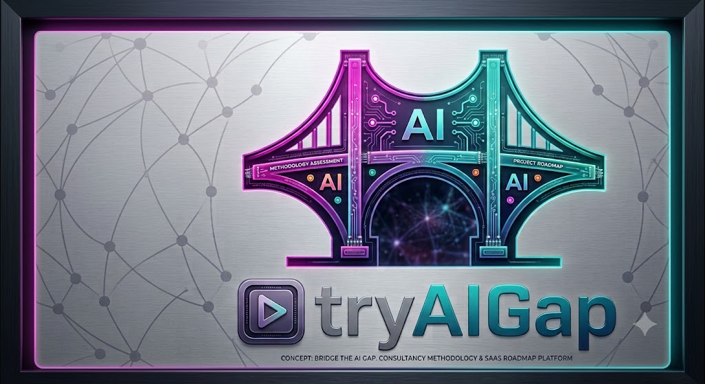

<!doctype html>
<html lang="es" data-theme="light">
<head>
<meta charset="utf-8" />
<meta name="viewport" content="width=device-width, initial-scale=1" />
<title>tryAIGap · AI Diagnostic — Wireframe v2</title>
<style>
/* ============================================================
   ALLOXENTRIC AI ASSESSMENT — CLIENT-SIDE WIREFRAME
   Single-file interactive prototype. ES/EN + Light/Dark.
   ============================================================ */

:root {
  --c-bg: #F5F7FB;
  --c-surface: #FFFFFF;
  --c-surface-2: #FAFBFD;
  --c-border: #E4E8F0;
  --c-border-strong: #C8D0DE;
  --c-text: #0A2540;
  --c-text-2: #4A5A75;
  --c-text-3: #8696AE;
  --c-primary: #0A2540;
  --c-primary-2: #16365C;
  --c-accent: #14B8A6;
  --c-accent-2: #2BD8C2;
  --c-magenta: #C9359F;
  --c-lime: #C8FF66;
  --c-warn: #F4A623;
  --c-danger: #E5484D;
  --c-success: #2BB673;
  --c-info: #3F7DEF;
  --shadow-sm: 0 1px 2px rgba(10,37,64,.06), 0 0 0 1px rgba(10,37,64,.04);
  --shadow-md: 0 8px 24px rgba(10,37,64,.08), 0 0 0 1px rgba(10,37,64,.05);
  --shadow-lg: 0 24px 56px rgba(10,37,64,.14);
  --radius: 12px;
  --radius-sm: 8px;
  --radius-lg: 18px;
  --font-sans: 'Inter', -apple-system, BlinkMacSystemFont, 'Helvetica Neue', system-ui, sans-serif;
  --font-serif: 'Source Serif Pro', 'Georgia', 'Times New Roman', serif;
  --font-mono: 'JetBrains Mono', 'SFMono-Regular', Menlo, Consolas, monospace;
}

[data-theme="dark"] {
  --c-bg: #0B1422;
  --c-surface: #111E33;
  --c-surface-2: #16243C;
  --c-border: #243553;
  --c-border-strong: #324669;
  --c-text: #E8EEF7;
  --c-text-2: #9FB0CC;
  --c-text-3: #6B7E9C;
  --c-primary: #E8EEF7;
  --c-primary-2: #BBD0F0;
  --c-accent: #2BD8C2;
  --c-accent-2: #4DEBD6;
  --shadow-sm: 0 1px 2px rgba(0,0,0,.4), 0 0 0 1px rgba(255,255,255,.04);
  --shadow-md: 0 8px 24px rgba(0,0,0,.45), 0 0 0 1px rgba(255,255,255,.05);
  --shadow-lg: 0 24px 56px rgba(0,0,0,.55);
}

* { box-sizing: border-box; }
html, body { margin: 0; padding: 0; height: 100%; }
body {
  font-family: var(--font-sans);
  font-size: 14px;
  color: var(--c-text);
  background: var(--c-bg);
  -webkit-font-smoothing: antialiased;
  line-height: 1.5;
}

a { color: inherit; }
button { font-family: inherit; cursor: pointer; }
input, select, textarea { font-family: inherit; font-size: inherit; color: inherit; }

/* ---------- App shell ---------- */
.app { display: grid; grid-template-rows: 60px 1fr; height: 100vh; }
.app--full { grid-template-rows: 1fr; }

.topbar {
  display: flex; align-items: center; justify-content: space-between;
  padding: 0 24px;
  background: var(--c-surface);
  border-bottom: 1px solid var(--c-border);
  z-index: 5;
}
.topbar__brand { display: flex; align-items: center; gap: 14px; cursor: pointer; }
.brand-mark {
  width: 30px; height: 30px; border-radius: 8px;
  background: linear-gradient(135deg, var(--c-primary) 0%, var(--c-accent) 100%);
  display: grid; place-items: center;
  color: white; font-weight: 700; font-size: 14px; letter-spacing: -.5px;
}
.brand-name { font-weight: 700; letter-spacing: .5px; font-size: 14px; }
.brand-name span { color: var(--c-text-3); font-weight: 400; margin-left: 6px; font-size: 12px; }

.topbar__right { display: flex; align-items: center; gap: 8px; }

.pill-badge {
  display: inline-flex; align-items: center; gap: 6px;
  padding: 6px 10px; border-radius: 999px;
  background: rgba(20,184,166,.1); color: var(--c-accent);
  font-size: 11px; font-weight: 600; cursor: help;
  border: 1px solid rgba(20,184,166,.2);
}
.pill-badge .dot { width: 6px; height: 6px; border-radius: 50%; background: var(--c-accent); }

.icon-btn {
  width: 34px; height: 34px; border-radius: 8px;
  border: 1px solid var(--c-border);
  background: var(--c-surface); color: var(--c-text-2);
  display: grid; place-items: center;
}
.icon-btn:hover { background: var(--c-surface-2); color: var(--c-text); }

.lang-toggle {
  display: inline-flex; border: 1px solid var(--c-border); border-radius: 8px;
  overflow: hidden; height: 34px;
}
.lang-toggle button {
  background: var(--c-surface); border: 0; padding: 0 12px;
  font-size: 12px; font-weight: 600; color: var(--c-text-2);
}
.lang-toggle button.is-on { background: var(--c-primary); color: var(--c-surface); }
[data-theme="dark"] .lang-toggle button.is-on { background: var(--c-accent); color: #062322; }

.avatar {
  width: 32px; height: 32px; border-radius: 50%;
  background: linear-gradient(135deg, #C9359F, #14B8A6);
  color: white; font-weight: 700; font-size: 12px;
  display: grid; place-items: center;
}

/* ---------- Layout body ---------- */
.body { display: grid; grid-template-columns: 248px 1fr; min-height: 0; }
.body--no-sidebar { grid-template-columns: 1fr; }

/* ---------- Sidebar ---------- */
.sidebar {
  background: var(--c-surface);
  border-right: 1px solid var(--c-border);
  padding: 18px 12px;
  display: flex; flex-direction: column; gap: 4px;
  overflow-y: auto;
}
.sidebar__group { margin-top: 14px; }
.sidebar__group-label {
  font-size: 10.5px; text-transform: uppercase; letter-spacing: 1.2px;
  color: var(--c-text-3); padding: 0 12px 6px; font-weight: 600;
}
.nav-item {
  display: flex; align-items: center; justify-content: space-between;
  padding: 9px 12px; border-radius: 8px;
  color: var(--c-text-2); font-size: 13.5px; font-weight: 500;
  cursor: pointer; gap: 8px;
}
.nav-item:hover { background: var(--c-surface-2); color: var(--c-text); }
.nav-item.is-active { background: rgba(20,184,166,.10); color: var(--c-text); font-weight: 600; }
.nav-item.is-active::before {
  content: ''; width: 3px; height: 18px; background: var(--c-accent);
  position: absolute; left: 0; border-radius: 0 3px 3px 0;
}
.nav-item { position: relative; }
.nav-item__left { display: flex; align-items: center; gap: 10px; min-width: 0; }
.nav-item__icon {
  width: 18px; height: 18px; flex: 0 0 18px;
  display: grid; place-items: center; color: currentColor;
}
.nav-item__count {
  font-size: 11px; padding: 2px 7px; border-radius: 999px;
  background: var(--c-surface-2); color: var(--c-text-3); font-weight: 600;
}
.nav-item.is-active .nav-item__count { background: var(--c-accent); color: white; }
.nav-sub {
  margin-left: 28px; padding-left: 8px;
  border-left: 1px dashed var(--c-border);
  display: flex; flex-direction: column; gap: 2px; padding-top: 4px; padding-bottom: 6px;
}
.nav-sub .nav-item { padding: 6px 10px; font-size: 12.5px; }

.sidebar__footer {
  margin-top: auto; padding: 12px 12px 4px;
  font-size: 11px; color: var(--c-text-3); line-height: 1.45;
  border-top: 1px solid var(--c-border);
}

/* ---------- Main ---------- */
.main { overflow-y: auto; padding: 28px 36px 48px; min-width: 0; }
.main--narrow { padding: 28px 6vw 48px; }

.page-head { display: flex; align-items: flex-end; justify-content: space-between; gap: 24px; margin-bottom: 22px; flex-wrap: wrap; }
.page-title { font-family: var(--font-serif); font-size: 28px; line-height: 1.15; font-weight: 600; letter-spacing: -.4px; margin: 0 0 4px; }
.page-sub { color: var(--c-text-2); font-size: 14px; margin: 0; max-width: 720px; }

/* ---------- Buttons ---------- */
.btn {
  display: inline-flex; align-items: center; gap: 8px;
  padding: 10px 16px; border-radius: 9px; border: 1px solid transparent;
  font-size: 13px; font-weight: 600; line-height: 1;
  background: var(--c-surface); color: var(--c-text);
  border-color: var(--c-border);
  transition: all .15s;
}
.btn:hover { border-color: var(--c-border-strong); }
.btn--primary { background: var(--c-primary); color: white; border-color: var(--c-primary); }
.btn--primary:hover { background: var(--c-primary-2); border-color: var(--c-primary-2); }
[data-theme="dark"] .btn--primary { background: var(--c-accent); color: #062322; border-color: var(--c-accent); }
[data-theme="dark"] .btn--primary:hover { background: var(--c-accent-2); border-color: var(--c-accent-2); }

.btn--ghost { background: transparent; border-color: transparent; color: var(--c-text-2); }
.btn--ghost:hover { background: var(--c-surface-2); color: var(--c-text); }

.btn--accent { background: var(--c-accent); border-color: var(--c-accent); color: white; }
.btn--accent:hover { background: var(--c-accent-2); border-color: var(--c-accent-2); }

.btn--danger { color: var(--c-danger); border-color: var(--c-border); }

.btn--lg { padding: 13px 20px; font-size: 14px; }
.btn--sm { padding: 7px 11px; font-size: 12px; }
.btn--block { width: 100%; justify-content: center; }
.btn:disabled { opacity: .5; cursor: not-allowed; }

/* ---------- Cards ---------- */
.card {
  background: var(--c-surface);
  border: 1px solid var(--c-border);
  border-radius: var(--radius);
  padding: 20px;
}
.card--elev { box-shadow: var(--shadow-md); }
.card--accent { border-color: var(--c-accent); background: linear-gradient(180deg, rgba(20,184,166,.04), transparent); }
.card-head { display: flex; align-items: flex-start; justify-content: space-between; gap: 12px; margin-bottom: 12px; }
.card-title { font-size: 14px; font-weight: 600; margin: 0; }
.card-sub { color: var(--c-text-2); font-size: 12.5px; margin: 0; }
.card-eyebrow { font-size: 11px; text-transform: uppercase; letter-spacing: 1px; color: var(--c-text-3); font-weight: 600; }

/* ---------- Generic chips / tags ---------- */
.chip {
  display: inline-flex; align-items: center; gap: 6px;
  padding: 4px 10px; border-radius: 999px;
  font-size: 11.5px; font-weight: 600;
  background: var(--c-surface-2); color: var(--c-text-2);
  border: 1px solid var(--c-border);
}
.chip--accent { background: rgba(20,184,166,.12); color: var(--c-accent); border-color: rgba(20,184,166,.25); }
.chip--warn { background: rgba(244,166,35,.12); color: var(--c-warn); border-color: rgba(244,166,35,.25); }
.chip--info { background: rgba(63,125,239,.12); color: var(--c-info); border-color: rgba(63,125,239,.25); }
.chip--ok { background: rgba(43,182,115,.12); color: var(--c-success); border-color: rgba(43,182,115,.25); }
.chip--danger { background: rgba(229,72,77,.12); color: var(--c-danger); border-color: rgba(229,72,77,.25); }
.chip .dot { width: 6px; height: 6px; border-radius: 50%; background: currentColor; }

/* ---------- Progress ---------- */
.progress { height: 6px; background: var(--c-surface-2); border-radius: 999px; overflow: hidden; }
.progress > div { height: 100%; background: var(--c-accent); border-radius: 999px; transition: width .3s; }
.progress--thin { height: 4px; }

/* ---------- Forms ---------- */
.field { display: flex; flex-direction: column; gap: 6px; }
.field label { font-size: 12px; font-weight: 600; color: var(--c-text-2); }
.input, .select, .textarea {
  background: var(--c-surface); border: 1px solid var(--c-border); border-radius: 9px;
  padding: 10px 13px; outline: 0; color: var(--c-text);
  font-size: 13.5px; transition: border-color .15s;
}
.input:focus, .select:focus, .textarea:focus { border-color: var(--c-accent); }
.textarea { min-height: 84px; resize: vertical; line-height: 1.5; }
.help { font-size: 11.5px; color: var(--c-text-3); }

.checkbox-row { display: flex; align-items: flex-start; gap: 10px; padding: 10px 12px; border-radius: 9px; cursor: pointer; border: 1px solid var(--c-border); background: var(--c-surface); }
.checkbox-row:hover { background: var(--c-surface-2); }
.checkbox-row.is-on { border-color: var(--c-accent); background: rgba(20,184,166,.06); }
.checkbox-row__check {
  width: 18px; height: 18px; border-radius: 5px;
  border: 1.5px solid var(--c-border-strong);
  background: var(--c-surface); flex: 0 0 18px;
  display: grid; place-items: center; margin-top: 1px;
}
.checkbox-row.is-on .checkbox-row__check { background: var(--c-accent); border-color: var(--c-accent); }
.checkbox-row.is-on .checkbox-row__check::after {
  content: ''; width: 5px; height: 9px; border: 1.5px solid white; border-top: 0; border-left: 0;
  transform: rotate(45deg) translate(-1px, -1px);
}
.checkbox-row__label { font-weight: 600; font-size: 13px; }
.checkbox-row__desc { font-size: 12px; color: var(--c-text-2); margin-top: 2px; }

/* ---------- Login ---------- */
.center-stage {
  min-height: 100vh; display: grid; place-items: center; padding: 32px;
  background: radial-gradient(circle at 20% 0%, rgba(20,184,166,.10), transparent 50%),
              radial-gradient(circle at 100% 100%, rgba(63,125,239,.08), transparent 60%),
              var(--c-bg);
}
.login-card {
  width: 100%; max-width: 420px;
  background: var(--c-surface);
  border-radius: var(--radius-lg);
  border: 1px solid var(--c-border);
  box-shadow: var(--shadow-lg);
  padding: 36px;
}
.login-brand {
  display: flex; align-items: center; gap: 12px; margin-bottom: 24px;
}
.login-title { font-family: var(--font-serif); font-size: 26px; line-height: 1.2; font-weight: 600; margin: 4px 0 6px; }
.login-sub { color: var(--c-text-2); margin: 0 0 22px; }

.divider { display: flex; align-items: center; gap: 10px; color: var(--c-text-3); font-size: 11.5px; margin: 22px 0; }
.divider::before, .divider::after { content: ''; flex: 1; border-top: 1px solid var(--c-border); }

/* ---------- Onboarding ---------- */
.wizard { max-width: 760px; margin: 0 auto; }
.wizard__steps { display: flex; gap: 6px; margin-bottom: 28px; }
.wizard__steps span {
  flex: 1; height: 4px; border-radius: 999px; background: var(--c-border);
}
.wizard__steps span.is-on { background: var(--c-accent); }
.wizard__steps span.is-done { background: var(--c-primary); }
[data-theme="dark"] .wizard__steps span.is-done { background: var(--c-accent-2); }

/* ---------- Dashboard grid ---------- */
.dash-grid { display: grid; grid-template-columns: repeat(12, 1fr); gap: 18px; }
.dash-grid > * { min-width: 0; }
.span-12 { grid-column: span 12; }
.span-8 { grid-column: span 8; }
.span-6 { grid-column: span 6; }
.span-4 { grid-column: span 4; }
.span-3 { grid-column: span 3; }
@media (max-width: 1100px) {
  .span-8, .span-6, .span-4, .span-3 { grid-column: span 12; }
}

.kpi { display: flex; flex-direction: column; gap: 6px; }
.kpi__value { font-family: var(--font-serif); font-size: 32px; font-weight: 600; line-height: 1; letter-spacing: -.5px; }
.kpi__label { font-size: 12px; color: var(--c-text-2); }
.kpi__delta { font-size: 11.5px; color: var(--c-success); font-weight: 600; }

/* Module cards */
.module-card {
  display: flex; flex-direction: column; gap: 10px;
  padding: 22px; border-radius: var(--radius);
  border: 1px solid var(--c-border); background: var(--c-surface);
  cursor: pointer; transition: all .15s;
  position: relative; overflow: hidden;
}
.module-card:hover { border-color: var(--c-accent); transform: translateY(-1px); box-shadow: var(--shadow-md); }
.module-card .ic {
  width: 36px; height: 36px; border-radius: 9px;
  background: rgba(20,184,166,.1); color: var(--c-accent);
  display: grid; place-items: center; margin-bottom: 4px;
}
.module-card h4 { font-size: 15px; margin: 0 0 2px; }
.module-card p { color: var(--c-text-2); margin: 0; font-size: 12.5px; line-height: 1.5; }
.module-card .meta { display: flex; gap: 12px; align-items: center; margin-top: 12px; }
.module-card .meta small { color: var(--c-text-3); font-size: 11.5px; }
.module-card.is-locked { opacity: .55; }
.module-card.is-locked::after {
  content: '🔒'; position: absolute; top: 12px; right: 12px; font-size: 14px;
}

/* ---------- Area tiles ---------- */
.area-grid { display: grid; grid-template-columns: repeat(auto-fill, minmax(280px, 1fr)); gap: 16px; }
.area-tile {
  background: var(--c-surface); border: 1px solid var(--c-border);
  border-radius: var(--radius); padding: 18px; cursor: pointer; transition: all .15s;
  display: flex; flex-direction: column; gap: 12px;
}
.area-tile:hover { border-color: var(--c-accent); transform: translateY(-1px); box-shadow: var(--shadow-md); }
.area-tile.is-inactive { opacity: .5; cursor: default; }
.area-tile.is-inactive:hover { transform: none; box-shadow: none; border-color: var(--c-border); }
.area-tile__head { display: flex; align-items: flex-start; justify-content: space-between; gap: 8px; }
.area-tile__icon {
  width: 38px; height: 38px; border-radius: 10px;
  background: rgba(20,184,166,.1); color: var(--c-accent);
  display: grid; place-items: center; font-size: 18px; flex: 0 0 38px;
}
.area-tile h4 { font-size: 14.5px; margin: 0; }
.area-tile__meta { display: flex; align-items: center; gap: 8px; font-size: 11.5px; color: var(--c-text-2); flex-wrap: wrap; }
.area-tile__lead { font-size: 12px; color: var(--c-text-2); }

/* ---------- Question view (Typeform-like) ---------- */
.q-stage { display: grid; grid-template-columns: 1fr 360px; gap: 28px; align-items: start; }
@media (max-width: 1100px) {
  .q-stage { grid-template-columns: 1fr; }
  .q-aside { order: -1; }
}
.q-card {
  background: var(--c-surface); border: 1px solid var(--c-border);
  border-radius: var(--radius-lg); padding: 36px 40px;
  box-shadow: var(--shadow-sm); min-height: 460px;
  display: flex; flex-direction: column;
}
.q-eyebrow { font-size: 11.5px; text-transform: uppercase; letter-spacing: 1.5px; color: var(--c-text-3); font-weight: 600; }
.q-text { font-family: var(--font-serif); font-size: 26px; line-height: 1.3; font-weight: 600; margin: 14px 0 20px; }
.q-help { color: var(--c-text-2); font-size: 13.5px; margin: 0 0 28px; }

.q-scale { display: grid; grid-template-columns: repeat(5, 1fr); gap: 10px; }
.q-scale button {
  display: flex; flex-direction: column; align-items: center; justify-content: center;
  gap: 4px; padding: 16px 8px; border-radius: 12px;
  background: var(--c-surface); border: 1.5px solid var(--c-border);
  font-weight: 700; color: var(--c-text);
  font-family: var(--font-serif); font-size: 22px;
  transition: all .15s;
}
.q-scale button span {
  font-size: 10.5px; font-family: var(--font-sans); font-weight: 500; color: var(--c-text-3);
  letter-spacing: .3px; text-transform: uppercase;
}
.q-scale button:hover { border-color: var(--c-accent); color: var(--c-accent); }
.q-scale button.is-on { background: var(--c-accent); border-color: var(--c-accent); color: white; }
.q-scale button.is-on span { color: rgba(255,255,255,.85); }

.q-actions {
  display: flex; gap: 10px; flex-wrap: wrap;
  margin-top: 22px; padding-top: 18px; border-top: 1px dashed var(--c-border);
}
.q-foot { margin-top: auto; padding-top: 24px; display: flex; justify-content: space-between; align-items: center; }
.q-foot small { color: var(--c-text-3); font-size: 11.5px; }

.q-aside-card { background: var(--c-surface); border: 1px solid var(--c-border); border-radius: var(--radius); padding: 18px; }
.q-aside-card h5 { margin: 0 0 4px; font-size: 13px; display: flex; align-items: center; gap: 8px; }
.q-aside-card .ai-spark {
  width: 24px; height: 24px; border-radius: 7px;
  background: linear-gradient(135deg, var(--c-magenta), var(--c-accent));
  display: grid; place-items: center; color: white; font-size: 12px;
}
.q-aside-card p { font-size: 12.5px; color: var(--c-text-2); margin: 8px 0; }
.q-aside-card .example {
  background: var(--c-surface-2); border-left: 2px solid var(--c-accent);
  padding: 10px 12px; border-radius: 0 8px 8px 0; font-size: 12px;
  color: var(--c-text-2);
}

/* ---------- Tabs ---------- */
.tabs { display: flex; gap: 4px; border-bottom: 1px solid var(--c-border); margin-bottom: 22px; }
.tabs button {
  background: transparent; border: 0; padding: 10px 16px;
  font-size: 13px; font-weight: 600; color: var(--c-text-2);
  border-bottom: 2px solid transparent; transform: translateY(1px);
}
.tabs button:hover { color: var(--c-text); }
.tabs button.is-on { color: var(--c-text); border-bottom-color: var(--c-accent); }

/* ---------- Tables ---------- */
.tbl { width: 100%; border-collapse: separate; border-spacing: 0; font-size: 13px; }
.tbl th { text-align: left; padding: 10px 14px; color: var(--c-text-3); font-weight: 600; font-size: 11.5px; text-transform: uppercase; letter-spacing: .8px; border-bottom: 1px solid var(--c-border); background: var(--c-surface-2); }
.tbl td { padding: 14px; border-bottom: 1px solid var(--c-border); vertical-align: middle; }
.tbl tr:last-child td { border-bottom: 0; }
.tbl tr:hover td { background: var(--c-surface-2); }

/* ---------- Charts area ---------- */
.heatmap { display: grid; gap: 4px; font-size: 11px; }
.heatmap .row { display: grid; grid-template-columns: 160px repeat(5, 1fr); gap: 4px; align-items: center; }
.heatmap .row .lbl { color: var(--c-text-2); font-weight: 600; padding-right: 8px; }
.heatmap .row.head .cell { background: transparent; color: var(--c-text-3); font-weight: 600; padding: 4px; text-align: center; font-size: 10.5px; text-transform: uppercase; letter-spacing: .5px; }
.heatmap .cell {
  height: 36px; border-radius: 6px; display: grid; place-items: center;
  color: var(--c-text); font-weight: 700; font-family: var(--font-mono); font-size: 11px;
}
.h0 { background: var(--c-surface-2); color: var(--c-text-3) !important; }
.h1 { background: rgba(20,184,166,.15); }
.h2 { background: rgba(20,184,166,.30); }
.h3 { background: rgba(20,184,166,.55); color: white !important; }
.h4 { background: rgba(20,184,166,.85); color: white !important; }

.matrix-2x2 {
  display: grid; grid-template-columns: 60px 1fr 1fr; grid-template-rows: 30px 1fr 1fr 30px; height: 320px; gap: 0;
}
.matrix-cell {
  border: 1px solid var(--c-border); padding: 14px; display: flex; flex-direction: column; gap: 4px;
}
.matrix-cell h5 { margin: 0; font-size: 12px; }
.matrix-cell small { color: var(--c-text-3); font-size: 11px; }
.matrix-cell .pill { font-size: 10.5px; font-weight: 700; align-self: flex-start; padding: 2px 7px; border-radius: 999px; }
.matrix-axis { color: var(--c-text-3); font-size: 11px; font-weight: 600; display: grid; place-items: center; text-transform: uppercase; letter-spacing: 1px; }

/* ---------- Rating stars ---------- */
.rating-row {
  display: grid; grid-template-columns: 1fr auto; gap: 16px; align-items: center;
  padding: 14px 0; border-bottom: 1px solid var(--c-border);
}
.rating-row:last-child { border-bottom: 0; }
.rating-row .b { font-size: 14px; }
.rating-row .desc { color: var(--c-text-2); font-size: 12.5px; margin-top: 2px; }
.rating-stars { display: inline-flex; gap: 2px; }
.rating-star {
  background: transparent; border: 0; padding: 4px 6px; cursor: pointer;
  font-size: 26px; color: var(--c-border-strong); transition: color .15s, transform .15s;
  line-height: 1;
}
.rating-star.is-filled { color: var(--c-warn); }
.rating-star:hover { color: var(--c-warn); transform: scale(1.08); }
.rating-current { font-size: 11px; color: var(--c-text-3); margin-left: 8px; min-width: 60px; text-align: right; }
.validator-avatar {
  width: 30px; height: 30px; border-radius: 50%;
  background: linear-gradient(135deg, var(--c-magenta), var(--c-accent));
  color: white; font-weight: 700; font-size: 11px;
  display: grid; place-items: center; flex: 0 0 30px;
}
.chapter-card { transition: all .15s; }
.chapter-card:hover { border-color: var(--c-accent); box-shadow: var(--shadow-sm); }

/* ---------- Settings panel (onboarding step 2) ---------- */
.team-table { width: 100%; border-collapse: separate; border-spacing: 0; }
.team-table th { font-size: 11px; text-transform: uppercase; letter-spacing: .8px; color: var(--c-text-3); font-weight: 600; padding: 6px 8px; text-align: left; }
.team-table td { padding: 6px 4px; }
.team-table input, .team-table select { width: 100%; }
.team-table .input, .team-table .select { padding: 9px 11px; font-size: 13px; }
.team-table tr:hover .remove-btn { opacity: 1; }
.team-table .remove-btn { opacity: .5; transition: opacity .15s; }
.logo-drop {
  display: flex; flex-direction: column; align-items: center; justify-content: center;
  gap: 8px; min-height: 180px; padding: 18px;
  border: 2px dashed var(--c-border-strong); border-radius: 12px;
  background: var(--c-surface-2); cursor: pointer; transition: all .15s;
  color: var(--c-text-2);
}
.logo-drop:hover { border-color: var(--c-accent); background: rgba(20,184,166,.04); color: var(--c-text); }
.logo-drop img { max-width: 100%; max-height: 130px; object-fit: contain; }
.logo-drop.has-logo { border-style: solid; }
.theme-pill, .lang-pill {
  display: inline-flex; border: 1px solid var(--c-border); border-radius: 9px; overflow: hidden;
}
.theme-pill button, .lang-pill button {
  background: var(--c-surface); border: 0; padding: 8px 16px;
  font-size: 12px; font-weight: 600; color: var(--c-text-2); cursor: pointer;
  display: inline-flex; align-items: center; gap: 6px;
}
.theme-pill button.is-on, .lang-pill button.is-on { background: var(--c-primary); color: var(--c-surface); }
[data-theme="dark"] .theme-pill button.is-on, [data-theme="dark"] .lang-pill button.is-on { background: var(--c-accent); color: #062322; }
.lang-pill--grid {
  display: grid; grid-template-columns: 1fr 1fr; overflow: hidden;
}
.lang-pill--grid button { justify-content: flex-start; border-bottom: 1px solid var(--c-border); }
.lang-pill--grid button:nth-child(odd) { border-right: 1px solid var(--c-border); }
.lang-pill--grid button:nth-last-child(-n+2) { border-bottom: 0; }
.lang-pill--grid .flag { width: 18px; height: 12.6px; }

/* ---------- Landing (commercial) ---------- */
.landing { min-height: 100vh; background: var(--c-bg); }
.landing-nav {
  position: sticky; top: 0; z-index: 20;
  display: flex; align-items: center; justify-content: space-between;
  padding: 14px 6vw;
  background: var(--c-surface);
  border-bottom: 1px solid var(--c-border);
}
.landing-hero {
  padding: 84px 6vw 100px;
  background:
    radial-gradient(ellipse at 15% 0%, rgba(20,184,166,.16), transparent 55%),
    radial-gradient(ellipse at 100% 30%, rgba(63,125,239,.12), transparent 55%),
    var(--c-bg);
  border-bottom: 1px solid var(--c-border);
}
.landing-hero__inner { max-width: 1100px; margin: 0 auto; }
.landing-eyebrow {
  display: inline-flex; align-items: center; gap: 8px;
  background: rgba(20,184,166,.10); color: var(--c-accent);
  padding: 6px 14px; border-radius: 999px; font-size: 12px; font-weight: 600;
  border: 1px solid rgba(20,184,166,.2);
  margin-bottom: 22px;
}
.landing-h1 {
  font-family: var(--font-serif); font-size: 56px; line-height: 1.05;
  font-weight: 600; letter-spacing: -1.2px; margin: 0 0 20px;
  max-width: 18ch;
}
.landing-h1 em { color: var(--c-accent); font-style: normal; }
.landing-sub {
  font-size: 18px; line-height: 1.6; color: var(--c-text-2);
  max-width: 64ch; margin: 0 0 32px;
}
.landing-cta-row { display: flex; gap: 12px; flex-wrap: wrap; align-items: center; margin-bottom: 36px; }
.btn--xl { padding: 16px 26px; font-size: 15px; }
.trust-badges { display: flex; gap: 20px; flex-wrap: wrap; align-items: center; color: var(--c-text-3); font-size: 12px; }
.trust-badges span { display: inline-flex; align-items: center; gap: 6px; font-weight: 600; }

.landing-section { padding: 80px 6vw; max-width: 1240px; margin: 0 auto; }
.landing-section h2 {
  font-family: var(--font-serif); font-size: 36px; line-height: 1.15; font-weight: 600;
  letter-spacing: -.4px; margin: 0 0 14px; max-width: 22ch;
}
.landing-section .section-sub {
  font-size: 16px; color: var(--c-text-2); max-width: 64ch; margin: 0 0 36px;
}
.landing-section.alt { background: var(--c-surface); border-top: 1px solid var(--c-border); border-bottom: 1px solid var(--c-border); max-width: none; }
.landing-section.alt > .section-inner { max-width: 1240px; margin: 0 auto; }

.stat-strip {
  display: grid; grid-template-columns: repeat(3, 1fr); gap: 0;
  border: 1px solid var(--c-border); border-radius: 14px;
  background: var(--c-surface); overflow: hidden;
  max-width: 1100px; margin: 0 auto;
}
.stat-strip > div { padding: 22px 26px; border-right: 1px solid var(--c-border); }
.stat-strip > div:last-child { border-right: 0; }
.stat-strip strong { font-family: var(--font-serif); font-size: 30px; font-weight: 600; letter-spacing: -.5px; display: block; }
.stat-strip span { font-size: 12.5px; color: var(--c-text-2); }

.module-grid {
  display: grid; grid-template-columns: repeat(auto-fill, minmax(280px, 1fr)); gap: 14px;
}
.module-tile {
  padding: 22px; border-radius: 12px; border: 1px solid var(--c-border);
  background: var(--c-surface); transition: all .15s;
  display: flex; flex-direction: column; gap: 8px; min-height: 160px;
}
.module-tile:hover { border-color: var(--c-accent); transform: translateY(-1px); box-shadow: var(--shadow-md); }
.module-tile__num {
  width: 30px; height: 30px; border-radius: 8px;
  background: rgba(20,184,166,.12); color: var(--c-accent);
  display: grid; place-items: center; font-weight: 700; font-size: 13px;
  font-family: var(--font-mono);
}
.module-tile h3 { margin: 4px 0 0; font-size: 15px; font-weight: 600; }
.module-tile p { margin: 0; font-size: 13px; color: var(--c-text-2); line-height: 1.55; }

.diff-grid { display: grid; grid-template-columns: repeat(auto-fill, minmax(300px, 1fr)); gap: 16px; }
.diff-card { padding: 22px; border: 1px solid var(--c-border); background: var(--c-surface); border-radius: 12px; }
.diff-card .ic {
  width: 36px; height: 36px; border-radius: 9px;
  background: linear-gradient(135deg, var(--c-magenta), var(--c-accent));
  color: white; display: grid; place-items: center; margin-bottom: 12px;
}
.diff-card h4 { margin: 0 0 6px; font-size: 14.5px; font-weight: 600; }
.diff-card p { margin: 0; font-size: 13px; color: var(--c-text-2); line-height: 1.55; }

.pricing-grid { display: grid; grid-template-columns: repeat(3, 1fr); gap: 18px; }
@media (max-width: 900px) { .pricing-grid { grid-template-columns: 1fr; } }
.tier {
  padding: 28px; border: 1px solid var(--c-border); background: var(--c-surface);
  border-radius: 14px; display: flex; flex-direction: column; gap: 12px;
}
.tier--featured { border-color: var(--c-accent); position: relative; box-shadow: var(--shadow-md); }
.tier--featured::before {
  content: 'Más elegido'; position: absolute; top: -12px; left: 24px;
  background: var(--c-accent); color: white; font-size: 11px; font-weight: 700;
  padding: 4px 10px; border-radius: 999px; letter-spacing: .5px; text-transform: uppercase;
}
.tier--featured.tier--en::before { content: 'Most chosen'; }
.tier h3 { margin: 0; font-size: 18px; font-weight: 600; font-family: var(--font-serif); }
.tier .tier-price { font-family: var(--font-serif); font-size: 32px; font-weight: 600; letter-spacing: -.6px; line-height: 1; }
.tier .tier-price small { font-size: 13px; color: var(--c-text-3); font-family: var(--font-sans); font-weight: 400; margin-left: 6px; }
.tier .tier-meta { color: var(--c-text-2); font-size: 13px; }
.tier ul { margin: 8px 0 16px; padding-left: 18px; color: var(--c-text-2); font-size: 13px; line-height: 1.7; }
.tier ul li { margin: 0; }

.final-cta {
  text-align: center; padding: 80px 6vw;
  background: linear-gradient(135deg, var(--c-primary) 0%, var(--c-primary-2) 100%);
  color: white;
}
[data-theme="dark"] .final-cta { background: linear-gradient(135deg, #08152A 0%, #122846 100%); }
.final-cta h2 { font-family: var(--font-serif); font-size: 38px; margin: 0 0 16px; max-width: 30ch; line-height: 1.15; margin-left: auto; margin-right: auto; color: white; }
.final-cta p { color: rgba(255,255,255,.78); max-width: 50ch; margin: 0 auto 28px; font-size: 16px; }
.final-cta .btn { background: white; color: var(--c-primary); border-color: white; }
.final-cta .btn:hover { background: var(--c-lime); border-color: var(--c-lime); }

.landing-foot {
  background: var(--c-surface); border-top: 1px solid var(--c-border);
  padding: 32px 6vw; color: var(--c-text-3); font-size: 12.5px;
  display: flex; align-items: center; justify-content: space-between; flex-wrap: wrap; gap: 16px;
}
.landing-foot a { color: var(--c-text-2); text-decoration: none; margin-right: 16px; cursor: pointer; }
.landing-foot a:hover { color: var(--c-accent); }

/* ---------- Terms & Conditions ---------- */
.terms-page { min-height: 100vh; background: var(--c-bg); }
.terms-container { max-width: 800px; margin: 0 auto; padding: 56px 6vw 80px; }
.terms-container h1 { font-family: var(--font-serif); font-size: 36px; margin: 8px 0 8px; letter-spacing: -.4px; }
.terms-container .terms-eyebrow { color: var(--c-text-3); font-size: 12.5px; }
.terms-container h2 {
  font-family: var(--font-serif); font-size: 19px; font-weight: 600;
  margin: 36px 0 8px; padding-top: 22px; border-top: 1px solid var(--c-border);
}
.terms-container h2:first-of-type { border-top: 0; padding-top: 0; }
.terms-container p { color: var(--c-text-2); font-size: 14px; line-height: 1.7; margin: 0 0 12px; }
.terms-container .terms-back { margin-top: 40px; }
@media (max-width: 800px) {
  .landing-h1 { font-size: 38px; }
  .landing-section h2 { font-size: 28px; }
  .stat-strip { grid-template-columns: 1fr; }
  .stat-strip > div { border-right: 0; border-bottom: 1px solid var(--c-border); }
}

/* ---------- Assistant chat modal ---------- */
.modal--lg { max-width: 640px; }
.chat {
  display: flex; flex-direction: column; gap: 10px;
  background: var(--c-surface-2); border-radius: 12px;
  padding: 14px; max-height: 360px; overflow-y: auto;
  border: 1px solid var(--c-border);
}
.chat-msg { display: flex; gap: 10px; align-items: flex-start; }
.chat-msg__avatar {
  width: 28px; height: 28px; border-radius: 50%;
  display: grid; place-items: center; flex: 0 0 28px;
  font-weight: 700; font-size: 11px; color: white;
}
.chat-msg--ai .chat-msg__avatar { background: linear-gradient(135deg, var(--c-accent), var(--c-info)); }
.chat-msg--user .chat-msg__avatar { background: linear-gradient(135deg, #6FA3FF, #8E7AFF); }
.chat-msg__bubble {
  background: var(--c-surface); border: 1px solid var(--c-border);
  padding: 10px 13px; border-radius: 12px;
  font-size: 13px; line-height: 1.5; max-width: 88%;
}
.chat-msg--user { flex-direction: row-reverse; }
.chat-msg--user .chat-msg__bubble { background: var(--c-primary); color: var(--c-surface); border-color: var(--c-primary); }
[data-theme="dark"] .chat-msg--user .chat-msg__bubble { background: var(--c-accent); color: #062322; border-color: var(--c-accent); }
.chat-msg__bubble strong { font-weight: 700; }

.suggested {
  display: flex; flex-wrap: wrap; gap: 6px; margin-top: 12px;
}
.suggested .chip { cursor: pointer; padding: 6px 12px; }
.suggested .chip:hover { border-color: var(--c-accent); color: var(--c-accent); }

.chat-input {
  display: flex; gap: 8px; align-items: center; margin-top: 14px;
}
.chat-input input {
  flex: 1; background: var(--c-surface); border: 1px solid var(--c-border);
  border-radius: 9px; padding: 11px 14px; outline: 0; color: var(--c-text);
  font-size: 13.5px;
}
.chat-input input:focus { border-color: var(--c-accent); }

/* ---------- WhatsApp / handoff modal ---------- */
.modal-bg {
  position: fixed; inset: 0; background: rgba(8, 18, 33, .55);
  display: grid; place-items: center; z-index: 100; padding: 24px;
  backdrop-filter: blur(2px);
}
.modal {
  background: var(--c-surface); border-radius: var(--radius-lg);
  border: 1px solid var(--c-border); box-shadow: var(--shadow-lg);
  width: 100%; max-width: 540px; padding: 28px;
}
.modal__close { float: right; }
.wa-preview {
  background: #075E54; color: white;
  border-radius: 12px; padding: 16px; font-size: 13px;
  position: relative; margin-top: 12px;
}
.wa-preview::before { content: 'WhatsApp · agente'; position: absolute; top: 8px; left: 16px; font-size: 10px; opacity: .8; text-transform: uppercase; letter-spacing: 1px; }
.wa-bubble {
  background: white; color: #0A2540; border-radius: 10px;
  padding: 10px 12px; margin: 10px 0 0;
  font-size: 13px; line-height: 1.4; max-width: 80%;
  box-shadow: 0 1px 1px rgba(0,0,0,.1);
}
.wa-bubble--out {
  background: #DCF8C6; margin-left: auto;
}

/* ---------- Misc utils ---------- */
.row { display: flex; gap: 12px; align-items: center; flex-wrap: wrap; }
.row--between { justify-content: space-between; }
.col { display: flex; flex-direction: column; gap: 12px; }
.muted { color: var(--c-text-3); }
.small { font-size: 12px; }
.tiny { font-size: 11px; }
.b { font-weight: 600; }
.mt-0 { margin-top: 0; }
.mt-1 { margin-top: 8px; }
.mt-2 { margin-top: 16px; }
.mt-3 { margin-top: 24px; }
.mt-4 { margin-top: 32px; }
.gap-2 { gap: 16px; }
.text-right { text-align: right; }
.text-center { text-align: center; }
.divider-h { height: 1px; background: var(--c-border); margin: 18px 0; }

.kbd { font-family: var(--font-mono); font-size: 11px; padding: 2px 6px; border: 1px solid var(--c-border); border-radius: 5px; background: var(--c-surface-2); color: var(--c-text-2); }

.step-list { counter-reset: step; padding: 0; list-style: none; margin: 0; }
.step-list li {
  counter-increment: step;
  padding: 14px 16px 14px 50px; position: relative;
  border: 1px solid var(--c-border); border-radius: 10px;
  background: var(--c-surface); margin-bottom: 8px;
}
.step-list li::before {
  content: counter(step); position: absolute; left: 14px; top: 14px;
  width: 24px; height: 24px; border-radius: 50%;
  background: var(--c-accent); color: white;
  display: grid; place-items: center; font-weight: 700; font-size: 12px;
}

.scroll-hint { display: flex; gap: 6px; align-items: center; color: var(--c-text-3); font-size: 11px; }

/* ---------- Radar (SVG-based) ---------- */
.radar { width: 100%; height: 320px; }


/* ============================================================
   V2 — device preview, bottom nav, paywall, consultant, locks
   ============================================================ */
.device-toggle {
  position: fixed; bottom: 18px; right: 18px; z-index: 999;
  display: flex; gap: 2px; padding: 4px;
  background: var(--c-surface); border: 1px solid var(--c-border);
  border-radius: 999px; box-shadow: var(--shadow-md);
}
.device-toggle button {
  display: inline-flex; align-items: center; gap: 6px;
  border: 0; background: transparent; padding: 6px 12px;
  border-radius: 999px; font-size: 12px; font-weight: 600; color: var(--c-text-2);
}
.device-toggle button.is-on { background: var(--c-primary); color: var(--c-bg); }
[data-theme="light"] .device-toggle button.is-on { color: #fff; }

/* Phone frame preview */
[data-device="mobile"] body { background: #0b0f19; }
[data-device="mobile"] #app {
  width: 402px; height: 852px; margin: 26px auto;
  border: 11px solid #10141f; border-radius: 42px;
  overflow: auto; background: var(--c-bg);
  box-shadow: 0 30px 80px rgba(0,0,0,.55);
  scrollbar-width: none;
}
[data-device="mobile"] #app::-webkit-scrollbar { display: none; }
[data-device="mobile"] .app { height: 100%; grid-template-rows: 56px 1fr auto; }
[data-device="mobile"] .body { grid-template-columns: 1fr !important; }
[data-device="mobile"] .sidebar { display: none !important; }
[data-device="mobile"] .bottomnav { display: grid; }
[data-device="mobile"] .topbar { padding: 0 14px; }
[data-device="mobile"] .topbar .pill-badge,
[data-device="mobile"] .icon-btn[title="search"],
[data-device="mobile"] .icon-btn[title="notifications"] { display: none; }
[data-device="mobile"] .main { padding: 16px !important; }
[data-device="mobile"] .dash-grid { display: flex; flex-direction: column; }
[data-device="mobile"] .page-head { flex-direction: column; align-items: flex-start; gap: 10px; }
[data-device="mobile"] .module-grid,
[data-device="mobile"] .diff-grid { grid-template-columns: 1fr !important; }
[data-device="mobile"] .landing-h1 { font-size: 30px !important; }
[data-device="mobile"] .landing-hero,
[data-device="mobile"] .landing-section { padding-left: 20px !important; padding-right: 20px !important; }
[data-device="mobile"] .landing-nav { padding: 12px 14px; flex-wrap: wrap; gap: 8px; }
[data-device="mobile"] .landing-nav .pill-badge { display: none; }
[data-device="mobile"] .stat-strip { display: grid !important; grid-template-columns: 1fr 1fr !important; gap: 14px; }
[data-device="mobile"] .landing-cta-row { flex-direction: column; align-items: stretch; }
[data-device="mobile"] .center-stage { padding: 16px; align-items: flex-start !important; padding-top: 24px !important; }
[data-device="mobile"] .login-card, [data-device="mobile"] .wizard { max-width: 100% !important; width: 100%; }
[data-device="mobile"] .leadgrid { grid-template-columns: 1fr !important; }
[data-device="mobile"] .ctable .crow { grid-template-columns: 1.6fr 1fr 1fr; }
[data-device="mobile"] .ctable .crow > div:nth-child(4),
[data-device="mobile"] .ctable .crow > div:nth-child(6) { display: none; }
[data-device="mobile"] .kpi-sm { width: 100%; }
[data-device="mobile"] .device-toggle { bottom: 10px; right: 10px; }

/* Bottom nav */
.bottomnav {
  display: none; grid-template-columns: repeat(4, 1fr);
  border-top: 1px solid var(--c-border); background: var(--c-surface);
}
.bottomnav button {
  position: relative; border: 0; background: transparent;
  display: flex; flex-direction: column; align-items: center; gap: 3px;
  padding: 9px 0 12px; font-size: 10.5px; font-weight: 600; color: var(--c-text-3);
}
.bottomnav button.is-on { color: var(--c-accent); }
.bottomnav .bn-lock { position: absolute; top: 6px; right: 22%; color: var(--c-text-3); }

@media (max-width: 640px) {
  .sidebar { display: none !important; }
  .body { grid-template-columns: 1fr !important; }
  .bottomnav { display: grid; }
  .app { grid-template-rows: 56px 1fr auto; }
  .leadgrid { grid-template-columns: 1fr !important; }
}

/* Freemium locks */
.nav-item--locked { opacity: .62; }
.nav-item--locked:hover { opacity: .9; }
.nav-lock { display: inline-flex; align-items: center; background: transparent !important; }

/* Paywall */
.paywall-teaser { filter: blur(5px); pointer-events: none; user-select: none; opacity: .8; }
.paywall-lock {
  position: absolute; left: 50%; top: 62%; transform: translate(-50%, -50%);
  width: 52px; height: 52px; border-radius: 50%;
  background: var(--c-surface); border: 1px solid var(--c-border);
  box-shadow: var(--shadow-md);
  display: grid; place-items: center; color: var(--c-text-2);
}
.paywall-lock svg { width: 20px; height: 20px; }
.paywall-list { list-style: none; margin: 12px 0 0; padding: 0; display: flex; flex-direction: column; gap: 10px; }
.paywall-list li { display: flex; align-items: flex-start; gap: 9px; font-size: 13.5px; }
.paywall-list li svg { flex: 0 0 auto; margin-top: 2px; color: var(--c-success); }

/* Consultant table */
.ctable { width: 100%; }
.ctable .crow {
  display: grid; grid-template-columns: 2.1fr .9fr 1.3fr .7fr 1.2fr .8fr;
  gap: 10px; align-items: center; padding: 13px 18px;
  border-bottom: 1px solid var(--c-border); font-size: 13px;
}
.ctable .crow:last-child { border-bottom: 0; }
.ctable .crow:not(.crow--head) { cursor: pointer; }
.ctable .crow:not(.crow--head):hover { background: var(--c-surface-2); }
.ctable .crow--head {
  font-size: 11px; font-weight: 700; text-transform: uppercase; letter-spacing: .8px;
  color: var(--c-text-3); background: var(--c-surface-2);
}

/* ---------- V2.1: flag language selector ---------- */
.flag { width: 20px; height: 14px; border-radius: 2.5px; box-shadow: 0 0 0 1px rgba(0,0,0,.10); display: block; flex: 0 0 auto; }
.lang-select { position: relative; }
.lang-select__btn {
  display: inline-flex; align-items: center; gap: 7px; height: 34px; padding: 0 10px;
  border: 1px solid var(--c-border); background: var(--c-surface); border-radius: 8px;
  font-size: 12px; font-weight: 600; color: var(--c-text-2);
}
.lang-select__btn:hover { background: var(--c-surface-2); color: var(--c-text); }
.lang-select__menu {
  position: absolute; top: calc(100% + 6px); right: 0; z-index: 300; min-width: 175px;
  background: var(--c-surface); border: 1px solid var(--c-border); border-radius: 10px;
  box-shadow: var(--shadow-md); padding: 5px; display: flex; flex-direction: column;
}
.lang-select__menu button {
  display: flex; align-items: center; gap: 9px; padding: 8px 10px;
  border: 0; background: transparent; border-radius: 7px;
  font-size: 13px; color: var(--c-text); text-align: left; width: 100%;
}
.lang-select__menu button:hover { background: var(--c-surface-2); }
.lang-select__menu button.is-on { background: rgba(20,184,166,.1); color: var(--c-accent); font-weight: 600; }
.testmode-card { border: 1px dashed var(--c-accent); border-radius: 12px; padding: 14px; background: rgba(20,184,166,.05); }
.testmode-cred { background: var(--c-surface-2); border: 1px solid var(--c-border); border-radius: 8px; padding: 8px 10px; }
.testmode-cred code { font-family: var(--font-mono); color: var(--c-text); }
</style>
</head>
<body>

<div id="app"></div>

<script>
/* ============================================================
   STATE
   ============================================================ */
const state = {
  plan: 'free',                    // 'free' | 'pro'
  role: 'client',                  // 'client' | 'consultant'
  device: 'desktop',               // 'desktop' | 'mobile' (preview toggle)
  consultantClient: null,
  delegateForm: { name: '', email: '', showErrors: false, success: false, sentTo: '' },
  lead: { name: '', role: '', email: '', company: '', size: '', industry: '', country: '', terms: false, showErrors: false },
  section: 'landing',              // landing | terms | login | onboarding | dashboard | estimator | maturity | areas | area-detail | documents | team | results | review | settings
  lang: (function(){ const n = (navigator.language || 'es').slice(0,2).toLowerCase(); return ['es','en','de','pt'].includes(n) ? n : 'es'; })(),
  langMenu: false,
  theme: window.matchMedia('(prefers-color-scheme: dark)').matches ? 'dark' : 'light',
  onboardingStep: 1,             // 1..4
  wizardModule: 'maturity',      // maturity | area | estimator
  wizardStep: 1,
  currentArea: null,
  areaTab: 'questionnaire',
  modal: null,
  termsReturn: 'login',  // where to go back from terms page
  // Mock progress
  org: { name: 'Acme Industrial Ltd.', sector: 'Manufacturing', size: 'Mid-size (250-2,000)', country: 'United Kingdom' },
  progress: {
    estimator: 100,
    maturity: 65,
    areasOverall: 38,
  },
  activeAreas: ['ventas','marketing','servicio'],
  selectedScale: 0,
  // Question engine
  qmode: null,            // 'maturity' | 'area' | null
  qBlockIdx: 0,
  qIdx: 0,
  qView: 'question',      // 'question' | 'block-summary' | 'module-summary'
  answers: {},            // key: 'maturity:A1' or 'area:ventas:A1' → 1..5 or 'idk'
  assistantMessages: [],
  estimator: {
    base: 500,
    finalReport: false,
    areas: {
      ventas:      { active: true,  review: false, sessions: 0 },
      marketing:   { active: true,  review: false, sessions: 0 },
      servicio:    { active: true,  review: false, sessions: 0 },
      finanzas:    { active: false, review: false, sessions: 0 },
      rrhh:        { active: false, review: false, sessions: 0 },
      operaciones: { active: false, review: false, sessions: 0 },
      legal:       { active: false, review: false, sessions: 0 },
    },
    distributorCode: '',
    discountApplied: false,
    paid: false,
    processing: false
  },
  invitedMembers: [],
  inviteForm: { name: '', email: '', whatsapp: '', phone: '', area: '', showErrors: false, success: false, lastInvited: '' },
  review: {
    stage: 1,                 // 0=auto-service, 1=in review, 2=validated
    mode: 'async',            // 'sync' | 'async'
    evaluations: {},          // { chapterId: { knowledge, friendliness, methodology, comments } }
    evalForm: { chapterId: null, knowledge: 0, friendliness: 0, methodology: 0, comments: '', showError: false, success: false, lastChapter: '' }
  },
  settings: {
    legalName: '',
    address: '',
    taxId: '',
    team: [
      { name: '', email: '', phone: '', area: '' },
      { name: '', email: '', phone: '', area: '' },
      { name: '', email: '', phone: '', area: '' }
    ],
    docLang: '',
    logoDataUrl: null,
    logoName: ''
  },
};

/* ============================================================
   I18N
   ============================================================ */
const I = {
  es: {
    appName: 'tryAIGap', appSub: 'AI Assessment',
    poweredBy: 'Basado en la metodología tryAIGap · 7 módulos',
    dataResidency: 'Datos en UK · UK GDPR-ready',
    nav: {
      group_main: 'Diagnóstico',
      group_collab: 'Colaboración',
      group_outputs: 'Resultados',
      home: 'Inicio',
      estimator: 'Estimador estratégico',
      maturity: 'Diagnóstico de madurez',
      areas: 'Áreas funcionales',
      documents: 'Documentos',
      team: 'Equipo',
      results: 'Resultados',
      review: 'Revisión humana',
      settings: 'Configuración',
    },
    login: {
      title: 'Diagnostica tu IA con método.',
      sub: 'Un assessment guiado, opcionalmente supervisado por consultores tryAIGap, basado en una metodología de 7 módulos.',
      email: 'Tu email corporativo',
      send: 'Enviar magic link',
      orInvite: '¿Tienes link de invitación de un consultor?',
      paste: 'Pegar link de invitación',
      ctaDemo: 'Ver demo del producto',
      legal: 'Al continuar aceptas los Términos y la Política de Privacidad. Tus datos no se usan para entrenar modelos de terceros.',
    },
    onboarding: {
      stepLabels: ['Empresa', 'Configuración', 'Estimador', 'Pago', 'Cumplimiento'],
      title: 'Configuremos tu organización',
      sub: 'Cinco minutos para que el assessment se ajuste a tu realidad: sector, regulación, áreas y líderes.',
      step1Title: 'Datos básicos de la empresa',
      step1Sub: 'Esto calibra benchmarks y recomendaciones por sector y tamaño.',
      step2Title: 'Marco regulatorio aplicable',
      step2Sub: 'Selecciona los marcos relevantes. Activaremos avisos de compliance en cada decisión.',
      step3Title: 'Áreas funcionales a evaluar',
      step3Sub: 'Activa solo las áreas que aplican. Puedes activar más adelante.',
      step4Title: 'Invita a los líderes de cada área',
      step4Sub: 'Cada líder recibe acceso solo a su área. Puede responder vía web o por WhatsApp.',
      cName: 'Nombre de la empresa',
      cSector: 'Sector / industria',
      cSize: 'Tamaño',
      cCountry: 'País principal',
      cCurrency: 'Moneda de reporte',
      back: 'Atrás', next: 'Continuar', start: 'Comenzar assessment',
      skip: 'Saltar este paso',
      etaCalculated: 'Tiempo estimado total con tu configuración: ~3,5 horas distribuidas',
    },
    dashboard: {
      welcome: 'Bienvenido de vuelta',
      yourOrg: 'Tu organización',
      pickUp: 'Continuar donde quedaste',
      kpis: { coverage: 'Cobertura del assessment', team: 'Equipo activo', evidence: 'Evidencias subidas', days: 'Días desde el inicio' },
      modules: 'Módulos del assessment',
      assistantTitle: '¿Necesitas ayuda?',
      assistantSub: 'Describe tu duda y te orientamos. Si quieres un ojo humano, agenda una sesión con un consultor.',
      askAI: 'Preguntar al asistente',
      bookHuman: 'Agendar revisión humana',
    },
    landing: {
      navLogin: 'Acceder',
      eyebrow: 'Metodología tryAIGap · 7 módulos · sector-agnóstica',
      h1Pre: 'El momento de la IA es ahora.',
      h1Em: 'Hacerla bien, no es obvio.',
      sub: 'Entre el 70% y el 85% de los proyectos de IA empresarial no entregan el valor esperado. La causa rara vez es la tecnología — es el método. Esta plataforma traduce la metodología que usan los consultores de tryAIGap en un assessment guiado, opcionalmente supervisado, que tu organización puede recorrer en semanas en lugar de meses.',
      ctaPrimary: 'Quiero contratar el servicio de consultoría ahora',
      ctaSecondary: 'Ver la metodología',
      trustLabel: 'Compatible con',
      stats: [
        { v: '70-85%', l: 'de los proyectos de IA empresarial fracasan por falta de método' },
        { v: '12-18 meses', l: 'horizonte típico para el primer caso productivo sin método' },
        { v: '3-5×', l: 'la diferencia de ROI entre organizaciones con método y sin método' },
      ],
      modulesTitle: 'Una metodología en siete módulos',
      modulesSub: 'De la alineación estratégica a la captura sostenida de valor. End-to-end, vendor-agnóstica, regulation-ready y diseñada alrededor de los puntos donde la mayoría de iniciativas realmente fracasan.',
      modules: [
        { n: 'M1', t: 'Fundamentos y alineación estratégica', d: 'Diagnóstico de madurez en 5 dimensiones, priorización por vector de valor, apetito al riesgo.' },
        { n: 'M2', t: 'Diagnóstico y mapa de oportunidades', d: 'Cuestionario IA-readiness por área, mapa de calor, matriz valor/esfuerzo cuantificada.' },
        { n: 'M3', t: 'Portafolio de innovación', d: 'Portafolio de dos horizontes (Quick Wins + transformacional), Comité de IA, dashboard de 12 métricas.' },
        { n: 'M4', t: 'Marco de decisión de IA', d: 'Reglas vs. ML clásico vs. GenAI: árbol de decisión, scoring multicriterio, cuestionario estructurado.' },
        { n: 'M5', t: 'Recetas por área funcional', d: 'Ventas, marketing, servicio, finanzas, RRHH, operaciones, supply chain, legal/compliance.' },
        { n: 'M6', t: 'Implementación y gestión del cambio', d: 'Ciclo técnico (5 fases con gates) + adopción (miedo al reemplazo, XAI, Shadow AI).' },
        { n: 'M7', t: 'Sostenibilidad y Centro de Excelencia', d: 'Modelo operativo, gobernanza, talento, mejora continua del portafolio.' },
      ],
      diffTitle: 'Por qué este método es diferente',
      diffSub: 'No es teoría de slideware. Cada módulo se entrega con plantillas, gates, dashboards y cuestionarios que se usan en taller, no en la vitrina.',
      diff: [
        { t: 'Vendor-agnóstica', d: 'Las decisiones se basan en criterios, no en el stack preferido de un partner. La herramienta correcta para el problema correcto.' },
        { t: 'Cuantitativa de extremo a extremo', d: 'Cuestionarios, matrices de scoring y criterios ponderados reemplazan la intuición y la negociación política.' },
        { t: 'Cubre lo que otros omiten', d: 'Miedo al reemplazo, Shadow AI, diseño visual de XAI, patrones de workflow humano-IA, calibración de confianza.' },
        { t: 'Compliance-ready desde día uno', d: 'Alineada con UK GDPR, EU AI Act, NIST AI RMF, ISO 42001 y principios OECD desde el inicio.' },
        { t: 'Doble vía de ejecución', d: 'Implementación técnica y adopción humana corren en paralelo desde día uno. Nunca secuencialmente.' },
        { t: 'Operativa, no teórica', d: 'Cada módulo viene con plantillas, gates, dashboards y cuestionarios listos para usar en taller.' },
      ],
      pricingTitle: 'Tres formas de empezar',
      pricingSub: 'Desde el assessment auto-servicio hasta un engagement completo de 6 meses con consultor sénior. La inversión escala con el nivel de acompañamiento humano que necesites.',
      tiers: [
        {
          name: 'Auto-servicio',
          price: 'Desde US$ 500',
          priceNote: 'pago único',
          meta: 'M1 + M2 + M5 · 3-5 horas distribuidas',
          features: [
            'Diagnóstico de madurez (M1) en 5 dimensiones',
            'Cuestionarios IA-readiness por área (M2/M5)',
            'Dashboard interactivo + informe PDF ejecutivo',
            'Asistente IA en contexto del assessment',
            'Add-ons: revisión de consultor por área (US$ 200) y sesiones de acompañamiento (US$ 150)',
          ],
          cta: 'Quiero contratar ahora',
          ctaAct: 'goto-login'
        },
        {
          name: 'Diagnóstico estratégico',
          price: 'Desde US$ 19.400',
          priceNote: '4 semanas',
          meta: 'M1 + M2 + M3 con equipo tryAIGap',
          features: [
            'Diagnóstico de madurez con consultor sénior',
            'Mapa de oportunidades documentado y priorizado',
            'Portafolio de iniciativas con recomendación de financiación',
            'Sesiones ejecutivas con el comité directivo',
            'Talleres por área con líderes de negocio',
          ],
          featured: true,
          cta: 'Hablar con un consultor',
          ctaAct: 'goto-login'
        },
        {
          name: 'Engagement completo',
          price: 'Cotización a medida',
          priceNote: '3-6 meses',
          meta: 'Aplicación end-to-end de los 7 módulos',
          features: [
            'Implementación de los 7 módulos del descubrimiento al CoE',
            'Gobernanza de IA + comité + dashboard de 12 métricas',
            'Hasta 5 iniciativas en producción al cierre',
            'Doble vía: implementación técnica + adopción humana',
            'Plan de sostenibilidad y Centro de Excelencia',
          ],
          cta: 'Hablar con un consultor',
          ctaAct: 'goto-login'
        },
      ],
      finalTitle: 'La inversión que tu organización haga en IA en los próximos 18 meses definirá su posición competitiva en los próximos cinco años.',
      finalSub: 'Cómo la haga, también. Empieza con un assessment guiado y descubre dónde está tu organización en el mapa.',
      finalCta: 'Quiero contratar el servicio de consultoría ahora',
      footer: '© 2026 tryAIGap · Metodología propietaria · Datos en UK',
      footerLinks: { terms: 'Términos y Condiciones', privacy: 'Privacidad', contact: 'Contacto' },
    },
    terms: {
      title: 'Términos y Condiciones de Uso',
      lastUpdated: 'Última actualización: 5 de mayo de 2026',
      intro: 'Estos Términos y Condiciones (los "Términos") regulan el uso del servicio tryAIGap AI Assessment (el "Servicio") provisto por tryAIGap Ltd. ("tryAIGap"). Al crear una cuenta, contratar el Servicio o efectuar el pago, el cliente ("Cliente") declara haber leído, comprendido y aceptado estos Términos en su totalidad.',
      sections: [
        {
          h: '1. Naturaleza del Servicio',
          p: 'El Servicio consiste en una plataforma web que aplica la metodología tryAIGap de implementación de IA en siete módulos. Comprende cuestionarios estructurados, generación de diagnósticos automatizados, dashboard de resultados, informe ejecutivo y, opcionalmente, sesiones de revisión y acompañamiento con consultores tryAIGap. El Servicio se entrega "tal cual" (AS IS) bajo el modelo de Software como Servicio (SaaS).'
        },
        {
          h: '2. Licencia de uso de la metodología y propiedad intelectual',
          p: 'La metodología, los cuestionarios, las matrices de scoring, las plantillas, los catálogos de casos de uso, los textos del whitepaper y todo material derivado son propiedad intelectual exclusiva de tryAIGap y/o sus licenciantes. Al contratar el Servicio, tryAIGap otorga al Cliente una licencia no exclusiva, no transferible, revocable y limitada a la duración del contrato, exclusivamente para uso interno del Cliente. Queda prohibido reproducir, copiar, redistribuir, vender, sublicenciar, traducir o crear obras derivadas de cualquier elemento de la metodología, así como usar la metodología para prestar servicios de consultoría a terceros. La marca "tryAIGap" y la metodología tryAIGap están protegidas por derechos de autor.'
        },
        {
          h: '3. Política de no devolución',
          p: 'El Servicio es un producto digital de entrega inmediata. Al confirmar el pago, el Cliente accede de forma inmediata a la plataforma, los cuestionarios, el contenido metodológico y, cuando corresponda, a las sesiones contratadas. Por la naturaleza del Servicio, no se admiten devoluciones, reembolsos parciales ni prorrateos por uso no consumido. Esta política se aplica al pago base, a las revisiones documentales por área, a las sesiones de acompañamiento y a la validación del informe final, independientemente del nivel de uso efectivo que el Cliente haga del Servicio.'
        },
        {
          h: '4. Confidencialidad',
          p: 'Cada parte se compromete a mantener confidencial toda información no pública recibida de la otra parte, sea oral, escrita, electrónica o en cualquier otro soporte, incluyendo respuestas al cuestionario, evidencias documentales, planes estratégicos, datos financieros y resultados del diagnóstico. La obligación de confidencialidad permanece vigente durante la relación contractual y por cinco (5) años posteriores a su terminación. tryAIGap implementa controles administrativos, físicos y técnicos para proteger la información del Cliente, incluyendo cifrado en tránsito y en reposo, segregación lógica de datos y acceso por principio de mínimo privilegio.'
        },
        {
          h: '5. Tratamiento de datos personales',
          p: 'Cuando el Servicio implique el tratamiento de datos personales, el Cliente actúa como Responsable del Tratamiento (Controller) y tryAIGap actúa como Encargado del Tratamiento (Processor). El tratamiento se realiza conforme al UK GDPR, la Data Protection Act 2018 y, cuando corresponda, al EU GDPR. Los datos se alojan en infraestructura ubicada en Reino Unido. El Cliente es responsable de obtener todos los consentimientos necesarios de las personas cuyos datos sean cargados a la plataforma. Existe un Data Processing Agreement (DPA) disponible bajo solicitud.'
        },
        {
          h: '6. Sin garantía de propósito ni de resultados',
          p: 'El Servicio se proporciona sin garantías expresas o implícitas de ninguna naturaleza, incluyendo sin limitación las garantías de comerciabilidad, idoneidad para un propósito particular, no infracción, exactitud, integridad, ausencia de errores o continuidad. tryAIGap no garantiza que el Servicio satisfaga necesidades específicas del Cliente, ni que la aplicación de la metodología produzca resultados financieros, operativos, regulatorios o estratégicos determinados. El Servicio es de naturaleza consultiva y referencial; toda decisión de negocio y toda implementación práctica derivada de su uso son responsabilidad exclusiva del Cliente. Los rangos de retorno mencionados en materiales comerciales son indicativos y no constituyen una promesa de desempeño.'
        },
        {
          h: '7. Limitación de responsabilidad',
          p: 'En la máxima medida permitida por la ley aplicable, la responsabilidad acumulada total de tryAIGap por cualquier reclamación derivada o relacionada con estos Términos o con el Servicio quedará limitada al monto efectivamente pagado por el Cliente a tryAIGap en los doce (12) meses anteriores al evento que originó la reclamación. En ningún caso tryAIGap será responsable por daños indirectos, incidentales, consecuenciales, especiales, ejemplares o punitivos, lucro cesante, pérdida de ingresos, pérdida de oportunidad de negocio, pérdida de datos o costos de sustitución, aun cuando hubiese sido advertido de la posibilidad de tales daños.'
        },
        {
          h: '8. Disponibilidad del Servicio',
          p: 'tryAIGap realizará esfuerzos razonables para mantener el Servicio disponible, pero no garantiza disponibilidad ininterrumpida. Pueden ocurrir interrupciones programadas para mantenimiento, actualizaciones o por causas de fuerza mayor. El Servicio puede modificarse, suspenderse o discontinuarse, total o parcialmente, en cualquier momento, con aviso razonable cuando sea factible.'
        },
        {
          h: '9. Suspensión y terminación',
          p: 'tryAIGap podrá suspender o terminar el acceso del Cliente al Servicio en caso de incumplimiento material de estos Términos, uso indebido, intento de ingeniería inversa, vulneración de los derechos de propiedad intelectual o impago. Cualquiera de las partes podrá terminar la relación por incumplimiento material de la otra, previa notificación con treinta (30) días de antelación durante los cuales podrá subsanarse la causa de terminación. La terminación no genera obligación de reembolso conforme a la cláusula 3.'
        },
        {
          h: '10. Modificación de los Términos',
          p: 'tryAIGap podrá actualizar estos Términos en cualquier momento. Las modificaciones materiales serán notificadas con al menos treinta (30) días de antelación a través de la plataforma o por correo electrónico al Cliente. El uso continuado del Servicio luego de la fecha efectiva de la modificación constituye aceptación de los nuevos Términos.'
        },
        {
          h: '11. Ley aplicable y jurisdicción',
          p: 'Estos Términos se rigen por las leyes de Inglaterra y Gales. Cualquier disputa derivada o relacionada con estos Términos o con el Servicio quedará sometida a la jurisdicción exclusiva de los tribunales competentes de Inglaterra y Gales, sin perjuicio de los derechos del consumidor que la ley imperativa otorgue al Cliente cuando este sea persona natural.'
        },
        {
          h: '12. Disposiciones generales',
          p: 'Si alguna disposición de estos Términos resulta inválida o inaplicable, las demás disposiciones permanecerán en pleno vigor. La falta de ejercicio de un derecho por parte de tryAIGap no implica renuncia al mismo. El Cliente no podrá ceder estos Términos sin consentimiento previo y por escrito de tryAIGap. Estos Términos, junto con la Política de Privacidad y, cuando aplique, el DPA, constituyen el acuerdo íntegro entre las partes con respecto al objeto del Servicio.'
        },
        {
          h: '13. Contacto',
          p: 'Para cualquier consulta sobre estos Términos puedes contactar al equipo legal de tryAIGap en legal@tryaigap.example o en la dirección registrada del responsable del tratamiento.'
        },
      ],
      back: 'Volver',
      iAccept: 'He leído y acepto los Términos',
    },
    settings: {
      title: 'Configuración inicial',
      sub: 'Define tu equipo, preferencias visuales y logo. Todo se puede ajustar después desde Configuración.',
      legalTitle: 'Datos legales y de facturación',
      legalSub: 'Estos datos aparecerán en la factura del Estimador y en los documentos formales generados.',
      legalName: 'Razón social / Nombre legal',
      legalNamePh: 'Acme Industrial Ltd.',
      address: 'Dirección fiscal registrada',
      addressPh: '12 King Street, London EC2V 8EE, United Kingdom',
      taxId: 'Identificador tributario',
      taxIdPh: 'GB123456789',
      taxIdHelp: 'VAT, EIN, NIF, RFC, RUT, CUIT… según el régimen tributario que aplique en tu jurisdicción.',
      teamTitle: 'Equipo del assessment',
      teamSub: 'Cada miembro recibirá una invitación al confirmar el pago. El líder del área puede responder por web o WhatsApp.',
      cName: 'Nombre',
      cEmail: 'Email',
      cPhone: 'Teléfono / WhatsApp',
      cArea: 'Área',
      selectArea: 'Asignar área…',
      addMember: 'Agregar miembro',
      removeMember: 'Quitar',
      noTeam: 'Aún no agregaste miembros. Puedes invitarlos después.',
      prefsTitle: 'Preferencias visuales',
      appLang: 'Idioma de la aplicación',
      appLangDesc: 'Idioma con el que verás cuestionarios, dashboard, asistente y emails.',
      theme: 'Tema',
      themeLight: 'Claro',
      themeDark: 'Oscuro',
      docTitle: 'Documentos generados',
      docLang: 'Idioma de los documentos finales',
      docLangDesc: 'Idioma del informe ejecutivo en PDF y demás entregables. Puede diferir del idioma de la app.',
      logoTitle: 'Logo de la empresa',
      logoSub: 'Aparecerá en el dashboard y en los informes generados.',
      logoUpload: 'Arrastra el logo o haz clic para subirlo',
      logoFormats: 'PNG, JPG o SVG · máx 2 MB · transparente recomendado',
      logoChange: 'Cambiar logo',
      logoRemove: 'Quitar',
    },
    estimator2: {
      title: 'Configura tu paquete y solicita cotización',
      sub: 'Define qué áreas evaluar y cuánto acompañamiento humano necesitas. Tu cotización se actualiza en vivo.',
      baseTitle: 'Assessment auto-servicio',
      baseDesc: 'Acceso completo: M1 + M2 + M5, cuestionarios, dashboard, asistente IA, informe PDF.',
      baseIncluded: 'Incluido siempre',
      finalReportTitle: 'Validación del informe final por consultor',
      finalReportDesc: 'Un consultor tryAIGap revisa, calibra y enriquece tu informe ejecutivo antes de la entrega.',
      areasTitle: 'Áreas funcionales del assessment',
      areasSub: 'Activa las áreas que quieras evaluar y elige qué nivel de acompañamiento humano agregar.',
      activate: 'Activar área',
      areaReview: 'Revisión documental por consultor',
      areaReviewDesc: 'Un consultor revisa tus respuestas y la evidencia adjunta.',
      sessionsLabel: 'Sesiones de acompañamiento remoto',
      sessionsDesc: '60 min con consultor para resolver dudas y validar respuestas. Hasta 3 por área.',
      cartTitle: 'Tu cotización',
      cartBase: 'Assessment auto-servicio',
      cartReviews: '{n} revisión documental',
      cartReviewsPlural: '{n} revisiones documentales',
      cartSessions: '{n} sesión de acompañamiento',
      cartSessionsPlural: '{n} sesiones de acompañamiento',
      cartFinal: 'Validación informe final',
      cartSubtotal: 'Subtotal',
      cartDiscount: 'Descuento distribuidor (10%)',
      cartTotal: 'Total a pagar',
      currency: 'USD',
      activeCount: '{n} de 7 áreas activas',
      approveCta: 'Aprobar y continuar al pago',
      cartNote: 'Pago único. Sin renovación automática. Factura emitida al confirmar el pago.'
    },
    payment: {
      title: 'Pago seguro',
      sub: 'Tu paquete se activa al confirmar el pago. Procesado por Stripe.',
      orderSummary: 'Resumen de tu paquete',
      cardSection: 'Datos de la tarjeta',
      cardHolder: 'Nombre del titular',
      cardHolderPh: 'Margaret Carter',
      cardNumber: 'Número de tarjeta',
      cardExp: 'Vencimiento',
      cardCvc: 'CVC',
      billingEmail: 'Email de facturación',
      distributorTitle: 'Código de distribuidor',
      distributorDesc: '¿Llegaste a través de un partner tryAIGap? Aplica tu código y recibe 10% de descuento.',
      distributorPh: 'Ej. ALLX-PARTNER-2026',
      apply: 'Aplicar',
      remove: 'Quitar',
      applied: 'Código {code} aplicado · -10% sobre el total',
      invalidCode: 'Código no válido',
      payCta: 'Pagar US$ {amount}',
      securedBy: 'Procesado por Stripe · pago 100% seguro · cumplimiento PCI-DSS',
      successTitle: 'Pago confirmado',
      successSub: '¡Bienvenido a tryAIGap AI Assessment! Te enviamos la factura a tu email. Tu paquete ya está activo.',
      goHome: 'Ir a la pantalla de inicio',
      stripeNote: 'Demo: cualquier dato funciona. En producción esto es un Stripe Element seguro.'
    },
    assistant: {
      title: 'Asistente tryAIGap',
      sub: 'IA en contexto de tu assessment · respuestas referenciales',
      welcome: 'Hola Max 👋 soy el asistente de tu assessment de IA. Puedo ayudarte a entender preguntas, priorizar áreas, comparar tu readiness con benchmarks o resumir tu progreso. ¿Por dónde empezamos?',
      placeholder: 'Escribe tu pregunta...',
      send: 'Enviar',
      suggestedLabel: 'Prompts sugeridos',
      suggested: [
        '¿Cuánto avancé en el assessment?',
        '¿Qué áreas debería priorizar?',
        '¿Qué significa "catálogo de datos accesible"?',
        'Compara mi readiness con el sector manufactura'
      ],
      tipTitle: 'Cómo me uso',
      tip: 'Soy útil sobre todo cuando estás respondiendo el cuestionario y dudas qué responder. Pregúntame por una pregunta puntual y te explico el espíritu de la métrica con ejemplos.',
      escalate: 'Pasar esta consulta a un consultor humano',
      replies: {
        progress: 'Llevas {pct}% del assessment global. Hasta ahora respondiste {answered} de 132 preguntas, distribuidas entre el Diagnóstico de madurez (M1) y los kits por área. Las áreas con mayor avance son **Servicio al Cliente (100%)** y **Ventas B2B (78%)**. Te sugiero terminar M1 antes de abrir nuevas áreas; el score de madurez calibra todas las recomendaciones.',
        prioritize: 'Basado en lo respondido hasta ahora y en tu perfil (mediana manufactura, foco en eficiencia), priorizaría en este orden: **1) Servicio al Cliente** — ya completo, alto pain × alta readiness, hay un Quick Win claro de RAG sobre tickets. **2) Ventas B2B** — readiness sólida, lead scoring predictivo es Quick Win obvio. **3) Operaciones** — gran impacto pero readiness baja, primero invertir en sensores. RRHH y Legal pueden esperar.',
        catalog: 'El "catálogo de datos accesible" mide si un analista nuevo puede encontrar las fuentes de datos clave **en minutos, no en semanas**, sin pedir permisos especiales ni preguntar a colegas. **Nivel 5**: catálogo activo con linaje, dueños, definiciones y búsqueda. **Nivel 3**: hay documentación dispersa pero requiere conocer el contexto. **Nivel 1**: nadie sabe dónde están los datos hasta que pregunta. Si tu organización está entre 1 y 2, este es probablemente tu primer trabajo antes de iniciar IA en serio.',
        benchmark: 'Empresas medianas (250-2.000) en manufactura UK suelen estar en **Nivel 2-3 promedio** (Repetible→Definido), con sus mayores brechas en **Cultura (1.8/5)** y **Procesos de IA (2.1/5)**. Tu score actual de 2.9 está apenas sobre el promedio. Las que rompen los 3.5 invariablemente tienen: (1) un Centro de Excelencia formal, (2) más de 3 casos en producción, (3) >12 meses ejecutando portafolio formal. Es una conversación de 18-24 meses, no un trimestre.',
        default: 'Buena pregunta. Déjame revisar tu contexto del assessment... En base a lo que llevas respondido, te sugiero: (1) terminar el bloque de Datos del M1 antes de juzgar tu readiness global, (2) adjuntar al menos una evidencia por bloque para que el diagnóstico sea defendible, y (3) si esta pregunta es sobre una respuesta puntual, marcarla con "No sé" para que un consultor la revise contigo.'
      }
    },
    moduleCards: {
      estimator: { title: 'Estimador estratégico', sub: 'One-pager en 10 minutos. Identifica tu perfil A/B/C y rango de retorno esperado.', cta: 'Iniciar', meta: '10 min · 10 preguntas' },
      maturity:  { title: 'Diagnóstico de madurez', sub: 'Evalúa tu organización en 5 dimensiones (datos, tecnología, talento, procesos, cultura).', cta: 'Continuar', meta: '~30 min · 20 preguntas' },
      areas:     { title: 'Áreas funcionales', sub: '7 áreas con cuestionario IA-readiness, casos de uso y canvas de oportunidad.', cta: 'Abrir áreas', meta: '~25 min por área' },
      documents: { title: 'Documentos de evidencia', sub: 'Adjunta evidencia por pregunta para que el diagnóstico sea defendible.', cta: 'Subir', meta: 'PDF · Word · Excel · PNG' },
      team:      { title: 'Equipo y colaboración', sub: 'Invita líderes por área, monitorea progreso y reasigna preguntas.', cta: 'Gestionar', meta: '7 áreas · 1 admin + N líderes' },
      results:   { title: 'Resultados e informe', sub: 'Dashboard con scores, mapa de calor, matriz Pain×Readiness y PDF descargable.', cta: 'Ver', meta: 'Disponible al 70% del assessment' },
    },
    maturity: {
      title: 'Diagnóstico de madurez en 5 dimensiones',
      sub: 'Cuestionario autoaplicable basado en el Módulo 1 de la metodología.',
      dims: [
        { id: 'datos', label: 'Datos', desc: 'Disponibilidad, calidad, gobierno' },
        { id: 'tech', label: 'Tecnología', desc: 'Plataforma, integración, MLOps' },
        { id: 'talento', label: 'Talento', desc: 'Capacidades internas en IA' },
        { id: 'procesos', label: 'Procesos', desc: 'Portafolio, gates, monitoreo' },
        { id: 'cultura', label: 'Cultura', desc: 'Apetito al riesgo, adopción' },
      ],
    },
    areas: {
      title: 'Áreas funcionales',
      sub: 'Activa, asigna un líder y completa el cuestionario IA-readiness por cada área.',
      addArea: 'Activar otra área',
      filterAll: 'Todas', filterActive: 'Activas', filterDone: 'Completas', filterPending: 'Pendientes',
      tabs: { questionnaire: 'Cuestionario', cases: 'Casos del kit', canvas: 'Canvas', enablers: 'Habilitadores' },
    },
    areaList: {
      ventas: { name: 'Ventas B2B', icon: '💼', n: 16 },
      marketing: { name: 'Marketing y Demand Gen', icon: '📈', n: 16 },
      servicio: { name: 'Servicio al Cliente', icon: '🎧', n: 16 },
      finanzas: { name: 'Finanzas y Administración', icon: '🧮', n: 16 },
      rrhh: { name: 'RRHH y Talento', icon: '👥', n: 16 },
      operaciones: { name: 'Operaciones de Planta', icon: '🏭', n: 16 },
      legal: { name: 'Legal y Compliance', icon: '⚖️', n: 16 },
    },
    blocks: { A: 'Bloque A · Datos', B: 'Bloque B · Procesos', C: 'Bloque C · Equipo y cultura', D: 'Bloque D · Estrategia' },
    questionnaire: {
      back: 'Anterior',
      next: 'Siguiente',
      saveExit: 'Guardar y salir',
      skip: 'No estoy seguro',
      attach: 'Adjuntar evidencia',
      whatsapp: 'Responder por WhatsApp',
      delegate: 'Delegar a otro',
      assistant: 'Asistente IA',
      assistantBody: 'Esta pregunta evalúa qué tan accesibles y limpios son los datos del área para soportar iniciativas analíticas. Piensa en el último análisis que pediste: ¿cuánto tardó en estar disponible?',
      example: 'Ejemplo: en una empresa nivel 4, un analista nuevo encuentra los datos clave en menos de 30 minutos sin pedir permisos especiales.',
      idk: 'No sé',
      progress: 'Pregunta {n} de {t}',
      timeLeft: '~{m} min restantes',
      scale: ['No existe', 'Bajo', 'Medio', 'Alto', 'Sistemático'],
    },
    estimator: {
      title: 'Estimador estratégico',
      sub: 'Un one-pager comercial en 10 minutos para perfilar tu organización y estimar retorno.',
      result: 'Tu perfil estimado',
      profileA: 'Perfil A · Mediana digitalizando',
      profileADesc: '200-2.000 colaboradores. Foco recomendado: eficiencia operativa y experiencia del cliente.',
      roi: 'ROI esperable con método: 3,2× a 4,1× en 18 meses (rango indicativo).',
      next: 'Continuar al diagnóstico de madurez',
    },
    results: {
      title: 'Resultados del assessment',
      sub: 'Tu diagnóstico actualizado en vivo. Descarga el informe ejecutivo cuando estés listo.',
      maturityRadar: 'Madurez por dimensión',
      heatmap: 'Mapa de calor · áreas × vectores de valor',
      matrix: 'Matriz Pain × Readiness',
      priorities: 'Iniciativas priorizadas',
      downloadPdf: 'Descargar informe PDF',
      bookReview: 'Agendar revisión humana',
      vectors: ['Eficiencia', 'Ingresos', 'Experiencia', 'Riesgo', 'Talento'],
    },
    review: {
      title: 'Revisión humana',
      sub: 'Un consultor tryAIGap revisa tu assessment, calibra los scores y deja recomendaciones por escrito.',
      status: 'Estado actual',
      stages: ['Auto-servicio', 'En revisión', 'Validado'],
      schedule: 'Agendar sesión de validación',
      modes: { sync: 'Reunión 60 min', async: 'Revisión asincrónica (48 h)' },
      modesDesc: { sync: 'Videocall con tu consultor para revisar resultados.', async: 'El consultor revisa y deja notas en tu dashboard. Recomendado.' },
      simulate: 'Simular validación completa',
      simulateHint: 'Demo · marca todos los capítulos como validados',
      validatedTitle: 'Capítulos validados por el consultor',
      validatedSub: 'Revisa las observaciones del consultor por capítulo y evalúa su trabajo. Tu feedback ayuda a mantener la calidad del servicio.',
      validatedOn: 'Validado el',
      validatedBy: 'Validado por',
      evaluateConsultant: 'Evaluar al consultor',
      evaluated: 'Evaluado',
      rerate: 'Cambiar evaluación',
      avgRating: '★ {n}/5',
      backToReview: 'Volver a "En revisión"'
    },
    evaluation: {
      title: 'Evalúa al consultor',
      ofChapter: 'sobre la validación de',
      sub: 'Tu retroalimentación es anónima y ayuda a calibrar la calidad del servicio. Toma menos de un minuto.',
      q1Title: 'Conocimiento del problema',
      q1Desc: '¿Qué tanto entendió el contexto y los retos específicos de tu organización?',
      q2Title: 'Amabilidad y trato',
      q2Desc: '¿Qué tan respetuoso, accesible y empático fue el consultor durante la revisión?',
      q3Title: 'Dominio de la metodología',
      q3Desc: '¿Cuánto dominio demostró sobre la metodología tryAIGap de 7 módulos?',
      q4Title: 'Comentarios (opcional)',
      q4Ph: 'Algo destacable, una sugerencia o un comentario libre…',
      labels: ['Muy bajo','Bajo','Medio','Alto','Excelente'],
      cancel: 'Cancelar',
      save: 'Enviar evaluación',
      missing: 'Califica las tres dimensiones para enviar.',
      successTitle: '¡Gracias por tu evaluación!',
      successSub: 'La compartimos con el consultor y con el equipo de calidad de tryAIGap.',
      done: 'Cerrar'
    },
    cases: {
      title: 'Catálogo de casos de uso del kit',
      filterEffort: 'Esfuerzo',
      filterFamily: 'Familia de IA',
      filterMaturity: 'Madurez',
      addToCanvas: 'Llevar a canvas',
    },
    documents: {
      title: 'Documentos de evidencia',
      sub: 'Cada documento queda asociado a la pregunta o área desde donde se subió.',
      drop: 'Arrastra archivos o haz clic para subir',
      formats: 'PDF, DOCX, XLSX, PNG, JPG · máx 25 MB',
    },
    team: {
      title: 'Equipo y colaboración',
      sub: 'Líder por área. Cada uno responde solo lo suyo, vía web o WhatsApp.',
      invite: 'Invitar persona',
      remind: 'Recordatorio',
      switchWa: 'Pasar a WhatsApp',
    },
    inviteModal: {
      title: 'Invitar persona al assessment',
      sub: 'Recibirá un email con el enlace de acceso. Podrá responder vía web o por WhatsApp.',
      name: 'Nombre',
      email: 'Email corporativo',
      whatsapp: 'WhatsApp',
      phone: 'Teléfono fijo',
      area: 'Área asignada',
      selectArea: 'Selecciona un área…',
      required: 'Obligatorio',
      optional: 'Opcional',
      back: 'Volver',
      save: 'Guardar e invitar',
      validationError: 'Completa los campos obligatorios: nombre, email y área.',
      emailInvalid: 'El email no parece válido.',
      successTitle: 'Invitación enviada',
      successSub: 'Le acabamos de enviar el link de acceso. Aparece en tu lista de equipo.',
      addAnother: 'Invitar a otra persona',
      done: 'Listo'
    },
    waModal: {
      title: 'Continuar por WhatsApp',
      sub: 'Te enviamos esta pregunta al WhatsApp del líder asignado y nos avisa por aquí cuando responda.',
      preview: 'Vista previa del mensaje',
      send: 'Enviar al WhatsApp del líder',
      cancel: 'Cancelar',
      sample: 'Hola Margaret 👋 soy el agente tryAIGap. Te paso 1 de 4 preguntas del Bloque A · Datos comerciales. ¿En qué nivel estás del 1 al 5? "Tenemos un CRM corporativo único con adopción mayor al 80%..."',
    },
    examples: {
      org: { name: 'Acme Industrial Ltd.', sector: 'Manufactura', size: 'Mediana (250-2.000)', country: 'Reino Unido' },
      sectors: ['Manufactura','Retail','Servicios financieros','Salud','Servicios profesionales'],
      sizes: ['PYME (< 250)','Mediana (250-2.000)','Grande (2.000-10.000)','Enterprise (10k+)'],
      countries: ['Reino Unido','Irlanda','España','Francia','Alemania'],
      currencies: ['GBP','EUR','USD'],
      etaEnd: 'ETA fin: 12-may',
      pickedUpDelta: '+2 esta semana',
      evidenceMeta: 'PDFs · capturas · planillas',
      teamRole: 'Líder',
      teamRoleUnassigned: 'Sin asignar',
      consultant: 'P. Holloway',
      consultantOrg: 'P. Holloway · tryAIGap',
      sessionDate: '12 mayo 2026 · 15:00 BST',
      sessionMeta: 'P. Holloway · 60 min · Google Meet',
      residencyCity: 'Reino Unido (Londres · AWS eu-west-2)',
      activeFrameworks: ['UK GDPR', 'Data Protection Act 2018', 'ISO 42001'],
      keyAnswers: [
        ['Tamaño','Mediana (250-2.000)'],
        ['Sector','Manufactura'],
        ['Madurez digital percibida','Media'],
        ['Apetito al riesgo','Cauteloso'],
        ['Vector más urgente','Eficiencia operativa'],
      ],
      nextSteps: [
        'Diagnóstico de madurez (M1)',
        'Activar 2-3 áreas core',
        'Subir evidencia clave',
        'Agendar revisión humana',
      ],
      estimatorMeta: { vector: 'Eficiencia', sectorSize: 'Manufactura · 250-2.000', horizonNote: 'Primer caso en producción' },
      docs: [
        ['data-policy-2025.pdf', 'M1 · Datos · Q A3', '2,4 MB', '04 may 2026'],
        ['org-chart.pdf', 'Onboarding · empresa', '380 KB', '02 may 2026'],
        ['ico-audit-Q1.xlsx', 'M1 · Datos · Q A2', '1,1 MB', '03 may 2026'],
        ['sales-stack.png', 'Ventas · Habilitadores', '780 KB', '04 may 2026'],
        ['crm-screen.png', 'Ventas · Q A1', '420 KB', '04 may 2026'],
        ['strategic-plan-2026.docx', 'Estrategia · M1', '3,8 MB', '01 may 2026'],
      ],
      team: [
        ['M. Carter', 'margaret.carter@acme.co.uk', 'Ventas B2B', 'leader', 'in-progress', '78%', 'hace 2 h'],
        ['C. Walsh', 'caitlin.walsh@acme.co.uk', 'Marketing', 'leader', 'in-progress', '40%', 'ayer'],
        ['A. Bennett', 'a.bennett@acme.co.uk', 'Servicio al Cliente', 'leader', 'done', '100%', '03 may'],
        ['—', '—', 'Finanzas', 'unassigned', 'pending', '25%', '—'],
        ['—', '—', 'RRHH', 'unassigned', 'pending', '0%', '—'],
        ['J. Hughes', 'j.hughes@acme.co.uk', 'Operaciones', 'leader', 'in-progress', '12%', 'hace 5 d'],
      ],
      reviewNotes: [
        { title: 'Calibración M1 · Cultura', when: 'hace 1 día', body: 'Sugerencia de bajar score E2 de 4 a 3: la organización tolera fallas técnicas pero penaliza fallas de proyecto.' },
        { title: 'Validación · Ventas · Habilitadores', when: 'hace 3 horas', body: 'ICP marcado como gap. Recomiendo cerrar antes de iniciar el caso de lead scoring.' },
      ],
      priorities: [
        ['Lead scoring predictivo','Ventas','Ingresos',4.4,3.7,'qw'],
        ['Conversational intelligence','Ventas','Experiencia',4.1,3.9,'qw'],
        ['Asistente de tickets (RAG)','Servicio al cliente','Experiencia',4.6,4.2,'qw'],
        ['Detección de anomalías de pago','Finanzas','Riesgo',3.9,2.8,'inv'],
        ['Screening predictivo RRHH','RRHH','Talento',3.4,2.1,'wait'],
        ['Predicción de fallas (planta)','Operaciones','Riesgo',4.0,2.4,'inv'],
      ],
      heatmapAreas: [
        ['Ventas',[3,4,3,1,2]],
        ['Marketing',[2,4,4,1,2]],
        ['Servicio',[4,2,4,2,3]],
        ['Finanzas',[4,2,1,4,2]],
        ['RRHH',[3,1,2,2,4]],
        ['Operaciones',[4,2,2,3,3]],
        ['Legal',[3,1,1,4,2]],
      ],
      areaProgress: {
        ventas: { pct: 78, leader: 'M. Carter', status: 'in-progress' },
        marketing: { pct: 40, leader: 'C. Walsh', status: 'in-progress' },
        servicio: { pct: 100, leader: 'A. Bennett', status: 'done' },
        finanzas: { pct: 25, leader: 'Por asignar', status: 'pending' },
        rrhh: { pct: 0, leader: 'Por asignar', status: 'pending' },
        operaciones: { pct: 12, leader: 'J. Hughes', status: 'in-progress' },
        legal: { pct: 0, leader: '—', status: 'inactive' },
      },
      validatedChapters: [
        { id: 'm1', title: 'M1 · Diagnóstico de madurez', date: '04 mayo 2026', validator: 'P. Holloway', avatar: 'PH', note: 'Calibración general OK. Bajé Cultura de 2.4 a 2.0 — la organización tolera fallas técnicas pero penaliza fallas de proyecto, lo que limita experimentación. Score global ajustado de 2.9 a 2.7. Recomiendo invertir en gates de calidad y en plan de capacitación por rol antes de iniciativas mayores.' },
        { id: 'ventas', title: 'M2/M5 · Ventas B2B', date: '04 mayo 2026', validator: 'P. Holloway', avatar: 'PH', note: 'Lead scoring queda como Quick Win prioritario, validado. ICP debe cerrarse antes de iniciar el caso — lo marqué como pre-requisito. Conversational intelligence también arranca, pero solo después de que el equipo legal apruebe la grabación con consentimiento.' },
        { id: 'servicio', title: 'M2/M5 · Servicio al Cliente', date: '03 mayo 2026', validator: 'P. Holloway', avatar: 'PH', note: 'Ticket RAG es el caso con mayor ROI esperable de toda la cartera. Datos en buen estado, equipo motivado, KB actualizada. Recomiendo arrancar piloto en 4 semanas con 30% del volumen y métricas claras de FCR y CSAT.' },
        { id: 'finanzas', title: 'M2/M5 · Finanzas y Administración', date: '03 mayo 2026', validator: 'M. Spencer', avatar: 'MS', note: 'Anomaly detection de pagos requiere primero limpiar maestro de proveedores (12% de duplicados). Lo dejé como prerequisito antes del piloto. Cierre contable mensual es Quick Win de menor riesgo, recomiendo arrancar por ahí.' },
        { id: 'final', title: 'Informe final consolidado', date: '05 mayo 2026', validator: 'P. Holloway', avatar: 'PH', note: 'Informe ejecutivo listo y validado. Los 6 Quick Wins identificados podrían generar un retorno estimado de 3.4× en 18 meses si se ejecutan en el orden propuesto. El siguiente paso es presentar al comité directivo en sesión de 90 min para validar prioridades y financiamiento.' }
      ],
      cases: [
        { n: 'Lead scoring predictivo', fam: 'ML clásico', kpi: 'MQL→SQL, calidad de pipeline', effort: 'Quick Win', mat: 5, stage: 'Generación y calificación' },
        { n: 'Enriquecimiento automático de leads', fam: 'ML + GenAI', kpi: 'Calidad del CRM, productividad SDR', effort: 'Quick Win', mat: 5, stage: 'Generación y calificación' },
        { n: 'Account-based intelligence', fam: 'ML + intent data', kpi: 'Hit rate de cuentas', effort: 'Mediano', mat: 4, stage: 'Generación y calificación' },
        { n: 'Conversational intelligence', fam: 'GenAI + ML', kpi: 'Tiempo admin del rep', effort: 'Quick Win', mat: 5, stage: 'Inteligencia de cuenta' },
        { n: 'Predicción de probabilidad de cierre', fam: 'ML clásico', kpi: 'Forecast accuracy', effort: 'Mediano', mat: 5, stage: 'Inteligencia de cuenta' },
        { n: 'Detección de pipeline en riesgo', fam: 'ML + reglas', kpi: 'Recovery rate', effort: 'Mediano', mat: 4, stage: 'Inteligencia de cuenta' },
        { n: 'Copiloto del vendedor en tiempo real', fam: 'GenAI / RAG', kpi: 'AHT, FCR objeciones', effort: 'Mediano', mat: 4, stage: 'Compromiso del comprador' },
        { n: 'Generación de emails personalizados', fam: 'GenAI', kpi: 'Volumen outreach, response rate', effort: 'Quick Win', mat: 5, stage: 'Compromiso del comprador' },
      ],
    },
  },
  en: {
    appName: 'tryAIGap', appSub: 'AI Assessment',
    poweredBy: 'Powered by the tryAIGap 7-module methodology',
    dataResidency: 'Data in UK · UK GDPR-ready',
    nav: {
      group_main: 'Diagnostic',
      group_collab: 'Collaboration',
      group_outputs: 'Outputs',
      home: 'Home',
      estimator: 'Strategic estimator',
      maturity: 'Maturity diagnostic',
      areas: 'Functional areas',
      documents: 'Documents',
      team: 'Team',
      results: 'Results',
      review: 'Human review',
      settings: 'Settings',
    },
    login: {
      title: 'Diagnose your AI with method.',
      sub: 'A guided assessment, optionally supervised by tryAIGap consultants, based on a 7-module methodology.',
      email: 'Your work email',
      send: 'Send magic link',
      orInvite: 'Got an invitation link from your consultant?',
      paste: 'Paste invitation link',
      ctaDemo: 'See product demo',
      legal: 'By continuing you accept the Terms and Privacy Policy. Your data is never used to train third-party models.',
    },
    onboarding: {
      stepLabels: ['Company', 'Settings', 'Estimator', 'Payment', 'Compliance'],
      title: 'Let’s set up your organization',
      sub: 'Five minutes so the assessment fits your reality: sector, regulation, areas, and leaders.',
      step1Title: 'Company basics',
      step1Sub: 'This calibrates benchmarks and recommendations by sector and size.',
      step2Title: 'Applicable regulatory framework',
      step2Sub: 'Pick the relevant frameworks. We will surface compliance prompts at every decision.',
      step3Title: 'Functional areas to evaluate',
      step3Sub: 'Activate only the areas that apply. You can activate more later.',
      step4Title: 'Invite the leader of each area',
      step4Sub: 'Each leader gets access only to their area. They can respond on the web or via WhatsApp.',
      cName: 'Company name',
      cSector: 'Sector / industry',
      cSize: 'Size',
      cCountry: 'Primary country',
      cCurrency: 'Reporting currency',
      back: 'Back', next: 'Continue', start: 'Begin assessment',
      skip: 'Skip this step',
      etaCalculated: 'Estimated total time with your setup: ~3.5 hours distributed',
    },
    dashboard: {
      welcome: 'Welcome back',
      yourOrg: 'Your organization',
      pickUp: 'Pick up where you left off',
      kpis: { coverage: 'Assessment coverage', team: 'Active team', evidence: 'Evidence uploaded', days: 'Days since start' },
      modules: 'Assessment modules',
      assistantTitle: 'Need help?',
      assistantSub: 'Describe your question and we’ll guide you. Want a human eye? Book a consultant.',
      askAI: 'Ask the assistant',
      bookHuman: 'Book human review',
    },
    landing: {
      navLogin: 'Sign in',
      eyebrow: 'tryAIGap methodology · 7 modules · sector-agnostic',
      h1Pre: 'The moment for AI is now.',
      h1Em: 'Doing it well is not obvious.',
      sub: 'Between 70% and 85% of enterprise AI projects fail to deliver expected value. The cause is rarely technology — it is method. This platform turns the methodology used by tryAIGap consultants into a guided, optionally supervised assessment your organization can complete in weeks instead of months.',
      ctaPrimary: 'I want to hire the consulting service now',
      ctaSecondary: 'See the methodology',
      trustLabel: 'Compatible with',
      stats: [
        { v: '70-85%', l: 'of enterprise AI projects fail because of method, not technology' },
        { v: '12-18 months', l: 'typical horizon for the first production case without method' },
        { v: '3-5×', l: 'ROI difference between organizations with and without method' },
      ],
      modulesTitle: 'A seven-module methodology',
      modulesSub: 'From strategic alignment to sustained value capture. End-to-end, vendor-agnostic, regulation-ready and engineered around the points where most initiatives actually fail.',
      modules: [
        { n: 'M1', t: 'Strategic foundations & alignment', d: 'Maturity diagnosis across 5 dimensions, value-vector prioritization, risk appetite.' },
        { n: 'M2', t: 'Diagnostic & opportunity mapping', d: 'AI-readiness questionnaire by area, heat map, weighted value/effort matrix.' },
        { n: 'M3', t: 'Innovation portfolio', d: 'Two-horizon portfolio (Quick Wins + transformational), AI Committee, 12-metric dashboard.' },
        { n: 'M4', t: 'AI decision framework', d: 'Rules vs. classical ML vs. GenAI: decision tree, multi-criteria scoring, structured questionnaire.' },
        { n: 'M5', t: 'Recipes by functional area', d: 'Sales, marketing, customer service, finance, HR, operations, supply chain, legal/compliance.' },
        { n: 'M6', t: 'Implementation & change management', d: 'Technical lifecycle (5 phases with gates) + adoption (fear of replacement, XAI, Shadow AI).' },
        { n: 'M7', t: 'Sustainability & Center of Excellence', d: 'Operating model, governance, talent, continuous improvement of the portfolio.' },
      ],
      diffTitle: 'Why this method is different',
      diffSub: 'Not slideware theory. Every module ships with templates, gates, dashboards and questionnaires you use in workshop, not in the showcase.',
      diff: [
        { t: 'Vendor-agnostic', d: 'Decisions are driven by criteria, not by a partner’s preferred stack. The right tool for the right problem.' },
        { t: 'Quantitative throughout', d: 'Questionnaires, scoring matrices and weighted criteria replace gut feel and political negotiation.' },
        { t: 'Covers what others miss', d: 'Fear of replacement, Shadow AI, XAI visual design, human-AI workflow patterns, trust calibration.' },
        { t: 'Compliance-ready by design', d: 'Aligned with UK GDPR, EU AI Act, NIST AI RMF, ISO 42001 and OECD principles from day one.' },
        { t: 'Two-track execution', d: 'Technical implementation and human adoption run in parallel from day one. Never sequentially.' },
        { t: 'Operational, not theoretical', d: 'Each module ships with templates, gates, dashboards and questionnaires ready for workshop use.' },
      ],
      pricingTitle: 'Three ways to start',
      pricingSub: 'From a self-service assessment to a full 6-month senior-consultant engagement. Investment scales with the level of human guidance you want.',
      tiers: [
        {
          name: 'Self-service',
          price: 'From US$ 500',
          priceNote: 'one-time',
          meta: 'M1 + M2 + M5 · 3-5 hours distributed',
          features: [
            'Maturity diagnostic (M1) across 5 dimensions',
            'AI-readiness questionnaires by area (M2/M5)',
            'Interactive dashboard + executive PDF report',
            'AI assistant in the assessment context',
            'Add-ons: consultant area review (US$ 200) and support sessions (US$ 150)',
          ],
          cta: 'Hire now',
          ctaAct: 'goto-login'
        },
        {
          name: 'Strategic diagnostic',
          price: 'From US$ 19,400',
          priceNote: '4 weeks',
          meta: 'M1 + M2 + M3 with tryAIGap team',
          features: [
            'Maturity diagnostic with senior consultant',
            'Documented and prioritized opportunity map',
            'Initiative portfolio with funding recommendation',
            'Executive sessions with the steering committee',
            'Per-area workshops with business leaders',
          ],
          featured: true,
          cta: 'Talk to a consultant',
          ctaAct: 'goto-login'
        },
        {
          name: 'Full engagement',
          price: 'Custom quote',
          priceNote: '3-6 months',
          meta: 'End-to-end application of the 7 modules',
          features: [
            'Full 7-module implementation, discovery to CoE',
            'AI governance + committee + 12-metric dashboard',
            'Up to 5 initiatives in production at closure',
            'Two-track execution: technical + human adoption',
            'Sustainability plan and Center of Excellence',
          ],
          cta: 'Talk to a consultant',
          ctaAct: 'goto-login'
        },
      ],
      finalTitle: 'The investment your organization makes in AI over the next 18 months will largely define its competitive position for the next five years.',
      finalSub: 'So will how you make it. Start with a guided assessment and find out where your organization sits on the map.',
      finalCta: 'I want to hire the consulting service now',
      footer: '© 2026 tryAIGap · Proprietary methodology · Data in UK',
      footerLinks: { terms: 'Terms & Conditions', privacy: 'Privacy', contact: 'Contact' },
    },
    terms: {
      title: 'Terms & Conditions of Use',
      lastUpdated: 'Last updated: 5 May 2026',
      intro: 'These Terms & Conditions (the "Terms") govern the use of the tryAIGap AI Assessment service (the "Service") provided by tryAIGap Ltd. ("tryAIGap"). By creating an account, contracting the Service or making payment, the customer ("Customer") confirms having read, understood and accepted these Terms in full.',
      sections: [
        {
          h: '1. Nature of the Service',
          p: 'The Service is a web-based platform that applies the tryAIGap seven-module AI implementation methodology. It includes structured questionnaires, automated diagnostic generation, a results dashboard, an executive report and, optionally, review and support sessions with tryAIGap consultants. The Service is provided "AS IS" under a Software-as-a-Service (SaaS) model.'
        },
        {
          h: '2. License to use the methodology and intellectual property',
          p: 'The methodology, questionnaires, scoring matrices, templates, use-case catalogs, whitepaper text and all derivative material are the exclusive intellectual property of tryAIGap and/or its licensors. By contracting the Service, tryAIGap grants Customer a non-exclusive, non-transferable, revocable license, limited to the duration of the contract, exclusively for Customer’s internal use. Customer is prohibited from reproducing, copying, redistributing, selling, sublicensing, translating or creating derivative works of any element of the methodology, as well as from using the methodology to provide consulting services to third parties. The "tryAIGap" trademark and the tryAIGap methodology are protected by copyright.'
        },
        {
          h: '3. No-refund policy',
          p: 'The Service is a digitally-delivered product with immediate fulfillment. Upon payment confirmation, Customer obtains immediate access to the platform, the questionnaires, the methodological content and, where applicable, the contracted sessions. Due to the nature of the Service, refunds, partial reimbursements or pro-rata returns for unused capacity are not granted. This policy applies to the base payment, per-area document reviews, support sessions and final report validation, regardless of the level of effective use Customer makes of the Service.'
        },
        {
          h: '4. Confidentiality',
          p: 'Each party undertakes to keep confidential all non-public information received from the other party, whether oral, written, electronic or in any other medium, including questionnaire answers, evidentiary documents, strategic plans, financial data and diagnostic results. The confidentiality obligation remains in force during the contractual relationship and for five (5) years after its termination. tryAIGap implements administrative, physical and technical controls to protect Customer information, including encryption in transit and at rest, logical data segregation and least-privilege access.'
        },
        {
          h: '5. Personal data processing',
          p: 'Where the Service involves processing of personal data, Customer acts as Data Controller and tryAIGap as Data Processor. Processing is carried out in accordance with UK GDPR, the Data Protection Act 2018 and, where applicable, EU GDPR. Data is hosted in infrastructure located in the United Kingdom. Customer is responsible for obtaining all necessary consents from individuals whose data is uploaded to the platform. A Data Processing Agreement (DPA) is available on request.'
        },
        {
          h: '6. No warranty of fitness or outcomes',
          p: 'The Service is provided without warranties of any kind, express or implied, including without limitation warranties of merchantability, fitness for a particular purpose, non-infringement, accuracy, completeness, error-free operation or continuity. tryAIGap does not guarantee that the Service will satisfy specific Customer needs, nor that applying the methodology will produce specific financial, operational, regulatory or strategic outcomes. The Service is advisory and indicative; every business decision and practical implementation derived from its use are the exclusive responsibility of Customer. Return ranges mentioned in commercial materials are indicative and do not constitute a performance promise.'
        },
        {
          h: '7. Limitation of liability',
          p: 'To the maximum extent permitted by applicable law, tryAIGap’s total cumulative liability for any claim arising out of or relating to these Terms or the Service shall be limited to the amount actually paid by Customer to tryAIGap in the twelve (12) months preceding the event giving rise to the claim. Under no circumstances shall tryAIGap be liable for indirect, incidental, consequential, special, exemplary or punitive damages, lost profits, lost revenues, loss of business opportunity, loss of data or replacement costs, even if advised of the possibility of such damages.'
        },
        {
          h: '8. Service availability',
          p: 'tryAIGap will use reasonable efforts to keep the Service available, but does not guarantee uninterrupted availability. Scheduled maintenance interruptions, updates or force majeure events may occur. The Service may be modified, suspended or discontinued, in whole or in part, at any time, with reasonable notice when feasible.'
        },
        {
          h: '9. Suspension and termination',
          p: 'tryAIGap may suspend or terminate Customer’s access to the Service in case of material breach of these Terms, misuse, attempted reverse engineering, infringement of intellectual property rights or non-payment. Either party may terminate the relationship for material breach by the other, with thirty (30) days’ prior written notice during which the cause of termination may be remedied. Termination does not give rise to a refund obligation pursuant to clause 3.'
        },
        {
          h: '10. Modification of the Terms',
          p: 'tryAIGap may update these Terms at any time. Material modifications will be notified at least thirty (30) days in advance via the platform or by email to Customer. Continued use of the Service after the effective date of the modification constitutes acceptance of the new Terms.'
        },
        {
          h: '11. Governing law and jurisdiction',
          p: 'These Terms are governed by the laws of England and Wales. Any dispute arising out of or relating to these Terms or the Service shall be subject to the exclusive jurisdiction of the competent courts of England and Wales, without prejudice to any consumer rights mandatorily granted to Customer where Customer is a natural person.'
        },
        {
          h: '12. General provisions',
          p: 'If any provision of these Terms is held invalid or unenforceable, the remaining provisions shall remain in full force. Failure by tryAIGap to exercise any right does not constitute a waiver thereof. Customer may not assign these Terms without tryAIGap’s prior written consent. These Terms, together with the Privacy Policy and, where applicable, the DPA, constitute the entire agreement between the parties with respect to the subject matter of the Service.'
        },
        {
          h: '13. Contact',
          p: 'For any question about these Terms please contact the tryAIGap legal team at legal@tryaigap.example or at the registered address of the data controller.'
        },
      ],
      back: 'Back',
      iAccept: 'I have read and accept the Terms',
    },
    settings: {
      title: 'Initial settings',
      sub: 'Define your team, visual preferences and logo. Everything can be adjusted later from Settings.',
      legalTitle: 'Legal & billing details',
      legalSub: 'These details will appear on the Estimator invoice and on any formal documents generated.',
      legalName: 'Legal name',
      legalNamePh: 'Acme Industrial Ltd.',
      address: 'Registered address',
      addressPh: '12 King Street, London EC2V 8EE, United Kingdom',
      taxId: 'Tax identification number',
      taxIdPh: 'GB123456789',
      taxIdHelp: 'VAT, EIN, NIF, RFC, RUT, CUIT… as applicable to your tax jurisdiction.',
      teamTitle: 'Assessment team',
      teamSub: 'Each member receives an invitation upon payment confirmation. Area leaders can reply via web or WhatsApp.',
      cName: 'Name',
      cEmail: 'Email',
      cPhone: 'Phone / WhatsApp',
      cArea: 'Area',
      selectArea: 'Assign area…',
      addMember: 'Add member',
      removeMember: 'Remove',
      noTeam: 'No members yet. You can invite them later.',
      prefsTitle: 'Visual preferences',
      appLang: 'App language',
      appLangDesc: 'Language for questionnaires, dashboard, assistant and emails.',
      theme: 'Theme',
      themeLight: 'Light',
      themeDark: 'Dark',
      docTitle: 'Generated documents',
      docLang: 'Final documents language',
      docLangDesc: 'Language for the PDF executive report and other deliverables. Can differ from the app language.',
      logoTitle: 'Company logo',
      logoSub: 'Appears in the dashboard and in generated reports.',
      logoUpload: 'Drop your logo or click to upload',
      logoFormats: 'PNG, JPG or SVG · max 2 MB · transparent background recommended',
      logoChange: 'Change logo',
      logoRemove: 'Remove',
    },
    estimator2: {
      title: 'Configure your package and request a quote',
      sub: 'Pick which areas to assess and how much human guidance you want. Your quote updates live.',
      baseTitle: 'Self-service assessment',
      baseDesc: 'Full access: M1 + M2 + M5, questionnaires, dashboard, AI assistant, PDF report.',
      baseIncluded: 'Always included',
      finalReportTitle: 'Consultant validation of the final report',
      finalReportDesc: 'An tryAIGap consultant reviews, calibrates and enriches your executive report before delivery.',
      areasTitle: 'Functional areas of the assessment',
      areasSub: 'Activate the areas you want to assess and choose how much human support to add.',
      activate: 'Activate area',
      areaReview: 'Consultant document review',
      areaReviewDesc: 'A consultant reviews your answers and attached evidence.',
      sessionsLabel: 'Remote support sessions',
      sessionsDesc: '60-min calls with a consultant to clarify and validate answers. Up to 3 per area.',
      cartTitle: 'Your quote',
      cartBase: 'Self-service assessment',
      cartReviews: '{n} document review',
      cartReviewsPlural: '{n} document reviews',
      cartSessions: '{n} support session',
      cartSessionsPlural: '{n} support sessions',
      cartFinal: 'Final report validation',
      cartSubtotal: 'Subtotal',
      cartDiscount: 'Distributor discount (10%)',
      cartTotal: 'Total to pay',
      currency: 'USD',
      activeCount: '{n} of 7 areas active',
      approveCta: 'Approve and continue to payment',
      cartNote: 'One-time payment. No auto-renewal. Invoice issued on payment confirmation.'
    },
    payment: {
      title: 'Secure payment',
      sub: 'Your package activates on payment confirmation. Processed by Stripe.',
      orderSummary: 'Package summary',
      cardSection: 'Card details',
      cardHolder: 'Cardholder name',
      cardHolderPh: 'Margaret Carter',
      cardNumber: 'Card number',
      cardExp: 'Expiry',
      cardCvc: 'CVC',
      billingEmail: 'Billing email',
      distributorTitle: 'Distributor code',
      distributorDesc: 'Came through an tryAIGap partner? Apply your code and get 10% off.',
      distributorPh: 'e.g. ALLX-PARTNER-2026',
      apply: 'Apply',
      remove: 'Remove',
      applied: 'Code {code} applied · -10% on the total',
      invalidCode: 'Invalid code',
      payCta: 'Pay US$ {amount}',
      securedBy: 'Processed by Stripe · 100% secure · PCI-DSS compliant',
      successTitle: 'Payment confirmed',
      successSub: 'Welcome to tryAIGap AI Assessment! We sent the invoice to your email. Your package is now active.',
      goHome: 'Go to home',
      stripeNote: 'Demo: any data works. In production this is a secure Stripe Element.'
    },
    assistant: {
      title: 'tryAIGap Assistant',
      sub: 'AI in the context of your assessment · indicative answers',
      welcome: 'Hi Max 👋 I’m your AI assessment assistant. I can help you understand questions, prioritize areas, compare your readiness with benchmarks, or summarize your progress. Where shall we start?',
      placeholder: 'Type your question...',
      send: 'Send',
      suggestedLabel: 'Suggested prompts',
      suggested: [
        'How far along am I in the assessment?',
        'Which areas should I prioritize?',
        'What does "accessible data catalog" mean?',
        'Compare my readiness with the manufacturing sector'
      ],
      tipTitle: 'How to use me',
      tip: 'I’m most useful while you’re answering the questionnaire and you’re unsure how to score. Ask me about a specific question and I’ll explain the spirit of the metric with examples.',
      escalate: 'Hand this off to a human consultant',
      replies: {
        progress: 'You’re at {pct}% of the overall assessment. So far you’ve answered {answered} of 132 questions across the Maturity diagnostic (M1) and the area kits. The most advanced areas are **Customer Service (100%)** and **Sales B2B (78%)**. I suggest finishing M1 before opening new areas — the maturity score calibrates every recommendation downstream.',
        prioritize: 'Based on what you’ve answered so far and your profile (mid-size UK manufacturing, focus on efficiency), I would prioritize in this order: **1) Customer Service** — already complete, high pain × high readiness, clear Quick Win with ticket RAG. **2) Sales B2B** — solid readiness, predictive lead scoring is an obvious Quick Win. **3) Operations** — high impact but low readiness, invest in sensors first. HR and Legal can wait.',
        catalog: 'An "accessible data catalog" measures whether a new analyst can find the key data sources **in minutes, not weeks**, with no special permissions and no need to ask colleagues. **Level 5**: active catalog with lineage, owners, definitions and search. **Level 3**: scattered documentation that requires context. **Level 1**: nobody knows where the data is until they ask. If your organization is between 1 and 2, this is probably your first job before starting serious AI work.',
        benchmark: 'Mid-size UK manufacturers (250-2,000 employees) typically sit at **Level 2-3 on average** (Repeatable→Defined), with the biggest gaps in **Culture (1.8/5)** and **AI process (2.1/5)**. Your current 2.9 score is just above average. Companies that break past 3.5 invariably share: (1) a formal Center of Excellence, (2) 3+ cases in production, (3) 12+ months of formal portfolio execution. It’s an 18-24 month conversation, not a quarter.',
        default: 'Good question. Let me check your assessment context… Based on what you have so far, I would suggest: (1) finishing the Data block in M1 before judging your overall readiness, (2) attaching at least one piece of evidence per block so the diagnosis is defensible, and (3) if this is about a specific answer, mark it with "I don’t know" so a consultant can review it with you.'
      }
    },
    moduleCards: {
      estimator: { title: 'Strategic estimator', sub: 'A one-pager in 10 minutes. Identify your A/B/C profile and expected return range.', cta: 'Start', meta: '10 min · 10 questions' },
      maturity:  { title: 'Maturity diagnostic', sub: 'Score your organization across 5 dimensions (data, tech, talent, process, culture).', cta: 'Continue', meta: '~30 min · 20 questions' },
      areas:     { title: 'Functional areas', sub: '7 areas with AI-readiness questionnaire, use-case catalog and opportunity canvas.', cta: 'Open areas', meta: '~25 min per area' },
      documents: { title: 'Evidence documents', sub: 'Attach evidence per question so the diagnosis is defensible.', cta: 'Upload', meta: 'PDF · Word · Excel · PNG' },
      team:      { title: 'Team & collaboration', sub: 'Invite leaders per area, track progress and reassign questions.', cta: 'Manage', meta: '7 areas · 1 admin + N leaders' },
      results:   { title: 'Results & report', sub: 'Dashboard with scores, heat map, Pain×Readiness matrix and downloadable PDF.', cta: 'View', meta: 'Available at 70% of the assessment' },
    },
    maturity: {
      title: 'Maturity diagnostic across 5 dimensions',
      sub: 'Self-applied questionnaire based on Module 1 of the methodology.',
      dims: [
        { id: 'datos', label: 'Data', desc: 'Availability, quality, governance' },
        { id: 'tech', label: 'Technology', desc: 'Platform, integration, MLOps' },
        { id: 'talento', label: 'Talent', desc: 'Internal AI capabilities' },
        { id: 'procesos', label: 'Process', desc: 'Portfolio, gates, monitoring' },
        { id: 'cultura', label: 'Culture', desc: 'Risk appetite, adoption' },
      ],
    },
    areas: {
      title: 'Functional areas',
      sub: 'Activate, assign a leader and complete the AI-readiness questionnaire for each area.',
      addArea: 'Activate another area',
      filterAll: 'All', filterActive: 'Active', filterDone: 'Done', filterPending: 'Pending',
      tabs: { questionnaire: 'Questionnaire', cases: 'Kit cases', canvas: 'Canvas', enablers: 'Enablers' },
    },
    areaList: {
      ventas: { name: 'Sales B2B', icon: '💼', n: 16 },
      marketing: { name: 'Marketing & Demand Gen', icon: '📈', n: 16 },
      servicio: { name: 'Customer Service', icon: '🎧', n: 16 },
      finanzas: { name: 'Finance & Admin', icon: '🧮', n: 16 },
      rrhh: { name: 'HR & Talent', icon: '👥', n: 16 },
      operaciones: { name: 'Plant Operations', icon: '🏭', n: 16 },
      legal: { name: 'Legal & Compliance', icon: '⚖️', n: 16 },
    },
    blocks: { A: 'Block A · Data', B: 'Block B · Process', C: 'Block C · Team & culture', D: 'Block D · Strategy' },
    questionnaire: {
      back: 'Previous',
      next: 'Next',
      saveExit: 'Save & exit',
      skip: 'I’m not sure',
      attach: 'Attach evidence',
      whatsapp: 'Reply via WhatsApp',
      delegate: 'Delegate to someone',
      assistant: 'AI assistant',
      assistantBody: 'This question scores how accessible and clean your area’s data is to support analytics. Think of the last analysis you asked for: how long did it take to be available?',
      example: 'Example: in a level-4 organization, a new analyst finds key data in less than 30 minutes with no special permissions.',
      idk: 'I don’t know',
      progress: 'Question {n} of {t}',
      timeLeft: '~{m} min left',
      scale: ['Nonexistent', 'Low', 'Medium', 'High', 'Systematic'],
    },
    estimator: {
      title: 'Strategic estimator',
      sub: 'A one-pager in 10 minutes to profile your organization and estimate return.',
      result: 'Your estimated profile',
      profileA: 'Profile A · Mid-size digitalizing',
      profileADesc: '200-2,000 employees. Recommended focus: operational efficiency and customer experience.',
      roi: 'Expected ROI with method: 3.2x to 4.1x in 18 months (indicative range).',
      next: 'Continue to maturity diagnostic',
    },
    results: {
      title: 'Assessment results',
      sub: 'Your diagnosis updated live. Download the executive report when ready.',
      maturityRadar: 'Maturity by dimension',
      heatmap: 'Heat map · areas × value vectors',
      matrix: 'Pain × Readiness matrix',
      priorities: 'Prioritized initiatives',
      downloadPdf: 'Download PDF report',
      bookReview: 'Book human review',
      vectors: ['Efficiency', 'Revenue', 'Experience', 'Risk', 'Talent'],
    },
    review: {
      title: 'Human review',
      sub: 'An tryAIGap consultant reviews your assessment, calibrates scores and leaves written recommendations.',
      status: 'Current status',
      stages: ['Self-service', 'Under review', 'Validated'],
      schedule: 'Book validation session',
      modes: { sync: '60-min meeting', async: 'Async review (48 h)' },
      modesDesc: { sync: 'Videocall with your consultant to review results.', async: 'Consultant reviews and leaves notes on your dashboard. Recommended.' },
      simulate: 'Simulate full validation',
      simulateHint: 'Demo · marks every chapter as validated',
      validatedTitle: 'Chapters validated by the consultant',
      validatedSub: 'Review the consultant’s notes per chapter and rate their work. Your feedback helps us maintain service quality.',
      validatedOn: 'Validated on',
      validatedBy: 'Validated by',
      evaluateConsultant: 'Rate the consultant',
      evaluated: 'Rated',
      rerate: 'Change rating',
      avgRating: '★ {n}/5',
      backToReview: 'Back to "Under review"'
    },
    evaluation: {
      title: 'Rate the consultant',
      ofChapter: 'on the validation of',
      sub: 'Your feedback is anonymous and helps calibrate service quality. Takes less than a minute.',
      q1Title: 'Problem knowledge',
      q1Desc: 'How well did they understand the context and specific challenges of your organization?',
      q2Title: 'Friendliness & manners',
      q2Desc: 'How respectful, accessible and empathetic was the consultant during the review?',
      q3Title: 'Methodology mastery',
      q3Desc: 'How much mastery did they show of the 7-module tryAIGap methodology?',
      q4Title: 'Comments (optional)',
      q4Ph: 'Anything to highlight, a suggestion, or a free comment…',
      labels: ['Very low','Low','Medium','High','Excellent'],
      cancel: 'Cancel',
      save: 'Submit rating',
      missing: 'Rate the three dimensions to submit.',
      successTitle: 'Thanks for your rating!',
      successSub: 'We share it with the consultant and with the tryAIGap quality team.',
      done: 'Close'
    },
    cases: {
      title: 'Kit use-case catalog',
      filterEffort: 'Effort',
      filterFamily: 'AI family',
      filterMaturity: 'Maturity',
      addToCanvas: 'Add to canvas',
    },
    documents: {
      title: 'Evidence documents',
      sub: 'Each document is linked to the question or area it was uploaded from.',
      drop: 'Drop files or click to upload',
      formats: 'PDF, DOCX, XLSX, PNG, JPG · max 25 MB',
    },
    team: {
      title: 'Team & collaboration',
      sub: 'One leader per area. Each replies only to their part, via web or WhatsApp.',
      invite: 'Invite person',
      remind: 'Reminder',
      switchWa: 'Move to WhatsApp',
    },
    inviteModal: {
      title: 'Invite a person to the assessment',
      sub: 'They will receive an email with the access link. They can answer via web or WhatsApp.',
      name: 'Name',
      email: 'Work email',
      whatsapp: 'WhatsApp',
      phone: 'Landline phone',
      area: 'Assigned area',
      selectArea: 'Select an area…',
      required: 'Required',
      optional: 'Optional',
      back: 'Back',
      save: 'Save & invite',
      validationError: 'Please fill the required fields: name, email and area.',
      emailInvalid: 'Email does not look valid.',
      successTitle: 'Invitation sent',
      successSub: 'We just sent the access link. The person now appears in your team list.',
      addAnother: 'Invite another person',
      done: 'Done'
    },
    waModal: {
      title: 'Continue on WhatsApp',
      sub: 'We send this question to the assigned leader’s WhatsApp and notify you here when they reply.',
      preview: 'Message preview',
      send: 'Send to leader’s WhatsApp',
      cancel: 'Cancel',
      sample: 'Hi Margaret 👋 this is the tryAIGap agent. Question 1 of 4 in Block A · Sales data. On a 1–5 scale, where are you? "We have a single corporate CRM with >80% adoption..."',
    },
    examples: {
      org: { name: 'Acme Industrial Ltd.', sector: 'Manufacturing', size: 'Mid-size (250-2,000)', country: 'United Kingdom' },
      sectors: ['Manufacturing','Retail','Financial services','Healthcare','Professional services'],
      sizes: ['SME (< 250)','Mid-size (250-2,000)','Large (2,000-10,000)','Enterprise (10k+)'],
      countries: ['United Kingdom','Ireland','Spain','France','Germany'],
      currencies: ['GBP','EUR','USD'],
      etaEnd: 'ETA finish: 12-May',
      pickedUpDelta: '+2 this week',
      evidenceMeta: 'PDFs · screenshots · spreadsheets',
      teamRole: 'Leader',
      teamRoleUnassigned: 'Unassigned',
      consultant: 'P. Holloway',
      consultantOrg: 'P. Holloway · tryAIGap',
      sessionDate: '12 May 2026 · 15:00 BST',
      sessionMeta: 'P. Holloway · 60 min · Google Meet',
      residencyCity: 'United Kingdom (London · AWS eu-west-2)',
      activeFrameworks: ['UK GDPR', 'Data Protection Act 2018', 'ISO 42001'],
      keyAnswers: [
        ['Size','Mid-size (250-2,000)'],
        ['Sector','Manufacturing'],
        ['Perceived digital maturity','Medium'],
        ['Risk appetite','Cautious'],
        ['Most urgent vector','Operational efficiency'],
      ],
      nextSteps: [
        'Maturity diagnostic (M1)',
        'Activate 2-3 core areas',
        'Upload key evidence',
        'Book human review',
      ],
      estimatorMeta: { vector: 'Efficiency', sectorSize: 'Manufacturing · 250-2,000', horizonNote: 'First case in production' },
      docs: [
        ['data-policy-2025.pdf', 'M1 · Data · Q A3', '2.4 MB', '04 May 2026'],
        ['org-chart.pdf', 'Onboarding · company', '380 KB', '02 May 2026'],
        ['ico-audit-Q1.xlsx', 'M1 · Data · Q A2', '1.1 MB', '03 May 2026'],
        ['sales-stack.png', 'Sales · Enablers', '780 KB', '04 May 2026'],
        ['crm-screen.png', 'Sales · Q A1', '420 KB', '04 May 2026'],
        ['strategic-plan-2026.docx', 'Strategy · M1', '3.8 MB', '01 May 2026'],
      ],
      team: [
        ['M. Carter', 'margaret.carter@acme.co.uk', 'Sales B2B', 'leader', 'in-progress', '78%', '2 h ago'],
        ['C. Walsh', 'caitlin.walsh@acme.co.uk', 'Marketing', 'leader', 'in-progress', '40%', 'yesterday'],
        ['A. Bennett', 'a.bennett@acme.co.uk', 'Customer Service', 'leader', 'done', '100%', '03 May'],
        ['—', '—', 'Finance', 'unassigned', 'pending', '25%', '—'],
        ['—', '—', 'HR', 'unassigned', 'pending', '0%', '—'],
        ['J. Hughes', 'j.hughes@acme.co.uk', 'Operations', 'leader', 'in-progress', '12%', '5 d ago'],
      ],
      reviewNotes: [
        { title: 'Calibration M1 · Culture', when: '1 day ago', body: 'Suggesting E2 drops from 4 to 3: the organization tolerates technical failure but penalizes project failure.' },
        { title: 'Validation · Sales · Enablers', when: '3 hours ago', body: 'ICP flagged as gap. Recommend closing it before starting the lead scoring case.' },
      ],
      priorities: [
        ['Predictive lead scoring','Sales','Revenue',4.4,3.7,'qw'],
        ['Conversational intelligence','Sales','Experience',4.1,3.9,'qw'],
        ['Ticket assistant (RAG)','Customer service','Experience',4.6,4.2,'qw'],
        ['Payment anomaly detection','Finance','Risk',3.9,2.8,'inv'],
        ['Predictive HR screening','HR','Talent',3.4,2.1,'wait'],
        ['Predictive maintenance (plant)','Operations','Risk',4.0,2.4,'inv'],
      ],
      heatmapAreas: [
        ['Sales',[3,4,3,1,2]],
        ['Marketing',[2,4,4,1,2]],
        ['Service',[4,2,4,2,3]],
        ['Finance',[4,2,1,4,2]],
        ['HR',[3,1,2,2,4]],
        ['Operations',[4,2,2,3,3]],
        ['Legal',[3,1,1,4,2]],
      ],
      areaProgress: {
        ventas: { pct: 78, leader: 'M. Carter', status: 'in-progress' },
        marketing: { pct: 40, leader: 'C. Walsh', status: 'in-progress' },
        servicio: { pct: 100, leader: 'A. Bennett', status: 'done' },
        finanzas: { pct: 25, leader: 'Unassigned', status: 'pending' },
        rrhh: { pct: 0, leader: 'Unassigned', status: 'pending' },
        operaciones: { pct: 12, leader: 'J. Hughes', status: 'in-progress' },
        legal: { pct: 0, leader: '—', status: 'inactive' },
      },
      validatedChapters: [
        { id: 'm1', title: 'M1 · Maturity diagnostic', date: '04 May 2026', validator: 'P. Holloway', avatar: 'PH', note: 'Overall calibration OK. Lowered Culture from 2.4 to 2.0 — the organization tolerates technical failure but penalizes project failure, which constrains experimentation. Global score adjusted from 2.9 to 2.7. I recommend investing in quality gates and a per-role training plan before larger initiatives.' },
        { id: 'ventas', title: 'M2/M5 · Sales B2B', date: '04 May 2026', validator: 'P. Holloway', avatar: 'PH', note: 'Lead scoring stands as priority Quick Win, validated. ICP must be closed before starting the case — I marked it as a prerequisite. Conversational intelligence also launches, but only after legal approves consent-based recording.' },
        { id: 'servicio', title: 'M2/M5 · Customer Service', date: '03 May 2026', validator: 'P. Holloway', avatar: 'PH', note: 'Ticket RAG is the case with the highest expected ROI in the whole portfolio. Data in good shape, motivated team, KB up-to-date. I recommend launching a pilot in 4 weeks with 30% of volume and clear FCR and CSAT metrics.' },
        { id: 'finanzas', title: 'M2/M5 · Finance & Administration', date: '03 May 2026', validator: 'M. Spencer', avatar: 'MS', note: 'Payment anomaly detection requires cleaning the supplier master file first (12% duplicates). I left it as a prerequisite before the pilot. Monthly close is a lower-risk Quick Win — recommend starting there.' },
        { id: 'final', title: 'Final consolidated report', date: '05 May 2026', validator: 'P. Holloway', avatar: 'PH', note: 'Executive report ready and validated. The 6 identified Quick Wins could generate an estimated 3.4× return in 18 months if executed in the proposed order. Next step is presenting to the steering committee in a 90-min session to validate priorities and funding.' }
      ],
      cases: [
        { n: 'Predictive lead scoring', fam: 'Classical ML', kpi: 'MQL→SQL, pipeline quality', effort: 'Quick Win', mat: 5, stage: 'Generation & qualification' },
        { n: 'Automated lead enrichment', fam: 'ML + GenAI', kpi: 'CRM quality, SDR productivity', effort: 'Quick Win', mat: 5, stage: 'Generation & qualification' },
        { n: 'Account-based intelligence', fam: 'ML + intent data', kpi: 'Account hit rate', effort: 'Medium', mat: 4, stage: 'Generation & qualification' },
        { n: 'Conversational intelligence', fam: 'GenAI + ML', kpi: 'Rep admin time', effort: 'Quick Win', mat: 5, stage: 'Account intelligence' },
        { n: 'Close probability prediction', fam: 'Classical ML', kpi: 'Forecast accuracy', effort: 'Medium', mat: 5, stage: 'Account intelligence' },
        { n: 'Pipeline-at-risk detection', fam: 'ML + rules', kpi: 'Recovery rate', effort: 'Medium', mat: 4, stage: 'Account intelligence' },
        { n: 'Real-time seller copilot', fam: 'GenAI / RAG', kpi: 'AHT, objection FCR', effort: 'Medium', mat: 4, stage: 'Buyer engagement' },
        { n: 'Personalized email generation', fam: 'GenAI', kpi: 'Outreach volume, response rate', effort: 'Quick Win', mat: 5, stage: 'Buyer engagement' },
      ],
    },
  }
};

/* ---------- V2 i18n extensions (freemium, lead gate, paywall, consultant) ---------- */
(function(){
  I.es.leadgate = {
    title: 'Comienza tu diagnóstico gratis',
    sub: 'Responde las primeras preguntas del diagnóstico de madurez sin costo. Solo necesitamos algunos datos de tu empresa.',
    perks: 'Gratis · Sin tarjeta · Resultado parcial inmediato',
    name: 'Nombre completo', role: 'Cargo', email: 'Email corporativo',
    emailHint: 'Usa tu email de empresa. No aceptamos dominios gratuitos (Gmail, Yahoo, Outlook…).',
    emailErr: 'Ingresa un email corporativo válido — los dominios gratuitos no están permitidos.',
    requiredErr: 'Completa todos los campos obligatorios y acepta los términos.',
    company: 'Empresa', size: 'Tamaño de la empresa', industry: 'Industria', country: 'País',
    sizes: ['1–50','51–250','251–1.000','1.001–2.000','2.000+'],
    industries: ['Manufactura','Servicios financieros','Retail','Salud','Logística','Tecnología','Otro'],
    countries: ['Reino Unido','España','Chile','México','EE.UU.','Otro'],
    terms: 'Acepto los', cta: 'Comenzar diagnóstico gratis', back: '← Volver'
  };
  I.en.leadgate = {
    title: 'Start your free diagnostic',
    sub: 'Answer the first questions of the maturity diagnostic at no cost. We just need a few company details.',
    perks: 'Free · No card required · Instant partial result',
    name: 'Full name', role: 'Job title', email: 'Company email',
    emailHint: 'Use your company email. Free providers (Gmail, Yahoo, Outlook…) are not accepted.',
    emailErr: 'Enter a valid company email — free email providers are not allowed.',
    requiredErr: 'Complete all required fields and accept the terms.',
    company: 'Company', size: 'Company size', industry: 'Industry', country: 'Country',
    sizes: ['1–50','51–250','251–1,000','1,001–2,000','2,000+'],
    industries: ['Manufacturing','Financial services','Retail','Healthcare','Logistics','Technology','Other'],
    countries: ['United Kingdom','Spain','Chile','Mexico','USA','Other'],
    terms: 'I accept the', cta: 'Start free diagnostic', back: '← Back'
  };
  I.es.paywall = {
    eyebrow: 'Vista gratuita completada',
    title: 'Desbloquea tu diagnóstico completo',
    sub: 'Completaste la vista gratuita. El diagnóstico completo revela tu score por dimensión, el informe ejecutivo y las áreas de aplicación priorizadas.',
    teaser: 'Tu resultado parcial', partial: 'Score parcial (vista gratuita)',
    includesTitle: 'El diagnóstico completo incluye',
    includes: [
      '20 preguntas · 5 dimensiones de madurez',
      'Cuestionarios por área (ventas, finanzas, RRHH, operaciones…)',
      'Radar de madurez y heatmap de oportunidades',
      'Informe ejecutivo descargable',
      'Revisión opcional por un consultor'
    ],
    from: 'Desde US$ 500', note: 'Pago único · Garantía de 14 días',
    cta: 'Desbloquear diagnóstico completo', cta2: 'Hablar con un consultor',
    backFree: 'Seguir con la vista gratuita'
  };
  I.en.paywall = {
    eyebrow: 'Free preview completed',
    title: 'Unlock your full diagnostic',
    sub: 'You completed the free preview. The full diagnostic reveals your score per dimension, the executive report and prioritized application areas.',
    teaser: 'Your partial result', partial: 'Partial score (free preview)',
    includesTitle: 'The full diagnostic includes',
    includes: [
      '20 questions · 5 maturity dimensions',
      'Per-area questionnaires (sales, finance, HR, operations…)',
      'Maturity radar and opportunity heatmap',
      'Downloadable executive report',
      'Optional consultant review'
    ],
    from: 'From US$ 500', note: 'One-time payment · 14-day guarantee',
    cta: 'Unlock full diagnostic', cta2: 'Talk to a consultant',
    backFree: 'Continue with free preview'
  };
  I.es.freemium = {
    chip: 'Vista gratuita', counter: 'preguntas gratis usadas',
    locked: 'Bloqueado en el plan gratuito', upgrade: 'Desbloquear', pro: 'Pro'
  };
  I.en.freemium = {
    chip: 'Free preview', counter: 'free questions used',
    locked: 'Locked on the free plan', upgrade: 'Unlock', pro: 'Pro'
  };
  I.es.consultant = {
    loginLink: 'Soy consultor — acceder al panel',
    title: 'Panel de consultor', sub: 'Leads, clientes y avance de engagements', logout: 'Salir',
    kpis: { leads: 'Leads (free)', active: 'Engagements activos', avg: 'Madurez promedio', conv: 'Conversión free → pago' },
    th: { client: 'Cliente', plan: 'Plan', progress: 'Avance', score: 'Madurez', status: 'Estado', last: 'Últ. actividad' },
    plans: { free: 'Free', diag: 'Diagnóstico', full: 'Full' },
    statuses: { lead: 'Lead nuevo', inprog: 'En curso', review: 'En revisión', done: 'Validado', stalled: 'Detenido' },
    back: '← Volver a clientes', detail: 'Detalle de cliente', dims: 'Dimensiones de madurez',
    actions: 'Acciones', report: 'Ver informe', contact: 'Contactar', note: 'Añadir nota',
    empty: '—'
  };
  I.en.consultant = {
    loginLink: "I'm a consultant — open the panel",
    title: 'Consultant panel', sub: 'Leads, clients and engagement progress', logout: 'Log out',
    kpis: { leads: 'Leads (free)', active: 'Active engagements', avg: 'Avg. maturity', conv: 'Free → paid conversion' },
    th: { client: 'Client', plan: 'Plan', progress: 'Progress', score: 'Maturity', status: 'Status', last: 'Last activity' },
    plans: { free: 'Free', diag: 'Diagnostic', full: 'Full' },
    statuses: { lead: 'New lead', inprog: 'In progress', review: 'In review', done: 'Validated', stalled: 'Stalled' },
    back: '← Back to clients', detail: 'Client detail', dims: 'Maturity dimensions',
    actions: 'Actions', report: 'View report', contact: 'Contact', note: 'Add note',
    empty: '—'
  };
  I.es.delegateModal = {
    title: 'Delegar esta pregunta',
    sub: 'La persona recibirá un email con un enlace directo, solo a esta pregunta. Su respuesta aparece automáticamente en tu assessment.',
    name: 'Nombre', email: 'Email corporativo', required: 'Obligatorio',
    cancel: 'Cancelar', send: 'Enviar pregunta',
    validationError: 'Indica el nombre y un email válido.',
    successTitle: 'Pregunta enviada',
    successSub: 'Enviamos la pregunta a {name}. Te avisaremos cuando responda.',
    continue: 'Continuar a la siguiente pregunta'
  };
  I.en.delegateModal = {
    title: 'Delegate this question',
    sub: 'They will get an email with a direct link to just this question. Their answer appears automatically in your assessment.',
    name: 'Name', email: 'Work email', required: 'Required',
    cancel: 'Cancel', send: 'Send question',
    validationError: 'Provide a name and a valid email.',
    successTitle: 'Question sent',
    successSub: 'We sent the question to {name}. We will notify you when they reply.',
    continue: 'Continue to next question'
  };
  // Landing hero: freemium-first CTA
  I.es.landing.ctaPrimary = 'Comienza gratis';
  I.en.landing.ctaPrimary = 'Start for free';
  I.es.landing.ctaNote = 'Sin tarjeta de crédito · Email corporativo requerido';
  I.en.landing.ctaNote = 'No credit card · Company email required';
})();

const t = () => I[state.lang];

/* ============================================================
   QUESTION BANK — extracted from the tryAIGap methodology
   M1 Maturity (5 blocks × 4 Q) + 7 area kits (4 blocks × 4 Q each)
   ============================================================ */
const QBANK = {
  es: {
    maturity: {
      moduleLabel: "Diagnóstico de madurez",
      blocks: [
        {
          id: "A",
          title: "Bloque A — Datos",
          dim: "Datos",
          questions: [
            {
              id: "A1",
              text: "¿Tienes inventario actualizado de las fuentes de datos críticas del negocio, con dueño identificado?"
            },
            {
              id: "A2",
              text: "¿Mides y monitoreas calidad de datos de manera continua, no solo en proyectos puntuales?"
            },
            {
              id: "A3",
              text: "¿Existen políticas formales de privacidad, retención y residencia de datos que se cumplen y auditan?"
            },
            {
              id: "A4",
              text: "¿Hay catálogo de datos accesible donde un analista nuevo encuentre lo que necesita en minutos, no en semanas?"
            }
          ]
        },
        {
          id: "B",
          title: "Bloque B — Tecnología",
          dim: "Tecnología",
          questions: [
            {
              id: "B1",
              text: "¿Tienes una plataforma estandarizada para análisis y modelos, o cada equipo monta la suya?"
            },
            {
              id: "B2",
              text: "¿Existen capacidades de integración (APIs, eventos) que permiten conectar nuevos servicios sin proyecto especial?"
            },
            {
              id: "B3",
              text: "¿Tienes prácticas de MLOps o LLMOps en algún caso productivo (despliegue, monitoreo, retraining)?"
            },
            {
              id: "B4",
              text: "¿Las soluciones de IA actuales están diseñadas para que se pueda cambiar el modelo o el proveedor sin rehacer todo?"
            }
          ]
        },
        {
          id: "C",
          title: "Bloque C — Talento",
          dim: "Talento",
          questions: [
            {
              id: "C1",
              text: "¿Cuentas con perfiles internos de ciencia de datos, ingeniería de ML o IA, no solo dependes de proveedor externo?"
            },
            {
              id: "C2",
              text: "¿Existe un plan formal de capacitación en IA por tipo de rol y se ejecuta?"
            },
            {
              id: "C3",
              text: "¿Los líderes de áreas de negocio entienden lo suficiente de IA para tomar decisiones informadas, sin delegar todo a TI?"
            },
            {
              id: "C4",
              text: "¿Tienes capacidad de retener talento técnico clave (no se va el primer año por una mejor oferta)?"
            }
          ]
        },
        {
          id: "D",
          title: "Bloque D — Procesos",
          dim: "Procesos",
          questions: [
            {
              id: "D1",
              text: "¿Las iniciativas de IA pasan por un portafolio formal con priorización y revisión periódica?"
            },
            {
              id: "D2",
              text: "¿Existen gates de calidad documentados entre las fases de descubrimiento, piloto, escalamiento y operación?"
            },
            {
              id: "D3",
              text: "¿Hay un comité de IA que revisa portafolio, riesgos y modelos en producción periódicamente?"
            },
            {
              id: "D4",
              text: "¿Cada solución en producción tiene dueño identificable, runbooks y plan de retiro definido?"
            }
          ]
        },
        {
          id: "E",
          title: "Bloque E — Cultura",
          dim: "Cultura",
          questions: [
            {
              id: "E1",
              text: "¿Las decisiones de negocio importantes incorporan datos como un insumo natural, no como un esfuerzo extraordinario?"
            },
            {
              id: "E2",
              text: "¿La organización tolera experimentos que pueden fallar sin penalizar a los responsables?"
            },
            {
              id: "E3",
              text: "¿Hay confianza institucional para gestionar la conversación sobre el impacto de la IA en empleos con honestidad?"
            },
            {
              id: "E4",
              text: "¿Los líderes ejecutivos modelan personalmente el uso de herramientas de IA, no solo lo predican?"
            }
          ]
        }
      ]
    },
    areas: {
      ventas: [
        {
          id: "A",
          title: "BLOQUE A — Pain comercial",
          questions: [
            {
              id: "A1",
              text: "El % de leads desperdiciados (sin contacto, mal calificados, sin seguimiento) es:"
            },
            {
              id: "A2",
              text: "El error de forecast comercial mensual / trimestral que tenemos hoy es:"
            },
            {
              id: "A3",
              text: "El tiempo administrativo del rep (notas, CRM, propuestas) frente al tiempo con cliente es:"
            },
            {
              id: "A4",
              text: "La tasa de churn comercial / no-renovación de cuentas es:"
            }
          ]
        },
        {
          id: "B",
          title: "BLOQUE B — Readiness de datos comerciales",
          questions: [
            {
              id: "B1",
              text: "Tenemos un CRM corporativo único con adopción mayor al 80% de los vendedores:"
            },
            {
              id: "B2",
              text: "Las actividades comerciales (llamadas, emails, reuniones) se registran sistemáticamente:"
            },
            {
              id: "B3",
              text: "Tenemos histórico de al menos 12 meses de oportunidades con su outcome (ganada/perdida):"
            },
            {
              id: "B4",
              text: "Las llamadas comerciales se graban / transcriben con consentimiento:"
            }
          ]
        },
        {
          id: "C",
          title: "BLOQUE C — Readiness del equipo comercial",
          questions: [
            {
              id: "C1",
              text: "El VP/Director Comercial está abierto a incorporar IA y patrocina la iniciativa:"
            },
            {
              id: "C2",
              text: "Hay champions tecnológicos (RevOps, Sales Ops) en el equipo comercial:"
            },
            {
              id: "C3",
              text: "Los reps aceptan herramientas digitales y cambian comportamiento si ven valor:"
            },
            {
              id: "C4",
              text: "El equipo ha pasado por proyectos de transformación comercial con éxito razonable:"
            }
          ]
        },
        {
          id: "D",
          title: "BLOQUE D — Alineación estratégica",
          questions: [
            {
              id: "D1",
              text: "Tenemos metas explícitas de win rate, productividad por rep, NRR o reducción de CAC:"
            },
            {
              id: "D2",
              text: "Hay presupuesto razonable para invertir en revtech / IA en los próximos 12 meses:"
            },
            {
              id: "D3",
              text: "La regulación aplicable nos permite usar IA con datos de prospects y clientes:"
            },
            {
              id: "D4",
              text: "Existe un caso de negocio claro de impacto en revenue, margen o eficiencia comercial:"
            }
          ]
        }
      ],
      marketing: [
        {
          id: "A",
          title: "BLOQUE A — Pain de marketing y generación de demanda",
          questions: [
            {
              id: "A1",
              text: "El % de leads inbound desperdiciados (sin contacto, mal calificados, sin nurturing) es:"
            },
            {
              id: "A2",
              text: "El tiempo y esfuerzo del equipo dedicado a producir contenido manualmente es:"
            },
            {
              id: "A3",
              text: "La presión de generar más leads cualificados (MQL/SQL) y más rápido es:"
            },
            {
              id: "A4",
              text: "La inconsistencia de mensajes, branding y personalización a través de canales es:"
            }
          ]
        },
        {
          id: "B",
          title: "BLOQUE B — Readiness de datos de marketing",
          questions: [
            {
              id: "B1",
              text: "Tenemos un CRM corporativo único con histórico de 12+ meses de leads, cuentas y outcome:"
            },
            {
              id: "B2",
              text: "Existe instrumentación adecuada del sitio web (eventos, formularios, tracking) y datos de comportamiento por contacto:"
            },
            {
              id: "B3",
              text: "Las plataformas de marketing automation, paid media y CRM están integradas (no aisladas):"
            },
            {
              id: "B4",
              text: "Existe un ICP (Ideal Customer Profile) y modelo de segmentación documentado y operativo:"
            }
          ]
        },
        {
          id: "C",
          title: "BLOQUE C — Readiness del equipo de marketing",
          questions: [
            {
              id: "C1",
              text: "El liderazgo de marketing está abierto a incorporar IA y patrocina la iniciativa:"
            },
            {
              id: "C2",
              text: "Existen aliados naturales (champions tecnológicos / superusuarios) en el equipo:"
            },
            {
              id: "C3",
              text: "La cultura del equipo tolera contenido generado por IA con humano-en-el-bucle:"
            },
            {
              id: "C4",
              text: "El equipo ha pasado por proyectos de transformación o adopción tecnológica previos con resultados razonables:"
            }
          ]
        },
        {
          id: "D",
          title: "BLOQUE D — Alineación estratégica y comercial",
          questions: [
            {
              id: "D1",
              text: "Tenemos metas explícitas de aumentar pipeline / reducir CAC / acelerar ciclo comercial:"
            },
            {
              id: "D2",
              text: "Hay presupuesto razonable para invertir en IA en marketing en los próximos 12 meses:"
            },
            {
              id: "D3",
              text: "La regulación aplicable nos permite usar IA en comunicación con leads/clientes (LFPDPPP, GDPR, opt-in):"
            },
            {
              id: "D4",
              text: "Existe alineación con Ventas (SLAs, definiciones MQL/SQL, handoff) que sostiene la iniciativa:"
            }
          ]
        }
      ],
      servicio: [
        {
          id: "A",
          title: "BLOQUE A — Pain operativo (qué tan dolido estás)",
          questions: [
            {
              id: "A1",
              text: "El volumen de tickets repetitivos que mis agentes resuelven varias veces al día es:"
            },
            {
              id: "A2",
              text: "El tiempo promedio de manejo / resolución de un ticket que quisiéramos reducir es:"
            },
            {
              id: "A3",
              text: "El tiempo de espera o de respuesta que sufren nuestras cuentas hoy es:"
            },
            {
              id: "A4",
              text: "La tasa de escalamiento entre niveles de soporte (errores, re-trabajos, re-asignaciones) es:"
            }
          ]
        },
        {
          id: "B",
          title: "BLOQUE B — Readiness de datos",
          questions: [
            {
              id: "B1",
              text: "Tenemos registros digitales completos de tickets/llamadas históricas (12+ meses):"
            },
            {
              id: "B2",
              text: "Las llamadas y/o chats están grabadas o transcritas con calidad razonable:"
            },
            {
              id: "B3",
              text: "Existe una base de conocimiento técnica (KB) actualizada y accesible:"
            },
            {
              id: "B4",
              text: "Los datos del área están integrados con CRM, ERP y otros sistemas relevantes:"
            }
          ]
        },
        {
          id: "C",
          title: "BLOQUE C — Readiness del equipo",
          questions: [
            {
              id: "C1",
              text: "El liderazgo del área de servicio está abierto a incorporar IA y patrocina la iniciativa:"
            },
            {
              id: "C2",
              text: "Existen aliados naturales (champions tecnológicos / superusuarios) en el equipo:"
            },
            {
              id: "C3",
              text: "La cultura del área tolera experimentos donde la IA puede equivocarse al inicio:"
            },
            {
              id: "C4",
              text: "El equipo ha pasado por proyectos de transformación previos con resultados razonables:"
            }
          ]
        },
        {
          id: "D",
          title: "BLOQUE D — Alineación estratégica",
          questions: [
            {
              id: "D1",
              text: "Tenemos metas explícitas de mejorar NPS / CSAT / retención o reducir costo de atención:"
            },
            {
              id: "D2",
              text: "Hay presupuesto razonable para invertir en IA en servicio al cliente en los próximos 12 meses:"
            },
            {
              id: "D3",
              text: "La regulación aplicable nos permite usar IA en interacciones con cuentas/clientes:"
            },
            {
              id: "D4",
              text: "Existe un caso de negocio claro de impacto en costos, ingresos o experiencia:"
            }
          ]
        }
      ],
      finanzas: [
        {
          id: "A",
          title: "BLOQUE A — Pain financiero-administrativo",
          questions: [
            {
              id: "A1",
              text: "El tiempo y los errores en el cierre contable mensual son un dolor importante:"
            },
            {
              id: "A2",
              text: "Nuestro DSO / días de cobranza pendiente y el costo de capital de trabajo asociado son altos:"
            },
            {
              id: "A3",
              text: "El error en el forecast de cash flow / sorpresas de liquidez es relevante:"
            },
            {
              id: "A4",
              text: "El tiempo del equipo financiero en tareas manuales repetitivas (conciliaciones, reportes, categorización) es alto:"
            }
          ]
        },
        {
          id: "B",
          title: "BLOQUE B — Readiness de datos financieros",
          questions: [
            {
              id: "B1",
              text: "Tenemos un ERP / sistema contable corporativo único con histórico de 12+ meses:"
            },
            {
              id: "B2",
              text: "Los datos bancarios y de transacciones están digitalizados, completos y trazables (extractos, AR, AP):"
            },
            {
              id: "B3",
              text: "El plan de cuentas, taxonomía de centros y políticas contables están estandarizados y documentados:"
            },
            {
              id: "B4",
              text: "Los datos están integrados ERP-banco-cobranza-presupuesto (no en silos ni Excel sueltos):"
            }
          ]
        },
        {
          id: "C",
          title: "BLOQUE C — Readiness del equipo financiero",
          questions: [
            {
              id: "C1",
              text: "El liderazgo de finanzas (CFO, controller) está abierto a incorporar IA y patrocina la iniciativa:"
            },
            {
              id: "C2",
              text: "Existen aliados naturales (champions tecnológicos / superusuarios) en el equipo financiero:"
            },
            {
              id: "C3",
              text: "La cultura tolera IA con humano-en-el-bucle, especialmente en cifras que firma el CFO:"
            },
            {
              id: "C4",
              text: "El equipo ha pasado por proyectos de digitalización financiera previos con resultados razonables:"
            }
          ]
        },
        {
          id: "D",
          title: "BLOQUE D — Alineación estratégica y compliance contable",
          questions: [
            {
              id: "D1",
              text: "Tenemos metas explícitas: reducir DSO, mejorar accuracy de forecast, acelerar cierre, reducir errores:"
            },
            {
              id: "D2",
              text: "Hay presupuesto razonable para invertir en IA en finanzas en los próximos 12 meses:"
            },
            {
              id: "D3",
              text: "El compliance fiscal/contable está cubierto y el marco regulatorio (NIIF/IFRS, SAT/SII/DIAN, auditoría externa) está identificado:"
            },
            {
              id: "D4",
              text: "Hay alineación con CFO, comité de auditoría y board sobre prioridades de transformación financiera:"
            }
          ]
        }
      ],
      rrhh: [
        {
          id: "A",
          title: "BLOQUE A — Pain de RRHH y talento",
          questions: [
            {
              id: "A1",
              text: "El volumen de vacantes activas y el time-to-hire que sufrimos hoy es:"
            },
            {
              id: "A2",
              text: "El tiempo administrativo del equipo de RRHH (publicar, screen, agendar, responder consultas) es:"
            },
            {
              id: "A3",
              text: "Nuestra tasa de rotación / pérdida de talento clave y el costo asociado es:"
            },
            {
              id: "A4",
              text: "La inconsistencia entre descripciones de cargo, entrevistas y experiencia del empleado es:"
            }
          ]
        },
        {
          id: "B",
          title: "BLOQUE B — Readiness de datos de talento",
          questions: [
            {
              id: "B1",
              text: "Tenemos un ATS / sistema de reclutamiento corporativo único con histórico de 12+ meses:"
            },
            {
              id: "B2",
              text: "Tenemos un HRIS / sistema de nómina con datos de empleados actualizados y trazables:"
            },
            {
              id: "B3",
              text: "Las políticas, manuales y procesos de RRHH están digitalizados, accesibles y vigentes:"
            },
            {
              id: "B4",
              text: "Los datos de desempeño, clima y encuestas están digitalizados y son trazables a persona/equipo:"
            }
          ]
        },
        {
          id: "C",
          title: "BLOQUE C — Readiness del equipo de RRHH",
          questions: [
            {
              id: "C1",
              text: "El liderazgo de RRHH está abierto a incorporar IA y patrocina la iniciativa:"
            },
            {
              id: "C2",
              text: "Existen aliados naturales (champions tecnológicos / superusuarios) en el equipo de RRHH:"
            },
            {
              id: "C3",
              text: "La cultura tolera IA con humano-en-el-bucle, especialmente en decisiones que afectan personas:"
            },
            {
              id: "C4",
              text: "El equipo ha pasado por proyectos de transformación o adopción tecnológica previos con resultados razonables:"
            }
          ]
        },
        {
          id: "D",
          title: "BLOQUE D — Alineación estratégica y compliance laboral",
          questions: [
            {
              id: "D1",
              text: "Tenemos metas explícitas: time-to-hire, cost-to-hire, retención, NPS empleado, movilidad interna:"
            },
            {
              id: "D2",
              text: "Hay presupuesto razonable para invertir en IA en RRHH en los próximos 12 meses:"
            },
            {
              id: "D3",
              text: "El marco legal-laboral y de protección de datos personales (LFPDPPP, GDPR, EU AI Act, no discriminación) está identificado y manejado:"
            },
            {
              id: "D4",
              text: "Hay alineación con líderes de negocio sobre necesidades de talento y prioridades de RRHH:"
            }
          ]
        }
      ],
      operaciones: [
        {
          id: "A",
          title: "BLOQUE A — Pain operativo en planta",
          questions: [
            {
              id: "A1",
              text: "El volumen de paros no planificados (correctivos) en máquinas críticas que sufrimos es:"
            },
            {
              id: "A2",
              text: "La tasa de no-conformidades, scrap o retrabajos que tenemos hoy es:"
            },
            {
              id: "A3",
              text: "El error de pronóstico de demanda y la dificultad para planificar producción es:"
            },
            {
              id: "A4",
              text: "La rotación / curva de aprendizaje de operadores y dependencia de operadores expertos es:"
            }
          ]
        },
        {
          id: "B",
          title: "BLOQUE B — Readiness de datos operativos",
          questions: [
            {
              id: "B1",
              text: "Las máquinas críticas tienen sensores básicos (vibración, temperatura, corriente, presión):"
            },
            {
              id: "B2",
              text: "Tenemos histórico digital de al menos 12 meses de operación, calidad y mantenimiento:"
            },
            {
              id: "B3",
              text: "Las recetas, procedimientos y registros de turno están digitalizados y accesibles:"
            },
            {
              id: "B4",
              text: "Existe alguna conexión / lectura de datos entre PLCs/SCADA y sistemas IT:"
            }
          ]
        },
        {
          id: "C",
          title: "BLOQUE C — Readiness del equipo de planta",
          questions: [
            {
              id: "C1",
              text: "El Jefe de Planta / Director de Operaciones está abierto a incorporar IA y patrocina:"
            },
            {
              id: "C2",
              text: "Hay champions de transformación digital en mantenimiento, calidad o planificación:"
            },
            {
              id: "C3",
              text: "El equipo tiene cultura de mejora continua / lean / TPM en operación:"
            },
            {
              id: "C4",
              text: "Los operadores están abiertos a usar nuevas herramientas (tablets, apps, sensores):"
            }
          ]
        },
        {
          id: "D",
          title: "BLOQUE D — Alineación estratégica",
          questions: [
            {
              id: "D1",
              text: "Tenemos metas explícitas de OEE, scrap, productividad o reducción de costos operativos:"
            },
            {
              id: "D2",
              text: "Hay presupuesto razonable para industria 4.0 / IA en planta en los próximos 12 meses:"
            },
            {
              id: "D3",
              text: "Existe apoyo de gerencia general / comité directivo para iniciativas de planta inteligente:"
            },
            {
              id: "D4",
              text: "Existe un caso de negocio claro de impacto en costos operativos o productividad:"
            }
          ]
        }
      ],
      legal: [
        {
          id: "A",
          title: "BLOQUE A — Pain operativo",
          questions: [
            {
              id: "A1",
              text: "El volumen de contratos / documentos legales que el equipo revisa manualmente cada mes es:"
            },
            {
              id: "A2",
              text: "El tiempo que invertimos en compliance manual y documentación regulatoria es:"
            },
            {
              id: "A3",
              text: "La presión regulatoria actual (auditorías, fiscalizaciones, sanciones recientes) sobre nuestro sector es:"
            },
            {
              id: "A4",
              text: "Nuestra tasa de errores u omisiones en documentación legal / compliance es:"
            }
          ]
        },
        {
          id: "B",
          title: "BLOQUE B — Readiness de datos",
          questions: [
            {
              id: "B1",
              text: "Tenemos repositorio digital actualizado de contratos, políticas y documentación legal:"
            },
            {
              id: "B2",
              text: "La taxonomía/clasificación de documentos legales está definida y se aplica:"
            },
            {
              id: "B3",
              text: "Existe un sistema de gestión documental (DMS) con búsqueda y trazabilidad:"
            },
            {
              id: "B4",
              text: "Los datos están integrados con sistemas de negocio (CRM, ERP, ticketing):"
            }
          ]
        },
        {
          id: "C",
          title: "BLOQUE C — Readiness del equipo",
          questions: [
            {
              id: "C1",
              text: "El General Counsel / liderazgo legal está abierto a incorporar IA y patrocina:"
            },
            {
              id: "C2",
              text: "Hay perfiles legaltech o aliados naturales en el equipo:"
            },
            {
              id: "C3",
              text: "La cultura tolera experimentos donde la IA puede equivocarse al inicio:"
            },
            {
              id: "C4",
              text: "El equipo ha pasado por proyectos de transformación previos con éxito razonable:"
            }
          ]
        },
        {
          id: "D",
          title: "BLOQUE D — Alineación estratégica",
          questions: [
            {
              id: "D1",
              text: "Tenemos metas explícitas de eficiencia legal, reducción de riesgo o velocidad de revisión:"
            },
            {
              id: "D2",
              text: "Hay presupuesto razonable para invertir en legaltech / IA en los próximos 12 meses:"
            },
            {
              id: "D3",
              text: "La regulación aplicable nos permite usar IA en revisión y procedimientos legales:"
            },
            {
              id: "D4",
              text: "Existe un caso de negocio claro de impacto en costos, riesgos o tiempo:"
            }
          ]
        }
      ]
    }
  },
  en: {
    maturity: {
      moduleLabel: "Maturity diagnostic",
      blocks: [
        {
          id: "A",
          title: "Block A — Data",
          dim: "Data",
          questions: [
            {
              id: "A1",
              text: "Do you keep an up-to-date inventory of the business-critical data sources, with named owners?"
            },
            {
              id: "A2",
              text: "Do you measure and monitor data quality continuously, not just on specific projects?"
            },
            {
              id: "A3",
              text: "Are there formal data privacy, retention and residency policies that are enforced and audited?"
            },
            {
              id: "A4",
              text: "Is there a data catalog where a new analyst can find what they need in minutes, not weeks?"
            }
          ]
        },
        {
          id: "B",
          title: "Block B — Technology",
          dim: "Technology",
          questions: [
            {
              id: "B1",
              text: "Do you have a standardized analytics and modeling platform, or does each team set up its own?"
            },
            {
              id: "B2",
              text: "Do you have integration capabilities (APIs, events) that let you connect new services without a special project?"
            },
            {
              id: "B3",
              text: "Do you practice MLOps or LLMOps in any production case (deployment, monitoring, retraining)?"
            },
            {
              id: "B4",
              text: "Are current AI solutions designed so that the model or vendor can be replaced without redoing everything?"
            }
          ]
        },
        {
          id: "C",
          title: "Block C — Talent",
          dim: "Talent",
          questions: [
            {
              id: "C1",
              text: "Do you have in-house data science, ML or AI engineering profiles, or do you only rely on external vendors?"
            },
            {
              id: "C2",
              text: "Is there a formal AI training plan by role type, and is it being executed?"
            },
            {
              id: "C3",
              text: "Do business-area leaders understand enough about AI to make informed decisions without delegating everything to IT?"
            },
            {
              id: "C4",
              text: "Can you retain key technical talent (they do not leave within the first year for a better offer)?"
            }
          ]
        },
        {
          id: "D",
          title: "Block D — Process",
          dim: "Process",
          questions: [
            {
              id: "D1",
              text: "Do AI initiatives go through a formal portfolio with prioritization and periodic review?"
            },
            {
              id: "D2",
              text: "Are there documented quality gates between discovery, pilot, scaling and operation phases?"
            },
            {
              id: "D3",
              text: "Is there an AI committee that periodically reviews the portfolio, risks and models in production?"
            },
            {
              id: "D4",
              text: "Does every production solution have an identifiable owner, runbooks and a defined retirement plan?"
            }
          ]
        },
        {
          id: "E",
          title: "Block E — Culture",
          dim: "Culture",
          questions: [
            {
              id: "E1",
              text: "Do important business decisions incorporate data as a natural input, not as an extraordinary effort?"
            },
            {
              id: "E2",
              text: "Does the organization tolerate experiments that may fail without penalizing those responsible?"
            },
            {
              id: "E3",
              text: "Is there institutional trust to honestly manage the conversation about AI’s impact on jobs?"
            },
            {
              id: "E4",
              text: "Do executive leaders personally model the use of AI tools, not just preach it?"
            }
          ]
        }
      ]
    },
    areas: {
      ventas: [
        {
          id: "A",
          title: "BLOCK A — Commercial Pain",
          questions: [
            {
              id: "A1",
              text: "The percentage of wasted leads (no contact, poorly qualified, no follow-up) is:"
            },
            {
              id: "A2",
              text: "The monthly/quarterly business forecast error we have today is:"
            },
            {
              id: "A3",
              text: "The administrative time of the rep (notes, CRM, proposals) versus the time with the client is:"
            },
            {
              id: "A4",
              text: "The commercial churn/non-renewal rate is:"
            }
          ]
        },
        {
          id: "B",
          title: "BLOCK B — Commercial Data Readiness",
          questions: [
            {
              id: "B1",
              text: "We have a unique corporate CRM with over 80% adoption by salespeople:"
            },
            {
              id: "B2",
              text: "Business activities (calls, emails, meetings) are systematically recorded:"
            },
            {
              id: "B3",
              text: "We have a history of at least 12 months of opportunities with their outcome (won/lost):"
            },
            {
              id: "B4",
              text: "Commercial calls are recorded/transcribed with consent:"
            }
          ]
        },
        {
          id: "C",
          title: "BLOCK C — Sales Team Readiness",
          questions: [
            {
              id: "C1",
              text: "The VP/Commercial Director is open to incorporating AI and sponsors the initiative:"
            },
            {
              id: "C2",
              text: "There are technology champions (RevOps, Sales Ops) on the sales team:"
            },
            {
              id: "C3",
              text: "Reps accept digital tools and change their behavior if they see value:"
            },
            {
              id: "C4",
              text: "The team has successfully completed business transformation projects:"
            }
          ]
        },
        {
          id: "D",
          title: "BLOCK D — Strategic Alignment",
          questions: [
            {
              id: "D1",
              text: "We have explicit goals for win rate, productivity per rep, NRR, or CAC reduction:"
            },
            {
              id: "D2",
              text: "There is a reasonable budget to invest in revtech/AI in the next 12 months:"
            },
            {
              id: "D3",
              text: "Applicable regulations allow us to use AI with prospect and customer data:"
            },
            {
              id: "D4",
              text: "There is a clear business case for impact on revenue, margin, or commercial efficiency:"
            }
          ]
        }
      ],
      servicio: [
        {
          id: "A",
          title: "BLOCK A — Operational pain (how hurt are you)",
          questions: [
            {
              id: "A1",
              text: "The volume of recurring tickets that my agents resolve multiple times a day is:"
            },
            {
              id: "A2",
              text: "The average handling/resolution time for a ticket that we would like to reduce is:"
            },
            {
              id: "A3",
              text: "The waiting or response time that our accounts experience today is:"
            },
            {
              id: "A4",
              text: "The escalation rate between support levels (errors, rework, reassignments) is:"
            }
          ]
        },
        {
          id: "B",
          title: "BLOCK B — Data Readiness",
          questions: [
            {
              id: "B1",
              text: "We have complete digital records of historical tickets/calls (12+ months):"
            },
            {
              id: "B2",
              text: "The calls and/or chats are recorded or transcribed with reasonable quality:"
            },
            {
              id: "B3",
              text: "There is an up-to-date and accessible technical knowledge base (KB):"
            },
            {
              id: "B4",
              text: "The data for this area is integrated with CRM, ERP, and other relevant systems:"
            }
          ]
        },
        {
          id: "C",
          title: "BLOCK C — Team Readiness",
          questions: [
            {
              id: "C1",
              text: "The service area leadership is open to incorporating AI and sponsors the initiative:"
            },
            {
              id: "C2",
              text: "There are natural allies (technological champions / superusers) on the team:"
            },
            {
              id: "C3",
              text: "The culture in the area tolerates experiments where AI can make mistakes at the beginning:"
            },
            {
              id: "C4",
              text: "The team has gone through previous transformation projects with reasonable results:"
            }
          ]
        },
        {
          id: "D",
          title: "BLOCK D — Strategic Alignment",
          questions: [
            {
              id: "D1",
              text: "We have explicit goals to improve NPS / CSAT / retention or reduce the cost of care:"
            },
            {
              id: "D2",
              text: "There is a reasonable budget to invest in AI for customer service in the next 12 months:"
            },
            {
              id: "D3",
              text: "Applicable regulations allow us to use AI in interactions with accounts/customers:"
            },
            {
              id: "D4",
              text: "There is a clear business case for impact on costs, revenue, or experience:"
            }
          ]
        }
      ],
      finanzas: [
        {
          id: "A",
          title: "BLOCK A — Financial-Administrative Pain",
          questions: [
            {
              id: "A1",
              text: "Time and errors in the monthly accounting close are a major pain:"
            },
            {
              id: "A2",
              text: "Our DSO / days outstanding collection and associated working capital costs are high:"
            },
            {
              id: "A3",
              text: "The error in the cash flow forecast / liquidity surprises is relevant:"
            },
            {
              id: "A4",
              text: "The time the finance team spends on repetitive manual tasks (reconciliations, reporting, categorization) is high:"
            }
          ]
        },
        {
          id: "B",
          title: "BLOCK B — Financial Data Readiness",
          questions: [
            {
              id: "B1",
              text: "We have a unique corporate ERP/accounting system with a history of 12+ months:"
            },
            {
              id: "B2",
              text: "Banking and transaction data are digitized, complete and traceable (statements, AR, AP):"
            },
            {
              id: "B3",
              text: "The chart of accounts, taxonomy of centers, and accounting policies are standardized and documented:"
            },
            {
              id: "B4",
              text: "The data is integrated across ERP, bank, collections, and budgeting systems (not in silos or separate Excel files):"
            }
          ]
        },
        {
          id: "C",
          title: "BLOCK C — Financial Team Readiness",
          questions: [
            {
              id: "C1",
              text: "Finance leadership (CFO, controller) is open to incorporating AI and sponsors the initiative:"
            },
            {
              id: "C2",
              text: "There are natural allies (technological champions / superusers) on the finance team:"
            },
            {
              id: "C3",
              text: "The culture tolerates AI with a human-in-the-loop, especially on figures signed off by the CFO:"
            },
            {
              id: "C4",
              text: "The team has experience with previous financial digitization projects with reasonable results:"
            }
          ]
        },
        {
          id: "D",
          title: "BLOCK D — Strategic alignment and accounting compliance",
          questions: [
            {
              id: "D1",
              text: "We have explicit goals: reduce DSO, improve forecast accuracy, accelerate closing times, reduce errors:"
            },
            {
              id: "D2",
              text: "There is a reasonable budget to invest in AI in finance in the next 12 months:"
            },
            {
              id: "D3",
              text: "Tax/accounting compliance is covered and the regulatory framework (IFRS, SAT/SII/DIAN, external audit) is identified:"
            },
            {
              id: "D4",
              text: "There is alignment with the CFO, audit committee, and board on financial transformation priorities:"
            }
          ]
        }
      ],
      rrhh: [
        {
          id: "A",
          title: "BLOCK A — HR and Talent Pain",
          questions: [
            {
              id: "A1",
              text: "The volume of active vacancies and the time-to-hire we are experiencing today is:"
            },
            {
              id: "A2",
              text: "The administrative time of the HR team (posting, screen, scheduling, answering queries) is:"
            },
            {
              id: "A3",
              text: "Our turnover rate/loss of key talent and the associated cost is:"
            },
            {
              id: "A4",
              text: "The inconsistency between job descriptions, interviews, and employee experience is:"
            }
          ]
        },
        {
          id: "B",
          title: "BLOCK B — Talent Data Readiness",
          questions: [
            {
              id: "B1",
              text: "We have a unique ATS / corporate recruiting system with a 12+ month history:"
            },
            {
              id: "B2",
              text: "We have an HRIS/payroll system with up-to-date and traceable employee data:"
            },
            {
              id: "B3",
              text: "HR policies, manuals, and processes are digitized, accessible, and up-to-date:"
            },
            {
              id: "B4",
              text: "Performance, climate, and survey data are digitized and traceable to person/team:"
            }
          ]
        },
        {
          id: "C",
          title: "BLOCK C — HR Team Readiness",
          questions: [
            {
              id: "C1",
              text: "HR leadership is open to incorporating AI and sponsors the initiative:"
            },
            {
              id: "C2",
              text: "There are natural allies (technological champions / superusers) in the HR team:"
            },
            {
              id: "C3",
              text: "Culture tolerates AI with human-in-the-loop, especially in decisions that affect people:"
            },
            {
              id: "C4",
              text: "The team has undergone previous technological transformation or adoption projects with reasonable results:"
            }
          ]
        },
        {
          id: "D",
          title: "BLOCK D — Strategic alignment and labor compliance",
          questions: [
            {
              id: "D1",
              text: "We have explicit goals: time-to-hire, cost-to-hire, retention, employee NPS, internal mobility:"
            },
            {
              id: "D2",
              text: "There is a reasonable budget to invest in AI in HR in the next 12 months:"
            },
            {
              id: "D3",
              text: "The legal framework for labor and personal data protection (LFPDPPP, GDPR, EU AI Act, non-discrimination) is identified and managed:"
            },
            {
              id: "D4",
              text: "There is alignment with business leaders on talent needs and HR priorities:"
            }
          ]
        }
      ],
      operaciones: [
        {
          id: "A",
          title: "BLOCK A — Plant operating pain",
          questions: [
            {
              id: "A1",
              text: "The volume of unplanned (corrective) downtime on critical machines that we experience is:"
            },
            {
              id: "A2",
              text: "The rate of non-conformities, scrap, or rework we have today is:"
            },
            {
              id: "A3",
              text: "The demand forecasting error and the difficulty in production planning is:"
            },
            {
              id: "A4",
              text: "The turnover/learning curve of operators and dependence on expert operators is:"
            }
          ]
        },
        {
          id: "B",
          title: "BLOCK B — Operational Data Readiness",
          questions: [
            {
              id: "B1",
              text: "Critical machines have basic sensors (vibration, temperature, current, pressure):"
            },
            {
              id: "B2",
              text: "We have a digital history of at least 12 months of operation, quality, and maintenance:"
            },
            {
              id: "B3",
              text: "Recipes, procedures, and shift records are digitized and accessible:"
            },
            {
              id: "B4",
              text: "Is there any connection/data reading between PLCs/SCADA and IT systems?"
            }
          ]
        },
        {
          id: "C",
          title: "BLOCK C — Plant Equipment Readiness",
          questions: [
            {
              id: "C1",
              text: "The Plant Manager / Operations Director is open to incorporating AI and sponsors:"
            },
            {
              id: "C2",
              text: "There are champions of digital transformation in maintenance, quality, or planning:"
            },
            {
              id: "C3",
              text: "The team has a culture of continuous improvement / lean / TPM in operation:"
            },
            {
              id: "C4",
              text: "Operators are open to using new tools (tablets, apps, sensors):"
            }
          ]
        },
        {
          id: "D",
          title: "BLOCK D — Strategic Alignment",
          questions: [
            {
              id: "D1",
              text: "We have explicit goals for OEE, scrap, productivity, or reduction of operating costs:"
            },
            {
              id: "D2",
              text: "There is a reasonable budget for Industry 4.0 / AI in the plant in the next 12 months:"
            },
            {
              id: "D3",
              text: "There is general management/steering committee support for smart plant initiatives:"
            },
            {
              id: "D4",
              text: "There is a clear business case for impact on operating costs or productivity:"
            }
          ]
        }
      ],
      legal: [
        {
          id: "A",
          title: "BLOCK A — Operational Pain",
          questions: [
            {
              id: "A1",
              text: "The volume of contracts/legal documents that the team manually reviews each month is:"
            },
            {
              id: "A2",
              text: "The time we invest in compliance manuals and regulatory documentation is:"
            },
            {
              id: "A3",
              text: "The current regulatory pressure (audits, inspections, recent sanctions) on our sector is:"
            },
            {
              id: "A4",
              text: "Our error or omission rate in legal/compliance documentation is:"
            }
          ]
        },
        {
          id: "B",
          title: "BLOCK B — Data Readiness",
          questions: [
            {
              id: "B1",
              text: "We have an updated digital repository of contracts, policies, and legal documentation:"
            },
            {
              id: "B2",
              text: "The taxonomy/classification of legal documents is defined and applied:"
            },
            {
              id: "B3",
              text: "There is a document management system (DMS) with search and traceability:"
            },
            {
              id: "B4",
              text: "The data is integrated with business systems (CRM, ERP, ticketing):"
            }
          ]
        },
        {
          id: "C",
          title: "BLOCK C — Team Readiness",
          questions: [
            {
              id: "C1",
              text: "The General Counsel/legal leadership is open to incorporating AI and sponsors:"
            },
            {
              id: "C2",
              text: "There are legaltech profiles or natural allies on the team:"
            },
            {
              id: "C3",
              text: "Culture tolerates experiments where AI can make mistakes at the beginning:"
            },
            {
              id: "C4",
              text: "The team has successfully completed previous transformation projects:"
            }
          ]
        },
        {
          id: "D",
          title: "BLOCK D — Strategic Alignment",
          questions: [
            {
              id: "D1",
              text: "We have explicit goals for legal efficiency, risk reduction, or speed of review:"
            },
            {
              id: "D2",
              text: "There is a reasonable budget to invest in legaltech/AI in the next 12 months:"
            },
            {
              id: "D3",
              text: "Applicable regulations allow us to use AI in legal reviews and proceedings:"
            },
            {
              id: "D4",
              text: "There is a clear business case for impact on costs, risks, or time:"
            }
          ]
        }
      ],
      marketing: [
        {
          id: "A",
          title: "BLOCK A — Marketing & demand-gen pain",
          questions: [
            {
              id: "A1",
              text: "The percentage of inbound leads wasted (no contact, poorly qualified, no nurturing) is:"
            },
            {
              id: "A2",
              text: "The team’s time and effort spent on producing content manually is:"
            },
            {
              id: "A3",
              text: "The pressure to generate more qualified leads (MQL/SQL) and faster is:"
            },
            {
              id: "A4",
              text: "The inconsistency of messaging, branding and personalization across channels is:"
            }
          ]
        },
        {
          id: "B",
          title: "BLOCK B — Marketing data readiness",
          questions: [
            {
              id: "B1",
              text: "We have a single corporate CRM with 12+ months of leads, accounts and outcomes:"
            },
            {
              id: "B2",
              text: "There is proper website instrumentation (events, forms, tracking) and clean digital data:"
            },
            {
              id: "B3",
              text: "Marketing automation, paid media and CRM platforms are integrated (not silos):"
            },
            {
              id: "B4",
              text: "There is a documented and operational ICP (Ideal Customer Profile) and segmentation model:"
            }
          ]
        },
        {
          id: "C",
          title: "BLOCK C — Marketing team readiness",
          questions: [
            {
              id: "C1",
              text: "Marketing leadership is open to incorporating AI and sponsors the initiative:"
            },
            {
              id: "C2",
              text: "There are natural allies (technology champions / superusers) on the team:"
            },
            {
              id: "C3",
              text: "Team culture tolerates AI-generated content with a human-in-the-loop:"
            },
            {
              id: "C4",
              text: "The team has been through previous transformation or tech-adoption projects with reasonable success:"
            }
          ]
        },
        {
          id: "D",
          title: "BLOCK D — Strategic & commercial alignment",
          questions: [
            {
              id: "D1",
              text: "We have explicit goals to grow pipeline / reduce CAC / shorten the sales cycle, etc.:"
            },
            {
              id: "D2",
              text: "There is a reasonable budget to invest in AI for marketing in the next 12 months:"
            },
            {
              id: "D3",
              text: "Applicable regulation allows us to use AI in lead/customer communications (GDPR/UK GDPR/EU AI Act):"
            },
            {
              id: "D4",
              text: "There is alignment with Sales (SLAs, MQL/SQL definitions, handoff) that supports an AI-backed funnel:"
            }
          ]
        }
      ]
    }
  }
};


/* ============================================================
   GERMAN (DE) — full translation
   ============================================================ */
const I_DE = {
  appName: 'tryAIGap', appSub: 'KI-Assessment',
  poweredBy: 'Basiert auf der 7-Module-Methodik von tryAIGap',
  dataResidency: 'Daten in UK · UK-GDPR-konform',
  nav: {
    group_main: 'Diagnose',
    group_collab: 'Zusammenarbeit',
    group_outputs: 'Ergebnisse',
    home: 'Start',
    estimator: 'Strategischer Kalkulator',
    maturity: 'Reifegrad-Diagnose',
    areas: 'Funktionsbereiche',
    documents: 'Dokumente',
    team: 'Team',
    results: 'Resultate',
    review: 'Menschliche Prüfung',
    settings: 'Einstellungen',
  },
  login: {
    title: 'Diagnostizieren Sie Ihre KI mit Methode.',
    sub: 'Ein geführtes Assessment, optional begleitet von tryAIGap-Beratern, basierend auf einer 7-Module-Methodik.',
    email: 'Ihre geschäftliche E-Mail',
    send: 'Magic Link senden',
    orInvite: 'Einladungslink von Ihrem Berater erhalten?',
    paste: 'Einladungslink einfügen',
    ctaDemo: 'Produktdemo ansehen',
    legal: 'Mit dem Fortfahren akzeptieren Sie die AGB und die Datenschutzerklärung. Ihre Daten werden niemals zum Training von Drittmodellen verwendet.',
  },
  onboarding: {
    stepLabels: ['Unternehmen', 'Einstellungen', 'Kalkulator', 'Zahlung', 'Compliance'],
    title: 'Richten wir Ihre Organisation ein',
    sub: 'Fünf Minuten, damit das Assessment zu Ihrer Realität passt: Branche, Regulierung, Bereiche und Verantwortliche.',
    step1Title: 'Unternehmensdaten',
    step1Sub: 'Damit kalibrieren wir Benchmarks und Empfehlungen nach Branche und Größe.',
    step2Title: 'Anwendbarer Regulierungsrahmen',
    step2Sub: 'Wählen Sie die relevanten Rahmenwerke. Wir zeigen Compliance-Hinweise bei jeder Entscheidung.',
    step3Title: 'Zu bewertende Funktionsbereiche',
    step3Sub: 'Aktivieren Sie nur die zutreffenden Bereiche. Weitere können später aktiviert werden.',
    step4Title: 'Laden Sie die Verantwortlichen je Bereich ein',
    step4Sub: 'Jede Führungskraft erhält nur Zugriff auf ihren Bereich. Antworten per Web oder WhatsApp möglich.',
    cName: 'Firmenname',
    cSector: 'Branche / Industrie',
    cSize: 'Größe',
    cCountry: 'Hauptland',
    cCurrency: 'Berichtswährung',
    back: 'Zurück', next: 'Weiter', start: 'Assessment starten',
    skip: 'Schritt überspringen',
    etaCalculated: 'Geschätzte Gesamtzeit mit Ihrer Konfiguration: ~3,5 Stunden verteilt',
  },
  dashboard: {
    welcome: 'Willkommen zurück',
    yourOrg: 'Ihre Organisation',
    pickUp: 'Da weitermachen, wo Sie aufgehört haben',
    kpis: { coverage: 'Assessment-Abdeckung', team: 'Aktives Team', evidence: 'Hochgeladene Nachweise', days: 'Tage seit Start' },
    modules: 'Assessment-Module',
    assistantTitle: 'Brauchen Sie Hilfe?',
    assistantSub: 'Beschreiben Sie Ihre Frage und wir helfen weiter. Menschlichen Blick gewünscht? Buchen Sie einen Berater.',
    askAI: 'Assistenten fragen',
    bookHuman: 'Menschliche Prüfung buchen',
  },
  landing: {
    navLogin: 'Anmelden',
    eyebrow: 'tryAIGap-Methodik · 7 Module · branchenunabhängig',
    h1Pre: 'Der Moment für KI ist jetzt.',
    h1Em: 'Sie gut umzusetzen ist nicht selbstverständlich.',
    sub: 'Zwischen 70 % und 85 % der KI-Projekte in Unternehmen liefern nicht den erwarteten Wert. Die Ursache ist selten die Technologie — es ist die Methode. Diese Plattform übersetzt die Methodik der tryAIGap-Berater in ein geführtes, optional begleitetes Assessment, das Ihre Organisation in Wochen statt Monaten durchlaufen kann.',
    ctaPrimary: 'Kostenlos starten',
    ctaNote: 'Keine Kreditkarte · Geschäftliche E-Mail erforderlich',
    ctaSecondary: 'Methodik ansehen',
    trustLabel: 'Kompatibel mit',
    stats: [
      { v: '70-85%', l: 'der KI-Projekte in Unternehmen scheitern an der Methode, nicht an der Technologie' },
      { v: '12-18 Monate', l: 'typischer Horizont für den ersten Produktivfall ohne Methode' },
      { v: '3-5×', l: 'ROI-Unterschied zwischen Organisationen mit und ohne Methode' },
    ],
    modulesTitle: 'Eine Methodik mit sieben Modulen',
    modulesSub: 'Von der strategischen Ausrichtung bis zur nachhaltigen Wertschöpfung. End-to-End, herstellerneutral, regulierungskonform und um die Punkte herum konstruiert, an denen die meisten Initiativen tatsächlich scheitern.',
    modules: [
      { n: 'M1', t: 'Strategische Grundlagen & Ausrichtung', d: 'Reifegrad-Diagnose über 5 Dimensionen, Priorisierung der Wertvektoren, Risikobereitschaft.' },
      { n: 'M2', t: 'Diagnose & Chancen-Mapping', d: 'KI-Readiness-Fragebogen je Bereich, Heatmap, gewichtete Wert/Aufwand-Matrix.' },
      { n: 'M3', t: 'Innovationsportfolio', d: 'Portfolio mit zwei Horizonten (Quick Wins + transformativ), KI-Komitee, Dashboard mit 12 Kennzahlen.' },
      { n: 'M4', t: 'KI-Entscheidungsrahmen', d: 'Regeln vs. klassisches ML vs. GenAI: Entscheidungsbaum, Multikriterien-Scoring, strukturierter Fragebogen.' },
      { n: 'M5', t: 'Rezepte je Funktionsbereich', d: 'Vertrieb, Marketing, Kundenservice, Finanzen, HR, Betrieb, Lieferkette, Recht/Compliance.' },
      { n: 'M6', t: 'Implementierung & Change Management', d: 'Technischer Lebenszyklus (5 Phasen mit Gates) + Adoption (Ersetzungsangst, XAI, Schatten-KI).' },
      { n: 'M7', t: 'Nachhaltigkeit & Center of Excellence', d: 'Betriebsmodell, Governance, Talent, kontinuierliche Verbesserung des Portfolios.' },
    ],
    diffTitle: 'Warum diese Methode anders ist',
    diffSub: 'Keine Folien-Theorie. Jedes Modul liefert Vorlagen, Gates, Dashboards und Fragebögen, die Sie im Workshop nutzen — nicht im Schaufenster.',
    diff: [
      { t: 'Herstellerneutral', d: 'Entscheidungen basieren auf Kriterien, nicht auf dem bevorzugten Stack eines Partners. Das richtige Werkzeug für das richtige Problem.' },
      { t: 'Durchgängig quantitativ', d: 'Fragebögen, Scoring-Matrizen und gewichtete Kriterien ersetzen Bauchgefühl und politische Verhandlung.' },
      { t: 'Deckt ab, was andere übersehen', d: 'Ersetzungsangst, Schatten-KI, visuelles XAI-Design, Mensch-KI-Workflow-Muster, Vertrauenskalibrierung.' },
      { t: 'Compliance-ready by design', d: 'Von Tag eins an ausgerichtet auf UK GDPR, EU AI Act, NIST AI RMF, ISO 42001 und OECD-Prinzipien.' },
      { t: 'Zweigleisige Umsetzung', d: 'Technische Implementierung und menschliche Adoption laufen ab Tag eins parallel. Niemals sequenziell.' },
      { t: 'Operativ, nicht theoretisch', d: 'Jedes Modul liefert Vorlagen, Gates, Dashboards und Fragebögen, bereit für den Workshop-Einsatz.' },
    ],
    pricingTitle: 'Drei Wege zu starten',
    pricingSub: 'Vom Self-Service-Assessment bis zum vollen 6-Monats-Engagement mit Senior-Beratern. Die Investition skaliert mit dem gewünschten Grad menschlicher Begleitung.',
    tiers: [
      {
        name: 'Self-Service',
        price: 'Ab US$ 500',
        priceNote: 'einmalig',
        meta: 'M1 + M2 + M5 · 3-5 Stunden verteilt',
        features: [
          'Reifegrad-Diagnose (M1) über 5 Dimensionen',
          'KI-Readiness-Fragebögen je Bereich (M2/M5)',
          'Interaktives Dashboard + Executive-PDF-Bericht',
          'KI-Assistent im Assessment-Kontext',
          'Add-ons: Berater-Bereichsprüfung (US$ 200) und Support-Sessions (US$ 150)',
        ],
        cta: 'Jetzt buchen',
        ctaAct: 'goto-login'
      },
      {
        name: 'Strategische Diagnose',
        price: 'Ab US$ 19.400',
        priceNote: '4 Wochen',
        meta: 'M1 + M2 + M3 mit dem tryAIGap-Team',
        features: [
          'Reifegrad-Diagnose mit Senior-Berater',
          'Dokumentierte und priorisierte Chancen-Landkarte',
          'Initiativen-Portfolio mit Finanzierungsempfehlung',
          'Executive-Sessions mit dem Lenkungsausschuss',
          'Workshops je Bereich mit den Fachverantwortlichen',
        ],
        featured: true,
        cta: 'Mit einem Berater sprechen',
        ctaAct: 'goto-login'
      },
      {
        name: 'Volles Engagement',
        price: 'Individuelles Angebot',
        priceNote: '3-6 Monate',
        meta: 'End-to-End-Anwendung der 7 Module',
        features: [
          'Vollständige Umsetzung der 7 Module, von Discovery bis CoE',
          'KI-Governance + Komitee + Dashboard mit 12 Kennzahlen',
          'Bis zu 5 Initiativen produktiv bei Abschluss',
          'Zweigleisige Umsetzung: Technik + menschliche Adoption',
          'Nachhaltigkeitsplan und Center of Excellence',
        ],
        cta: 'Mit einem Berater sprechen',
        ctaAct: 'goto-login'
      },
    ],
    finalTitle: 'Die Investition, die Ihre Organisation in den nächsten 18 Monaten in KI tätigt, wird ihre Wettbewerbsposition für die nächsten fünf Jahre maßgeblich bestimmen.',
    finalSub: 'Ebenso wie die Art, wie Sie sie tätigen. Starten Sie mit einem geführten Assessment und finden Sie heraus, wo Ihre Organisation auf der Landkarte steht.',
    finalCta: 'Kostenlos starten',
    footer: '© 2026 tryAIGap · Proprietäre Methodik · Daten in UK',
    footerLinks: { terms: 'AGB', privacy: 'Datenschutz', contact: 'Kontakt' },
  },
  terms: {
    title: 'Allgemeine Geschäftsbedingungen',
    lastUpdated: 'Zuletzt aktualisiert: 5. Mai 2026',
    intro: 'Diese Allgemeinen Geschäftsbedingungen (die „Bedingungen") regeln die Nutzung des Dienstes tryAIGap AI Assessment (der „Dienst"), bereitgestellt von tryAIGap Ltd. („tryAIGap"). Mit der Erstellung eines Kontos, der Beauftragung des Dienstes oder der Zahlung bestätigt der Kunde („Kunde"), diese Bedingungen vollständig gelesen, verstanden und akzeptiert zu haben.',
    sections: [
      { h: '1. Art des Dienstes', p: 'Der Dienst ist eine webbasierte Plattform, die die 7-Module-Methodik von tryAIGap zur KI-Implementierung anwendet. Er umfasst strukturierte Fragebögen, automatisierte Diagnoseerstellung, ein Ergebnis-Dashboard, einen Executive-Bericht und optional Prüfungs- und Support-Sessions mit tryAIGap-Beratern. Der Dienst wird „WIE BESEHEN" (AS IS) im Software-as-a-Service-Modell (SaaS) bereitgestellt.' },
      { h: '2. Nutzungslizenz der Methodik und geistiges Eigentum', p: 'Die Methodik, Fragebögen, Scoring-Matrizen, Vorlagen, Use-Case-Kataloge, Whitepaper-Texte und alle abgeleiteten Materialien sind ausschließliches geistiges Eigentum von tryAIGap und/oder seinen Lizenzgebern. Mit der Beauftragung des Dienstes gewährt tryAIGap dem Kunden eine nicht-exklusive, nicht übertragbare, widerrufliche Lizenz, beschränkt auf die Vertragslaufzeit, ausschließlich für den internen Gebrauch des Kunden. Dem Kunden ist es untersagt, Elemente der Methodik zu vervielfältigen, zu kopieren, weiterzugeben, zu verkaufen, unterzulizenzieren, zu übersetzen oder abgeleitete Werke zu erstellen sowie die Methodik zur Erbringung von Beratungsleistungen für Dritte zu nutzen. Die Marke „tryAIGap" und die tryAIGap-Methodik sind urheberrechtlich geschützt.' },
      { h: '3. Keine Rückerstattung', p: 'Der Dienst ist ein digital geliefertes Produkt mit sofortiger Erfüllung. Mit Zahlungsbestätigung erhält der Kunde sofortigen Zugriff auf die Plattform, die Fragebögen, die methodischen Inhalte und gegebenenfalls die gebuchten Sessions. Aufgrund der Natur des Dienstes werden keine Rückerstattungen, Teilerstattungen oder anteilige Rückzahlungen für ungenutzte Kapazitäten gewährt. Diese Regelung gilt für die Basiszahlung, Dokumentenprüfungen je Bereich, Support-Sessions und die Validierung des Abschlussberichts, unabhängig vom tatsächlichen Nutzungsgrad des Dienstes durch den Kunden.' },
      { h: '4. Vertraulichkeit', p: 'Jede Partei verpflichtet sich, alle nicht-öffentlichen Informationen der anderen Partei vertraulich zu behandeln, ob mündlich, schriftlich, elektronisch oder in anderer Form, einschließlich Fragebogenantworten, Nachweisdokumenten, strategischen Plänen, Finanzdaten und Diagnoseergebnissen. Die Vertraulichkeitspflicht gilt während der Vertragsbeziehung und für fünf (5) Jahre nach deren Beendigung. tryAIGap implementiert administrative, physische und technische Kontrollen zum Schutz der Kundeninformationen, einschließlich Verschlüsselung bei Übertragung und Speicherung, logischer Datentrennung und Zugriff nach dem Least-Privilege-Prinzip.' },
      { h: '5. Verarbeitung personenbezogener Daten', p: 'Soweit der Dienst die Verarbeitung personenbezogener Daten umfasst, handelt der Kunde als Verantwortlicher (Controller) und tryAIGap als Auftragsverarbeiter (Processor). Die Verarbeitung erfolgt gemäß UK GDPR, Data Protection Act 2018 und, soweit anwendbar, EU-DSGVO. Die Daten werden auf Infrastruktur im Vereinigten Königreich gehostet. Der Kunde ist dafür verantwortlich, alle erforderlichen Einwilligungen der Personen einzuholen, deren Daten auf die Plattform hochgeladen werden. Ein Auftragsverarbeitungsvertrag (DPA) ist auf Anfrage verfügbar.' },
      { h: '6. Keine Gewährleistung für Eignung oder Ergebnisse', p: 'Der Dienst wird ohne jegliche ausdrückliche oder stillschweigende Gewährleistung bereitgestellt, einschließlich, aber nicht beschränkt auf Gewährleistungen der Marktgängigkeit, Eignung für einen bestimmten Zweck, Nichtverletzung, Genauigkeit, Vollständigkeit, Fehlerfreiheit oder Kontinuität. tryAIGap garantiert weder, dass der Dienst spezifische Bedürfnisse des Kunden erfüllt, noch dass die Anwendung der Methodik bestimmte finanzielle, operative, regulatorische oder strategische Ergebnisse erzielt. Der Dienst ist beratender und indikativer Natur; jede Geschäftsentscheidung und praktische Umsetzung liegt in der ausschließlichen Verantwortung des Kunden. In kommerziellen Materialien genannte Renditespannen sind indikativ und stellen kein Leistungsversprechen dar.' },
      { h: '7. Haftungsbeschränkung', p: 'Im maximal gesetzlich zulässigen Umfang ist die gesamte kumulierte Haftung von tryAIGap für Ansprüche aus oder im Zusammenhang mit diesen Bedingungen oder dem Dienst auf den Betrag beschränkt, den der Kunde in den zwölf (12) Monaten vor dem anspruchsbegründenden Ereignis tatsächlich an tryAIGap gezahlt hat. tryAIGap haftet in keinem Fall für indirekte, zufällige, Folge-, Sonder-, exemplarische oder Strafschäden, entgangenen Gewinn, entgangene Einnahmen, Verlust von Geschäftschancen, Datenverlust oder Ersatzkosten, selbst wenn auf die Möglichkeit solcher Schäden hingewiesen wurde.' },
      { h: '8. Verfügbarkeit des Dienstes', p: 'tryAIGap unternimmt angemessene Anstrengungen, den Dienst verfügbar zu halten, garantiert jedoch keine ununterbrochene Verfügbarkeit. Geplante Wartungsunterbrechungen, Updates oder Ereignisse höherer Gewalt können auftreten. Der Dienst kann jederzeit ganz oder teilweise geändert, ausgesetzt oder eingestellt werden, mit angemessener Vorankündigung, soweit machbar.' },
      { h: '9. Aussetzung und Kündigung', p: 'tryAIGap kann den Zugang des Kunden zum Dienst bei wesentlicher Verletzung dieser Bedingungen, Missbrauch, versuchtem Reverse Engineering, Verletzung geistiger Eigentumsrechte oder Zahlungsverzug aussetzen oder beenden. Jede Partei kann die Beziehung bei wesentlicher Verletzung durch die andere Partei mit dreißig (30) Tagen schriftlicher Vorankündigung kündigen, innerhalb derer der Kündigungsgrund behoben werden kann. Die Kündigung begründet keine Rückerstattungspflicht gemäß Klausel 3.' },
      { h: '10. Änderung der Bedingungen', p: 'tryAIGap kann diese Bedingungen jederzeit aktualisieren. Wesentliche Änderungen werden mindestens dreißig (30) Tage im Voraus über die Plattform oder per E-Mail an den Kunden mitgeteilt. Die fortgesetzte Nutzung des Dienstes nach dem Wirksamkeitsdatum der Änderung gilt als Annahme der neuen Bedingungen.' },
      { h: '11. Anwendbares Recht und Gerichtsstand', p: 'Diese Bedingungen unterliegen dem Recht von England und Wales. Streitigkeiten aus oder im Zusammenhang mit diesen Bedingungen oder dem Dienst unterliegen der ausschließlichen Zuständigkeit der zuständigen Gerichte von England und Wales, unbeschadet zwingender Verbraucherrechte, soweit der Kunde eine natürliche Person ist.' },
      { h: '12. Allgemeine Bestimmungen', p: 'Sollte eine Bestimmung dieser Bedingungen unwirksam oder undurchsetzbar sein, bleiben die übrigen Bestimmungen in vollem Umfang wirksam. Die Nichtausübung eines Rechts durch tryAIGap stellt keinen Verzicht darauf dar. Der Kunde darf diese Bedingungen nicht ohne vorherige schriftliche Zustimmung von tryAIGap abtreten. Diese Bedingungen bilden zusammen mit der Datenschutzerklärung und gegebenenfalls dem DPA die gesamte Vereinbarung zwischen den Parteien in Bezug auf den Gegenstand des Dienstes.' },
      { h: '13. Kontakt', p: 'Bei Fragen zu diesen Bedingungen wenden Sie sich an das Rechtsteam von tryAIGap unter legal@tryaigap.example oder an die eingetragene Adresse des Verantwortlichen.' },
    ],
    back: 'Zurück',
    iAccept: 'Ich habe die Bedingungen gelesen und akzeptiere sie',
  },
  settings: {
    title: 'Ersteinrichtung',
    sub: 'Definieren Sie Ihr Team, visuelle Präferenzen und Logo. Alles kann später in den Einstellungen angepasst werden.',
    legalTitle: 'Rechts- & Rechnungsdaten',
    legalSub: 'Diese Angaben erscheinen auf der Kalkulator-Rechnung und auf allen generierten formellen Dokumenten.',
    legalName: 'Firmierung',
    legalNamePh: 'Acme Industrial Ltd.',
    address: 'Eingetragene Adresse',
    addressPh: '12 King Street, London EC2V 8EE, Vereinigtes Königreich',
    taxId: 'Steuernummer',
    taxIdPh: 'GB123456789',
    taxIdHelp: 'USt-IdNr., VAT, EIN, NIF, RFC, RUT, CUIT… je nach Steuerjurisdiktion.',
    teamTitle: 'Assessment-Team',
    teamSub: 'Jedes Mitglied erhält nach Zahlungsbestätigung eine Einladung. Bereichsverantwortliche können per Web oder WhatsApp antworten.',
    cName: 'Name',
    cEmail: 'E-Mail',
    cPhone: 'Telefon / WhatsApp',
    cArea: 'Bereich',
    selectArea: 'Bereich zuweisen…',
    addMember: 'Mitglied hinzufügen',
    removeMember: 'Entfernen',
    noTeam: 'Noch keine Mitglieder. Sie können sie später einladen.',
    prefsTitle: 'Visuelle Präferenzen',
    appLang: 'App-Sprache',
    appLangDesc: 'Sprache für Fragebögen, Dashboard, Assistent und E-Mails.',
    theme: 'Design',
    themeLight: 'Hell',
    themeDark: 'Dunkel',
    docTitle: 'Generierte Dokumente',
    docLang: 'Sprache der finalen Dokumente',
    docLangDesc: 'Sprache für den PDF-Executive-Bericht und weitere Ergebnisse. Kann von der App-Sprache abweichen.',
    logoTitle: 'Firmenlogo',
    logoSub: 'Erscheint im Dashboard und in generierten Berichten.',
    logoUpload: 'Logo hierher ziehen oder klicken zum Hochladen',
    logoFormats: 'PNG, JPG oder SVG · max. 2 MB · transparenter Hintergrund empfohlen',
    logoChange: 'Logo ändern',
    logoRemove: 'Entfernen',
  },
  estimator2: {
    title: 'Konfigurieren Sie Ihr Paket und fordern Sie ein Angebot an',
    sub: 'Wählen Sie die zu bewertenden Bereiche und den Grad menschlicher Begleitung. Ihr Angebot aktualisiert sich live.',
    baseTitle: 'Self-Service-Assessment',
    baseDesc: 'Voller Zugriff: M1 + M2 + M5, Fragebögen, Dashboard, KI-Assistent, PDF-Bericht.',
    baseIncluded: 'Immer inklusive',
    finalReportTitle: 'Berater-Validierung des Abschlussberichts',
    finalReportDesc: 'Ein tryAIGap-Berater prüft, kalibriert und ergänzt Ihren Executive-Bericht vor der Lieferung.',
    areasTitle: 'Funktionsbereiche des Assessments',
    areasSub: 'Aktivieren Sie die zu bewertenden Bereiche und wählen Sie den gewünschten menschlichen Support.',
    activate: 'Bereich aktivieren',
    areaReview: 'Dokumentenprüfung durch Berater',
    areaReviewDesc: 'Ein Berater prüft Ihre Antworten und angehängten Nachweise.',
    sessionsLabel: 'Remote-Support-Sessions',
    sessionsDesc: '60-Minuten-Calls mit einem Berater zur Klärung und Validierung von Antworten. Bis zu 3 je Bereich.',
    cartTitle: 'Ihr Angebot',
    cartBase: 'Self-Service-Assessment',
    cartReviews: '{n} Dokumentenprüfung',
    cartReviewsPlural: '{n} Dokumentenprüfungen',
    cartSessions: '{n} Support-Session',
    cartSessionsPlural: '{n} Support-Sessions',
    cartFinal: 'Validierung des Abschlussberichts',
    cartSubtotal: 'Zwischensumme',
    cartDiscount: 'Distributor-Rabatt (10 %)',
    cartTotal: 'Zu zahlender Betrag',
    currency: 'USD',
    activeCount: '{n} von 7 Bereichen aktiv',
    approveCta: 'Bestätigen und zur Zahlung',
    cartNote: 'Einmalzahlung. Keine automatische Verlängerung. Rechnung bei Zahlungsbestätigung.'
  },
  payment: {
    title: 'Sichere Zahlung',
    sub: 'Ihr Paket wird bei Zahlungsbestätigung aktiviert. Abwicklung über Stripe.',
    orderSummary: 'Paketübersicht',
    cardSection: 'Kartendaten',
    cardHolder: 'Name des Karteninhabers',
    cardHolderPh: 'Margaret Carter',
    cardNumber: 'Kartennummer',
    cardExp: 'Gültig bis',
    cardCvc: 'CVC',
    billingEmail: 'Rechnungs-E-Mail',
    distributorTitle: 'Distributor-Code',
    distributorDesc: 'Über einen tryAIGap-Partner gekommen? Code anwenden und 10 % Rabatt erhalten.',
    distributorPh: 'z. B. ALLX-PARTNER-2026',
    apply: 'Anwenden',
    remove: 'Entfernen',
    applied: 'Code {code} angewendet · -10 % auf die Gesamtsumme',
    invalidCode: 'Ungültiger Code',
    payCta: 'US$ {amount} zahlen',
    securedBy: 'Abwicklung über Stripe · 100 % sicher · PCI-DSS-konform',
    successTitle: 'Zahlung bestätigt',
    successSub: 'Willkommen bei tryAIGap AI Assessment! Die Rechnung wurde an Ihre E-Mail gesendet. Ihr Paket ist jetzt aktiv.',
    goHome: 'Zur Startseite',
    stripeNote: 'Demo: beliebige Daten funktionieren. In Produktion ist dies ein sicheres Stripe-Element.'
  },
  assistant: {
    title: 'tryAIGap-Assistent',
    sub: 'KI im Kontext Ihres Assessments · indikative Antworten',
    welcome: 'Hallo Max 👋 Ich bin Ihr KI-Assessment-Assistent. Ich helfe Ihnen, Fragen zu verstehen, Bereiche zu priorisieren, Ihre Readiness mit Benchmarks zu vergleichen oder Ihren Fortschritt zusammenzufassen. Womit fangen wir an?',
    placeholder: 'Ihre Frage eingeben...',
    send: 'Senden',
    suggestedLabel: 'Vorgeschlagene Prompts',
    suggested: [
      'Wie weit bin ich im Assessment?',
      'Welche Bereiche sollte ich priorisieren?',
      'Was bedeutet „zugänglicher Datenkatalog"?',
      'Vergleiche meine Readiness mit dem Fertigungssektor'
    ],
    tipTitle: 'So nutzen Sie mich',
    tip: 'Am nützlichsten bin ich, während Sie den Fragebogen beantworten und unsicher sind, wie Sie bewerten sollen. Fragen Sie mich zu einer konkreten Frage und ich erkläre den Geist der Metrik mit Beispielen.',
    escalate: 'An einen menschlichen Berater übergeben',
    replies: {
      progress: 'Sie sind bei {pct} % des gesamten Assessments. Bisher haben Sie {answered} von 132 Fragen der Reifegrad-Diagnose (M1) und der Bereichs-Kits beantwortet. Die am weitesten fortgeschrittenen Bereiche sind **Kundenservice (100 %)** und **Vertrieb B2B (78 %)**. Ich empfehle, M1 abzuschließen, bevor Sie neue Bereiche öffnen — der Reifegrad-Score kalibriert alle nachgelagerten Empfehlungen.',
      prioritize: 'Basierend auf Ihren bisherigen Antworten und Ihrem Profil (mittelgroße UK-Fertigung, Fokus Effizienz) würde ich in dieser Reihenfolge priorisieren: **1) Kundenservice** — bereits abgeschlossen, hoher Pain × hohe Readiness, klarer Quick Win mit Ticket-RAG. **2) Vertrieb B2B** — solide Readiness, prädiktives Lead Scoring ist ein offensichtlicher Quick Win. **3) Betrieb** — hoher Impact, aber niedrige Readiness, erst in Sensorik investieren. HR und Recht können warten.',
      catalog: 'Ein „zugänglicher Datenkatalog" misst, ob ein neuer Analyst die wichtigsten Datenquellen **in Minuten statt Wochen** findet, ohne Sonderberechtigungen und ohne Kollegen fragen zu müssen. **Stufe 5**: aktiver Katalog mit Lineage, Ownern, Definitionen und Suche. **Stufe 3**: verstreute Dokumentation, die Kontext erfordert. **Stufe 1**: niemand weiß, wo die Daten liegen, bis er fragt. Liegt Ihre Organisation zwischen 1 und 2, ist das vermutlich Ihre erste Aufgabe vor ernsthafter KI-Arbeit.',
      benchmark: 'Mittelgroße UK-Fertiger (250-2.000 Mitarbeitende) liegen typischerweise bei **Stufe 2-3 im Durchschnitt** (Wiederholbar→Definiert), mit den größten Lücken bei **Kultur (1,8/5)** und **KI-Prozess (2,1/5)**. Ihr aktueller Score von 2,9 liegt knapp über dem Durchschnitt. Unternehmen, die über 3,5 hinauskommen, teilen ausnahmslos: (1) ein formales Center of Excellence, (2) 3+ Fälle in Produktion, (3) 12+ Monate formaler Portfolio-Umsetzung. Das ist ein Gespräch über 18-24 Monate, nicht über ein Quartal.',
      default: 'Gute Frage. Ich prüfe Ihren Assessment-Kontext… Auf Basis Ihres bisherigen Stands würde ich vorschlagen: (1) den Daten-Block in M1 abschließen, bevor Sie Ihre Gesamt-Readiness beurteilen, (2) mindestens einen Nachweis je Block anhängen, damit die Diagnose belastbar ist, und (3) wenn es um eine konkrete Antwort geht, diese mit „Ich weiß nicht" markieren, damit ein Berater sie mit Ihnen durchgeht.'
    }
  },
  moduleCards: {
    estimator: { title: 'Strategischer Kalkulator', sub: 'Ein One-Pager in 10 Minuten. Identifizieren Sie Ihr A/B/C-Profil und die erwartete Renditespanne.', cta: 'Starten', meta: '10 Min · 10 Fragen' },
    maturity:  { title: 'Reifegrad-Diagnose', sub: 'Bewerten Sie Ihre Organisation über 5 Dimensionen (Daten, Technik, Talent, Prozess, Kultur).', cta: 'Fortsetzen', meta: '~30 Min · 20 Fragen' },
    areas:     { title: 'Funktionsbereiche', sub: '7 Bereiche mit KI-Readiness-Fragebogen, Use-Case-Katalog und Chancen-Canvas.', cta: 'Bereiche öffnen', meta: '~25 Min je Bereich' },
    documents: { title: 'Nachweisdokumente', sub: 'Nachweise je Frage anhängen, damit die Diagnose belastbar ist.', cta: 'Hochladen', meta: 'PDF · Word · Excel · PNG' },
    team:      { title: 'Team & Zusammenarbeit', sub: 'Verantwortliche je Bereich einladen, Fortschritt verfolgen, Fragen neu zuweisen.', cta: 'Verwalten', meta: '7 Bereiche · 1 Admin + N Verantwortliche' },
    results:   { title: 'Resultate & Bericht', sub: 'Dashboard mit Scores, Heatmap, Pain×Readiness-Matrix und PDF-Download.', cta: 'Ansehen', meta: 'Verfügbar ab 70 % des Assessments' },
  },
  maturity: {
    title: 'Reifegrad-Diagnose über 5 Dimensionen',
    sub: 'Selbst durchgeführter Fragebogen auf Basis von Modul 1 der Methodik.',
    dims: [
      { id: 'datos', label: 'Daten', desc: 'Verfügbarkeit, Qualität, Governance' },
      { id: 'tech', label: 'Technologie', desc: 'Plattform, Integration, MLOps' },
      { id: 'talento', label: 'Talent', desc: 'Interne KI-Fähigkeiten' },
      { id: 'procesos', label: 'Prozess', desc: 'Portfolio, Gates, Monitoring' },
      { id: 'cultura', label: 'Kultur', desc: 'Risikobereitschaft, Adoption' },
    ],
  },
  areas: {
    title: 'Funktionsbereiche',
    sub: 'Aktivieren, Verantwortlichen zuweisen und den KI-Readiness-Fragebogen je Bereich ausfüllen.',
    addArea: 'Weiteren Bereich aktivieren',
    filterAll: 'Alle', filterActive: 'Aktiv', filterDone: 'Fertig', filterPending: 'Ausstehend',
    tabs: { questionnaire: 'Fragebogen', cases: 'Kit-Fälle', canvas: 'Canvas', enablers: 'Enabler' },
  },
  areaList: {
    ventas: { name: 'Vertrieb B2B', icon: '💼', n: 16 },
    marketing: { name: 'Marketing & Demand Gen', icon: '📈', n: 16 },
    servicio: { name: 'Kundenservice', icon: '🎧', n: 16 },
    finanzas: { name: 'Finanzen & Verwaltung', icon: '🧮', n: 16 },
    rrhh: { name: 'HR & Talent', icon: '👥', n: 16 },
    operaciones: { name: 'Produktionsbetrieb', icon: '🏭', n: 16 },
    legal: { name: 'Recht & Compliance', icon: '⚖️', n: 16 },
  },
  blocks: { A: 'Block A · Daten', B: 'Block B · Prozess', C: 'Block C · Team & Kultur', D: 'Block D · Strategie' },
  questionnaire: {
    back: 'Zurück',
    next: 'Weiter',
    saveExit: 'Speichern & beenden',
    skip: 'Ich bin nicht sicher',
    attach: 'Nachweis anhängen',
    whatsapp: 'Per WhatsApp antworten',
    delegate: 'An jemanden delegieren',
    assistant: 'KI-Assistent',
    assistantBody: 'Diese Frage bewertet, wie zugänglich und sauber die Daten Ihres Bereichs für Analytik sind. Denken Sie an die letzte angeforderte Analyse: Wie lange dauerte es, bis sie verfügbar war?',
    example: 'Beispiel: In einer Stufe-4-Organisation findet ein neuer Analyst die Schlüsseldaten in weniger als 30 Minuten ohne Sonderberechtigungen.',
    idk: 'Ich weiß nicht',
    progress: 'Frage {n} von {t}',
    timeLeft: 'Noch ~{m} Min',
    scale: ['Nicht vorhanden', 'Niedrig', 'Mittel', 'Hoch', 'Systematisch'],
  },
  estimator: {
    title: 'Strategischer Kalkulator',
    sub: 'Ein One-Pager in 10 Minuten, um Ihre Organisation zu profilieren und die Rendite zu schätzen.',
    result: 'Ihr geschätztes Profil',
    profileA: 'Profil A · Mittelgroß, digitalisierend',
    profileADesc: '200-2.000 Mitarbeitende. Empfohlener Fokus: operative Effizienz und Kundenerlebnis.',
    roi: 'Erwarteter ROI mit Methode: 3,2× bis 4,1× in 18 Monaten (indikative Spanne).',
    next: 'Weiter zur Reifegrad-Diagnose',
  },
  results: {
    title: 'Assessment-Resultate',
    sub: 'Ihre Diagnose, live aktualisiert. Laden Sie den Executive-Bericht herunter, sobald er bereit ist.',
    maturityRadar: 'Reifegrad je Dimension',
    heatmap: 'Heatmap · Bereiche × Wertvektoren',
    matrix: 'Pain × Readiness-Matrix',
    priorities: 'Priorisierte Initiativen',
    downloadPdf: 'PDF-Bericht herunterladen',
    bookReview: 'Menschliche Prüfung buchen',
    vectors: ['Effizienz', 'Umsatz', 'Erlebnis', 'Risiko', 'Talent'],
  },
  review: {
    title: 'Menschliche Prüfung',
    sub: 'Ein tryAIGap-Berater prüft Ihr Assessment, kalibriert die Scores und hinterlässt schriftliche Empfehlungen.',
    status: 'Aktueller Status',
    stages: ['Self-Service', 'In Prüfung', 'Validiert'],
    schedule: 'Validierungs-Session buchen',
    modes: { sync: '60-Minuten-Meeting', async: 'Asynchrone Prüfung (48 h)' },
    modesDesc: { sync: 'Videocall mit Ihrem Berater zur Durchsicht der Resultate.', async: 'Der Berater prüft und hinterlässt Notizen in Ihrem Dashboard. Empfohlen.' },
    simulate: 'Vollständige Validierung simulieren',
    simulateHint: 'Demo · markiert alle Kapitel als validiert',
    validatedTitle: 'Vom Berater validierte Kapitel',
    validatedSub: 'Sehen Sie die Notizen des Beraters je Kapitel und bewerten Sie seine Arbeit. Ihr Feedback hilft uns, die Servicequalität zu sichern.',
    validatedOn: 'Validiert am',
    validatedBy: 'Validiert von',
    evaluateConsultant: 'Berater bewerten',
    evaluated: 'Bewertet',
    rerate: 'Bewertung ändern',
    avgRating: '★ {n}/5',
    backToReview: 'Zurück zu „In Prüfung"'
  },
  evaluation: {
    title: 'Berater bewerten',
    ofChapter: 'zur Validierung von',
    sub: 'Ihr Feedback ist anonym und hilft, die Servicequalität zu kalibrieren. Dauert weniger als eine Minute.',
    q1Title: 'Problemverständnis',
    q1Desc: 'Wie gut hat er/sie den Kontext und die spezifischen Herausforderungen Ihrer Organisation verstanden?',
    q2Title: 'Freundlichkeit & Umgang',
    q2Desc: 'Wie respektvoll, zugänglich und empathisch war der Berater während der Prüfung?',
    q3Title: 'Methodik-Beherrschung',
    q3Desc: 'Wie gut beherrschte er/sie die 7-Module-Methodik von tryAIGap?',
    q4Title: 'Kommentare (optional)',
    q4Ph: 'Etwas Hervorzuhebendes, ein Vorschlag oder ein freier Kommentar…',
    labels: ['Sehr niedrig','Niedrig','Mittel','Hoch','Exzellent'],
    cancel: 'Abbrechen',
    save: 'Bewertung absenden',
    missing: 'Bewerten Sie die drei Dimensionen, um abzusenden.',
    successTitle: 'Danke für Ihre Bewertung!',
    successSub: 'Wir teilen sie mit dem Berater und dem Qualitätsteam von tryAIGap.',
    done: 'Schließen'
  },
  cases: {
    title: 'Use-Case-Katalog des Kits',
    filterEffort: 'Aufwand',
    filterFamily: 'KI-Familie',
    filterMaturity: 'Reife',
    addToCanvas: 'Zum Canvas hinzufügen',
  },
  documents: {
    title: 'Nachweisdokumente',
    sub: 'Jedes Dokument ist mit der Frage oder dem Bereich verknüpft, aus dem es hochgeladen wurde.',
    drop: 'Dateien hierher ziehen oder klicken zum Hochladen',
    formats: 'PDF, DOCX, XLSX, PNG, JPG · max. 25 MB',
  },
  team: {
    title: 'Team & Zusammenarbeit',
    sub: 'Ein Verantwortlicher je Bereich. Jeder antwortet nur auf seinen Teil, per Web oder WhatsApp.',
    invite: 'Person einladen',
    remind: 'Erinnerung',
    switchWa: 'Zu WhatsApp wechseln',
  },
  inviteModal: {
    title: 'Person zum Assessment einladen',
    sub: 'Sie erhält eine E-Mail mit dem Zugangslink. Antworten per Web oder WhatsApp möglich.',
    name: 'Name',
    email: 'Geschäftliche E-Mail',
    whatsapp: 'WhatsApp',
    phone: 'Festnetz',
    area: 'Zugewiesener Bereich',
    selectArea: 'Bereich wählen…',
    required: 'Pflichtfeld',
    optional: 'Optional',
    back: 'Zurück',
    save: 'Speichern & einladen',
    validationError: 'Bitte füllen Sie die Pflichtfelder aus: Name, E-Mail und Bereich.',
    emailInvalid: 'Die E-Mail sieht nicht gültig aus.',
    successTitle: 'Einladung gesendet',
    successSub: 'Wir haben den Zugangslink soeben gesendet. Die Person erscheint jetzt in Ihrer Teamliste.',
    addAnother: 'Weitere Person einladen',
    done: 'Fertig'
  },
  waModal: {
    title: 'Auf WhatsApp fortfahren',
    sub: 'Wir senden diese Frage an das WhatsApp des zuständigen Verantwortlichen und benachrichtigen Sie hier bei Antwort.',
    preview: 'Nachrichtenvorschau',
    send: 'An WhatsApp des Verantwortlichen senden',
    cancel: 'Abbrechen',
    sample: 'Hallo Margaret 👋 hier ist der tryAIGap-Agent. Frage 1 von 4 in Block A · Vertriebsdaten. Auf einer Skala von 1-5, wo stehen Sie? „Wir haben ein einziges Unternehmens-CRM mit >80 % Adoption..."',
  },
  examples: {
    org: { name: 'Acme Industrial Ltd.', sector: 'Fertigung', size: 'Mittelgroß (250-2.000)', country: 'Vereinigtes Königreich' },
    sectors: ['Fertigung','Einzelhandel','Finanzdienstleistungen','Gesundheitswesen','Professionelle Dienstleistungen'],
    sizes: ['KMU (< 250)','Mittelgroß (250-2.000)','Groß (2.000-10.000)','Enterprise (10k+)'],
    countries: ['Vereinigtes Königreich','Irland','Spanien','Frankreich','Deutschland'],
    currencies: ['GBP','EUR','USD'],
    etaEnd: 'Voraussichtl. Abschluss: 12. Mai',
    pickedUpDelta: '+2 diese Woche',
    evidenceMeta: 'PDFs · Screenshots · Tabellen',
    teamRole: 'Verantwortlich',
    teamRoleUnassigned: 'Nicht zugewiesen',
    consultant: 'P. Holloway',
    consultantOrg: 'P. Holloway · tryAIGap',
    sessionDate: '12. Mai 2026 · 15:00 BST',
    sessionMeta: 'P. Holloway · 60 Min · Google Meet',
    residencyCity: 'Vereinigtes Königreich (London · AWS eu-west-2)',
    activeFrameworks: ['UK GDPR', 'Data Protection Act 2018', 'ISO 42001'],
    keyAnswers: [
      ['Größe','Mittelgroß (250-2.000)'],
      ['Branche','Fertigung'],
      ['Wahrgenommene digitale Reife','Mittel'],
      ['Risikobereitschaft','Vorsichtig'],
      ['Dringendster Vektor','Operative Effizienz'],
    ],
    nextSteps: [
      'Reifegrad-Diagnose (M1)',
      '2-3 Kernbereiche aktivieren',
      'Schlüssel-Nachweise hochladen',
      'Menschliche Prüfung buchen',
    ],
    estimatorMeta: { vector: 'Effizienz', sectorSize: 'Fertigung · 250-2.000', horizonNote: 'Erster Fall in Produktion' },
    docs: [
      ['data-policy-2025.pdf', 'M1 · Daten · F A3', '2,4 MB', '04. Mai 2026'],
      ['org-chart.pdf', 'Onboarding · Unternehmen', '380 KB', '02. Mai 2026'],
      ['ico-audit-Q1.xlsx', 'M1 · Daten · F A2', '1,1 MB', '03. Mai 2026'],
      ['sales-stack.png', 'Vertrieb · Enabler', '780 KB', '04. Mai 2026'],
      ['crm-screen.png', 'Vertrieb · F A1', '420 KB', '04. Mai 2026'],
      ['strategic-plan-2026.docx', 'Strategie · M1', '3,8 MB', '01. Mai 2026'],
    ],
    team: [
      ['M. Carter', 'margaret.carter@acme.co.uk', 'Vertrieb B2B', 'leader', 'in-progress', '78%', 'vor 2 h'],
      ['C. Walsh', 'caitlin.walsh@acme.co.uk', 'Marketing', 'leader', 'in-progress', '40%', 'gestern'],
      ['A. Bennett', 'a.bennett@acme.co.uk', 'Kundenservice', 'leader', 'done', '100%', '03. Mai'],
      ['—', '—', 'Finanzen', 'unassigned', 'pending', '25%', '—'],
      ['—', '—', 'HR', 'unassigned', 'pending', '0%', '—'],
      ['J. Hughes', 'j.hughes@acme.co.uk', 'Betrieb', 'leader', 'in-progress', '12%', 'vor 5 T'],
    ],
    reviewNotes: [
      { title: 'Kalibrierung M1 · Kultur', when: 'vor 1 Tag', body: 'Vorschlag: E2 von 4 auf 3 senken — die Organisation toleriert technisches Scheitern, bestraft aber Projektscheitern.' },
      { title: 'Validierung · Vertrieb · Enabler', when: 'vor 3 Stunden', body: 'ICP als Lücke markiert. Empfehlung: schließen, bevor der Lead-Scoring-Fall startet.' },
    ],
    priorities: [
      ['Prädiktives Lead Scoring','Vertrieb','Umsatz',4.4,3.7,'qw'],
      ['Conversational Intelligence','Vertrieb','Erlebnis',4.1,3.9,'qw'],
      ['Ticket-Assistent (RAG)','Kundenservice','Erlebnis',4.6,4.2,'qw'],
      ['Zahlungsanomalie-Erkennung','Finanzen','Risiko',3.9,2.8,'inv'],
      ['Prädiktives HR-Screening','HR','Talent',3.4,2.1,'wait'],
      ['Prädiktive Wartung (Werk)','Betrieb','Risiko',4.0,2.4,'inv'],
    ],
    heatmapAreas: [
      ['Vertrieb',[3,4,3,1,2]],
      ['Marketing',[2,4,4,1,2]],
      ['Service',[4,2,4,2,3]],
      ['Finanzen',[4,2,1,4,2]],
      ['HR',[3,1,2,2,4]],
      ['Betrieb',[4,2,2,3,3]],
      ['Recht',[3,1,1,4,2]],
    ],
    areaProgress: {
      ventas: { pct: 78, leader: 'M. Carter', status: 'in-progress' },
      marketing: { pct: 40, leader: 'C. Walsh', status: 'in-progress' },
      servicio: { pct: 100, leader: 'A. Bennett', status: 'done' },
      finanzas: { pct: 25, leader: 'Nicht zugewiesen', status: 'pending' },
      rrhh: { pct: 0, leader: 'Nicht zugewiesen', status: 'pending' },
      operaciones: { pct: 12, leader: 'J. Hughes', status: 'in-progress' },
      legal: { pct: 0, leader: '—', status: 'inactive' },
    },
    validatedChapters: [
      { id: 'm1', title: 'M1 · Reifegrad-Diagnose', date: '04. Mai 2026', validator: 'P. Holloway', avatar: 'PH', note: 'Gesamtkalibrierung OK. Kultur von 2,4 auf 2,0 gesenkt — die Organisation toleriert technisches Scheitern, bestraft aber Projektscheitern, was Experimente hemmt. Gesamtscore von 2,9 auf 2,7 angepasst. Ich empfehle, vor größeren Initiativen in Quality Gates und einen rollenbasierten Schulungsplan zu investieren.' },
      { id: 'ventas', title: 'M2/M5 · Vertrieb B2B', date: '04. Mai 2026', validator: 'P. Holloway', avatar: 'PH', note: 'Lead Scoring bleibt prioritärer Quick Win, validiert. Das ICP muss vor Fallstart geschlossen werden — als Voraussetzung markiert. Conversational Intelligence startet ebenfalls, aber erst nachdem die Rechtsabteilung einwilligungsbasierte Aufzeichnung freigibt.' },
      { id: 'servicio', title: 'M2/M5 · Kundenservice', date: '03. Mai 2026', validator: 'P. Holloway', avatar: 'PH', note: 'Ticket-RAG ist der Fall mit dem höchsten erwarteten ROI im gesamten Portfolio. Daten in gutem Zustand, motiviertes Team, aktuelle KB. Ich empfehle einen Piloten in 4 Wochen mit 30 % des Volumens und klaren FCR- und CSAT-Metriken.' },
      { id: 'finanzas', title: 'M2/M5 · Finanzen & Verwaltung', date: '03. Mai 2026', validator: 'M. Spencer', avatar: 'MS', note: 'Die Zahlungsanomalie-Erkennung erfordert zuerst die Bereinigung des Lieferantenstamms (12 % Dubletten). Als Voraussetzung vor dem Piloten hinterlegt. Der Monatsabschluss ist ein risikoärmerer Quick Win — Empfehlung: dort beginnen.' },
      { id: 'final', title: 'Finaler konsolidierter Bericht', date: '05. Mai 2026', validator: 'P. Holloway', avatar: 'PH', note: 'Executive-Bericht fertig und validiert. Die 6 identifizierten Quick Wins könnten bei Umsetzung in der vorgeschlagenen Reihenfolge eine geschätzte Rendite von 3,4× in 18 Monaten erzielen. Nächster Schritt: Präsentation vor dem Lenkungsausschuss in einer 90-Minuten-Session zur Validierung von Prioritäten und Finanzierung.' }
    ],
    cases: [
      { n: 'Prädiktives Lead Scoring', fam: 'Klassisches ML', kpi: 'MQL→SQL, Pipeline-Qualität', effort: 'Quick Win', mat: 5, stage: 'Generierung & Qualifizierung' },
      { n: 'Automatisierte Lead-Anreicherung', fam: 'ML + GenAI', kpi: 'CRM-Qualität, SDR-Produktivität', effort: 'Quick Win', mat: 5, stage: 'Generierung & Qualifizierung' },
      { n: 'Account-based Intelligence', fam: 'ML + Intent-Daten', kpi: 'Account-Trefferquote', effort: 'Mittel', mat: 4, stage: 'Generierung & Qualifizierung' },
      { n: 'Conversational Intelligence', fam: 'GenAI + ML', kpi: 'Admin-Zeit der Vertriebsmitarbeiter', effort: 'Quick Win', mat: 5, stage: 'Account Intelligence' },
      { n: 'Abschlusswahrscheinlichkeits-Prognose', fam: 'Klassisches ML', kpi: 'Forecast-Genauigkeit', effort: 'Mittel', mat: 5, stage: 'Account Intelligence' },
      { n: 'Pipeline-at-Risk-Erkennung', fam: 'ML + Regeln', kpi: 'Rückgewinnungsquote', effort: 'Mittel', mat: 4, stage: 'Account Intelligence' },
      { n: 'Echtzeit-Verkäufer-Copilot', fam: 'GenAI / RAG', kpi: 'AHT, Einwand-FCR', effort: 'Mittel', mat: 4, stage: 'Buyer Engagement' },
      { n: 'Personalisierte E-Mail-Generierung', fam: 'GenAI', kpi: 'Outreach-Volumen, Antwortrate', effort: 'Quick Win', mat: 5, stage: 'Buyer Engagement' },
    ],
  },
  leadgate: {
    title: 'Starten Sie Ihre kostenlose Diagnose',
    sub: 'Beantworten Sie die ersten Fragen der Reifegrad-Diagnose kostenlos. Wir benötigen nur einige Unternehmensdaten.',
    perks: 'Kostenlos · Keine Karte erforderlich · Sofortiges Teilergebnis',
    name: 'Vollständiger Name', role: 'Position', email: 'Geschäftliche E-Mail',
    emailHint: 'Nutzen Sie Ihre Firmen-E-Mail. Kostenlose Anbieter (Gmail, Yahoo, Outlook…) werden nicht akzeptiert.',
    emailErr: 'Geben Sie eine gültige Firmen-E-Mail ein — kostenlose Anbieter sind nicht erlaubt.',
    requiredErr: 'Füllen Sie alle Pflichtfelder aus und akzeptieren Sie die Bedingungen.',
    company: 'Unternehmen', size: 'Unternehmensgröße', industry: 'Branche', country: 'Land',
    sizes: ['1–50','51–250','251–1.000','1.001–2.000','2.000+'],
    industries: ['Fertigung','Finanzdienstleistungen','Einzelhandel','Gesundheitswesen','Logistik','Technologie','Andere'],
    countries: ['Vereinigtes Königreich','Deutschland','Spanien','Chile','Mexiko','USA','Andere'],
    terms: 'Ich akzeptiere die', cta: 'Kostenlose Diagnose starten', back: '← Zurück'
  },
  paywall: {
    eyebrow: 'Kostenlose Vorschau abgeschlossen',
    title: 'Schalten Sie Ihre vollständige Diagnose frei',
    sub: 'Sie haben die kostenlosen Fragen beantwortet. Die vollständige Diagnose zeigt Ihren Score je Dimension, den Executive-Bericht und die priorisierten Anwendungsbereiche.',
    teaser: 'Ihr Teilergebnis', partial: 'Teilscore (kostenlose Vorschau)',
    includesTitle: 'Die vollständige Diagnose umfasst',
    includes: [
      '20 Fragen · 5 Reifegrad-Dimensionen',
      'Fragebögen je Bereich (Vertrieb, Finanzen, HR, Betrieb…)',
      'Reifegrad-Radar und Chancen-Heatmap',
      'Executive-Bericht zum Download',
      'Optionale Prüfung durch einen Berater'
    ],
    from: 'Ab US$ 500', note: 'Einmalzahlung · 14 Tage Garantie',
    cta: 'Vollständige Diagnose freischalten', cta2: 'Mit einem Berater sprechen',
    backFree: 'Mit der kostenlosen Vorschau fortfahren'
  },
  freemium: {
    chip: 'Kostenlose Vorschau', counter: 'kostenlose Fragen genutzt',
    locked: 'Im kostenlosen Plan gesperrt', upgrade: 'Freischalten', pro: 'Pro'
  },
  consultant: {
    loginLink: 'Ich bin Berater — Panel öffnen',
    title: 'Berater-Panel', sub: 'Leads, Kunden und Engagement-Fortschritt', logout: 'Abmelden',
    kpis: { leads: 'Leads (Free)', active: 'Aktive Engagements', avg: 'Ø Reifegrad', conv: 'Konversion Free → Bezahlt' },
    th: { client: 'Kunde', plan: 'Plan', progress: 'Fortschritt', score: 'Reifegrad', status: 'Status', last: 'Letzte Aktivität' },
    plans: { free: 'Free', diag: 'Diagnose', full: 'Full' },
    statuses: { lead: 'Neuer Lead', inprog: 'In Bearbeitung', review: 'In Prüfung', done: 'Validiert', stalled: 'Gestoppt' },
    back: '← Zurück zu den Kunden', detail: 'Kundendetail', dims: 'Reifegrad-Dimensionen',
    actions: 'Aktionen', report: 'Bericht ansehen', contact: 'Kontaktieren', note: 'Notiz hinzufügen',
    empty: '—'
  },
  delegateModal: {
    title: 'Diese Frage delegieren',
    sub: 'Die Person erhält eine E-Mail mit einem direkten Link, nur zu dieser Frage. Ihre Antwort erscheint automatisch im Assessment.',
    name: 'Name',
    email: 'Geschäftliche E-Mail',
    required: 'Pflichtfeld',
    cancel: 'Abbrechen',
    send: 'Frage senden',
    validationError: 'Bitte geben Sie Name und eine gültige E-Mail an.',
    successTitle: 'Frage gesendet',
    successSub: 'Wir haben die Frage an {name} gesendet. Sie werden benachrichtigt, sobald eine Antwort vorliegt.',
    continue: 'Weiter zur nächsten Frage'
  },
};

const QBANK_DE = {
  maturity: {
    moduleLabel: 'Reifegrad-Diagnose',
    blocks: [
      { id: 'A', title: 'Block A — Daten', dim: 'Daten', questions: [
        { id: 'A1', text: 'Führen Sie ein aktuelles Inventar der geschäftskritischen Datenquellen mit benannten Ownern?' },
        { id: 'A2', text: 'Messen und überwachen Sie die Datenqualität kontinuierlich, nicht nur in einzelnen Projekten?' },
        { id: 'A3', text: 'Gibt es formale Richtlinien zu Datenschutz, Aufbewahrung und Datenresidenz, die durchgesetzt und auditiert werden?' },
        { id: 'A4', text: 'Gibt es einen Datenkatalog, in dem ein neuer Analyst in Minuten statt Wochen findet, was er braucht?' },
      ]},
      { id: 'B', title: 'Block B — Technologie', dim: 'Technologie', questions: [
        { id: 'B1', text: 'Haben Sie eine standardisierte Analytik- und Modellierungsplattform, oder baut jedes Team seine eigene auf?' },
        { id: 'B2', text: 'Verfügen Sie über Integrationsfähigkeiten (APIs, Events), um neue Dienste ohne Sonderprojekt anzubinden?' },
        { id: 'B3', text: 'Praktizieren Sie MLOps oder LLMOps in einem Produktivfall (Deployment, Monitoring, Retraining)?' },
        { id: 'B4', text: 'Sind aktuelle KI-Lösungen so konzipiert, dass Modell oder Anbieter ersetzt werden können, ohne alles neu zu bauen?' },
      ]},
      { id: 'C', title: 'Block C — Talent', dim: 'Talent', questions: [
        { id: 'C1', text: 'Haben Sie interne Data-Science-, ML- oder KI-Engineering-Profile, oder verlassen Sie sich nur auf externe Anbieter?' },
        { id: 'C2', text: 'Gibt es einen formalen KI-Schulungsplan je Rollentyp, und wird er umgesetzt?' },
        { id: 'C3', text: 'Verstehen die Fachbereichsleiter genug von KI, um fundierte Entscheidungen zu treffen, ohne alles an die IT zu delegieren?' },
        { id: 'C4', text: 'Können Sie technisches Schlüsselpersonal halten (es geht nicht im ersten Jahr für ein besseres Angebot)?' },
      ]},
      { id: 'D', title: 'Block D — Prozess', dim: 'Prozess', questions: [
        { id: 'D1', text: 'Durchlaufen KI-Initiativen ein formales Portfolio mit Priorisierung und regelmäßiger Überprüfung?' },
        { id: 'D2', text: 'Gibt es dokumentierte Quality Gates zwischen den Phasen Discovery, Pilot, Skalierung und Betrieb?' },
        { id: 'D3', text: 'Gibt es ein KI-Komitee, das regelmäßig Portfolio, Risiken und Modelle in Produktion überprüft?' },
        { id: 'D4', text: 'Hat jede Produktivlösung einen identifizierbaren Owner, Runbooks und einen definierten Ablöseplan?' },
      ]},
      { id: 'E', title: 'Block E — Kultur', dim: 'Kultur', questions: [
        { id: 'E1', text: 'Fließen Daten als selbstverständlicher Input in wichtige Geschäftsentscheidungen ein, nicht als Sonderaufwand?' },
        { id: 'E2', text: 'Toleriert die Organisation Experimente, die scheitern können, ohne die Verantwortlichen zu bestrafen?' },
        { id: 'E3', text: 'Gibt es institutionelles Vertrauen, um das Gespräch über die Auswirkungen von KI auf Arbeitsplätze ehrlich zu führen?' },
        { id: 'E4', text: 'Leben die Führungskräfte den Einsatz von KI-Tools persönlich vor, statt ihn nur zu predigen?' },
      ]},
    ]
  },
  areas: {
    ventas: [
      { id: 'A', title: 'BLOCK A — Kommerzieller Pain', questions: [
        { id: 'A1', text: 'Der Prozentsatz verschwendeter Leads (kein Kontakt, schlecht qualifiziert, kein Follow-up) ist:' },
        { id: 'A2', text: 'Der Fehler unserer monatlichen/quartalsweisen Umsatzprognose beträgt heute:' },
        { id: 'A3', text: 'Die Verwaltungszeit der Vertriebsmitarbeiter (Notizen, CRM, Angebote) im Verhältnis zur Kundenzeit ist:' },
        { id: 'A4', text: 'Die kommerzielle Churn-/Nichtverlängerungsrate ist:' },
      ]},
      { id: 'B', title: 'BLOCK B — Readiness der Vertriebsdaten', questions: [
        { id: 'B1', text: 'Wir haben ein einziges Unternehmens-CRM mit über 80 % Adoption durch die Vertriebsmitarbeiter:' },
        { id: 'B2', text: 'Vertriebsaktivitäten (Anrufe, E-Mails, Meetings) werden systematisch erfasst:' },
        { id: 'B3', text: 'Wir haben eine Historie von mindestens 12 Monaten Opportunities mit Ergebnis (gewonnen/verloren):' },
        { id: 'B4', text: 'Vertriebsanrufe werden mit Einwilligung aufgezeichnet/transkribiert:' },
      ]},
      { id: 'C', title: 'BLOCK C — Readiness des Vertriebsteams', questions: [
        { id: 'C1', text: 'Der VP/Vertriebsleiter ist offen für KI und sponsert die Initiative:' },
        { id: 'C2', text: 'Es gibt Technologie-Champions (RevOps, Sales Ops) im Vertriebsteam:' },
        { id: 'C3', text: 'Die Vertriebsmitarbeiter akzeptieren digitale Tools und ändern ihr Verhalten, wenn sie Wert erkennen:' },
        { id: 'C4', text: 'Das Team hat Geschäftstransformationsprojekte erfolgreich abgeschlossen:' },
      ]},
      { id: 'D', title: 'BLOCK D — Strategische Ausrichtung', questions: [
        { id: 'D1', text: 'Wir haben explizite Ziele für Win Rate, Produktivität je Mitarbeiter, NRR oder CAC-Reduktion:' },
        { id: 'D2', text: 'Es gibt ein angemessenes Budget für RevTech/KI-Investitionen in den nächsten 12 Monaten:' },
        { id: 'D3', text: 'Die anwendbare Regulierung erlaubt uns, KI mit Interessenten- und Kundendaten zu nutzen:' },
        { id: 'D4', text: 'Es gibt einen klaren Business Case für Wirkung auf Umsatz, Marge oder Vertriebseffizienz:' },
      ]},
    ],
    servicio: [
      { id: 'A', title: 'BLOCK A — Operativer Pain (wie stark schmerzt es)', questions: [
        { id: 'A1', text: 'Das Volumen wiederkehrender Tickets, die meine Agenten mehrmals täglich lösen, ist:' },
        { id: 'A2', text: 'Die durchschnittliche Bearbeitungs-/Lösungszeit je Ticket, die wir reduzieren möchten, ist:' },
        { id: 'A3', text: 'Die Warte- oder Antwortzeit, die unsere Accounts heute erleben, ist:' },
        { id: 'A4', text: 'Die Eskalationsrate zwischen Support-Ebenen (Fehler, Nacharbeit, Neuzuweisungen) ist:' },
      ]},
      { id: 'B', title: 'BLOCK B — Daten-Readiness', questions: [
        { id: 'B1', text: 'Wir haben vollständige digitale Aufzeichnungen historischer Tickets/Anrufe (12+ Monate):' },
        { id: 'B2', text: 'Anrufe und/oder Chats werden in angemessener Qualität aufgezeichnet oder transkribiert:' },
        { id: 'B3', text: 'Es gibt eine aktuelle und zugängliche technische Wissensdatenbank (KB):' },
        { id: 'B4', text: 'Die Daten dieses Bereichs sind mit CRM, ERP und anderen relevanten Systemen integriert:' },
      ]},
      { id: 'C', title: 'BLOCK C — Team-Readiness', questions: [
        { id: 'C1', text: 'Die Leitung des Servicebereichs ist offen für KI und sponsert die Initiative:' },
        { id: 'C2', text: 'Es gibt natürliche Verbündete (Technologie-Champions / Superuser) im Team:' },
        { id: 'C3', text: 'Die Kultur im Bereich toleriert Experimente, bei denen die KI anfangs Fehler machen darf:' },
        { id: 'C4', text: 'Das Team hat frühere Transformationsprojekte mit vernünftigen Ergebnissen durchlaufen:' },
      ]},
      { id: 'D', title: 'BLOCK D — Strategische Ausrichtung', questions: [
        { id: 'D1', text: 'Wir haben explizite Ziele zur Verbesserung von NPS / CSAT / Retention oder zur Senkung der Servicekosten:' },
        { id: 'D2', text: 'Es gibt ein angemessenes Budget für KI im Kundenservice in den nächsten 12 Monaten:' },
        { id: 'D3', text: 'Die anwendbare Regulierung erlaubt uns, KI in Interaktionen mit Accounts/Kunden zu nutzen:' },
        { id: 'D4', text: 'Es gibt einen klaren Business Case für Wirkung auf Kosten, Umsatz oder Erlebnis:' },
      ]},
    ],
    finanzas: [
      { id: 'A', title: 'BLOCK A — Finanz-administrativer Pain', questions: [
        { id: 'A1', text: 'Zeit und Fehler beim monatlichen Buchhaltungsabschluss sind ein großer Schmerzpunkt:' },
        { id: 'A2', text: 'Unser DSO / Forderungslaufzeiten und die damit verbundenen Working-Capital-Kosten sind hoch:' },
        { id: 'A3', text: 'Der Fehler in der Cashflow-Prognose / Liquiditätsüberraschungen ist relevant:' },
        { id: 'A4', text: 'Die Zeit, die das Finanzteam mit repetitiven manuellen Aufgaben verbringt (Abstimmungen, Reporting, Kategorisierung), ist hoch:' },
      ]},
      { id: 'B', title: 'BLOCK B — Readiness der Finanzdaten', questions: [
        { id: 'B1', text: 'Wir haben ein einziges Unternehmens-ERP/Buchhaltungssystem mit 12+ Monaten Historie:' },
        { id: 'B2', text: 'Bank- und Transaktionsdaten sind digitalisiert, vollständig und nachvollziehbar (Auszüge, AR, AP):' },
        { id: 'B3', text: 'Kontenplan, Kostenstellentaxonomie und Buchhaltungsrichtlinien sind standardisiert und dokumentiert:' },
        { id: 'B4', text: 'Die Daten sind über ERP, Bank, Inkasso und Budgetsysteme integriert (keine Silos oder separate Excel-Dateien):' },
      ]},
      { id: 'C', title: 'BLOCK C — Readiness des Finanzteams', questions: [
        { id: 'C1', text: 'Die Finanzleitung (CFO, Controller) ist offen für KI und sponsert die Initiative:' },
        { id: 'C2', text: 'Es gibt natürliche Verbündete (Technologie-Champions / Superuser) im Finanzteam:' },
        { id: 'C3', text: 'Die Kultur toleriert KI mit Human-in-the-Loop, besonders bei vom CFO freigegebenen Zahlen:' },
        { id: 'C4', text: 'Das Team hat Erfahrung mit früheren Finanz-Digitalisierungsprojekten mit vernünftigen Ergebnissen:' },
      ]},
      { id: 'D', title: 'BLOCK D — Strategische Ausrichtung und Buchhaltungs-Compliance', questions: [
        { id: 'D1', text: 'Wir haben explizite Ziele: DSO senken, Prognosegenauigkeit verbessern, Abschlusszeiten beschleunigen, Fehler reduzieren:' },
        { id: 'D2', text: 'Es gibt ein angemessenes Budget für KI im Finanzbereich in den nächsten 12 Monaten:' },
        { id: 'D3', text: 'Die steuerliche/buchhalterische Compliance ist abgedeckt und der Regulierungsrahmen (IFRS, externe Prüfung) identifiziert:' },
        { id: 'D4', text: 'Es besteht Abstimmung mit CFO, Prüfungsausschuss und Vorstand über die Prioritäten der Finanztransformation:' },
      ]},
    ],
    rrhh: [
      { id: 'A', title: 'BLOCK A — HR- und Talent-Pain', questions: [
        { id: 'A1', text: 'Das Volumen offener Stellen und die Time-to-Hire, die wir heute erleben, ist:' },
        { id: 'A2', text: 'Die Verwaltungszeit des HR-Teams (Ausschreiben, Screening, Terminierung, Anfragen beantworten) ist:' },
        { id: 'A3', text: 'Unsere Fluktuationsrate / der Verlust von Schlüsseltalenten und die damit verbundenen Kosten sind:' },
        { id: 'A4', text: 'Die Inkonsistenz zwischen Stellenbeschreibungen, Interviews und Mitarbeitererlebnis ist:' },
      ]},
      { id: 'B', title: 'BLOCK B — Readiness der Talentdaten', questions: [
        { id: 'B1', text: 'Wir haben ein einziges ATS / Unternehmens-Recruiting-System mit 12+ Monaten Historie:' },
        { id: 'B2', text: 'Wir haben ein HRIS/Gehaltssystem mit aktuellen und nachvollziehbaren Mitarbeiterdaten:' },
        { id: 'B3', text: 'HR-Richtlinien, Handbücher und Prozesse sind digitalisiert, zugänglich und aktuell:' },
        { id: 'B4', text: 'Leistungs-, Klima- und Umfragedaten sind digitalisiert und auf Person/Team rückführbar:' },
      ]},
      { id: 'C', title: 'BLOCK C — Readiness des HR-Teams', questions: [
        { id: 'C1', text: 'Die HR-Leitung ist offen für KI und sponsert die Initiative:' },
        { id: 'C2', text: 'Es gibt natürliche Verbündete (Technologie-Champions / Superuser) im HR-Team:' },
        { id: 'C3', text: 'Die Kultur toleriert KI mit Human-in-the-Loop, besonders bei Entscheidungen, die Menschen betreffen:' },
        { id: 'C4', text: 'Das Team hat frühere Technologie-Transformations- oder Adoptionsprojekte mit vernünftigen Ergebnissen durchlaufen:' },
      ]},
      { id: 'D', title: 'BLOCK D — Strategische Ausrichtung und Arbeitsrecht-Compliance', questions: [
        { id: 'D1', text: 'Wir haben explizite Ziele: Time-to-Hire, Cost-to-Hire, Retention, Mitarbeiter-NPS, interne Mobilität:' },
        { id: 'D2', text: 'Es gibt ein angemessenes Budget für KI im HR-Bereich in den nächsten 12 Monaten:' },
        { id: 'D3', text: 'Der rechtliche Rahmen für Arbeitsrecht und Datenschutz (DSGVO, EU AI Act, Diskriminierungsverbot) ist identifiziert und wird gemanagt:' },
        { id: 'D4', text: 'Es besteht Abstimmung mit den Fachbereichsleitern über Talentbedarf und HR-Prioritäten:' },
      ]},
    ],
    operaciones: [
      { id: 'A', title: 'BLOCK A — Operativer Pain im Werk', questions: [
        { id: 'A1', text: 'Das Volumen ungeplanter (korrektiver) Stillstände an kritischen Maschinen, das wir erleben, ist:' },
        { id: 'A2', text: 'Die Rate an Abweichungen, Ausschuss oder Nacharbeit, die wir heute haben, ist:' },
        { id: 'A3', text: 'Der Fehler der Bedarfsprognose und die Schwierigkeit der Produktionsplanung ist:' },
        { id: 'A4', text: 'Die Fluktuation/Lernkurve der Bediener und die Abhängigkeit von erfahrenen Bedienern ist:' },
      ]},
      { id: 'B', title: 'BLOCK B — Readiness der Betriebsdaten', questions: [
        { id: 'B1', text: 'Kritische Maschinen verfügen über Basissensorik (Vibration, Temperatur, Strom, Druck):' },
        { id: 'B2', text: 'Wir haben eine digitale Historie von mindestens 12 Monaten zu Betrieb, Qualität und Wartung:' },
        { id: 'B3', text: 'Rezepte, Verfahren und Schichtaufzeichnungen sind digitalisiert und zugänglich:' },
        { id: 'B4', text: 'Gibt es eine Verbindung/Datenauslesung zwischen SPS/SCADA und IT-Systemen?' },
      ]},
      { id: 'C', title: 'BLOCK C — Readiness des Werksteams', questions: [
        { id: 'C1', text: 'Der Werksleiter / Betriebsleiter ist offen für KI und sponsert:' },
        { id: 'C2', text: 'Es gibt Champions der digitalen Transformation in Wartung, Qualität oder Planung:' },
        { id: 'C3', text: 'Das Team hat eine Kultur der kontinuierlichen Verbesserung / Lean / TPM im Betrieb:' },
        { id: 'C4', text: 'Die Bediener sind offen für neue Werkzeuge (Tablets, Apps, Sensoren):' },
      ]},
      { id: 'D', title: 'BLOCK D — Strategische Ausrichtung', questions: [
        { id: 'D1', text: 'Wir haben explizite Ziele für OEE, Ausschuss, Produktivität oder Senkung der Betriebskosten:' },
        { id: 'D2', text: 'Es gibt ein angemessenes Budget für Industrie 4.0 / KI im Werk in den nächsten 12 Monaten:' },
        { id: 'D3', text: 'Es gibt Unterstützung der Geschäftsleitung/des Lenkungsausschusses für Smart-Factory-Initiativen:' },
        { id: 'D4', text: 'Es gibt einen klaren Business Case für Wirkung auf Betriebskosten oder Produktivität:' },
      ]},
    ],
    legal: [
      { id: 'A', title: 'BLOCK A — Operativer Pain', questions: [
        { id: 'A1', text: 'Das Volumen an Verträgen/Rechtsdokumenten, das das Team monatlich manuell prüft, ist:' },
        { id: 'A2', text: 'Die Zeit, die wir in Compliance-Handbücher und regulatorische Dokumentation investieren, ist:' },
        { id: 'A3', text: 'Der aktuelle Regulierungsdruck (Audits, Inspektionen, jüngste Sanktionen) auf unseren Sektor ist:' },
        { id: 'A4', text: 'Unsere Fehler- oder Auslassungsquote in Rechts-/Compliance-Dokumentation ist:' },
      ]},
      { id: 'B', title: 'BLOCK B — Daten-Readiness', questions: [
        { id: 'B1', text: 'Wir haben ein aktuelles digitales Repository für Verträge, Richtlinien und Rechtsdokumentation:' },
        { id: 'B2', text: 'Die Taxonomie/Klassifizierung von Rechtsdokumenten ist definiert und wird angewendet:' },
        { id: 'B3', text: 'Es gibt ein Dokumentenmanagementsystem (DMS) mit Suche und Nachvollziehbarkeit:' },
        { id: 'B4', text: 'Die Daten sind mit Geschäftssystemen integriert (CRM, ERP, Ticketing):' },
      ]},
      { id: 'C', title: 'BLOCK C — Team-Readiness', questions: [
        { id: 'C1', text: 'Der General Counsel / die Rechtsleitung ist offen für KI und sponsert:' },
        { id: 'C2', text: 'Es gibt Legaltech-Profile oder natürliche Verbündete im Team:' },
        { id: 'C3', text: 'Die Kultur toleriert Experimente, bei denen die KI anfangs Fehler machen darf:' },
        { id: 'C4', text: 'Das Team hat frühere Transformationsprojekte erfolgreich abgeschlossen:' },
      ]},
      { id: 'D', title: 'BLOCK D — Strategische Ausrichtung', questions: [
        { id: 'D1', text: 'Wir haben explizite Ziele für Rechts-Effizienz, Risikominderung oder Prüfgeschwindigkeit:' },
        { id: 'D2', text: 'Es gibt ein angemessenes Budget für Legaltech/KI-Investitionen in den nächsten 12 Monaten:' },
        { id: 'D3', text: 'Die anwendbare Regulierung erlaubt uns, KI in rechtlichen Prüfungen und Verfahren zu nutzen:' },
        { id: 'D4', text: 'Es gibt einen klaren Business Case für Wirkung auf Kosten, Risiken oder Zeit:' },
      ]},
    ],
    marketing: [
      { id: 'A', title: 'BLOCK A — Marketing- & Demand-Gen-Pain', questions: [
        { id: 'A1', text: 'Der Prozentsatz verschwendeter Inbound-Leads (kein Kontakt, schlecht qualifiziert, kein Nurturing) ist:' },
        { id: 'A2', text: 'Zeit und Aufwand des Teams für manuelle Content-Produktion sind:' },
        { id: 'A3', text: 'Der Druck, mehr qualifizierte Leads (MQL/SQL) schneller zu generieren, ist:' },
        { id: 'A4', text: 'Die Inkonsistenz von Messaging, Branding und Personalisierung über Kanäle hinweg ist:' },
      ]},
      { id: 'B', title: 'BLOCK B — Readiness der Marketingdaten', questions: [
        { id: 'B1', text: 'Wir haben ein einziges Unternehmens-CRM mit 12+ Monaten Leads, Accounts und Ergebnissen:' },
        { id: 'B2', text: 'Die Website ist ordentlich instrumentiert (Events, Formulare, Tracking) und die digitalen Daten sind sauber:' },
        { id: 'B3', text: 'Marketing-Automation, Paid Media und CRM-Plattformen sind integriert (keine Silos):' },
        { id: 'B4', text: 'Es gibt ein dokumentiertes und operatives ICP (Ideal Customer Profile) und Segmentierungsmodell:' },
      ]},
      { id: 'C', title: 'BLOCK C — Readiness des Marketingteams', questions: [
        { id: 'C1', text: 'Die Marketingleitung ist offen für KI und sponsert die Initiative:' },
        { id: 'C2', text: 'Es gibt natürliche Verbündete (Technologie-Champions / Superuser) im Team:' },
        { id: 'C3', text: 'Die Teamkultur toleriert KI-generierten Content mit Human-in-the-Loop:' },
        { id: 'C4', text: 'Das Team hat frühere Transformations- oder Technologie-Adoptionsprojekte mit vernünftigem Erfolg durchlaufen:' },
      ]},
      { id: 'D', title: 'BLOCK D — Strategische & kommerzielle Ausrichtung', questions: [
        { id: 'D1', text: 'Wir haben explizite Ziele: Pipeline wachsen lassen / CAC senken / Verkaufszyklus verkürzen usw.:' },
        { id: 'D2', text: 'Es gibt ein angemessenes Budget für KI im Marketing in den nächsten 12 Monaten:' },
        { id: 'D3', text: 'Die anwendbare Regulierung erlaubt uns KI in Lead-/Kundenkommunikation (DSGVO/UK GDPR/EU AI Act):' },
        { id: 'D4', text: 'Es gibt eine Abstimmung mit dem Vertrieb (SLAs, MQL/SQL-Definitionen, Handoff), die einen KI-gestützten Funnel trägt:' },
      ]},
    ],
  }
};

/* ============================================================
   PORTUGUESE (PT) — full translation
   ============================================================ */
const I_PT = {
  appName: 'tryAIGap', appSub: 'AI Assessment',
  poweredBy: 'Baseado na metodologia tryAIGap de 7 módulos',
  dataResidency: 'Dados no Reino Unido · Conforme UK GDPR',
  nav: {
    group_main: 'Diagnóstico',
    group_collab: 'Colaboração',
    group_outputs: 'Resultados',
    home: 'Início',
    estimator: 'Estimador estratégico',
    maturity: 'Diagnóstico de maturidade',
    areas: 'Áreas funcionais',
    documents: 'Documentos',
    team: 'Equipe',
    results: 'Resultados',
    review: 'Revisão humana',
    settings: 'Configurações',
  },
  login: {
    title: 'Diagnostique sua IA com método.',
    sub: 'Um assessment guiado, opcionalmente supervisionado por consultores tryAIGap, baseado em uma metodologia de 7 módulos.',
    email: 'Seu e-mail corporativo',
    send: 'Enviar magic link',
    orInvite: 'Recebeu um link de convite do seu consultor?',
    paste: 'Colar link de convite',
    ctaDemo: 'Ver demo do produto',
    legal: 'Ao continuar, você aceita os Termos e a Política de Privacidade. Seus dados nunca são usados para treinar modelos de terceiros.',
  },
  onboarding: {
    stepLabels: ['Empresa', 'Configurações', 'Estimador', 'Pagamento', 'Compliance'],
    title: 'Vamos configurar sua organização',
    sub: 'Cinco minutos para que o assessment se ajuste à sua realidade: setor, regulação, áreas e líderes.',
    step1Title: 'Dados básicos da empresa',
    step1Sub: 'Isto calibra benchmarks e recomendações por setor e tamanho.',
    step2Title: 'Marco regulatório aplicável',
    step2Sub: 'Escolha os marcos relevantes. Mostraremos alertas de compliance em cada decisão.',
    step3Title: 'Áreas funcionais a avaliar',
    step3Sub: 'Ative apenas as áreas aplicáveis. Você pode ativar mais depois.',
    step4Title: 'Convide o líder de cada área',
    step4Sub: 'Cada líder tem acesso apenas à sua área. Pode responder pela web ou via WhatsApp.',
    cName: 'Nome da empresa',
    cSector: 'Setor / indústria',
    cSize: 'Tamanho',
    cCountry: 'País principal',
    cCurrency: 'Moeda de reporte',
    back: 'Voltar', next: 'Continuar', start: 'Iniciar assessment',
    skip: 'Pular esta etapa',
    etaCalculated: 'Tempo total estimado com sua configuração: ~3,5 horas distribuídas',
  },
  dashboard: {
    welcome: 'Bem-vindo de volta',
    yourOrg: 'Sua organização',
    pickUp: 'Continue de onde parou',
    kpis: { coverage: 'Cobertura do assessment', team: 'Equipe ativa', evidence: 'Evidências enviadas', days: 'Dias desde o início' },
    modules: 'Módulos do assessment',
    assistantTitle: 'Precisa de ajuda?',
    assistantSub: 'Descreva sua dúvida e nós orientamos. Quer um olhar humano? Agende um consultor.',
    askAI: 'Perguntar ao assistente',
    bookHuman: 'Agendar revisão humana',
  },
  landing: {
    navLogin: 'Entrar',
    eyebrow: 'Metodologia tryAIGap · 7 módulos · agnóstica de setor',
    h1Pre: 'O momento da IA é agora.',
    h1Em: 'Fazer bem não é óbvio.',
    sub: 'Entre 70% e 85% dos projetos de IA empresarial não entregam o valor esperado. A causa raramente é a tecnologia — é o método. Esta plataforma traduz a metodologia usada pelos consultores tryAIGap em um assessment guiado, opcionalmente supervisionado, que sua organização pode percorrer em semanas em vez de meses.',
    ctaPrimary: 'Comece grátis',
    ctaNote: 'Sem cartão de crédito · E-mail corporativo obrigatório',
    ctaSecondary: 'Ver a metodologia',
    trustLabel: 'Compatível com',
    stats: [
      { v: '70-85%', l: 'dos projetos de IA empresarial falham por método, não por tecnologia' },
      { v: '12-18 meses', l: 'horizonte típico do primeiro caso em produção sem método' },
      { v: '3-5×', l: 'diferença de ROI entre organizações com e sem método' },
    ],
    modulesTitle: 'Uma metodologia de sete módulos',
    modulesSub: 'Do alinhamento estratégico à captura sustentada de valor. End-to-end, agnóstica de fornecedor, pronta para regulação e projetada em torno dos pontos onde a maioria das iniciativas realmente falha.',
    modules: [
      { n: 'M1', t: 'Fundamentos estratégicos e alinhamento', d: 'Diagnóstico de maturidade em 5 dimensões, priorização de vetores de valor, apetite de risco.' },
      { n: 'M2', t: 'Diagnóstico e mapa de oportunidades', d: 'Questionário de AI-readiness por área, heatmap, matriz ponderada de valor/esforço.' },
      { n: 'M3', t: 'Portfólio de inovação', d: 'Portfólio de dois horizontes (Quick Wins + transformacional), Comitê de IA, dashboard de 12 métricas.' },
      { n: 'M4', t: 'Marco de decisão de IA', d: 'Regras vs. ML clássico vs. GenAI: árvore de decisão, scoring multicritério, questionário estruturado.' },
      { n: 'M5', t: 'Receitas por área funcional', d: 'Vendas, marketing, atendimento ao cliente, finanças, RH, operações, supply chain, jurídico/compliance.' },
      { n: 'M6', t: 'Implementação e gestão da mudança', d: 'Ciclo de vida técnico (5 fases com gates) + adoção (medo de substituição, XAI, Shadow AI).' },
      { n: 'M7', t: 'Sustentabilidade e Centro de Excelência', d: 'Modelo operacional, governança, talento, melhoria contínua do portfólio.' },
    ],
    diffTitle: 'Por que este método é diferente',
    diffSub: 'Não é teoria de slides. Cada módulo entrega templates, gates, dashboards e questionários que você usa em workshop, não na vitrine.',
    diff: [
      { t: 'Agnóstico de fornecedor', d: 'As decisões são guiadas por critérios, não pelo stack preferido de um parceiro. A ferramenta certa para o problema certo.' },
      { t: 'Quantitativo do início ao fim', d: 'Questionários, matrizes de scoring e critérios ponderados substituem intuição e negociação política.' },
      { t: 'Cobre o que outros ignoram', d: 'Medo de substituição, Shadow AI, design visual de XAI, padrões de workflow humano-IA, calibração de confiança.' },
      { t: 'Compliance-ready por design', d: 'Alinhado com UK GDPR, EU AI Act, NIST AI RMF, ISO 42001 e princípios da OCDE desde o primeiro dia.' },
      { t: 'Execução em duas trilhas', d: 'Implementação técnica e adoção humana correm em paralelo desde o primeiro dia. Nunca sequencialmente.' },
      { t: 'Operacional, não teórico', d: 'Cada módulo entrega templates, gates, dashboards e questionários prontos para uso em workshop.' },
    ],
    pricingTitle: 'Três formas de começar',
    pricingSub: 'De um assessment self-service a um engagement completo de 6 meses com consultor sênior. O investimento escala com o nível de acompanhamento humano desejado.',
    tiers: [
      {
        name: 'Self-service',
        price: 'A partir de US$ 500',
        priceNote: 'pagamento único',
        meta: 'M1 + M2 + M5 · 3-5 horas distribuídas',
        features: [
          'Diagnóstico de maturidade (M1) em 5 dimensões',
          'Questionários de AI-readiness por área (M2/M5)',
          'Dashboard interativo + relatório executivo em PDF',
          'Assistente de IA no contexto do assessment',
          'Add-ons: revisão de área por consultor (US$ 200) e sessões de suporte (US$ 150)',
        ],
        cta: 'Contratar agora',
        ctaAct: 'goto-login'
      },
      {
        name: 'Diagnóstico estratégico',
        price: 'A partir de US$ 19.400',
        priceNote: '4 semanas',
        meta: 'M1 + M2 + M3 com a equipe tryAIGap',
        features: [
          'Diagnóstico de maturidade com consultor sênior',
          'Mapa de oportunidades documentado e priorizado',
          'Portfólio de iniciativas com recomendação de financiamento',
          'Sessões executivas com o comitê diretivo',
          'Workshops por área com os líderes de negócio',
        ],
        featured: true,
        cta: 'Falar com um consultor',
        ctaAct: 'goto-login'
      },
      {
        name: 'Engagement completo',
        price: 'Cotação personalizada',
        priceNote: '3-6 meses',
        meta: 'Aplicação end-to-end dos 7 módulos',
        features: [
          'Implementação completa dos 7 módulos, do discovery ao CoE',
          'Governança de IA + comitê + dashboard de 12 métricas',
          'Até 5 iniciativas em produção no encerramento',
          'Execução em duas trilhas: técnica + adoção humana',
          'Plano de sustentabilidade e Centro de Excelência',
        ],
        cta: 'Falar com um consultor',
        ctaAct: 'goto-login'
      },
    ],
    finalTitle: 'O investimento que sua organização fizer em IA nos próximos 18 meses definirá em grande parte sua posição competitiva pelos próximos cinco anos.',
    finalSub: 'Assim como a forma de fazê-lo. Comece com um assessment guiado e descubra onde sua organização está no mapa.',
    finalCta: 'Comece grátis',
    footer: '© 2026 tryAIGap · Metodologia proprietária · Dados no Reino Unido',
    footerLinks: { terms: 'Termos e Condições', privacy: 'Privacidade', contact: 'Contato' },
  },
  terms: {
    title: 'Termos e Condições de Uso',
    lastUpdated: 'Última atualização: 5 de maio de 2026',
    intro: 'Estes Termos e Condições (os "Termos") regulam o uso do serviço tryAIGap AI Assessment (o "Serviço") fornecido pela tryAIGap Ltd. ("tryAIGap"). Ao criar uma conta, contratar o Serviço ou efetuar o pagamento, o cliente ("Cliente") declara ter lido, compreendido e aceitado estes Termos em sua totalidade.',
    sections: [
      { h: '1. Natureza do Serviço', p: 'O Serviço é uma plataforma web que aplica a metodologia tryAIGap de implementação de IA em sete módulos. Inclui questionários estruturados, geração automatizada de diagnósticos, dashboard de resultados, relatório executivo e, opcionalmente, sessões de revisão e acompanhamento com consultores tryAIGap. O Serviço é fornecido "TAL COMO ESTÁ" (AS IS) sob o modelo de Software como Serviço (SaaS).' },
      { h: '2. Licença de uso da metodologia e propriedade intelectual', p: 'A metodologia, os questionários, as matrizes de scoring, os templates, os catálogos de casos de uso, os textos do whitepaper e todo material derivado são propriedade intelectual exclusiva da tryAIGap e/ou de seus licenciantes. Ao contratar o Serviço, a tryAIGap concede ao Cliente uma licença não exclusiva, intransferível, revogável e limitada à duração do contrato, exclusivamente para uso interno do Cliente. É proibido reproduzir, copiar, redistribuir, vender, sublicenciar, traduzir ou criar obras derivadas de qualquer elemento da metodologia, bem como usar a metodologia para prestar serviços de consultoria a terceiros. A marca "tryAIGap" e a metodologia tryAIGap estão protegidas por direitos autorais.' },
      { h: '3. Política de não reembolso', p: 'O Serviço é um produto de entrega digital com cumprimento imediato. Após a confirmação do pagamento, o Cliente obtém acesso imediato à plataforma, aos questionários, ao conteúdo metodológico e, quando aplicável, às sessões contratadas. Devido à natureza do Serviço, não são concedidos reembolsos, devoluções parciais ou proporcionais por capacidade não utilizada. Esta política aplica-se ao pagamento base, às revisões documentais por área, às sessões de suporte e à validação do relatório final, independentemente do nível de uso efetivo que o Cliente faça do Serviço.' },
      { h: '4. Confidencialidade', p: 'Cada parte compromete-se a manter confidencial toda informação não pública recebida da outra parte, seja oral, escrita, eletrônica ou em qualquer outro suporte, incluindo respostas ao questionário, documentos de evidência, planos estratégicos, dados financeiros e resultados do diagnóstico. A obrigação de confidencialidade permanece vigente durante a relação contratual e por cinco (5) anos após seu término. A tryAIGap implementa controles administrativos, físicos e técnicos para proteger as informações do Cliente, incluindo criptografia em trânsito e em repouso, segregação lógica de dados e acesso pelo princípio do menor privilégio.' },
      { h: '5. Tratamento de dados pessoais', p: 'Quando o Serviço envolver o tratamento de dados pessoais, o Cliente atua como Controlador (Controller) e a tryAIGap como Operadora (Processor). O tratamento é realizado conforme o UK GDPR, o Data Protection Act 2018 e, quando aplicável, o GDPR da UE. Os dados são hospedados em infraestrutura localizada no Reino Unido. O Cliente é responsável por obter todos os consentimentos necessários das pessoas cujos dados sejam carregados na plataforma. Um Acordo de Tratamento de Dados (DPA) está disponível mediante solicitação.' },
      { h: '6. Ausência de garantia de adequação ou resultados', p: 'O Serviço é fornecido sem garantias de qualquer natureza, expressas ou implícitas, incluindo, sem limitação, garantias de comercialização, adequação a um propósito específico, não violação, exatidão, integridade, ausência de erros ou continuidade. A tryAIGap não garante que o Serviço satisfaça necessidades específicas do Cliente, nem que a aplicação da metodologia produza resultados financeiros, operacionais, regulatórios ou estratégicos determinados. O Serviço é de natureza consultiva e indicativa; toda decisão de negócio e toda implementação prática derivada de seu uso são responsabilidade exclusiva do Cliente. As faixas de retorno mencionadas em materiais comerciais são indicativas e não constituem promessa de desempenho.' },
      { h: '7. Limitação de responsabilidade', p: 'Na máxima medida permitida pela lei aplicável, a responsabilidade acumulada total da tryAIGap por qualquer reclamação decorrente ou relacionada a estes Termos ou ao Serviço ficará limitada ao valor efetivamente pago pelo Cliente à tryAIGap nos doze (12) meses anteriores ao evento que originou a reclamação. Em nenhum caso a tryAIGap será responsável por danos indiretos, incidentais, consequenciais, especiais, exemplares ou punitivos, lucros cessantes, perda de receitas, perda de oportunidade de negócio, perda de dados ou custos de substituição, ainda que tenha sido advertida da possibilidade de tais danos.' },
      { h: '8. Disponibilidade do Serviço', p: 'A tryAIGap fará esforços razoáveis para manter o Serviço disponível, mas não garante disponibilidade ininterrupta. Podem ocorrer interrupções programadas para manutenção, atualizações ou eventos de força maior. O Serviço pode ser modificado, suspenso ou descontinuado, total ou parcialmente, a qualquer momento, com aviso razoável quando viável.' },
      { h: '9. Suspensão e rescisão', p: 'A tryAIGap poderá suspender ou encerrar o acesso do Cliente ao Serviço em caso de violação material destes Termos, uso indevido, tentativa de engenharia reversa, violação dos direitos de propriedade intelectual ou inadimplência. Qualquer das partes poderá rescindir a relação por violação material da outra, mediante notificação prévia de trinta (30) dias, durante os quais a causa da rescisão poderá ser sanada. A rescisão não gera obrigação de reembolso conforme a cláusula 3.' },
      { h: '10. Modificação dos Termos', p: 'A tryAIGap poderá atualizar estes Termos a qualquer momento. As modificações materiais serão notificadas com pelo menos trinta (30) dias de antecedência através da plataforma ou por e-mail ao Cliente. O uso continuado do Serviço após a data efetiva da modificação constitui aceitação dos novos Termos.' },
      { h: '11. Lei aplicável e jurisdição', p: 'Estes Termos são regidos pelas leis da Inglaterra e do País de Gales. Qualquer disputa decorrente ou relacionada a estes Termos ou ao Serviço estará sujeita à jurisdição exclusiva dos tribunais competentes da Inglaterra e do País de Gales, sem prejuízo dos direitos do consumidor obrigatoriamente concedidos ao Cliente quando este for pessoa física.' },
      { h: '12. Disposições gerais', p: 'Se alguma disposição destes Termos for considerada inválida ou inexequível, as demais disposições permanecerão em pleno vigor. O não exercício de um direito pela tryAIGap não implica renúncia ao mesmo. O Cliente não poderá ceder estes Termos sem consentimento prévio e por escrito da tryAIGap. Estes Termos, juntamente com a Política de Privacidade e, quando aplicável, o DPA, constituem o acordo integral entre as partes com respeito ao objeto do Serviço.' },
      { h: '13. Contato', p: 'Para qualquer dúvida sobre estes Termos, entre em contato com a equipe jurídica da tryAIGap em legal@tryaigap.example ou no endereço registrado do responsável pelo tratamento.' },
    ],
    back: 'Voltar',
    iAccept: 'Li e aceito os Termos',
  },
  settings: {
    title: 'Configuração inicial',
    sub: 'Defina sua equipe, preferências visuais e logotipo. Tudo pode ser ajustado depois em Configurações.',
    legalTitle: 'Dados legais e de faturamento',
    legalSub: 'Estes dados aparecerão na fatura do Estimador e em qualquer documento formal gerado.',
    legalName: 'Razão social',
    legalNamePh: 'Acme Industrial Ltd.',
    address: 'Endereço registrado',
    addressPh: '12 King Street, Londres EC2V 8EE, Reino Unido',
    taxId: 'Número de identificação fiscal',
    taxIdPh: 'GB123456789',
    taxIdHelp: 'CNPJ, VAT, EIN, NIF, RFC, RUT, CUIT… conforme sua jurisdição fiscal.',
    teamTitle: 'Equipe do assessment',
    teamSub: 'Cada membro recebe um convite após a confirmação do pagamento. Os líderes de área podem responder via web ou WhatsApp.',
    cName: 'Nome',
    cEmail: 'E-mail',
    cPhone: 'Telefone / WhatsApp',
    cArea: 'Área',
    selectArea: 'Atribuir área…',
    addMember: 'Adicionar membro',
    removeMember: 'Remover',
    noTeam: 'Ainda sem membros. Você pode convidá-los depois.',
    prefsTitle: 'Preferências visuais',
    appLang: 'Idioma do app',
    appLangDesc: 'Idioma para questionários, dashboard, assistente e e-mails.',
    theme: 'Tema',
    themeLight: 'Claro',
    themeDark: 'Escuro',
    docTitle: 'Documentos gerados',
    docLang: 'Idioma dos documentos finais',
    docLangDesc: 'Idioma do relatório executivo em PDF e demais entregáveis. Pode diferir do idioma do app.',
    logoTitle: 'Logotipo da empresa',
    logoSub: 'Aparece no dashboard e nos relatórios gerados.',
    logoUpload: 'Arraste seu logotipo ou clique para enviar',
    logoFormats: 'PNG, JPG ou SVG · máx. 2 MB · fundo transparente recomendado',
    logoChange: 'Trocar logotipo',
    logoRemove: 'Remover',
  },
  estimator2: {
    title: 'Configure seu pacote e solicite uma cotação',
    sub: 'Escolha quais áreas avaliar e quanto acompanhamento humano deseja. Sua cotação atualiza ao vivo.',
    baseTitle: 'Assessment self-service',
    baseDesc: 'Acesso completo: M1 + M2 + M5, questionários, dashboard, assistente de IA, relatório em PDF.',
    baseIncluded: 'Sempre incluído',
    finalReportTitle: 'Validação do relatório final por consultor',
    finalReportDesc: 'Um consultor tryAIGap revisa, calibra e enriquece seu relatório executivo antes da entrega.',
    areasTitle: 'Áreas funcionais do assessment',
    areasSub: 'Ative as áreas que deseja avaliar e escolha quanto suporte humano adicionar.',
    activate: 'Ativar área',
    areaReview: 'Revisão documental por consultor',
    areaReviewDesc: 'Um consultor revisa suas respostas e evidências anexadas.',
    sessionsLabel: 'Sessões remotas de suporte',
    sessionsDesc: 'Chamadas de 60 min com um consultor para esclarecer e validar respostas. Até 3 por área.',
    cartTitle: 'Sua cotação',
    cartBase: 'Assessment self-service',
    cartReviews: '{n} revisão documental',
    cartReviewsPlural: '{n} revisões documentais',
    cartSessions: '{n} sessão de suporte',
    cartSessionsPlural: '{n} sessões de suporte',
    cartFinal: 'Validação do relatório final',
    cartSubtotal: 'Subtotal',
    cartDiscount: 'Desconto de distribuidor (10%)',
    cartTotal: 'Total a pagar',
    currency: 'USD',
    activeCount: '{n} de 7 áreas ativas',
    approveCta: 'Aprovar e continuar para o pagamento',
    cartNote: 'Pagamento único. Sem renovação automática. Fatura emitida na confirmação do pagamento.'
  },
  payment: {
    title: 'Pagamento seguro',
    sub: 'Seu pacote é ativado na confirmação do pagamento. Processado pela Stripe.',
    orderSummary: 'Resumo do pacote',
    cardSection: 'Dados do cartão',
    cardHolder: 'Nome do titular',
    cardHolderPh: 'Margaret Carter',
    cardNumber: 'Número do cartão',
    cardExp: 'Validade',
    cardCvc: 'CVC',
    billingEmail: 'E-mail de faturamento',
    distributorTitle: 'Código de distribuidor',
    distributorDesc: 'Chegou através de um parceiro tryAIGap? Aplique seu código e ganhe 10% de desconto.',
    distributorPh: 'ex.: ALLX-PARTNER-2026',
    apply: 'Aplicar',
    remove: 'Remover',
    applied: 'Código {code} aplicado · -10% no total',
    invalidCode: 'Código inválido',
    payCta: 'Pagar US$ {amount}',
    securedBy: 'Processado pela Stripe · 100% seguro · conforme PCI-DSS',
    successTitle: 'Pagamento confirmado',
    successSub: 'Bem-vindo ao tryAIGap AI Assessment! Enviamos a fatura para seu e-mail. Seu pacote já está ativo.',
    goHome: 'Ir para o início',
    stripeNote: 'Demo: qualquer dado funciona. Em produção, este é um Stripe Element seguro.'
  },
  assistant: {
    title: 'Assistente tryAIGap',
    sub: 'IA no contexto do seu assessment · respostas indicativas',
    welcome: 'Olá Max 👋 Sou seu assistente de IA do assessment. Posso ajudar a entender perguntas, priorizar áreas, comparar sua readiness com benchmarks ou resumir seu progresso. Por onde começamos?',
    placeholder: 'Digite sua pergunta...',
    send: 'Enviar',
    suggestedLabel: 'Prompts sugeridos',
    suggested: [
      'Em que ponto estou do assessment?',
      'Quais áreas devo priorizar?',
      'O que significa "catálogo de dados acessível"?',
      'Compare minha readiness com o setor de manufatura'
    ],
    tipTitle: 'Como me usar',
    tip: 'Sou mais útil enquanto você responde ao questionário e está em dúvida sobre como pontuar. Pergunte sobre uma questão específica e eu explico o espírito da métrica com exemplos.',
    escalate: 'Encaminhar a um consultor humano',
    replies: {
      progress: 'Você está em {pct}% do assessment geral. Até agora respondeu {answered} de 132 perguntas do Diagnóstico de maturidade (M1) e dos kits de área. As áreas mais avançadas são **Atendimento ao Cliente (100%)** e **Vendas B2B (78%)**. Sugiro concluir o M1 antes de abrir novas áreas — o score de maturidade calibra todas as recomendações seguintes.',
      prioritize: 'Com base no que você respondeu até agora e no seu perfil (manufatura média do Reino Unido, foco em eficiência), eu priorizaria nesta ordem: **1) Atendimento ao Cliente** — já completo, alto pain × alta readiness, Quick Win claro com RAG de tickets. **2) Vendas B2B** — readiness sólida, lead scoring preditivo é um Quick Win óbvio. **3) Operações** — alto impacto mas baixa readiness, invista primeiro em sensores. RH e Jurídico podem esperar.',
      catalog: 'Um "catálogo de dados acessível" mede se um novo analista encontra as fontes de dados essenciais **em minutos, não em semanas**, sem permissões especiais e sem precisar perguntar aos colegas. **Nível 5**: catálogo ativo com lineage, donos, definições e busca. **Nível 3**: documentação dispersa que exige contexto. **Nível 1**: ninguém sabe onde estão os dados até perguntar. Se sua organização está entre 1 e 2, esse provavelmente é seu primeiro trabalho antes de IA séria.',
      benchmark: 'Manufatureiras médias do Reino Unido (250-2.000 funcionários) costumam ficar no **Nível 2-3 em média** (Repetível→Definido), com as maiores lacunas em **Cultura (1,8/5)** e **Processo de IA (2,1/5)**. Seu score atual de 2,9 está um pouco acima da média. As empresas que passam de 3,5 invariavelmente compartilham: (1) um Centro de Excelência formal, (2) 3+ casos em produção, (3) 12+ meses de execução formal de portfólio. É uma conversa de 18-24 meses, não de um trimestre.',
      default: 'Boa pergunta. Deixe-me verificar o contexto do seu assessment… Com base no que você tem até agora, eu sugeriria: (1) concluir o bloco de Dados no M1 antes de julgar sua readiness geral, (2) anexar pelo menos uma evidência por bloco para que o diagnóstico seja defensável, e (3) se for sobre uma resposta específica, marque-a com "Não sei" para que um consultor a revise com você.'
    }
  },
  moduleCards: {
    estimator: { title: 'Estimador estratégico', sub: 'Um one-pager em 10 minutos. Identifique seu perfil A/B/C e a faixa de retorno esperada.', cta: 'Começar', meta: '10 min · 10 perguntas' },
    maturity:  { title: 'Diagnóstico de maturidade', sub: 'Pontue sua organização em 5 dimensões (dados, tecnologia, talento, processo, cultura).', cta: 'Continuar', meta: '~30 min · 20 perguntas' },
    areas:     { title: 'Áreas funcionais', sub: '7 áreas com questionário de AI-readiness, catálogo de casos de uso e canvas de oportunidades.', cta: 'Abrir áreas', meta: '~25 min por área' },
    documents: { title: 'Documentos de evidência', sub: 'Anexe evidências por pergunta para que o diagnóstico seja defensável.', cta: 'Enviar', meta: 'PDF · Word · Excel · PNG' },
    team:      { title: 'Equipe e colaboração', sub: 'Convide líderes por área, acompanhe o progresso e reatribua perguntas.', cta: 'Gerenciar', meta: '7 áreas · 1 admin + N líderes' },
    results:   { title: 'Resultados e relatório', sub: 'Dashboard com scores, heatmap, matriz Pain×Readiness e PDF para download.', cta: 'Ver', meta: 'Disponível com 70% do assessment' },
  },
  maturity: {
    title: 'Diagnóstico de maturidade em 5 dimensões',
    sub: 'Questionário autoaplicado baseado no Módulo 1 da metodologia.',
    dims: [
      { id: 'datos', label: 'Dados', desc: 'Disponibilidade, qualidade, governança' },
      { id: 'tech', label: 'Tecnologia', desc: 'Plataforma, integração, MLOps' },
      { id: 'talento', label: 'Talento', desc: 'Capacidades internas de IA' },
      { id: 'procesos', label: 'Processo', desc: 'Portfólio, gates, monitoramento' },
      { id: 'cultura', label: 'Cultura', desc: 'Apetite de risco, adoção' },
    ],
  },
  areas: {
    title: 'Áreas funcionais',
    sub: 'Ative, atribua um líder e complete o questionário de AI-readiness de cada área.',
    addArea: 'Ativar outra área',
    filterAll: 'Todas', filterActive: 'Ativas', filterDone: 'Concluídas', filterPending: 'Pendentes',
    tabs: { questionnaire: 'Questionário', cases: 'Casos do kit', canvas: 'Canvas', enablers: 'Habilitadores' },
  },
  areaList: {
    ventas: { name: 'Vendas B2B', icon: '💼', n: 16 },
    marketing: { name: 'Marketing & Demand Gen', icon: '📈', n: 16 },
    servicio: { name: 'Atendimento ao Cliente', icon: '🎧', n: 16 },
    finanzas: { name: 'Finanças & Administração', icon: '🧮', n: 16 },
    rrhh: { name: 'RH & Talento', icon: '👥', n: 16 },
    operaciones: { name: 'Operações de Planta', icon: '🏭', n: 16 },
    legal: { name: 'Jurídico & Compliance', icon: '⚖️', n: 16 },
  },
  blocks: { A: 'Bloco A · Dados', B: 'Bloco B · Processo', C: 'Bloco C · Equipe e cultura', D: 'Bloco D · Estratégia' },
  questionnaire: {
    back: 'Anterior',
    next: 'Próxima',
    saveExit: 'Salvar e sair',
    skip: 'Não tenho certeza',
    attach: 'Anexar evidência',
    whatsapp: 'Responder via WhatsApp',
    delegate: 'Delegar a alguém',
    assistant: 'Assistente de IA',
    assistantBody: 'Esta pergunta avalia quão acessíveis e limpos são os dados da sua área para suportar analytics. Pense na última análise que você pediu: quanto tempo levou para ficar disponível?',
    example: 'Exemplo: em uma organização de nível 4, um novo analista encontra os dados essenciais em menos de 30 minutos sem permissões especiais.',
    idk: 'Não sei',
    progress: 'Pergunta {n} de {t}',
    timeLeft: '~{m} min restantes',
    scale: ['Inexistente', 'Baixo', 'Médio', 'Alto', 'Sistemático'],
  },
  estimator: {
    title: 'Estimador estratégico',
    sub: 'Um one-pager em 10 minutos para perfilar sua organização e estimar o retorno.',
    result: 'Seu perfil estimado',
    profileA: 'Perfil A · Média empresa em digitalização',
    profileADesc: '200-2.000 funcionários. Foco recomendado: eficiência operacional e experiência do cliente.',
    roi: 'ROI esperado com método: 3,2× a 4,1× em 18 meses (faixa indicativa).',
    next: 'Continuar para o diagnóstico de maturidade',
  },
  results: {
    title: 'Resultados do assessment',
    sub: 'Seu diagnóstico atualizado ao vivo. Baixe o relatório executivo quando estiver pronto.',
    maturityRadar: 'Maturidade por dimensão',
    heatmap: 'Heatmap · áreas × vetores de valor',
    matrix: 'Matriz Pain × Readiness',
    priorities: 'Iniciativas priorizadas',
    downloadPdf: 'Baixar relatório em PDF',
    bookReview: 'Agendar revisão humana',
    vectors: ['Eficiência', 'Receita', 'Experiência', 'Risco', 'Talento'],
  },
  review: {
    title: 'Revisão humana',
    sub: 'Um consultor tryAIGap revisa seu assessment, calibra os scores e deixa recomendações por escrito.',
    status: 'Status atual',
    stages: ['Self-service', 'Em revisão', 'Validado'],
    schedule: 'Agendar sessão de validação',
    modes: { sync: 'Reunião de 60 min', async: 'Revisão assíncrona (48 h)' },
    modesDesc: { sync: 'Videochamada com seu consultor para revisar os resultados.', async: 'O consultor revisa e deixa notas no seu dashboard. Recomendado.' },
    simulate: 'Simular validação completa',
    simulateHint: 'Demo · marca todos os capítulos como validados',
    validatedTitle: 'Capítulos validados pelo consultor',
    validatedSub: 'Revise as notas do consultor por capítulo e avalie o trabalho dele. Seu feedback nos ajuda a manter a qualidade do serviço.',
    validatedOn: 'Validado em',
    validatedBy: 'Validado por',
    evaluateConsultant: 'Avaliar o consultor',
    evaluated: 'Avaliado',
    rerate: 'Alterar avaliação',
    avgRating: '★ {n}/5',
    backToReview: 'Voltar para "Em revisão"'
  },
  evaluation: {
    title: 'Avaliar o consultor',
    ofChapter: 'na validação de',
    sub: 'Seu feedback é anônimo e ajuda a calibrar a qualidade do serviço. Leva menos de um minuto.',
    q1Title: 'Conhecimento do problema',
    q1Desc: 'Quão bem ele/ela entendeu o contexto e os desafios específicos da sua organização?',
    q2Title: 'Cordialidade e trato',
    q2Desc: 'Quão respeitoso, acessível e empático foi o consultor durante a revisão?',
    q3Title: 'Domínio da metodologia',
    q3Desc: 'Quanto domínio demonstrou da metodologia tryAIGap de 7 módulos?',
    q4Title: 'Comentários (opcional)',
    q4Ph: 'Algo a destacar, uma sugestão ou um comentário livre…',
    labels: ['Muito baixo','Baixo','Médio','Alto','Excelente'],
    cancel: 'Cancelar',
    save: 'Enviar avaliação',
    missing: 'Avalie as três dimensões para enviar.',
    successTitle: 'Obrigado pela sua avaliação!',
    successSub: 'Nós a compartilhamos com o consultor e com a equipe de qualidade da tryAIGap.',
    done: 'Fechar'
  },
  cases: {
    title: 'Catálogo de casos de uso do kit',
    filterEffort: 'Esforço',
    filterFamily: 'Família de IA',
    filterMaturity: 'Maturidade',
    addToCanvas: 'Adicionar ao canvas',
  },
  documents: {
    title: 'Documentos de evidência',
    sub: 'Cada documento está vinculado à pergunta ou área de onde foi enviado.',
    drop: 'Arraste arquivos ou clique para enviar',
    formats: 'PDF, DOCX, XLSX, PNG, JPG · máx. 25 MB',
  },
  team: {
    title: 'Equipe e colaboração',
    sub: 'Um líder por área. Cada um responde apenas à sua parte, via web ou WhatsApp.',
    invite: 'Convidar pessoa',
    remind: 'Lembrete',
    switchWa: 'Mover para WhatsApp',
  },
  inviteModal: {
    title: 'Convidar uma pessoa para o assessment',
    sub: 'Ela receberá um e-mail com o link de acesso. Pode responder via web ou WhatsApp.',
    name: 'Nome',
    email: 'E-mail corporativo',
    whatsapp: 'WhatsApp',
    phone: 'Telefone fixo',
    area: 'Área atribuída',
    selectArea: 'Selecione uma área…',
    required: 'Obrigatório',
    optional: 'Opcional',
    back: 'Voltar',
    save: 'Salvar e convidar',
    validationError: 'Preencha os campos obrigatórios: nome, e-mail e área.',
    emailInvalid: 'O e-mail não parece válido.',
    successTitle: 'Convite enviado',
    successSub: 'Acabamos de enviar o link de acesso. A pessoa já aparece na sua lista de equipe.',
    addAnother: 'Convidar outra pessoa',
    done: 'Concluído'
  },
  waModal: {
    title: 'Continuar no WhatsApp',
    sub: 'Enviamos esta pergunta ao WhatsApp do líder responsável e avisamos você aqui quando ele responder.',
    preview: 'Prévia da mensagem',
    send: 'Enviar ao WhatsApp do líder',
    cancel: 'Cancelar',
    sample: 'Olá Margaret 👋 aqui é o agente tryAIGap. Pergunta 1 de 4 do Bloco A · Dados comerciais. Em uma escala de 1 a 5, onde você está? "Temos um CRM corporativo único com adoção acima de 80%..."',
  },
  examples: {
    org: { name: 'Acme Industrial Ltd.', sector: 'Manufatura', size: 'Média (250-2.000)', country: 'Reino Unido' },
    sectors: ['Manufatura','Varejo','Serviços financeiros','Saúde','Serviços profissionais'],
    sizes: ['PME (< 250)','Média (250-2.000)','Grande (2.000-10.000)','Enterprise (10k+)'],
    countries: ['Reino Unido','Irlanda','Espanha','França','Alemanha'],
    currencies: ['GBP','EUR','USD'],
    etaEnd: 'Previsão de término: 12/mai',
    pickedUpDelta: '+2 esta semana',
    evidenceMeta: 'PDFs · capturas de tela · planilhas',
    teamRole: 'Líder',
    teamRoleUnassigned: 'Não atribuído',
    consultant: 'P. Holloway',
    consultantOrg: 'P. Holloway · tryAIGap',
    sessionDate: '12 mai 2026 · 15:00 BST',
    sessionMeta: 'P. Holloway · 60 min · Google Meet',
    residencyCity: 'Reino Unido (Londres · AWS eu-west-2)',
    activeFrameworks: ['UK GDPR', 'Data Protection Act 2018', 'ISO 42001'],
    keyAnswers: [
      ['Tamanho','Média (250-2.000)'],
      ['Setor','Manufatura'],
      ['Maturidade digital percebida','Média'],
      ['Apetite de risco','Cauteloso'],
      ['Vetor mais urgente','Eficiência operacional'],
    ],
    nextSteps: [
      'Diagnóstico de maturidade (M1)',
      'Ativar 2-3 áreas centrais',
      'Enviar evidências essenciais',
      'Agendar revisão humana',
    ],
    estimatorMeta: { vector: 'Eficiência', sectorSize: 'Manufatura · 250-2.000', horizonNote: 'Primeiro caso em produção' },
    docs: [
      ['data-policy-2025.pdf', 'M1 · Dados · P A3', '2,4 MB', '04 mai 2026'],
      ['org-chart.pdf', 'Onboarding · empresa', '380 KB', '02 mai 2026'],
      ['ico-audit-Q1.xlsx', 'M1 · Dados · P A2', '1,1 MB', '03 mai 2026'],
      ['sales-stack.png', 'Vendas · Habilitadores', '780 KB', '04 mai 2026'],
      ['crm-screen.png', 'Vendas · P A1', '420 KB', '04 mai 2026'],
      ['strategic-plan-2026.docx', 'Estratégia · M1', '3,8 MB', '01 mai 2026'],
    ],
    team: [
      ['M. Carter', 'margaret.carter@acme.co.uk', 'Vendas B2B', 'leader', 'in-progress', '78%', 'há 2 h'],
      ['C. Walsh', 'caitlin.walsh@acme.co.uk', 'Marketing', 'leader', 'in-progress', '40%', 'ontem'],
      ['A. Bennett', 'a.bennett@acme.co.uk', 'Atendimento', 'leader', 'done', '100%', '03 mai'],
      ['—', '—', 'Finanças', 'unassigned', 'pending', '25%', '—'],
      ['—', '—', 'RH', 'unassigned', 'pending', '0%', '—'],
      ['J. Hughes', 'j.hughes@acme.co.uk', 'Operações', 'leader', 'in-progress', '12%', 'há 5 d'],
    ],
    reviewNotes: [
      { title: 'Calibração M1 · Cultura', when: 'há 1 dia', body: 'Sugiro que E2 caia de 4 para 3: a organização tolera falha técnica mas penaliza falha de projeto.' },
      { title: 'Validação · Vendas · Habilitadores', when: 'há 3 horas', body: 'ICP marcado como lacuna. Recomendo fechá-la antes de iniciar o caso de lead scoring.' },
    ],
    priorities: [
      ['Lead scoring preditivo','Vendas','Receita',4.4,3.7,'qw'],
      ['Conversational intelligence','Vendas','Experiência',4.1,3.9,'qw'],
      ['Assistente de tickets (RAG)','Atendimento','Experiência',4.6,4.2,'qw'],
      ['Detecção de anomalias de pagamento','Finanças','Risco',3.9,2.8,'inv'],
      ['Triagem preditiva de RH','RH','Talento',3.4,2.1,'wait'],
      ['Manutenção preditiva (planta)','Operações','Risco',4.0,2.4,'inv'],
    ],
    heatmapAreas: [
      ['Vendas',[3,4,3,1,2]],
      ['Marketing',[2,4,4,1,2]],
      ['Atendimento',[4,2,4,2,3]],
      ['Finanças',[4,2,1,4,2]],
      ['RH',[3,1,2,2,4]],
      ['Operações',[4,2,2,3,3]],
      ['Jurídico',[3,1,1,4,2]],
    ],
    areaProgress: {
      ventas: { pct: 78, leader: 'M. Carter', status: 'in-progress' },
      marketing: { pct: 40, leader: 'C. Walsh', status: 'in-progress' },
      servicio: { pct: 100, leader: 'A. Bennett', status: 'done' },
      finanzas: { pct: 25, leader: 'Não atribuído', status: 'pending' },
      rrhh: { pct: 0, leader: 'Não atribuído', status: 'pending' },
      operaciones: { pct: 12, leader: 'J. Hughes', status: 'in-progress' },
      legal: { pct: 0, leader: '—', status: 'inactive' },
    },
    validatedChapters: [
      { id: 'm1', title: 'M1 · Diagnóstico de maturidade', date: '04 mai 2026', validator: 'P. Holloway', avatar: 'PH', note: 'Calibração geral OK. Reduzi Cultura de 2,4 para 2,0 — a organização tolera falha técnica mas penaliza falha de projeto, o que restringe a experimentação. Score global ajustado de 2,9 para 2,7. Recomendo investir em quality gates e em um plano de capacitação por função antes de iniciativas maiores.' },
      { id: 'ventas', title: 'M2/M5 · Vendas B2B', date: '04 mai 2026', validator: 'P. Holloway', avatar: 'PH', note: 'Lead scoring permanece como Quick Win prioritário, validado. O ICP deve ser fechado antes de iniciar o caso — marquei como pré-requisito. Conversational intelligence também parte, mas só depois que o jurídico aprovar a gravação com consentimento.' },
      { id: 'servicio', title: 'M2/M5 · Atendimento ao Cliente', date: '03 mai 2026', validator: 'P. Holloway', avatar: 'PH', note: 'O RAG de tickets é o caso com maior ROI esperado de todo o portfólio. Dados em bom estado, equipe motivada, KB atualizada. Recomendo lançar um piloto em 4 semanas com 30% do volume e métricas claras de FCR e CSAT.' },
      { id: 'finanzas', title: 'M2/M5 · Finanças & Administração', date: '03 mai 2026', validator: 'M. Spencer', avatar: 'MS', note: 'A detecção de anomalias de pagamento exige primeiro limpar o cadastro mestre de fornecedores (12% de duplicatas). Deixei como pré-requisito antes do piloto. O fechamento mensal é um Quick Win de menor risco — recomendo começar por aí.' },
      { id: 'final', title: 'Relatório final consolidado', date: '05 mai 2026', validator: 'P. Holloway', avatar: 'PH', note: 'Relatório executivo pronto e validado. Os 6 Quick Wins identificados poderiam gerar um retorno estimado de 3,4× em 18 meses se executados na ordem proposta. O próximo passo é apresentar ao comitê diretivo em uma sessão de 90 min para validar prioridades e financiamento.' }
    ],
    cases: [
      { n: 'Lead scoring preditivo', fam: 'ML clássico', kpi: 'MQL→SQL, qualidade do pipeline', effort: 'Quick Win', mat: 5, stage: 'Geração e qualificação' },
      { n: 'Enriquecimento automático de leads', fam: 'ML + GenAI', kpi: 'Qualidade do CRM, produtividade SDR', effort: 'Quick Win', mat: 5, stage: 'Geração e qualificação' },
      { n: 'Account-based intelligence', fam: 'ML + dados de intenção', kpi: 'Taxa de acerto por conta', effort: 'Médio', mat: 4, stage: 'Geração e qualificação' },
      { n: 'Conversational intelligence', fam: 'GenAI + ML', kpi: 'Tempo administrativo do vendedor', effort: 'Quick Win', mat: 5, stage: 'Inteligência de contas' },
      { n: 'Previsão de probabilidade de fechamento', fam: 'ML clássico', kpi: 'Precisão do forecast', effort: 'Médio', mat: 5, stage: 'Inteligência de contas' },
      { n: 'Detecção de pipeline em risco', fam: 'ML + regras', kpi: 'Taxa de recuperação', effort: 'Médio', mat: 4, stage: 'Inteligência de contas' },
      { n: 'Copiloto do vendedor em tempo real', fam: 'GenAI / RAG', kpi: 'AHT, FCR de objeções', effort: 'Médio', mat: 4, stage: 'Engajamento do comprador' },
      { n: 'Geração de e-mails personalizados', fam: 'GenAI', kpi: 'Volume de outreach, taxa de resposta', effort: 'Quick Win', mat: 5, stage: 'Engajamento do comprador' },
    ],
  },
  leadgate: {
    title: 'Comece seu diagnóstico grátis',
    sub: 'Responda às primeiras perguntas do diagnóstico de maturidade sem custo. Só precisamos de alguns dados da sua empresa.',
    perks: 'Grátis · Sem cartão · Resultado parcial imediato',
    name: 'Nome completo', role: 'Cargo', email: 'E-mail corporativo',
    emailHint: 'Use seu e-mail de empresa. Não aceitamos provedores gratuitos (Gmail, Yahoo, Outlook…).',
    emailErr: 'Insira um e-mail corporativo válido — provedores gratuitos não são permitidos.',
    requiredErr: 'Preencha todos os campos obrigatórios e aceite os termos.',
    company: 'Empresa', size: 'Tamanho da empresa', industry: 'Indústria', country: 'País',
    sizes: ['1–50','51–250','251–1.000','1.001–2.000','2.000+'],
    industries: ['Manufatura','Serviços financeiros','Varejo','Saúde','Logística','Tecnologia','Outro'],
    countries: ['Reino Unido','Brasil','Portugal','Espanha','Chile','México','Outro'],
    terms: 'Aceito os', cta: 'Começar diagnóstico grátis', back: '← Voltar'
  },
  paywall: {
    eyebrow: 'Prévia gratuita concluída',
    title: 'Desbloqueie seu diagnóstico completo',
    sub: 'Você respondeu às perguntas gratuitas. O diagnóstico completo revela seu score por dimensão, o relatório executivo e as áreas de aplicação priorizadas.',
    teaser: 'Seu resultado parcial', partial: 'Score parcial (prévia gratuita)',
    includesTitle: 'O diagnóstico completo inclui',
    includes: [
      '20 perguntas · 5 dimensões de maturidade',
      'Questionários por área (vendas, finanças, RH, operações…)',
      'Radar de maturidade e heatmap de oportunidades',
      'Relatório executivo para download',
      'Revisão opcional por um consultor'
    ],
    from: 'A partir de US$ 500', note: 'Pagamento único · Garantia de 14 dias',
    cta: 'Desbloquear diagnóstico completo', cta2: 'Falar com um consultor',
    backFree: 'Continuar com a prévia gratuita'
  },
  freemium: {
    chip: 'Prévia gratuita', counter: 'perguntas gratuitas usadas',
    locked: 'Bloqueado no plano gratuito', upgrade: 'Desbloquear', pro: 'Pro'
  },
  consultant: {
    loginLink: 'Sou consultor — acessar o painel',
    title: 'Painel do consultor', sub: 'Leads, clientes e progresso dos engagements', logout: 'Sair',
    kpis: { leads: 'Leads (free)', active: 'Engagements ativos', avg: 'Maturidade média', conv: 'Conversão free → pago' },
    th: { client: 'Cliente', plan: 'Plano', progress: 'Progresso', score: 'Maturidade', status: 'Status', last: 'Últ. atividade' },
    plans: { free: 'Free', diag: 'Diagnóstico', full: 'Full' },
    statuses: { lead: 'Lead novo', inprog: 'Em andamento', review: 'Em revisão', done: 'Validado', stalled: 'Parado' },
    back: '← Voltar aos clientes', detail: 'Detalhe do cliente', dims: 'Dimensões de maturidade',
    actions: 'Ações', report: 'Ver relatório', contact: 'Contatar', note: 'Adicionar nota',
    empty: '—'
  },
  delegateModal: {
    title: 'Delegar esta pergunta',
    sub: 'A pessoa receberá um e-mail com um link direto, apenas para esta pergunta. A resposta dela aparece automaticamente no seu assessment.',
    name: 'Nome',
    email: 'E-mail corporativo',
    required: 'Obrigatório',
    cancel: 'Cancelar',
    send: 'Enviar pergunta',
    validationError: 'Informe o nome e um e-mail válido.',
    successTitle: 'Pergunta enviada',
    successSub: 'Enviamos a pergunta para {name}. Avisaremos você quando houver resposta.',
    continue: 'Continuar para a próxima pergunta'
  },
};

const QBANK_PT = {
  maturity: {
    moduleLabel: 'Diagnóstico de maturidade',
    blocks: [
      { id: 'A', title: 'Bloco A — Dados', dim: 'Dados', questions: [
        { id: 'A1', text: 'Vocês mantêm um inventário atualizado das fontes de dados críticas para o negócio, com donos nomeados?' },
        { id: 'A2', text: 'Vocês medem e monitoram a qualidade dos dados continuamente, não apenas em projetos pontuais?' },
        { id: 'A3', text: 'Existem políticas formais de privacidade, retenção e residência de dados, aplicadas e auditadas?' },
        { id: 'A4', text: 'Existe um catálogo de dados onde um novo analista encontra o que precisa em minutos, não em semanas?' },
      ]},
      { id: 'B', title: 'Bloco B — Tecnologia', dim: 'Tecnologia', questions: [
        { id: 'B1', text: 'Vocês têm uma plataforma padronizada de analytics e modelagem, ou cada equipe monta a sua?' },
        { id: 'B2', text: 'Vocês têm capacidades de integração (APIs, eventos) que permitem conectar novos serviços sem um projeto especial?' },
        { id: 'B3', text: 'Vocês praticam MLOps ou LLMOps em algum caso em produção (deploy, monitoramento, retreino)?' },
        { id: 'B4', text: 'As soluções de IA atuais são projetadas para que o modelo ou fornecedor possa ser substituído sem refazer tudo?' },
      ]},
      { id: 'C', title: 'Bloco C — Talento', dim: 'Talento', questions: [
        { id: 'C1', text: 'Vocês têm perfis internos de data science, ML ou engenharia de IA, ou dependem apenas de fornecedores externos?' },
        { id: 'C2', text: 'Existe um plano formal de capacitação em IA por tipo de função, e ele está sendo executado?' },
        { id: 'C3', text: 'Os líderes das áreas de negócio entendem o suficiente de IA para tomar decisões informadas, sem delegar tudo à TI?' },
        { id: 'C4', text: 'Vocês conseguem reter o talento técnico chave (não sai no primeiro ano por uma oferta melhor)?' },
      ]},
      { id: 'D', title: 'Bloco D — Processo', dim: 'Processo', questions: [
        { id: 'D1', text: 'As iniciativas de IA passam por um portfólio formal com priorização e revisão periódica?' },
        { id: 'D2', text: 'Existem quality gates documentados entre as fases de discovery, piloto, escala e operação?' },
        { id: 'D3', text: 'Existe um comitê de IA que revisa periodicamente o portfólio, os riscos e os modelos em produção?' },
        { id: 'D4', text: 'Toda solução em produção tem um dono identificável, runbooks e um plano de desativação definido?' },
      ]},
      { id: 'E', title: 'Bloco E — Cultura', dim: 'Cultura', questions: [
        { id: 'E1', text: 'As decisões importantes de negócio incorporam dados como insumo natural, não como esforço extraordinário?' },
        { id: 'E2', text: 'A organização tolera experimentos que podem falhar sem penalizar os responsáveis?' },
        { id: 'E3', text: 'Existe confiança institucional para conduzir honestamente a conversa sobre o impacto da IA nos empregos?' },
        { id: 'E4', text: 'Os líderes executivos modelam pessoalmente o uso de ferramentas de IA, em vez de apenas pregá-lo?' },
      ]},
    ]
  },
  areas: {
    ventas: [
      { id: 'A', title: 'BLOCO A — Pain comercial', questions: [
        { id: 'A1', text: 'O percentual de leads desperdiçados (sem contato, mal qualificados, sem follow-up) é:' },
        { id: 'A2', text: 'O erro do forecast comercial mensal/trimestral que temos hoje é:' },
        { id: 'A3', text: 'O tempo administrativo do vendedor (notas, CRM, propostas) em relação ao tempo com o cliente é:' },
        { id: 'A4', text: 'A taxa de churn/não renovação comercial é:' },
      ]},
      { id: 'B', title: 'BLOCO B — Readiness dos dados comerciais', questions: [
        { id: 'B1', text: 'Temos um CRM corporativo único com mais de 80% de adoção pelos vendedores:' },
        { id: 'B2', text: 'As atividades comerciais (ligações, e-mails, reuniões) são registradas sistematicamente:' },
        { id: 'B3', text: 'Temos um histórico de pelo menos 12 meses de oportunidades com seu desfecho (ganhas/perdidas):' },
        { id: 'B4', text: 'As ligações comerciais são gravadas/transcritas com consentimento:' },
      ]},
      { id: 'C', title: 'BLOCO C — Readiness da equipe de vendas', questions: [
        { id: 'C1', text: 'O VP/Diretor Comercial está aberto a incorporar IA e patrocina a iniciativa:' },
        { id: 'C2', text: 'Existem champions de tecnologia (RevOps, Sales Ops) na equipe de vendas:' },
        { id: 'C3', text: 'Os vendedores aceitam ferramentas digitais e mudam de comportamento quando veem valor:' },
        { id: 'C4', text: 'A equipe concluiu com sucesso projetos de transformação comercial:' },
      ]},
      { id: 'D', title: 'BLOCO D — Alinhamento estratégico', questions: [
        { id: 'D1', text: 'Temos metas explícitas de win rate, produtividade por vendedor, NRR ou redução de CAC:' },
        { id: 'D2', text: 'Existe orçamento razoável para investir em revtech/IA nos próximos 12 meses:' },
        { id: 'D3', text: 'A regulação aplicável nos permite usar IA com dados de prospects e clientes:' },
        { id: 'D4', text: 'Existe um business case claro de impacto em receita, margem ou eficiência comercial:' },
      ]},
    ],
    servicio: [
      { id: 'A', title: 'BLOCO A — Pain operacional (quanto dói)', questions: [
        { id: 'A1', text: 'O volume de tickets recorrentes que meus agentes resolvem várias vezes ao dia é:' },
        { id: 'A2', text: 'O tempo médio de atendimento/resolução de um ticket que gostaríamos de reduzir é:' },
        { id: 'A3', text: 'O tempo de espera ou resposta que nossas contas experimentam hoje é:' },
        { id: 'A4', text: 'A taxa de escalonamento entre níveis de suporte (erros, retrabalho, reatribuições) é:' },
      ]},
      { id: 'B', title: 'BLOCO B — Readiness de dados', questions: [
        { id: 'B1', text: 'Temos registros digitais completos de tickets/ligações históricos (12+ meses):' },
        { id: 'B2', text: 'As ligações e/ou chats são gravados ou transcritos com qualidade razoável:' },
        { id: 'B3', text: 'Existe uma base de conhecimento técnica (KB) atualizada e acessível:' },
        { id: 'B4', text: 'Os dados desta área estão integrados com CRM, ERP e outros sistemas relevantes:' },
      ]},
      { id: 'C', title: 'BLOCO C — Readiness da equipe', questions: [
        { id: 'C1', text: 'A liderança da área de atendimento está aberta a incorporar IA e patrocina a iniciativa:' },
        { id: 'C2', text: 'Existem aliados naturais (champions de tecnologia / superusuários) na equipe:' },
        { id: 'C3', text: 'A cultura da área tolera experimentos em que a IA pode errar no início:' },
        { id: 'C4', text: 'A equipe passou por projetos de transformação anteriores com resultados razoáveis:' },
      ]},
      { id: 'D', title: 'BLOCO D — Alinhamento estratégico', questions: [
        { id: 'D1', text: 'Temos metas explícitas de melhorar NPS / CSAT / retenção ou reduzir o custo de atendimento:' },
        { id: 'D2', text: 'Existe orçamento razoável para investir em IA no atendimento nos próximos 12 meses:' },
        { id: 'D3', text: 'A regulação aplicável nos permite usar IA nas interações com contas/clientes:' },
        { id: 'D4', text: 'Existe um business case claro de impacto em custos, receita ou experiência:' },
      ]},
    ],
    finanzas: [
      { id: 'A', title: 'BLOCO A — Pain financeiro-administrativo', questions: [
        { id: 'A1', text: 'Tempo e erros no fechamento contábil mensal são uma grande dor:' },
        { id: 'A2', text: 'Nosso DSO / prazo médio de recebimento e os custos de capital de giro associados são altos:' },
        { id: 'A3', text: 'O erro na previsão de fluxo de caixa / surpresas de liquidez é relevante:' },
        { id: 'A4', text: 'O tempo que a equipe financeira gasta em tarefas manuais repetitivas (conciliações, relatórios, categorização) é alto:' },
      ]},
      { id: 'B', title: 'BLOCO B — Readiness dos dados financeiros', questions: [
        { id: 'B1', text: 'Temos um ERP/sistema contábil corporativo único com histórico de 12+ meses:' },
        { id: 'B2', text: 'Os dados bancários e transacionais estão digitalizados, completos e rastreáveis (extratos, AR, AP):' },
        { id: 'B3', text: 'O plano de contas, a taxonomia de centros e as políticas contábeis estão padronizados e documentados:' },
        { id: 'B4', text: 'Os dados estão integrados entre ERP, banco, cobrança e sistemas de orçamento (não em silos ou planilhas separadas):' },
      ]},
      { id: 'C', title: 'BLOCO C — Readiness da equipe financeira', questions: [
        { id: 'C1', text: 'A liderança financeira (CFO, controller) está aberta a incorporar IA e patrocina a iniciativa:' },
        { id: 'C2', text: 'Existem aliados naturais (champions de tecnologia / superusuários) na equipe financeira:' },
        { id: 'C3', text: 'A cultura tolera IA com human-in-the-loop, especialmente em números assinados pelo CFO:' },
        { id: 'C4', text: 'A equipe tem experiência com projetos anteriores de digitalização financeira com resultados razoáveis:' },
      ]},
      { id: 'D', title: 'BLOCO D — Alinhamento estratégico e compliance contábil', questions: [
        { id: 'D1', text: 'Temos metas explícitas: reduzir DSO, melhorar precisão do forecast, acelerar fechamentos, reduzir erros:' },
        { id: 'D2', text: 'Existe orçamento razoável para investir em IA em finanças nos próximos 12 meses:' },
        { id: 'D3', text: 'O compliance fiscal/contábil está coberto e o marco regulatório (IFRS, auditoria externa) está identificado:' },
        { id: 'D4', text: 'Existe alinhamento com CFO, comitê de auditoria e conselho sobre as prioridades de transformação financeira:' },
      ]},
    ],
    rrhh: [
      { id: 'A', title: 'BLOCO A — Pain de RH e talento', questions: [
        { id: 'A1', text: 'O volume de vagas ativas e o time-to-hire que vivemos hoje é:' },
        { id: 'A2', text: 'O tempo administrativo da equipe de RH (publicar, triar, agendar, responder consultas) é:' },
        { id: 'A3', text: 'Nossa taxa de rotatividade/perda de talentos chave e o custo associado é:' },
        { id: 'A4', text: 'A inconsistência entre descrições de vaga, entrevistas e experiência do colaborador é:' },
      ]},
      { id: 'B', title: 'BLOCO B — Readiness dos dados de talento', questions: [
        { id: 'B1', text: 'Temos um ATS / sistema de recrutamento corporativo único com histórico de 12+ meses:' },
        { id: 'B2', text: 'Temos um HRIS/sistema de folha com dados de colaboradores atualizados e rastreáveis:' },
        { id: 'B3', text: 'As políticas, manuais e processos de RH estão digitalizados, acessíveis e atualizados:' },
        { id: 'B4', text: 'Os dados de desempenho, clima e pesquisas estão digitalizados e rastreáveis por pessoa/equipe:' },
      ]},
      { id: 'C', title: 'BLOCO C — Readiness da equipe de RH', questions: [
        { id: 'C1', text: 'A liderança de RH está aberta a incorporar IA e patrocina a iniciativa:' },
        { id: 'C2', text: 'Existem aliados naturais (champions de tecnologia / superusuários) na equipe de RH:' },
        { id: 'C3', text: 'A cultura tolera IA com human-in-the-loop, especialmente em decisões que afetam pessoas:' },
        { id: 'C4', text: 'A equipe passou por projetos anteriores de transformação ou adoção tecnológica com resultados razoáveis:' },
      ]},
      { id: 'D', title: 'BLOCO D — Alinhamento estratégico e compliance trabalhista', questions: [
        { id: 'D1', text: 'Temos metas explícitas: time-to-hire, cost-to-hire, retenção, NPS do colaborador, mobilidade interna:' },
        { id: 'D2', text: 'Existe orçamento razoável para investir em IA em RH nos próximos 12 meses:' },
        { id: 'D3', text: 'O marco legal trabalhista e de proteção de dados pessoais (LGPD, GDPR, EU AI Act, não discriminação) está identificado e gerenciado:' },
        { id: 'D4', text: 'Existe alinhamento com os líderes de negócio sobre necessidades de talento e prioridades de RH:' },
      ]},
    ],
    operaciones: [
      { id: 'A', title: 'BLOCO A — Pain operacional da planta', questions: [
        { id: 'A1', text: 'O volume de paradas não planejadas (corretivas) em máquinas críticas que vivemos é:' },
        { id: 'A2', text: 'A taxa de não conformidades, refugo ou retrabalho que temos hoje é:' },
        { id: 'A3', text: 'O erro de previsão de demanda e a dificuldade no planejamento de produção é:' },
        { id: 'A4', text: 'A rotatividade/curva de aprendizado dos operadores e a dependência de operadores experientes é:' },
      ]},
      { id: 'B', title: 'BLOCO B — Readiness dos dados operacionais', questions: [
        { id: 'B1', text: 'As máquinas críticas têm sensores básicos (vibração, temperatura, corrente, pressão):' },
        { id: 'B2', text: 'Temos histórico digital de pelo menos 12 meses de operação, qualidade e manutenção:' },
        { id: 'B3', text: 'Receitas, procedimentos e registros de turno estão digitalizados e acessíveis:' },
        { id: 'B4', text: 'Existe alguma conexão/leitura de dados entre CLPs/SCADA e sistemas de TI?' },
      ]},
      { id: 'C', title: 'BLOCO C — Readiness da equipe da planta', questions: [
        { id: 'C1', text: 'O Gerente de Planta / Diretor de Operações está aberto a incorporar IA e patrocina:' },
        { id: 'C2', text: 'Existem champions de transformação digital em manutenção, qualidade ou planejamento:' },
        { id: 'C3', text: 'A equipe tem cultura de melhoria contínua / lean / TPM em operação:' },
        { id: 'C4', text: 'Os operadores estão abertos a usar novas ferramentas (tablets, apps, sensores):' },
      ]},
      { id: 'D', title: 'BLOCO D — Alinhamento estratégico', questions: [
        { id: 'D1', text: 'Temos metas explícitas de OEE, refugo, produtividade ou redução de custos operacionais:' },
        { id: 'D2', text: 'Existe orçamento razoável para Indústria 4.0 / IA na planta nos próximos 12 meses:' },
        { id: 'D3', text: 'Existe apoio da direção geral/comitê diretivo para iniciativas de planta inteligente:' },
        { id: 'D4', text: 'Existe um business case claro de impacto em custos operacionais ou produtividade:' },
      ]},
    ],
    legal: [
      { id: 'A', title: 'BLOCO A — Pain operacional', questions: [
        { id: 'A1', text: 'O volume de contratos/documentos jurídicos que a equipe revisa manualmente por mês é:' },
        { id: 'A2', text: 'O tempo que investimos em manuais de compliance e documentação regulatória é:' },
        { id: 'A3', text: 'A pressão regulatória atual (auditorias, inspeções, sanções recentes) sobre nosso setor é:' },
        { id: 'A4', text: 'Nossa taxa de erros ou omissões em documentação jurídica/de compliance é:' },
      ]},
      { id: 'B', title: 'BLOCO B — Readiness de dados', questions: [
        { id: 'B1', text: 'Temos um repositório digital atualizado de contratos, políticas e documentação jurídica:' },
        { id: 'B2', text: 'A taxonomia/classificação de documentos jurídicos está definida e é aplicada:' },
        { id: 'B3', text: 'Existe um sistema de gestão documental (DMS) com busca e rastreabilidade:' },
        { id: 'B4', text: 'Os dados estão integrados com sistemas de negócio (CRM, ERP, ticketing):' },
      ]},
      { id: 'C', title: 'BLOCO C — Readiness da equipe', questions: [
        { id: 'C1', text: 'O General Counsel / a liderança jurídica está aberta a incorporar IA e patrocina:' },
        { id: 'C2', text: 'Existem perfis de legaltech ou aliados naturais na equipe:' },
        { id: 'C3', text: 'A cultura tolera experimentos em que a IA pode errar no início:' },
        { id: 'C4', text: 'A equipe concluiu com sucesso projetos de transformação anteriores:' },
      ]},
      { id: 'D', title: 'BLOCO D — Alinhamento estratégico', questions: [
        { id: 'D1', text: 'Temos metas explícitas de eficiência jurídica, redução de risco ou velocidade de revisão:' },
        { id: 'D2', text: 'Existe orçamento razoável para investir em legaltech/IA nos próximos 12 meses:' },
        { id: 'D3', text: 'A regulação aplicável nos permite usar IA em revisões e procedimentos jurídicos:' },
        { id: 'D4', text: 'Existe um business case claro de impacto em custos, riscos ou tempo:' },
      ]},
    ],
    marketing: [
      { id: 'A', title: 'BLOCO A — Pain de marketing e demand gen', questions: [
        { id: 'A1', text: 'O percentual de leads inbound desperdiçados (sem contato, mal qualificados, sem nurturing) é:' },
        { id: 'A2', text: 'O tempo e o esforço da equipe na produção manual de conteúdo é:' },
        { id: 'A3', text: 'A pressão para gerar mais leads qualificados (MQL/SQL) e mais rápido é:' },
        { id: 'A4', text: 'A inconsistência de mensagens, branding e personalização entre canais é:' },
      ]},
      { id: 'B', title: 'BLOCO B — Readiness dos dados de marketing', questions: [
        { id: 'B1', text: 'Temos um CRM corporativo único com 12+ meses de leads, contas e resultados:' },
        { id: 'B2', text: 'O site tem instrumentação adequada (eventos, formulários, tracking) e dados digitais limpos:' },
        { id: 'B3', text: 'As plataformas de marketing automation, mídia paga e CRM estão integradas (não em silos):' },
        { id: 'B4', text: 'Existe um ICP (Ideal Customer Profile) e um modelo de segmentação documentados e operacionais:' },
      ]},
      { id: 'C', title: 'BLOCO C — Readiness da equipe de marketing', questions: [
        { id: 'C1', text: 'A liderança de marketing está aberta a incorporar IA e patrocina a iniciativa:' },
        { id: 'C2', text: 'Existem aliados naturais (champions de tecnologia / superusuários) na equipe:' },
        { id: 'C3', text: 'A cultura da equipe tolera conteúdo gerado por IA com human-in-the-loop:' },
        { id: 'C4', text: 'A equipe passou por projetos anteriores de transformação ou adoção tecnológica com sucesso razoável:' },
      ]},
      { id: 'D', title: 'BLOCO D — Alinhamento estratégico e comercial', questions: [
        { id: 'D1', text: 'Temos metas explícitas de crescer pipeline / reduzir CAC / encurtar o ciclo de vendas etc.:' },
        { id: 'D2', text: 'Existe orçamento razoável para investir em IA em marketing nos próximos 12 meses:' },
        { id: 'D3', text: 'A regulação aplicável nos permite usar IA nas comunicações com leads/clientes (LGPD/GDPR/EU AI Act):' },
        { id: 'D4', text: 'Existe alinhamento com Vendas (SLAs, definições de MQL/SQL, handoff) que sustente um funil apoiado por IA:' },
      ]},
    ],
  }
};

/* ---------- register DE/PT with EN fallback ---------- */
function deepMergeLang(base, over) {
  const out = Array.isArray(base) ? base.slice() : Object.assign({}, base);
  for (const k in over) {
    const v = over[k];
    if (v && typeof v === 'object' && !Array.isArray(v) && base && base[k] && typeof base[k] === 'object' && !Array.isArray(base[k])) {
      out[k] = deepMergeLang(base[k], v);
    } else {
      out[k] = v;
    }
  }
  return out;
}
I.de = deepMergeLang(I.en, I_DE);
I.pt = deepMergeLang(I.en, I_PT);
QBANK.de = QBANK_DE;
QBANK.pt = QBANK_PT;
(function(){
  const R = {
    es: {
      radarTitle: 'Promedio: 2.9 · Nivel 2-3 (Repetible → Definido)',
      heatTitle: 'Concentración de oportunidades',
      matrixTitle: 'Iniciativas posicionadas en la matriz',
      prioTitle: '12 iniciativas detectadas — top 6',
      thInitiative: 'Iniciativa', thArea: 'Área', thVector: 'Vector', thReco: 'Recomendación',
      reco: { qw: 'Quick Win prioritario', inv: 'Invertir en habilitadores', wait: 'Aún no es momento', opp: 'Oportunidad sin urgencia' },
      legend: { low: 'Marginal', mid: 'Media', high: 'Alta' },
      quad: {
        hpLr: 'Alto pain · baja readiness', hpHr: 'Alto pain · alta readiness',
        lpLr: 'Bajo pain · baja readiness', lpHr: 'Bajo pain · alta readiness'
      },
      quadEx: {
        hpLr: 'Predicción de fallas · Anomalías de pago',
        hpHr: 'Lead scoring · RAG de tickets · Conversational intelligence',
        lpLr: 'Screening RRHH · Forecast complejo',
        lpHr: 'Generación de emails · Búsqueda semántica'
      },
      axisPain: 'PAIN ↑', axisReadiness: 'READINESS →'
    },
    en: {
      radarTitle: 'Average: 2.9 · Level 2-3 (Repeatable → Defined)',
      heatTitle: 'Opportunity concentration',
      matrixTitle: 'Initiatives plotted on the matrix',
      prioTitle: '12 initiatives detected — top 6',
      thInitiative: 'Initiative', thArea: 'Area', thVector: 'Vector', thReco: 'Recommendation',
      reco: { qw: 'Priority Quick Win', inv: 'Invest in enablers', wait: 'Not yet', opp: 'Opportunity, no urgency' },
      legend: { low: 'Marginal', mid: 'Medium', high: 'High' },
      quad: {
        hpLr: 'High pain · low readiness', hpHr: 'High pain · high readiness',
        lpLr: 'Low pain · low readiness', lpHr: 'Low pain · high readiness'
      },
      quadEx: {
        hpLr: 'Predictive maintenance · Payment anomalies',
        hpHr: 'Lead scoring · Ticket RAG · Conversational intelligence',
        lpLr: 'HR screening · Complex forecasting',
        lpHr: 'Email generation · Semantic search'
      },
      axisPain: 'PAIN ↑', axisReadiness: 'READINESS →'
    },
    de: {
      radarTitle: 'Durchschnitt: 2,9 · Stufe 2-3 (Wiederholbar → Definiert)',
      heatTitle: 'Konzentration der Chancen',
      matrixTitle: 'Initiativen in der Matrix positioniert',
      prioTitle: '12 Initiativen erkannt — Top 6',
      thInitiative: 'Initiative', thArea: 'Bereich', thVector: 'Vektor', thReco: 'Empfehlung',
      reco: { qw: 'Prioritärer Quick Win', inv: 'In Enabler investieren', wait: 'Noch nicht', opp: 'Chance ohne Dringlichkeit' },
      legend: { low: 'Marginal', mid: 'Mittel', high: 'Hoch' },
      quad: {
        hpLr: 'Hoher Pain · niedrige Readiness', hpHr: 'Hoher Pain · hohe Readiness',
        lpLr: 'Niedriger Pain · niedrige Readiness', lpHr: 'Niedriger Pain · hohe Readiness'
      },
      quadEx: {
        hpLr: 'Prädiktive Wartung · Zahlungsanomalien',
        hpHr: 'Lead Scoring · Ticket-RAG · Conversational Intelligence',
        lpLr: 'HR-Screening · Komplexe Prognose',
        lpHr: 'E-Mail-Generierung · Semantische Suche'
      },
      axisPain: 'PAIN ↑', axisReadiness: 'READINESS →'
    },
    pt: {
      radarTitle: 'Média: 2,9 · Nível 2-3 (Repetível → Definido)',
      heatTitle: 'Concentração de oportunidades',
      matrixTitle: 'Iniciativas posicionadas na matriz',
      prioTitle: '12 iniciativas detectadas — top 6',
      thInitiative: 'Iniciativa', thArea: 'Área', thVector: 'Vetor', thReco: 'Recomendação',
      reco: { qw: 'Quick Win prioritário', inv: 'Investir em habilitadores', wait: 'Ainda não é o momento', opp: 'Oportunidade sem urgência' },
      legend: { low: 'Marginal', mid: 'Média', high: 'Alta' },
      quad: {
        hpLr: 'Alto pain · baixa readiness', hpHr: 'Alto pain · alta readiness',
        lpLr: 'Baixo pain · baixa readiness', lpHr: 'Baixo pain · alta readiness'
      },
      quadEx: {
        hpLr: 'Manutenção preditiva · Anomalias de pagamento',
        hpHr: 'Lead scoring · RAG de tickets · Conversational intelligence',
        lpLr: 'Triagem de RH · Forecast complexo',
        lpHr: 'Geração de e-mails · Busca semântica'
      },
      axisPain: 'PAIN ↑', axisReadiness: 'READINESS →'
    }
  };
  ['es','en','de','pt'].forEach(k => { I[k].resultsUI = R[k]; });
})();
I.es.testmode = { badge: 'Modo de prueba', title: 'Acceso de prueba (Pro)', desc: 'Entra como usuario demo con el plan Pro y datos de ejemplo cargados: recorre las 132 preguntas, áreas, resultados, equipo y revisión sin restricciones.', cta: 'Explorar el wireframe completo', user: 'Usuario de prueba' };
I.en.testmode = { badge: 'Test mode', title: 'Test access (Pro)', desc: 'Enter as a demo user on the Pro plan with sample data preloaded: walk through all 132 questions, areas, results, team and review with no restrictions.', cta: 'Explore the full wireframe', user: 'Test user' };
I.de.testmode = { badge: 'Testmodus', title: 'Testzugang (Pro)', desc: 'Als Demo-Nutzer im Pro-Plan mit Beispieldaten einsteigen: alle 132 Fragen, Bereiche, Resultate, Team und Prüfung ohne Einschränkungen durchlaufen.', cta: 'Vollständigen Wireframe erkunden', user: 'Testnutzer' };
I.pt.testmode = { badge: 'Modo de teste', title: 'Acesso de teste (Pro)', desc: 'Entre como usuário demo no plano Pro com dados de exemplo pré-carregados: percorra as 132 perguntas, áreas, resultados, equipe e revisão sem restrições.', cta: 'Explorar o wireframe completo', user: 'Usuário de teste' };

/* ============================================================
   ICONS (inline SVG)
   ============================================================ */
const ICO = {
  sun: '<svg width="16" height="16" viewBox="0 0 24 24" fill="none" stroke="currentColor" stroke-width="2" stroke-linecap="round" stroke-linejoin="round"><circle cx="12" cy="12" r="4"/><path d="M12 2v2M12 20v2M4.93 4.93l1.41 1.41M17.66 17.66l1.41 1.41M2 12h2M20 12h2M4.93 19.07l1.41-1.41M17.66 6.34l1.41-1.41"/></svg>',
  moon: '<svg width="16" height="16" viewBox="0 0 24 24" fill="none" stroke="currentColor" stroke-width="2" stroke-linecap="round" stroke-linejoin="round"><path d="M21 12.79A9 9 0 1 1 11.21 3 7 7 0 0 0 21 12.79z"/></svg>',
  bell: '<svg width="16" height="16" viewBox="0 0 24 24" fill="none" stroke="currentColor" stroke-width="2" stroke-linecap="round" stroke-linejoin="round"><path d="M6 8a6 6 0 0 1 12 0c0 7 3 9 3 9H3s3-2 3-9"/><path d="M10.3 21a1.94 1.94 0 0 0 3.4 0"/></svg>',
  search: '<svg width="16" height="16" viewBox="0 0 24 24" fill="none" stroke="currentColor" stroke-width="2" stroke-linecap="round" stroke-linejoin="round"><circle cx="11" cy="11" r="7"/><line x1="21" y1="21" x2="16.65" y2="16.65"/></svg>',
  home: '<svg width="16" height="16" viewBox="0 0 24 24" fill="none" stroke="currentColor" stroke-width="2" stroke-linecap="round" stroke-linejoin="round"><path d="M3 9 12 2l9 7v11a2 2 0 0 1-2 2h-4v-7H9v7H5a2 2 0 0 1-2-2z"/></svg>',
  spark: '<svg width="16" height="16" viewBox="0 0 24 24" fill="none" stroke="currentColor" stroke-width="2" stroke-linecap="round" stroke-linejoin="round"><path d="M12 2v6M12 16v6M2 12h6M16 12h6M5 5l3 3M16 16l3 3M5 19l3-3M16 8l3-3"/></svg>',
  layers: '<svg width="16" height="16" viewBox="0 0 24 24" fill="none" stroke="currentColor" stroke-width="2" stroke-linecap="round" stroke-linejoin="round"><polygon points="12 2 2 7 12 12 22 7 12 2"/><polyline points="2 17 12 22 22 17"/><polyline points="2 12 12 17 22 12"/></svg>',
  grid: '<svg width="16" height="16" viewBox="0 0 24 24" fill="none" stroke="currentColor" stroke-width="2" stroke-linecap="round" stroke-linejoin="round"><rect x="3" y="3" width="7" height="7"/><rect x="14" y="3" width="7" height="7"/><rect x="14" y="14" width="7" height="7"/><rect x="3" y="14" width="7" height="7"/></svg>',
  file: '<svg width="16" height="16" viewBox="0 0 24 24" fill="none" stroke="currentColor" stroke-width="2" stroke-linecap="round" stroke-linejoin="round"><path d="M14 2H6a2 2 0 0 0-2 2v16a2 2 0 0 0 2 2h12a2 2 0 0 0 2-2V8z"/><polyline points="14 2 14 8 20 8"/></svg>',
  users: '<svg width="16" height="16" viewBox="0 0 24 24" fill="none" stroke="currentColor" stroke-width="2" stroke-linecap="round" stroke-linejoin="round"><path d="M17 21v-2a4 4 0 0 0-4-4H5a4 4 0 0 0-4 4v2"/><circle cx="9" cy="7" r="4"/><path d="M23 21v-2a4 4 0 0 0-3-3.87M16 3.13a4 4 0 0 1 0 7.75"/></svg>',
  chart: '<svg width="16" height="16" viewBox="0 0 24 24" fill="none" stroke="currentColor" stroke-width="2" stroke-linecap="round" stroke-linejoin="round"><path d="M3 3v18h18"/><path d="M7 14l4-4 4 4 5-5"/></svg>',
  shield: '<svg width="16" height="16" viewBox="0 0 24 24" fill="none" stroke="currentColor" stroke-width="2" stroke-linecap="round" stroke-linejoin="round"><path d="M12 22s8-4 8-10V5l-8-3-8 3v7c0 6 8 10 8 10z"/></svg>',
  cog: '<svg width="16" height="16" viewBox="0 0 24 24" fill="none" stroke="currentColor" stroke-width="2" stroke-linecap="round" stroke-linejoin="round"><circle cx="12" cy="12" r="3"/><path d="M19.4 15a1.65 1.65 0 0 0 .33 1.82l.06.06a2 2 0 1 1-2.83 2.83l-.06-.06a1.65 1.65 0 0 0-1.82-.33 1.65 1.65 0 0 0-1 1.51V21a2 2 0 0 1-4 0v-.09A1.65 1.65 0 0 0 9 19.4a1.65 1.65 0 0 0-1.82.33l-.06.06a2 2 0 1 1-2.83-2.83l.06-.06a1.65 1.65 0 0 0 .33-1.82 1.65 1.65 0 0 0-1.51-1H3a2 2 0 0 1 0-4h.09a1.65 1.65 0 0 0 1.51-1 1.65 1.65 0 0 0-.33-1.82l-.06-.06a2 2 0 1 1 2.83-2.83l.06.06a1.65 1.65 0 0 0 1.82.33H9a1.65 1.65 0 0 0 1-1.51V3a2 2 0 0 1 4 0v.09a1.65 1.65 0 0 0 1 1.51 1.65 1.65 0 0 0 1.82-.33l.06-.06a2 2 0 1 1 2.83 2.83l-.06.06a1.65 1.65 0 0 0-.33 1.82V9a1.65 1.65 0 0 0 1.51 1H21a2 2 0 0 1 0 4h-.09a1.65 1.65 0 0 0-1.51 1z"/></svg>',
  paperclip: '<svg width="14" height="14" viewBox="0 0 24 24" fill="none" stroke="currentColor" stroke-width="2" stroke-linecap="round" stroke-linejoin="round"><path d="M21.44 11.05L12.25 20.24a6 6 0 0 1-8.49-8.49L13.07 2.43a4 4 0 0 1 5.66 5.66L9.41 17.41a2 2 0 0 1-2.83-2.83L15.07 6.1"/></svg>',
  whatsapp: '<svg width="14" height="14" viewBox="0 0 24 24" fill="currentColor"><path d="M20.52 3.48A11.93 11.93 0 0 0 12.04 0C5.46 0 .12 5.34.12 11.92c0 2.1.55 4.15 1.6 5.96L0 24l6.27-1.65a11.92 11.92 0 0 0 5.77 1.47h.01c6.58 0 11.92-5.34 11.92-11.92 0-3.18-1.24-6.17-3.48-8.42zM12.04 21.78h-.01a9.84 9.84 0 0 1-5.02-1.38l-.36-.21-3.72.98 1-3.63-.23-.37a9.85 9.85 0 0 1-1.51-5.25c0-5.45 4.43-9.88 9.87-9.88a9.83 9.83 0 0 1 6.99 2.9 9.85 9.85 0 0 1 2.89 6.98c.01 5.46-4.42 9.86-9.9 9.86zm5.4-7.39c-.3-.15-1.75-.86-2.02-.96-.27-.1-.47-.15-.67.15-.2.3-.77.96-.94 1.16-.17.2-.35.22-.65.07-.3-.15-1.25-.46-2.38-1.47-.88-.79-1.47-1.76-1.65-2.06-.17-.3-.02-.46.13-.61.13-.13.3-.35.45-.52.15-.17.2-.3.3-.5.1-.2.05-.37-.02-.52-.07-.15-.67-1.62-.92-2.22-.24-.58-.49-.5-.67-.5h-.57c-.2 0-.52.07-.79.37-.27.3-1.04 1.02-1.04 2.48s1.07 2.88 1.22 3.08c.15.2 2.1 3.21 5.09 4.5.71.31 1.27.49 1.7.62.71.23 1.36.2 1.87.12.57-.08 1.75-.71 2-1.4.25-.69.25-1.28.17-1.4-.07-.13-.27-.2-.57-.35z"/></svg>',
  check: '<svg width="12" height="12" viewBox="0 0 24 24" fill="none" stroke="currentColor" stroke-width="3" stroke-linecap="round" stroke-linejoin="round"><polyline points="20 6 9 17 4 12"/></svg>',
  arrow: '<svg width="14" height="14" viewBox="0 0 24 24" fill="none" stroke="currentColor" stroke-width="2" stroke-linecap="round" stroke-linejoin="round"><line x1="5" y1="12" x2="19" y2="12"/><polyline points="12 5 19 12 12 19"/></svg>',
  back: '<svg width="14" height="14" viewBox="0 0 24 24" fill="none" stroke="currentColor" stroke-width="2" stroke-linecap="round" stroke-linejoin="round"><line x1="19" y1="12" x2="5" y2="12"/><polyline points="12 19 5 12 12 5"/></svg>',
  download: '<svg width="14" height="14" viewBox="0 0 24 24" fill="none" stroke="currentColor" stroke-width="2" stroke-linecap="round" stroke-linejoin="round"><path d="M21 15v4a2 2 0 0 1-2 2H5a2 2 0 0 1-2-2v-4"/><polyline points="7 10 12 15 17 10"/><line x1="12" y1="15" x2="12" y2="3"/></svg>',
  star: '<svg width="14" height="14" viewBox="0 0 24 24" fill="currentColor"><polygon points="12 2 15.09 8.26 22 9.27 17 14.14 18.18 21.02 12 17.77 5.82 21.02 7 14.14 2 9.27 8.91 8.26 12 2"/></svg>',
  close: '<svg width="14" height="14" viewBox="0 0 24 24" fill="none" stroke="currentColor" stroke-width="2" stroke-linecap="round" stroke-linejoin="round"><line x1="18" y1="6" x2="6" y2="18"/><line x1="6" y1="6" x2="18" y2="18"/></svg>',
};

/* ============================================================
   RENDER
   ============================================================ */
function render() {
  document.documentElement.dataset.theme = state.theme;
  document.documentElement.lang = state.lang;
  document.documentElement.dataset.device = state.device;
  const root = document.getElementById('app');

  if (state.section === 'landing') {
    root.innerHTML = renderLanding();
  } else if (state.section === 'terms') {
    root.innerHTML = renderTerms();
  } else if (state.section === 'leadgate') {
    root.innerHTML = renderLeadGate();
  } else if (state.section === 'consultant') {
    root.innerHTML = renderConsultant();
  } else if (state.section === 'login') {
    root.innerHTML = renderLogin();
  } else if (state.section === 'onboarding') {
    root.innerHTML = renderOnboarding();
  } else {
    root.innerHTML = renderShell(renderSection());
  }

  root.insertAdjacentHTML('beforeend', renderDeviceToggle());

  if (state.modal) {
    root.insertAdjacentHTML('beforeend', renderModal());
  }
}

/* ---------- LOGIN ---------- */
function renderLogin() {
  const L = t();
  return `
  <div class="center-stage">
    <div class="login-card">
      ${topRightControls(true)}
      <div class="login-brand">
        <div class="brand-mark">YB</div>
        <div>
          <div class="brand-name" style="display:flex;align-items:center;gap:8px;">${L.appName} <span>${L.appSub}</span></div>
        </div>
      </div>
      <h1 class="login-title">${L.login.title}</h1>
      <p class="login-sub">${L.login.sub}</p>

      <div class="field">
        <label>${L.login.email}</label>
        <input class="input" placeholder="margaret@acme.co.uk" />
      </div>
      <button class="btn btn--primary btn--block btn--lg mt-2" data-act="goto-onboarding">${L.login.send}</button>

      <div class="divider">— or —</div>

      <div class="field">
        <label>${L.login.orInvite}</label>
        <input class="input" placeholder="https://app.tryaigap.example/invite/…" />
      </div>
      <button class="btn btn--block mt-2" data-act="goto-dashboard">${L.login.paste}</button>

      <div class="mt-3 text-center small"><a style="color:var(--c-accent);cursor:pointer;text-decoration:underline;" data-act="goto-consultant">${L.consultant.loginLink}</a></div>

      <div class="testmode-card mt-3">
        <div class="row" style="gap:8px;align-items:center;">
          <span class="chip chip--accent"><span class="dot"></span>${L.testmode.badge}</span>
          <span class="b small">${L.testmode.title}</span>
        </div>
        <p class="tiny muted" style="margin:8px 0 12px;">${L.testmode.desc}</p>
        <div class="testmode-cred tiny">
          <div><span class="muted">${L.testmode.user}:</span> <code>${'demo@tryaigap.io'}</code></div>
        </div>
        <button class="btn btn--primary btn--block mt-2" data-act="enter-test-mode">${LOCK_OPEN} ${L.testmode.cta}</button>
      </div>

      <div class="mt-3 small muted">${L.login.legal} <a style="color:var(--c-accent);cursor:pointer;text-decoration:underline;" data-act="goto-terms">${L.terms.title}</a>.</div>
    </div>
  </div>`;
}


/* ============================================================
   TEST USER — unlock everything with sample data
   ============================================================ */
const TEST_USER = { name: 'Alex Morgan (Test)', email: 'demo@tryaigap.io', company: 'Northwind Manufacturing Ltd.' };

function seedAnswers() {
  // Deterministic but varied 1-5 answers across maturity + all areas, plus one delegated + one "idk"
  const pat = [4,3,5,2,4,3,2,5,3,4,2,3,4,5,3,2];
  let i = 0;
  const put = (scope, bank) => {
    bank.blocks.forEach(b => b.questions.forEach(q => {
      state.answers[answerKey(scope, q.id)] = pat[i % pat.length]; i++;
    }));
  };
  const QB = QBANK[state.lang] || QBANK.en;
  put('maturity', QB.maturity);
  Object.keys(QB.areas).forEach(k => put('area:' + k, { blocks: QB.areas[k] }));
  // showcase the special states
  state.answers['maturity:E3'] = 'idk';
  state.answers['area:ventas:C4'] = 'delegated';
  state.delegateForm.sentTo = 'Priya Nair';
}

function enterTestMode() {
  state.plan = 'pro';
  state.role = 'client';
  state.org = { name: TEST_USER.company, sector: 'Manufacturing', size: 'Mid-size (250-2,000)', country: 'United Kingdom' };
  state.lead = { name: TEST_USER.name, role: 'COO', email: TEST_USER.email, company: TEST_USER.company, size: '251–1,000', industry: 'Manufacturing', country: 'United Kingdom', terms: true, showErrors: false };
  state.activeAreas = ['ventas','marketing','servicio','finanzas','rrhh','operaciones','legal'];
  state.estimator.paid = true;
  Object.keys(state.estimator.areas).forEach(k => { state.estimator.areas[k].active = true; });
  state.settings.legalName = TEST_USER.company;
  state.settings.address = '48 Kingsway, London WC2B 6EN, United Kingdom';
  state.settings.taxId = 'GB284719365';
  state.settings.team = [
    { name: 'Margaret Carter', email: 'margaret.carter@northwind.co.uk', phone: '+44 7700 900111', area: 'ventas' },
    { name: 'Caitlin Walsh', email: 'caitlin.walsh@northwind.co.uk', phone: '+44 7700 900222', area: 'marketing' },
    { name: 'James Hughes', email: 'j.hughes@northwind.co.uk', phone: '+44 7700 900333', area: 'operaciones' },
  ];
  state.review.stage = 1;
  try { seedAnswers(); } catch(_) {}
  state.section = 'dashboard';
  state.testUser = true;
}

/* ============================================================
   V2 — FREEMIUM, LEAD GATE, PAYWALL, CONSULTANT, DEVICE TOGGLE
   ============================================================ */
const FREE_LIMIT = 5;
const LOCK_ICO = '<svg width="12" height="12" viewBox="0 0 24 24" fill="none" stroke="currentColor" stroke-width="2.2" stroke-linecap="round"><rect x="4" y="11" width="16" height="10" rx="2"/><path d="M8 11V7a4 4 0 0 1 8 0v4"/></svg>';
const LOCK_OPEN = '<svg width="13" height="13" viewBox="0 0 24 24" fill="none" stroke="currentColor" stroke-width="2.2" stroke-linecap="round"><rect x="4" y="11" width="16" height="10" rx="2"/><path d="M8 11V7a4 4 0 0 1 7.5-1.3"/></svg>';
const FREE_EMAIL_DOMAINS = ['gmail.','googlemail.','yahoo.','hotmail.','outlook.','live.','msn.','icloud.','me.com','aol.','proton.','protonmail.','gmx.','zoho.','mail.com','mail.ru','yandex.'];

function freeAnswersUsed() {
  return Object.keys(state.answers).filter(k => k.startsWith('maturity:')).length;
}
function isCorporateEmail(email) {
  const m = /^[^\s@]+@([^\s@]+\.[^\s@]{2,})$/.exec((email || '').trim().toLowerCase());
  if (!m) return false;
  const dom = m[1];
  return !FREE_EMAIL_DOMAINS.some(d => d.endsWith('.') ? dom.startsWith(d) : dom === d);
}
function captureLeadInputs() {
  document.querySelectorAll('[data-lead-field]').forEach(el => {
    const f = el.dataset.leadField;
    if (f === 'terms') state.lead.terms = el.checked;
    else state.lead[f] = el.value;
  });
}
function validateLead(l) {
  const errs = {};
  if (!l.name.trim()) errs.name = 1;
  if (!l.role.trim()) errs.role = 1;
  if (!l.company.trim()) errs.company = 1;
  if (!isCorporateEmail(l.email)) errs.email = 1;
  if (!l.terms) errs.terms = 1;
  return errs;
}

/* ---------- LEAD GATE ---------- */
function renderLeadGate() {
  const L = t(); const G = L.leadgate; const l = state.lead;
  const errs = l.showErrors ? validateLead(l) : {};
  const opt = (arr, sel) => ['<option value="" disabled '+(sel?'':'selected')+'>—</option>']
    .concat(arr.map(x => `<option ${x===sel?'selected':''}>${x}</option>`)).join('');
  const err = (k) => errs[k] ? 'style="border-color:var(--c-danger);"' : '';
  return `
  <div class="center-stage" style="align-items:flex-start;padding-top:48px;">
    <div class="login-card" style="max-width:560px;width:100%;position:relative;">
      ${topRightControls(true)}
      <div class="login-brand">
        <div class="brand-mark">YB</div>
        <div><div class="brand-name" style="display:flex;align-items:center;gap:8px;">${L.appName} <span>${L.appSub}</span></div></div>
      </div>
      <h1 class="login-title">${G.title}</h1>
      <p class="login-sub">${G.sub}</p>
      <div class="chip chip--accent" style="margin-bottom:18px;"><span class="dot"></span>${G.perks}</div>

      <div style="display:grid;grid-template-columns:1fr 1fr;gap:12px;" class="leadgrid">
        <div class="field"><label>${G.name} *</label><input class="input" ${err('name')} data-lead-field="name" value="${l.name}" placeholder="Margaret Reid" /></div>
        <div class="field"><label>${G.role} *</label><input class="input" ${err('role')} data-lead-field="role" value="${l.role}" placeholder="COO" /></div>
        <div class="field" style="grid-column:1/-1;">
          <label>${G.email} *</label>
          <input class="input" ${errs.email?'style="border-color:var(--c-danger);"':''} data-lead-field="email" value="${l.email}" placeholder="margaret@acme.co.uk" />
          <div class="tiny ${errs.email?'':'muted'}" style="margin-top:5px;${errs.email?'color:var(--c-danger);':''}">${errs.email ? G.emailErr : G.emailHint}</div>
        </div>
        <div class="field"><label>${G.company} *</label><input class="input" ${err('company')} data-lead-field="company" value="${l.company}" placeholder="Acme Industrial Ltd." /></div>
        <div class="field"><label>${G.size}</label><select class="input" data-lead-field="size">${opt(G.sizes, l.size)}</select></div>
        <div class="field"><label>${G.industry}</label><select class="input" data-lead-field="industry">${opt(G.industries, l.industry)}</select></div>
        <div class="field"><label>${G.country}</label><select class="input" data-lead-field="country">${opt(G.countries, l.country)}</select></div>
      </div>

      <label class="row small" style="gap:8px;margin-top:14px;cursor:pointer;${errs.terms?'color:var(--c-danger);':''}">
        <input type="checkbox" data-lead-field="terms" ${l.terms?'checked':''} />
        ${G.terms} <a style="color:var(--c-accent);text-decoration:underline;cursor:pointer;" data-act="goto-terms">${L.terms.title}</a>
      </label>

      ${l.showErrors && Object.keys(errs).length ? `<div class="small" style="margin-top:10px;color:var(--c-danger);">${G.requiredErr}</div>` : ''}

      <button class="btn btn--primary btn--block btn--lg mt-2" data-act="lead-submit">${G.cta} ${ICO.arrow}</button>
      <div class="mt-2 text-center"><a class="small muted" style="cursor:pointer;" data-act="goto-landing">${G.back}</a></div>
    </div>
  </div>`;
}

/* ---------- FREEMIUM BANNER (inside maturity) ---------- */
function renderFreemiumBanner() {
  if (state.plan !== 'free') return '';
  const F = t().freemium;
  return `
  <div class="card" style="display:flex;align-items:center;justify-content:space-between;gap:12px;padding:12px 16px;margin-bottom:16px;border:1px dashed var(--c-accent);">
    <div class="row" style="gap:10px;flex-wrap:wrap;">
      <span class="chip chip--accent"><span class="dot"></span>${F.chip}</span>
    </div>
    <button class="btn btn--sm btn--primary" data-act="goto-paywall">${LOCK_ICO} ${F.upgrade}</button>
  </div>`;
}

/* ---------- PAYWALL ---------- */
function renderPaywall() {
  const L = t(); const P = L.paywall;
  const bank = QBANK[state.lang].maturity;
  const score = moduleScore(bank, 'maturity');
  return `
  <div class="page-head">
    <div>
      <p class="card-eyebrow">${P.eyebrow}</p>
      <h1 class="page-title">${P.title}</h1>
      <p class="page-sub">${P.sub}</p>
    </div>
  </div>
  <div class="dash-grid">
    <div class="card span-6" style="position:relative;overflow:hidden;">
      <div class="card-eyebrow">${P.teaser}</div>
      <div class="row" style="gap:14px;align-items:baseline;margin:10px 0 4px;">
        <span style="font-size:44px;font-weight:800;letter-spacing:-1px;">${score ? score.toFixed(1) : '—'}</span>
        <span class="muted">/ 5 · ${levelLabel(score)}</span>
      </div>
      <div class="small muted">${P.partial}</div>
      <div class="paywall-teaser" style="margin-top:14px;">${renderRadarSVG()}</div>
      <div class="paywall-lock">${LOCK_ICO}</div>
    </div>
    <div class="card span-6">
      <div class="card-eyebrow">${P.includesTitle}</div>
      <ul class="paywall-list">
        ${P.includes.map(x => `<li>${ICO.check} ${x}</li>`).join('')}
      </ul>
      <div class="row" style="gap:10px;align-items:baseline;margin:14px 0 4px;">
        <span style="font-size:24px;font-weight:800;">${P.from}</span>
        <span class="tiny muted">${P.note}</span>
      </div>
      <button class="btn btn--primary btn--lg btn--block mt-2" data-act="paywall-unlock">${P.cta} ${ICO.arrow}</button>
      <button class="btn btn--block mt-2" data-act="open-wa-modal">${P.cta2}</button>
      <div class="text-center mt-2"><a class="small muted" style="cursor:pointer;" data-act="goto-maturity">${P.backFree}</a></div>
    </div>
  </div>`;
}

/* ---------- CONSULTANT PANEL ---------- */
const CLIENTS = [
  { id: 'acme',   name: 'Acme Industrial Ltd.', sector: 'Manufacturing',      plan: 'diag', progress: 65,  score: 2.8,  status: 'inprog',  last: '2h',
    dims: [3.1, 2.6, 2.9, 3.0, 1.9] },
  { id: 'beacon', name: 'Beacon Logistics',     sector: 'Logistics',          plan: 'full', progress: 88,  score: 3.4,  status: 'review',  last: '1d',
    dims: [3.8, 3.2, 3.5, 3.6, 2.9] },
  { id: 'corvus', name: 'Corvus Health',        sector: 'Healthcare',         plan: 'free', progress: 12,  score: null, status: 'lead',    last: '3h',
    dims: [1.5, 1.2, 0, 0, 0] },
  { id: 'delta',  name: 'Delta Retail Group',   sector: 'Retail',             plan: 'full', progress: 100, score: 3.9,  status: 'done',    last: '5d',
    dims: [4.2, 3.8, 4.0, 4.1, 3.4] },
  { id: 'ember',  name: 'Ember Foods',          sector: 'CPG',                plan: 'diag', progress: 34,  score: 2.1,  status: 'stalled', last: '12d',
    dims: [2.4, 2.0, 2.2, 2.3, 1.5] },
  { id: 'farrow', name: 'Farrow & Kent',        sector: 'Financial services', plan: 'free', progress: 25,  score: null, status: 'lead',    last: '30m',
    dims: [2.0, 1.8, 0, 0, 0] },
];

function planChip(plan, C) {
  const cls = plan === 'full' ? 'chip chip--ok' : plan === 'diag' ? 'chip chip--info' : 'chip';
  return `<span class="${cls}">${C.plans[plan]}</span>`;
}
function statusChip(s, C) {
  const cls = s === 'done' ? 'chip chip--ok' : s === 'review' ? 'chip chip--info' : s === 'stalled' ? 'chip chip--warn' : s === 'lead' ? 'chip chip--accent' : 'chip';
  return `<span class="${cls}"><span class="dot"></span>${C.statuses[s]}</span>`;
}
function pbar(pct) {
  return `<div style="height:6px;background:var(--c-surface-2);border:1px solid var(--c-border);border-radius:99px;overflow:hidden;min-width:70px;">
    <div style="width:${pct}%;height:100%;background:var(--c-accent);"></div></div>`;
}

function renderConsultant() {
  const L = t(); const C = L.consultant;
  const client = CLIENTS.find(c => c.id === state.consultantClient);
  const kpi = (label, value, sub) => `
    <div class="card span-3 kpi-sm">
      <div class="card-eyebrow">${label}</div>
      <div style="font-size:30px;font-weight:800;letter-spacing:-1px;margin-top:4px;">${value}</div>
      ${sub ? `<div class="tiny muted">${sub}</div>` : ''}
    </div>`;

  let content;
  if (client) {
    const dimNames = ({
      es: ['Estrategia','Datos','Tecnología','Talento','Cultura'],
      en: ['Strategy','Data','Technology','Talent','Culture'],
      de: ['Strategie','Daten','Technologie','Talent','Kultur'],
      pt: ['Estratégia','Dados','Tecnologia','Talento','Cultura'],
    })[state.lang];
    content = `
    <a class="small" style="cursor:pointer;color:var(--c-accent);" data-act="consultant-back">${C.back}</a>
    <div class="page-head" style="margin-top:8px;">
      <div>
        <p class="card-eyebrow">${C.detail}</p>
        <h1 class="page-title">${client.name}</h1>
        <p class="page-sub">${client.sector} · ${planChip(client.plan, C)} ${statusChip(client.status, C)}</p>
      </div>
      <div class="row" style="gap:8px;">
        <button class="btn">${C.contact}</button>
        <button class="btn">${C.note}</button>
        <button class="btn btn--primary">${C.report}</button>
      </div>
    </div>
    <div class="dash-grid">
      <div class="card span-6">
        <div class="card-eyebrow">${C.th.progress}</div>
        <div class="row" style="gap:14px;align-items:baseline;margin:8px 0;">
          <span style="font-size:38px;font-weight:800;">${client.progress}%</span>
          <span class="muted">· ${C.th.score}: ${client.score !== null ? client.score.toFixed(1) + '/5 · ' + levelLabel(client.score) : C.empty}</span>
        </div>
        ${pbar(client.progress)}
      </div>
      <div class="card span-6">
        <div class="card-eyebrow">${C.dims}</div>
        <div style="display:flex;flex-direction:column;gap:10px;margin-top:10px;">
          ${client.dims.map((d, i) => `
            <div class="row" style="gap:10px;">
              <span class="small" style="width:110px;">${dimNames[i]}</span>
              <div style="flex:1;">${pbar(d / 5 * 100)}</div>
              <span class="small muted" style="width:34px;text-align:right;">${d ? d.toFixed(1) : C.empty}</span>
            </div>`).join('')}
        </div>
      </div>
    </div>`;
  } else {
    const leads = CLIENTS.filter(c => c.plan === 'free').length;
    const active = CLIENTS.filter(c => c.status === 'inprog' || c.status === 'review').length;
    const scored = CLIENTS.filter(c => c.score !== null);
    const avg = (scored.reduce((s, c) => s + c.score, 0) / scored.length).toFixed(1);
    content = `
    <div class="page-head">
      <div>
        <p class="card-eyebrow">${L.appName}</p>
        <h1 class="page-title">${C.title}</h1>
        <p class="page-sub">${C.sub}</p>
      </div>
    </div>
    <div class="dash-grid">
      ${kpi(C.kpis.leads, leads)}
      ${kpi(C.kpis.active, active)}
      ${kpi(C.kpis.avg, avg + '/5')}
      ${kpi(C.kpis.conv, '33%')}
      <div class="card span-12" style="padding:0;overflow:hidden;">
        <div class="ctable">
          <div class="crow crow--head">
            <div>${C.th.client}</div><div>${C.th.plan}</div><div>${C.th.progress}</div>
            <div>${C.th.score}</div><div>${C.th.status}</div><div>${C.th.last}</div>
          </div>
          ${CLIENTS.map(c => `
          <div class="crow" data-act="consultant-open-client" data-client="${c.id}">
            <div><strong>${c.name}</strong><div class="tiny muted">${c.sector}</div></div>
            <div>${planChip(c.plan, C)}</div>
            <div class="row" style="gap:8px;">${pbar(c.progress)}<span class="tiny muted">${c.progress}%</span></div>
            <div>${c.score !== null ? c.score.toFixed(1) : C.empty}</div>
            <div>${statusChip(c.status, C)}</div>
            <div class="muted small">${c.last}</div>
          </div>`).join('')}
        </div>
      </div>
    </div>`;
  }

  return `
  <div class="app">
    <header class="topbar">
      <div class="topbar__brand" data-act="consultant-back">
        <div class="brand-mark">YB</div>
        <div class="brand-name" style="display:flex;align-items:center;gap:8px;">${L.appName} <span>${C.title}</span></div>
      </div>
      <div class="topbar__right">
        <span class="chip chip--info">${({es:'Consultor',en:'Consultant',de:'Berater',pt:'Consultor'})[state.lang]}</span>
        ${renderLangSelector()}
        <button class="icon-btn" data-act="theme-toggle">${state.theme==='light'?ICO.moon:ICO.sun}</button>
        <button class="btn btn--sm" data-act="consultant-logout">${C.logout}</button>
      </div>
    </header>
    <div class="body" style="grid-template-columns:1fr;">
      <main class="main">${content}</main>
    </div>
  </div>`;
}

/* ---------- DEVICE PREVIEW TOGGLE ---------- */
function renderDeviceToggle() {
  return `
  <div class="device-toggle" title="Preview: web / mobile">
    <button class="${state.device==='desktop'?'is-on':''}" data-act="device-desktop">
      <svg width="14" height="14" viewBox="0 0 24 24" fill="none" stroke="currentColor" stroke-width="2"><rect x="2" y="4" width="20" height="13" rx="2"/><path d="M8 21h8M12 17v4"/></svg> Web
    </button>
    <button class="${state.device==='mobile'?'is-on':''}" data-act="device-mobile">
      <svg width="14" height="14" viewBox="0 0 24 24" fill="none" stroke="currentColor" stroke-width="2"><rect x="7" y="2" width="10" height="20" rx="2"/><path d="M11 18h2"/></svg> Mobile
    </button>
  </div>`;
}

/* ---------- BOTTOM NAV (mobile app pattern) ---------- */
function renderBottomNav() {
  const L = t(); const N = L.nav;
  const free = state.plan === 'free';
  const item = (id, icon, label, locked) => `
    <button class="${state.section===id?'is-on':''}" data-act="${locked?'goto-paywall':('goto-'+id)}">
      ${icon}<span>${label}</span>${locked?`<span class="bn-lock">${LOCK_ICO}</span>`:''}
    </button>`;
  return `
  <nav class="bottomnav">
    ${item('dashboard', ICO.home, N.home)}
    ${item('maturity', ICO.layers, N.maturity)}
    ${item('results', ICO.chart, N.results, free)}
    ${item('settings', ICO.cog, N.settings)}
  </nav>`;
}


/* ---------- FLAG LANGUAGE SELECTOR (ES/EN/DE/PT) ---------- */
const FLAG_ES = '<svg class="flag" viewBox="0 0 20 14" xmlns="http://www.w3.org/2000/svg"><rect width="20" height="14" fill="#AA151B"/><rect y="3.5" width="20" height="7" fill="#F1BF00"/></svg>';
const FLAG_EN = '<svg class="flag" viewBox="0 0 20 14" xmlns="http://www.w3.org/2000/svg"><rect width="20" height="14" fill="#012169"/><path d="M0 0L20 14M20 0L0 14" stroke="#fff" stroke-width="2.8"/><path d="M0 0L20 14M20 0L0 14" stroke="#C8102E" stroke-width="1.2"/><path d="M10 0V14M0 7H20" stroke="#fff" stroke-width="4.6"/><path d="M10 0V14M0 7H20" stroke="#C8102E" stroke-width="2.8"/></svg>';
const FLAG_DE = '<svg class="flag" viewBox="0 0 20 14" xmlns="http://www.w3.org/2000/svg"><rect width="20" height="14" fill="#000"/><rect y="4.67" width="20" height="4.67" fill="#DD0000"/><rect y="9.33" width="20" height="4.67" fill="#FFCE00"/></svg>';
const FLAG_PT = '<svg class="flag" viewBox="0 0 20 14" xmlns="http://www.w3.org/2000/svg"><rect width="20" height="14" fill="#FF0000"/><rect width="8" height="14" fill="#046A38"/><circle cx="8" cy="7" r="2.6" fill="#FFE900" stroke="#C8102E" stroke-width=".8"/></svg>';
const LANGS = [
  { code: 'es', name: 'Español',   flag: FLAG_ES },
  { code: 'en', name: 'English',   flag: FLAG_EN },
  { code: 'de', name: 'Deutsch',   flag: FLAG_DE },
  { code: 'pt', name: 'Português', flag: FLAG_PT },
];
const CHEV = '<svg width="10" height="10" viewBox="0 0 24 24" fill="none" stroke="currentColor" stroke-width="3" stroke-linecap="round"><path d="M6 9l6 6 6-6"/></svg>';

function renderLangSelector() {
  const cur = LANGS.find(l => l.code === state.lang) || LANGS[0];
  return `
  <div class="lang-select">
    <button class="lang-select__btn" data-act="lang-menu" title="Language">
      ${cur.flag}<span>${cur.code.toUpperCase()}</span>${CHEV}
    </button>
    ${state.langMenu ? `
    <div class="lang-select__menu">
      ${LANGS.map(l => `
        <button class="${l.code===state.lang?'is-on':''}" data-act="set-lang" data-lang="${l.code}">
          ${l.flag}<span>${l.name}</span>
        </button>`).join('')}
    </div>` : ''}
  </div>`;
}

/* ---------- DELEGATE MODAL ---------- */
function captureDelegateInputs() {
  document.querySelectorAll('[data-delegate-field]').forEach(el => {
    state.delegateForm[el.dataset.delegateField] = el.value;
  });
}
function renderDelegateModal() {
  const L = t(); const D = L.delegateModal; const f = state.delegateForm;
  if (f.success) {
    return `
    <div class="modal-bg" data-act="close-delegate-modal">
      <div class="modal" data-act="noop" style="max-width:440px;">
        <div class="text-center" style="padding:14px 6px 10px;">
          <div style="width:56px;height:56px;border-radius:50%;background:rgba(43,182,115,.15);color:var(--c-success);display:grid;place-items:center;margin:0 auto;font-size:28px;">${ICO.check}</div>
          <h3 style="margin:14px 0 6px;">${D.successTitle}</h3>
          <p class="muted small" style="margin:0 0 18px;">${D.successSub.replace('{name}', f.sentTo)}</p>
          <button class="btn btn--primary btn--block" data-act="delegate-continue">${D.continue} ${ICO.arrow}</button>
        </div>
      </div>
    </div>`;
  }
  return `
  <div class="modal-bg" data-act="close-delegate-modal">
    <div class="modal" data-act="noop" style="max-width:440px;">
      <h3 style="margin:0 0 6px;">${D.title}</h3>
      <p class="muted small" style="margin:0 0 16px;">${D.sub}</p>
      <div class="field">
        <label>${D.name} · <span class="muted">${D.required}</span></label>
        <input class="input" data-delegate-field="name" value="${f.name}" placeholder="Margaret Carter" />
      </div>
      <div class="field">
        <label>${D.email} · <span class="muted">${D.required}</span></label>
        <input class="input" data-delegate-field="email" value="${f.email}" placeholder="margaret@acme.co.uk" />
      </div>
      ${f.showErrors ? `<div class="small" style="color:var(--c-danger);margin-top:4px;">${D.validationError}</div>` : ''}
      <div class="row row--between mt-3">
        <button class="btn btn--ghost" data-act="close-delegate-modal">${D.cancel}</button>
        <button class="btn btn--primary" data-act="send-delegate">${D.send} ${ICO.arrow}</button>
      </div>
    </div>
  </div>`;
}

/* ---------- TOP RIGHT (lang + theme) ---------- */
function topRightControls(asFloat) {
  const L = t();
  const wrap = asFloat ? 'style="position:absolute;top:14px;right:14px;display:flex;gap:6px;"' : '';
  return `
    <div ${wrap}>
      ${renderLangSelector()}
      <button class="icon-btn" title="theme" data-act="theme-toggle">${state.theme==='light'?ICO.moon:ICO.sun}</button>
    </div>
  `;
}

/* ---------- ONBOARDING ---------- */
function renderOnboarding() {
  const L = t();
  const step = state.onboardingStep;
  const totalSteps = 5;
  const stepClass = (n) => n === step ? 'is-on' : (n < step ? 'is-done' : '');

  let content = '';
  let primaryAction = 'onb-next';
  let primaryLabel = L.onboarding.next;
  let primaryIcon = ICO.arrow;
  let primaryDisabled = false;
  let showSkip = true;
  let showBack = true;
  let footerNote = L.onboarding.etaCalculated;

  if (step === 1) { content = renderOnbStep1(); }
  else if (step === 2) {
    content = renderOnbSettings();
  }
  else if (step === 3) {
    content = renderOnbEstimator();
    primaryLabel = L.estimator2.approveCta;
    showSkip = false;
    footerNote = L.estimator2.cartNote;
  }
  else if (step === 4) {
    content = renderOnbPayment();
    const c = calcEstimator();
    if (state.estimator.processing) {
      primaryAction = 'noop';
      primaryLabel = ({es:'Procesando…',en:'Processing…',de:'Wird verarbeitet…',pt:'Processando…'})[state.lang];
      primaryDisabled = true;
    } else if (state.estimator.paid) {
      primaryAction = 'onb-finish';
      primaryLabel = L.payment.goHome;
    } else {
      primaryAction = 'pay-now';
      primaryLabel = L.payment.payCta.replace('{amount}', c.total.toLocaleString(state.lang==='es'?'es-CL':'en-US'));
    }
    showSkip = false;
    footerNote = L.payment.securedBy;
  }
  else if (step === 5) {
    content = renderOnbStep2(); // compliance (final step)
    primaryAction = 'onb-finish';
    primaryLabel = L.onboarding.start;
  }

  const wide = (step === 2 || step === 3 || step === 4);
  return `
  <div class="center-stage" style="align-items:flex-start;padding-top:60px;">
    <div class="wizard" style="${wide ? 'max-width: 1100px;' : ''}">
      <div style="display:flex;align-items:center;justify-content:space-between;margin-bottom:14px;">
        <div class="login-brand" style="margin:0;">
          <div class="brand-mark">YB</div>
          <div class="brand-name" style="display:flex;align-items:center;gap:8px;">${L.appName} <span>${L.appSub}</span></div>
        </div>
        ${topRightControls(false)}
      </div>

      <div class="card card--elev" style="padding:32px;">
        <div class="wizard__steps">
          ${[1,2,3,4,5].map(n => `<span class="${stepClass(n)}"></span>`).join('')}
        </div>
        <div class="row" style="gap:8px;margin-bottom:6px;">
          <span class="card-eyebrow">${L.onboarding.stepLabels[step-1]} · ${step}/${totalSteps}</span>
        </div>
        ${content}

        <div class="row row--between mt-3">
          <button class="btn btn--ghost" data-act="onb-back" ${(step===1 || (step===4 && state.estimator.paid))?'style="visibility:hidden"':''}>${ICO.back} ${L.onboarding.back}</button>
          <div class="row">
            ${showSkip ? `<button class="btn btn--ghost" data-act="onb-skip">${L.onboarding.skip}</button>` : ''}
            <button class="btn btn--primary" data-act="${primaryAction}" ${primaryDisabled?'disabled':''}>${primaryLabel} ${primaryIcon}</button>
          </div>
        </div>
      </div>
      <div class="text-center mt-2 small muted">${footerNote}</div>
    </div>
  </div>`;
}

function renderOnbStep1() {
  const L = t();
  const E = L.examples;
  const opt = (arr, sel) => arr.map(x => `<option ${x===sel?'selected':''}>${x}</option>`).join('');
  return `
  <h2 class="page-title" style="font-size:22px;margin:8px 0 2px;">${L.onboarding.step1Title}</h2>
  <p class="page-sub mt-0">${L.onboarding.step1Sub}</p>

  <div class="dash-grid mt-3">
    <div class="span-6 field"><label>${L.onboarding.cName}</label><input class="input" value="${E.org.name}"/></div>
    <div class="span-6 field"><label>${L.onboarding.cSector}</label>
      <select class="select">${opt(E.sectors, E.org.sector)}</select>
    </div>
    <div class="span-6 field"><label>${L.onboarding.cSize}</label>
      <select class="select">${opt(E.sizes, E.org.size)}</select>
    </div>
    <div class="span-3 field"><label>${L.onboarding.cCountry}</label>
      <select class="select">${opt(E.countries, E.org.country)}</select>
    </div>
    <div class="span-3 field"><label>${L.onboarding.cCurrency}</label>
      <select class="select">${opt(E.currencies, 'GBP')}</select>
    </div>
  </div>`;
}

function renderOnbStep2() {
  const L = t();
  const isES = state.lang === 'es';
  const frameworks = [
    { id:'uk-gdpr', label:'UK GDPR', d: isES ? 'Tratamiento de datos personales en Reino Unido.' : 'Personal data processing in the United Kingdom.' },
    { id:'dpa-2018', label:'Data Protection Act 2018 (UK)', d: isES ? 'Ley britanica de protección de datos, complementa el UK GDPR.' : 'UK data protection law, complements UK GDPR.' },
    { id:'eu-gdpr', label:'GDPR (EU)', d: isES ? 'Empresas con clientes o empleados en la Unión Europea.' : 'Companies with customers or employees in the European Union.' },
    { id:'eu-ai', label:'EU AI Act', d: isES ? 'Sistemas de IA que se ofrecen o impactan a usuarios en la UE.' : 'AI systems offered to or impacting EU users.' },
    { id:'iso', label:'ISO/IEC 42001', d: isES ? 'Sistema de gestión de IA certificable.' : 'Certifiable AI management system.' },
    { id:'nist', label:'NIST AI RMF', d: isES ? 'Marco de gestión de riesgo de IA, voluntario en EE.UU.' : 'Voluntary AI risk management framework (USA).' },
    { id:'oecd', label:'OECD AI Principles', d: isES ? 'Principios internacionales de IA responsable.' : 'International responsible AI principles.' },
    { id:'sec', label: isES ? 'Sectoriales (FCA, MHRA, PRA)' : 'Sector-specific (FCA, MHRA, PRA)', d: isES ? 'Normativas británicas de finanzas, salud o banca.' : 'UK regulations for finance, healthcare or banking.' },
  ];
  const ON = new Set(['uk-gdpr','dpa-2018']);
  return `
  <h2 class="page-title" style="font-size:22px;margin:8px 0 2px;">${L.onboarding.step2Title}</h2>
  <p class="page-sub mt-0">${L.onboarding.step2Sub}</p>
  <div class="dash-grid mt-3">
    ${frameworks.map(f=>`
      <div class="span-6">
        <div class="checkbox-row ${ON.has(f.id)?'is-on':''}">
          <div class="checkbox-row__check"></div>
          <div>
            <div class="checkbox-row__label">${f.label}</div>
            <div class="checkbox-row__desc">${f.d}</div>
          </div>
        </div>
      </div>
    `).join('')}
  </div>`;
}

function renderOnbStep3() {
  const L = t();
  const list = ['ventas','marketing','servicio','finanzas','rrhh','operaciones','legal'];
  return `
  <h2 class="page-title" style="font-size:22px;margin:8px 0 2px;">${L.onboarding.step3Title}</h2>
  <p class="page-sub mt-0">${L.onboarding.step3Sub}</p>
  <div class="area-grid mt-3">
    ${list.map(id=>{
      const a = L.areaList[id];
      const on = state.activeAreas.includes(id);
      return `
      <div class="area-tile ${on?'':'is-inactive'}" data-act="toggle-area" data-area="${id}">
        <div class="area-tile__head">
          <div class="row" style="gap:10px;">
            <div class="area-tile__icon">${a.icon}</div>
            <div>
              <h4>${a.name}</h4>
              <div class="area-tile__meta tiny">${a.n} preguntas · 1 canvas · ${L.areas.tabs.cases.toLowerCase()}</div>
            </div>
          </div>
          <div class="checkbox-row__check ${on?'is-on':''}" style="border-color:${on?'var(--c-accent)':'var(--c-border-strong)'};${on?'background:var(--c-accent);':''}"></div>
        </div>
      </div>
    `}).join('')}
  </div>`;
}

function renderOnbStep4() {
  const L = t();
  const list = state.activeAreas;
  return `
  <h2 class="page-title" style="font-size:22px;margin:8px 0 2px;">${L.onboarding.step4Title}</h2>
  <p class="page-sub mt-0">${L.onboarding.step4Sub}</p>
  <div class="col mt-3">
    ${list.map(id=>{
      const a = L.areaList[id];
      return `
      <div class="card" style="padding:14px 16px;">
        <div class="row row--between">
          <div class="row" style="gap:10px;">
            <div class="area-tile__icon" style="width:32px;height:32px;font-size:15px;">${a.icon}</div>
            <div><div class="b">${a.name}</div><div class="tiny muted">${L.areaList[id].n} preguntas · ~25 min</div></div>
          </div>
          <div class="row" style="gap:8px;">
            <input class="input" placeholder="leader.${id}@acme.co.uk" style="width:280px;"/>
            <select class="select"><option>${state.lang==='es'?'Líder de área':'Area leader'}</option><option>${state.lang==='es'?'Editor':'Editor'}</option></select>
          </div>
        </div>
      </div>
    `}).join('')}
  </div>`;
}

/* ---------- SETTINGS PANEL (Step 2) ---------- */
function renderOnbSettings() {
  const L = t();
  const S = L.settings;
  const s = state.settings;
  const docLang = s.docLang || state.lang;
  const areas = ['ventas','marketing','servicio','finanzas','rrhh','operaciones','legal'];

  const rowsHtml = s.team.map((m, i) => `
    <tr>
      <td><input class="input" data-team-field="name" data-idx="${i}" value="${(m.name||'').replace(/"/g,'&quot;')}" placeholder="${S.cName}"></td>
      <td><input class="input" data-team-field="email" data-idx="${i}" value="${(m.email||'').replace(/"/g,'&quot;')}" placeholder="leader@acme.co.uk" type="email"></td>
      <td><input class="input" data-team-field="phone" data-idx="${i}" value="${(m.phone||'').replace(/"/g,'&quot;')}" placeholder="+44 7700 900xxx"></td>
      <td>
        <select class="select" data-team-field="area" data-idx="${i}">
          <option value="">${S.selectArea}</option>
          ${areas.map(a => `<option value="${a}" ${m.area===a?'selected':''}>${L.areaList[a].icon} ${L.areaList[a].name}</option>`).join('')}
        </select>
      </td>
      <td style="width:42px;text-align:right;">
        <button class="btn btn--sm btn--ghost remove-btn" title="${S.removeMember}" data-act="remove-team-member" data-idx="${i}">${ICO.close}</button>
      </td>
    </tr>
  `).join('');

  const logoBlock = s.logoDataUrl
    ? `
      <label class="logo-drop has-logo" for="logo-input">
        
        <span class="tiny muted">${s.logoName||''}</span>
      </label>
      <div class="row mt-2" style="justify-content:center;gap:8px;">
        <label for="logo-input" class="btn btn--sm" style="cursor:pointer;">${S.logoChange}</label>
        <button class="btn btn--sm btn--ghost" data-act="remove-logo">${S.logoRemove}</button>
      </div>`
    : `
      <label class="logo-drop" for="logo-input">
        <div style="font-size:28px;">📷</div>
        <div class="b small">${S.logoUpload}</div>
        <div class="tiny muted">${S.logoFormats}</div>
      </label>`;

  return `
  <h2 class="page-title" style="font-size:22px;margin:8px 0 2px;">${S.title}</h2>
  <p class="page-sub mt-0">${S.sub}</p>

  <!-- LEGAL -->
  <div class="card mt-3">
    <div class="card-eyebrow">${S.legalTitle}</div>
    <p class="muted small mt-0" style="margin:4px 0 14px;">${S.legalSub}</p>
    <div class="dash-grid">
      <div class="span-8 field">
        <label>${S.legalName}</label>
        <input class="input" data-legal-field="legalName" value="${(s.legalName||'').replace(/"/g,'&quot;')}" placeholder="${S.legalNamePh}">
      </div>
      <div class="span-4 field">
        <label>${S.taxId}</label>
        <input class="input" data-legal-field="taxId" value="${(s.taxId||'').replace(/"/g,'&quot;')}" placeholder="${S.taxIdPh}">
        <span class="help">${S.taxIdHelp}</span>
      </div>
      <div class="span-12 field">
        <label>${S.address}</label>
        <textarea class="textarea" data-legal-field="address" placeholder="${S.addressPh}" style="min-height:60px;">${(s.address||'').replace(/</g,'&lt;')}</textarea>
      </div>
    </div>
  </div>

  <!-- TEAM -->
  <div class="card mt-3">
    <div class="row row--between" style="align-items:flex-start;">
      <div>
        <div class="card-eyebrow">${S.teamTitle}</div>
        <p class="muted small mt-0" style="margin:4px 0 0;">${S.teamSub}</p>
      </div>
      <button class="btn btn--sm" data-act="add-team-member">+ ${S.addMember}</button>
    </div>
    <div class="mt-2" style="overflow-x:auto;">
      ${ s.team.length === 0
        ? `<div class="muted small" style="padding:20px 0;text-align:center;">${S.noTeam}</div>`
        : `<table class="team-table">
            <thead>
              <tr>
                <th>${S.cName}</th>
                <th>${S.cEmail}</th>
                <th>${S.cPhone}</th>
                <th>${S.cArea}</th>
                <th></th>
              </tr>
            </thead>
            <tbody>${rowsHtml}</tbody>
          </table>`
      }
    </div>
  </div>

  <!-- PREFERENCES + LOGO -->
  <div class="dash-grid mt-3">
    <div class="span-8 card">
      <div class="card-eyebrow">${S.prefsTitle}</div>

      <div class="row row--between mt-3" style="align-items:flex-start;gap:24px;">
        <div style="flex:1;">
          <div class="b small">${S.appLang}</div>
          <div class="tiny muted mt-0" style="margin-top:2px;">${S.appLangDesc}</div>
        </div>
        <div class="lang-pill lang-pill--grid">
          ${LANGS.map(l => `<button class="${state.lang===l.code?'is-on':''}" data-act="set-lang" data-lang="${l.code}">${l.flag}<span>${l.name}</span></button>`).join('')}
        </div>
      </div>

      <div class="divider-h"></div>

      <div class="row row--between" style="align-items:flex-start;gap:24px;">
        <div style="flex:1;">
          <div class="b small">${S.theme}</div>
          <div class="tiny muted mt-0" style="margin-top:2px;">${state.lang==='es'?'Aplica a toda la plataforma. Puedes cambiarlo cuando quieras.':'Applies to the entire platform. You can change it any time.'}</div>
        </div>
        <div class="theme-pill">
          <button class="${state.theme==='light'?'is-on':''}" data-act="set-theme" data-v="light">${ICO.sun} ${S.themeLight}</button>
          <button class="${state.theme==='dark'?'is-on':''}" data-act="set-theme" data-v="dark">${ICO.moon} ${S.themeDark}</button>
        </div>
      </div>

      <div class="divider-h"></div>

      <div class="card-eyebrow" style="margin-top:6px;">${S.docTitle}</div>
      <div class="row row--between mt-2" style="align-items:flex-start;gap:24px;">
        <div style="flex:1;">
          <div class="b small">${S.docLang}</div>
          <div class="tiny muted mt-0" style="margin-top:2px;">${S.docLangDesc}</div>
        </div>
        <div class="lang-pill lang-pill--grid">
          ${LANGS.map(l => `<button class="${docLang===l.code?'is-on':''}" data-act="set-doc-lang" data-v="${l.code}">${l.flag}<span>${l.name}</span></button>`).join('')}
        </div>
      </div>
    </div>

    <!-- LOGO -->
    <div class="span-4 card">
      <div class="card-eyebrow">${S.logoTitle}</div>
      <p class="muted small mt-0" style="margin:4px 0 12px;">${S.logoSub}</p>
      ${logoBlock}
      <input id="logo-input" type="file" accept="image/png,image/jpeg,image/svg+xml" style="display:none;"
        onchange="(function(e){var f=e.target.files[0];if(!f)return;if(f.size>2097152){alert('Max 2MB');return;}var r=new FileReader();r.onload=function(ev){state.settings.logoDataUrl=ev.target.result;state.settings.logoName=f.name;render();};r.readAsDataURL(f);})(event)">
    </div>
  </div>`;
}

/* ---------- ESTIMATOR (Step 2) ---------- */
function calcEstimator() {
  const e = state.estimator;
  const areas = Object.entries(e.areas);
  const reviewsCount = areas.filter(([k,a]) => a.active && a.review).length;
  const sessionsCount = areas.reduce((s, [k,a]) => s + (a.active ? a.sessions : 0), 0);
  const reviews = reviewsCount * 200;
  const sessions = sessionsCount * 150;
  const finalReport = e.finalReport ? 200 : 0;
  const subtotal = e.base + reviews + sessions + finalReport;
  const discount = e.discountApplied ? Math.round(subtotal * 0.1) : 0;
  const total = subtotal - discount;
  return { base: e.base, reviews, reviewsCount, sessions, sessionsCount, finalReport, subtotal, discount, total };
}

function renderOnbEstimator() {
  const L = t();
  const E = L.estimator2;
  const e = state.estimator;
  const c = calcEstimator();
  const activeAreas = Object.entries(e.areas).filter(([k,a]) => a.active).length;

  const areaCard = (id) => {
    const a = e.areas[id];
    const meta = L.areaList[id];
    const sessionsBtns = [0,1,2,3].map(n => `
      <button class="${a.sessions===n?'is-on':''}" data-act="set-est-sessions" data-area="${id}" data-v="${n}" ${!a.active?'disabled':''}>
        ${n}
      </button>
    `).join('');
    return `
    <div class="card" style="padding:16px;${!a.active?'opacity:.65;':''}">
      <div class="row row--between" style="align-items:flex-start;gap:12px;">
        <div class="row" style="gap:10px;align-items:flex-start;flex:1;min-width:0;">
          <div class="area-tile__icon" style="width:34px;height:34px;font-size:16px;flex:0 0 34px;">${meta.icon}</div>
          <div style="flex:1;min-width:0;">
            <div class="b" style="font-size:14px;">${meta.name}</div>
            <div class="tiny muted">16 ${state.lang==='es'?'preguntas · ~25 min':'questions · ~25 min'}</div>
          </div>
        </div>
        <label class="row" style="gap:6px;cursor:pointer;font-size:12px;">
          <span class="muted">${E.activate}</span>
          <button class="checkbox-row__check ${a.active?'is-on':''}" data-act="toggle-est-area" data-area="${id}" style="border-color:${a.active?'var(--c-accent)':'var(--c-border-strong)'};${a.active?'background:var(--c-accent);':''}width:20px;height:20px;border-radius:5px;border-width:1.5px;border-style:solid;cursor:pointer;"></button>
        </label>
      </div>

      ${a.active ? `
        <div class="divider-h" style="margin:12px 0;"></div>
        <div class="row row--between" style="align-items:flex-start;gap:12px;">
          <div style="flex:1;">
            <div class="row" style="gap:8px;align-items:flex-start;cursor:pointer;" data-act="toggle-est-review" data-area="${id}">
              <div class="checkbox-row__check ${a.review?'is-on':''}" style="margin-top:2px;${a.review?'background:var(--c-accent);border-color:var(--c-accent);':''}"></div>
              <div>
                <div class="b small">${E.areaReview} <span class="chip chip--accent" style="font-size:10px;padding:2px 7px;">+US$ 200</span></div>
                <div class="tiny muted">${E.areaReviewDesc}</div>
              </div>
            </div>
          </div>
        </div>
        <div class="mt-2">
          <div class="row row--between">
            <div class="b small">${E.sessionsLabel} <span class="chip chip--accent" style="font-size:10px;padding:2px 7px;">+US$ 150 ${state.lang==='es'?'c/u':'each'}</span></div>
            <div class="tiny muted">${a.sessions}/3</div>
          </div>
          <div class="tiny muted mt-0">${E.sessionsDesc}</div>
          <div class="q-scale mt-1" style="grid-template-columns:repeat(4,1fr);max-width:240px;">
            ${sessionsBtns}
          </div>
        </div>
      ` : ''}
    </div>`;
  };

  const fmt = (n) => 'US$ ' + n.toLocaleString(state.lang==='es'?'es-CL':'en-US');

  return `
  <h2 class="page-title" style="font-size:22px;margin:8px 0 2px;">${E.title}</h2>
  <p class="page-sub mt-0">${E.sub}</p>

  <div class="dash-grid mt-3">
    <div class="span-8">
      <!-- Base -->
      <div class="card card--accent">
        <div class="row row--between" style="align-items:flex-start;">
          <div class="row" style="gap:12px;align-items:flex-start;">
            <div class="ic" style="width:36px;height:36px;border-radius:9px;background:rgba(20,184,166,.1);color:var(--c-accent);display:grid;place-items:center;">${ICO.spark}</div>
            <div>
              <div class="b" style="font-size:14px;">${E.baseTitle}</div>
              <div class="tiny muted mt-0" style="margin-top:2px;">${E.baseDesc}</div>
            </div>
          </div>
          <div class="text-right">
            <div class="b" style="font-size:18px;font-family:var(--font-serif);">US$ 500</div>
            <div class="tiny muted">${E.baseIncluded}</div>
          </div>
        </div>
      </div>

      <!-- Areas -->
      <div class="mt-3">
        <div class="row row--between mt-2">
          <div>
            <div class="card-eyebrow">${E.areasTitle}</div>
            <div class="muted small mt-0" style="margin-top:2px;">${E.areasSub}</div>
          </div>
          <div class="chip chip--info">${E.activeCount.replace('{n}', activeAreas)}</div>
        </div>
        <div class="col mt-2" style="gap:10px;">
          ${['ventas','marketing','servicio','finanzas','rrhh','operaciones','legal'].map(areaCard).join('')}
        </div>
      </div>

      <!-- Final report toggle -->
      <div class="card mt-3" data-act="toggle-est-final" style="cursor:pointer;${e.finalReport?'border-color:var(--c-accent);background:rgba(20,184,166,.06);':''}">
        <div class="row row--between" style="align-items:flex-start;">
          <div class="row" style="gap:10px;align-items:flex-start;">
            <div class="checkbox-row__check ${e.finalReport?'is-on':''}" style="margin-top:2px;${e.finalReport?'background:var(--c-accent);border-color:var(--c-accent);':''}"></div>
            <div>
              <div class="b" style="font-size:14px;">${E.finalReportTitle}</div>
              <div class="tiny muted mt-0" style="margin-top:2px;">${E.finalReportDesc}</div>
            </div>
          </div>
          <div class="b" style="font-size:16px;font-family:var(--font-serif);">+US$ 200</div>
        </div>
      </div>
    </div>

    <!-- Cart -->
    <div class="span-4">
      <div class="card card--elev" style="position:sticky;top:24px;">
        <div class="card-eyebrow">${E.cartTitle}</div>
        <div class="col mt-2" style="gap:8px;">
          <div class="row row--between"><span>${E.cartBase}</span><span class="b">${fmt(c.base)}</span></div>
          ${c.reviewsCount>0 ? `<div class="row row--between"><span class="muted">${(c.reviewsCount===1?E.cartReviews:E.cartReviewsPlural).replace('{n}',c.reviewsCount)}</span><span class="b">${fmt(c.reviews)}</span></div>`:''}
          ${c.sessionsCount>0 ? `<div class="row row--between"><span class="muted">${(c.sessionsCount===1?E.cartSessions:E.cartSessionsPlural).replace('{n}',c.sessionsCount)}</span><span class="b">${fmt(c.sessions)}</span></div>`:''}
          ${c.finalReport>0   ? `<div class="row row--between"><span class="muted">${E.cartFinal}</span><span class="b">${fmt(c.finalReport)}</span></div>`:''}
        </div>
        <div class="divider-h"></div>
        <div class="row row--between"><span class="muted">${E.cartSubtotal}</span><span class="b">${fmt(c.subtotal)}</span></div>
        ${c.discount>0 ? `<div class="row row--between mt-1"><span class="chip chip--accent" style="padding:3px 8px;font-size:11px;">${E.cartDiscount}</span><span class="b" style="color:var(--c-accent);">-${fmt(c.discount)}</span></div>`:''}
        <div class="divider-h"></div>
        <div class="row row--between" style="align-items:baseline;">
          <span class="b">${E.cartTotal}</span>
          <span class="b" style="font-family:var(--font-serif);font-size:26px;letter-spacing:-.5px;">${fmt(c.total)}</span>
        </div>
        <div class="tiny muted mt-1" style="text-align:right;">${E.currency}</div>
      </div>
    </div>
  </div>`;
}

/* ---------- PAYMENT (Step 3) ---------- */
function renderOnbPayment() {
  const L = t();
  const P = L.payment;
  const E = L.estimator2;
  const e = state.estimator;
  const c = calcEstimator();
  const fmt = (n) => 'US$ ' + n.toLocaleString(state.lang==='es'?'es-CL':'en-US');

  if (e.processing) {
    return `
    <div class="text-center" style="padding:48px 16px;">
      <div style="width:48px;height:48px;border-radius:50%;border:3px solid var(--c-border);border-top-color:var(--c-accent);margin:0 auto;animation:spin 0.9s linear infinite;"></div>
      <h2 class="page-title" style="font-size:22px;margin:18px 0 4px;">${({es:'Procesando pago seguro…',en:'Processing secure payment…',de:'Sichere Zahlung wird verarbeitet…',pt:'Processando pagamento seguro…'})[state.lang]}</h2>
      <p class="page-sub mt-0">${state.lang==='es'?'Conectando con Stripe. No cierres esta ventana.':'Connecting to Stripe. Do not close this window.'}</p>
    </div>
    <style>@keyframes spin { to { transform: rotate(360deg); } }</style>`;
  }

  if (e.paid) {
    return `
    <div class="text-center" style="padding:32px 16px;">
      <div style="width:64px;height:64px;border-radius:50%;background:rgba(43,182,115,.15);color:var(--c-success);display:grid;place-items:center;margin:0 auto;font-size:32px;">${ICO.check}</div>
      <h2 class="page-title" style="font-size:24px;margin:14px 0 4px;">${P.successTitle}</h2>
      <p class="page-sub mt-0" style="max-width:520px;margin:0 auto;">${P.successSub}</p>
      <div class="card mt-3" style="text-align:left;max-width:420px;margin:24px auto 0;">
        <div class="row row--between"><span class="muted small">${P.orderSummary}</span><span class="chip chip--ok"><span class="dot"></span>${state.lang==='es'?'Pagado':'Paid'}</span></div>
        <div class="divider-h"></div>
        <div class="row row--between"><span>${E.cartTotal}</span><span class="b" style="font-family:var(--font-serif);font-size:18px;">${fmt(c.total)}</span></div>
        ${e.distributorCode ? `<div class="row row--between mt-1"><span class="muted small">${state.lang==='es'?'Distribuidor':'Distributor'}</span><span class="small">${e.distributorCode}</span></div>`:''}
      </div>
    </div>`;
  }

  return `
  <h2 class="page-title" style="font-size:22px;margin:8px 0 2px;">${P.title}</h2>
  <p class="page-sub mt-0">${P.sub}</p>

  <div class="dash-grid mt-3">
    <div class="span-8">
      <!-- Card form -->
      <div class="card">
        <div class="card-eyebrow">${P.cardSection}</div>
        <div class="dash-grid mt-2">
          <div class="span-12 field"><label>${P.cardHolder}</label><input class="input" placeholder="${P.cardHolderPh}" /></div>
          <div class="span-12 field"><label>${P.cardNumber}</label><input class="input" placeholder="4242 4242 4242 4242" /></div>
          <div class="span-6 field"><label>${P.cardExp}</label><input class="input" placeholder="12/28" /></div>
          <div class="span-6 field"><label>${P.cardCvc}</label><input class="input" placeholder="123" /></div>
          <div class="span-12 field"><label>${P.billingEmail}</label><input class="input" placeholder="margaret@acme.co.uk" /></div>
        </div>
        <div class="tiny muted mt-2">${P.stripeNote}</div>
      </div>

      <!-- Distributor code -->
      <div class="card mt-3">
        <div class="card-eyebrow">${P.distributorTitle}</div>
        <p class="muted small mt-1" style="margin-bottom:10px;">${P.distributorDesc}</p>
        ${e.discountApplied ? `
          <div class="card" style="background:rgba(43,182,115,.08);border-color:var(--c-success);padding:12px 14px;">
            <div class="row row--between">
              <span class="b small" style="color:var(--c-success);">${ICO.check} ${P.applied.replace('{code}', e.distributorCode)}</span>
              <button class="btn btn--sm btn--ghost" data-act="remove-discount">${P.remove}</button>
            </div>
          </div>
        ` : `
          <div class="row" style="gap:8px;">
            <input data-distributor-input class="input" placeholder="${P.distributorPh}" style="flex:1;" onkeydown="if(event.key==='Enter'){event.preventDefault();document.querySelector('[data-act=apply-discount]').click();}" />
            <button class="btn" data-act="apply-discount">${P.apply}</button>
          </div>
        `}
      </div>
    </div>

    <!-- Order summary -->
    <div class="span-4">
      <div class="card card--elev" style="position:sticky;top:24px;">
        <div class="card-eyebrow">${P.orderSummary}</div>
        <div class="col mt-2" style="gap:8px;">
          <div class="row row--between"><span>${E.cartBase}</span><span class="b">${fmt(c.base)}</span></div>
          ${c.reviewsCount>0 ? `<div class="row row--between"><span class="muted">${(c.reviewsCount===1?E.cartReviews:E.cartReviewsPlural).replace('{n}',c.reviewsCount)}</span><span class="b">${fmt(c.reviews)}</span></div>`:''}
          ${c.sessionsCount>0 ? `<div class="row row--between"><span class="muted">${(c.sessionsCount===1?E.cartSessions:E.cartSessionsPlural).replace('{n}',c.sessionsCount)}</span><span class="b">${fmt(c.sessions)}</span></div>`:''}
          ${c.finalReport>0   ? `<div class="row row--between"><span class="muted">${E.cartFinal}</span><span class="b">${fmt(c.finalReport)}</span></div>`:''}
        </div>
        <div class="divider-h"></div>
        <div class="row row--between"><span class="muted">${E.cartSubtotal}</span><span class="b">${fmt(c.subtotal)}</span></div>
        ${c.discount>0 ? `<div class="row row--between mt-1"><span class="chip chip--accent" style="padding:3px 8px;font-size:11px;">${E.cartDiscount}</span><span class="b" style="color:var(--c-accent);">-${fmt(c.discount)}</span></div>`:''}
        <div class="divider-h"></div>
        <div class="row row--between" style="align-items:baseline;">
          <span class="b">${E.cartTotal}</span>
          <span class="b" style="font-family:var(--font-serif);font-size:28px;letter-spacing:-.5px;">${fmt(c.total)}</span>
        </div>
        <div class="tiny muted mt-2" style="text-align:center;">🔒 ${P.securedBy}</div>
        <div class="tiny muted mt-2" style="text-align:center;">
          ${state.lang==='es'?'Al pagar aceptas los':'By paying you accept the'} <a style="color:var(--c-accent);cursor:pointer;text-decoration:underline;" data-act="goto-terms">${L.terms.title}</a>.
        </div>
      </div>
    </div>
  </div>`;
}

/* ---------- LANDING (commercial pre-login) ---------- */
function renderLanding() {
  const L = t();
  const LP = L.landing;
  const featuredClass = state.lang === 'en' ? 'tier tier--featured tier--en' : 'tier tier--featured';
  return `
  <div class="landing">
    <header class="landing-nav">
      <div class="topbar__brand" data-act="goto-landing">
        <div class="brand-mark">YB</div>
        <div class="brand-name" style="display:flex;align-items:center;gap:8px;">${L.appName} <span>${L.appSub}</span></div>
      </div>
      <div class="row" style="gap:8px;">
        <span class="pill-badge"><span class="dot"></span>${L.dataResidency}</span>
        ${renderLangSelector()}
        <button class="icon-btn" data-act="theme-toggle">${state.theme==='light'?ICO.moon:ICO.sun}</button>
        <button class="btn" data-act="goto-login">${LP.navLogin} ${ICO.arrow}</button>
        <button class="btn btn--primary" data-act="enter-test-mode" title="${L.testmode.title}">${LOCK_OPEN} ${L.testmode.badge}</button>
      </div>
    </header>

    <!-- HERO -->
    <section class="landing-hero">
      <div class="landing-hero__inner">
        <span class="landing-eyebrow">${ICO.spark} ${LP.eyebrow}</span>
        <h1 class="landing-h1">${LP.h1Pre}<br><em>${LP.h1Em}</em></h1>
        <p class="landing-sub">${LP.sub}</p>
        <div class="landing-cta-row">
          <button class="btn btn--primary btn--xl" data-act="goto-leadgate">${LP.ctaPrimary} ${ICO.arrow}</button>
          <button class="btn btn--xl" onclick="document.getElementById('modules').scrollIntoView({behavior:'smooth'})">${LP.ctaSecondary}</button>
        </div>
        <div class="tiny muted" style="margin-top:10px;">${LP.ctaNote}</div>
        <div class="trust-badges">
          <span class="muted">${LP.trustLabel}:</span>
          <span>UK GDPR</span>
          <span>EU AI Act</span>
          <span>ISO 42001</span>
          <span>NIST AI RMF</span>
          <span>OECD AI Principles</span>
        </div>
      </div>
    </section>

    <!-- STATS -->
    <section class="landing-section" style="padding-top:48px;padding-bottom:0;">
      <div class="stat-strip">
        ${LP.stats.map(s => `<div><strong>${s.v}</strong><span>${s.l}</span></div>`).join('')}
      </div>
    </section>

    <!-- MODULES -->
    <section class="landing-section" id="modules">
      <h2>${LP.modulesTitle}</h2>
      <p class="section-sub">${LP.modulesSub}</p>
      <div class="module-grid">
        ${LP.modules.map(m => `
          <div class="module-tile">
            <div class="module-tile__num">${m.n}</div>
            <h3>${m.t}</h3>
            <p>${m.d}</p>
          </div>
        `).join('')}
      </div>
    </section>

    <!-- DIFFERENTIATORS -->
    <section class="landing-section alt">
      <div class="section-inner">
        <h2>${LP.diffTitle}</h2>
        <p class="section-sub">${LP.diffSub}</p>
        <div class="diff-grid">
          ${LP.diff.map(d => `
            <div class="diff-card">
              <div class="ic">${ICO.check}</div>
              <h4>${d.t}</h4>
              <p>${d.d}</p>
            </div>
          `).join('')}
        </div>
      </div>
    </section>

    <!-- FINAL CTA -->
    <section class="final-cta">
      <h2>${LP.finalTitle}</h2>
      <p>${LP.finalSub}</p>
      <button class="btn btn--xl" data-act="goto-leadgate">${LP.finalCta} ${ICO.arrow}</button>
    </section>

    <!-- FOOTER -->
    <footer class="landing-foot">
      <div>${LP.footer}</div>
      <div>
        <a data-act="goto-terms">${LP.footerLinks.terms}</a>
        <a data-act="goto-terms">${LP.footerLinks.privacy}</a>
        <a>${LP.footerLinks.contact}</a>
      </div>
    </footer>
  </div>`;
}

/* ---------- TERMS & CONDITIONS ---------- */
function renderTerms() {
  const L = t();
  const T = L.terms;
  return `
  <div class="terms-page">
    <header class="landing-nav">
      <div class="topbar__brand" data-act="goto-landing">
        <div class="brand-mark">YB</div>
        <div class="brand-name" style="display:flex;align-items:center;gap:8px;">${L.appName} <span>${L.appSub}</span></div>
      </div>
      <div class="row" style="gap:8px;">
        ${renderLangSelector()}
        <button class="icon-btn" data-act="theme-toggle">${state.theme==='light'?ICO.moon:ICO.sun}</button>
        <button class="btn btn--ghost" data-act="terms-back">${ICO.back} ${T.back}</button>
      </div>
    </header>

    <div class="terms-container">
      <div class="terms-eyebrow">${T.lastUpdated}</div>
      <h1>${T.title}</h1>
      <p style="margin-top:18px;">${T.intro}</p>
      ${T.sections.map(s => `
        <h2>${s.h}</h2>
        <p>${s.p}</p>
      `).join('')}
      <div class="terms-back">
        <button class="btn btn--primary" data-act="terms-back">${ICO.back} ${T.back}</button>
      </div>
    </div>
  </div>`;
}

/* ---------- SHELL (sidebar + topbar) ---------- */
function renderShell(content) {
  const L = t();
  return `
  <div class="app">
    ${renderTopbar()}
    <div class="body">
      ${renderSidebar()}
      <main class="main">${content}</main>
    </div>
    ${renderBottomNav()}
  </div>`;
}

function renderTopbar() {
  const L = t();
  return `
  <header class="topbar">
    <div class="topbar__brand" data-act="goto-dashboard">
      ${state.settings && state.settings.logoDataUrl
        ? ``
        : `<div class="brand-mark">YB</div>`}
      <div class="brand-name" style="display:flex;align-items:center;gap:8px;">${L.appName} <span>${L.appSub}</span></div>
    </div>
    <div class="topbar__right">
      <span class="pill-badge" title="Residencia y privacidad de datos"><span class="dot"></span>${L.dataResidency}</span>
      <button class="icon-btn" title="search">${ICO.search}</button>
      <button class="icon-btn" title="notifications">${ICO.bell}</button>
      ${renderLangSelector()}
      <button class="icon-btn" data-act="theme-toggle">${state.theme==='light'?ICO.moon:ICO.sun}</button>
      ${state.testUser ? `<span class="chip chip--accent" style="margin-right:2px;"><span class="dot"></span>${t().testmode.badge}</span>` : ''}
      <div class="avatar" title="${state.testUser ? t().testmode.user : 'Max · Admin'}">${state.testUser ? 'A' : 'M'}</div>
    </div>
  </header>`;
}

function renderSidebar() {
  const L = t();
  const N = L.nav;
  const nav = (id, icon, label, count) => `
    <div class="nav-item ${state.section===id?'is-active':''}" data-act="goto-${id}">
      <div class="nav-item__left">
        <span class="nav-item__icon">${icon}</span>${label}
      </div>
      ${count?`<span class="nav-item__count">${count}</span>`:''}
    </div>`;
  const free = state.plan === 'free';
  const lnav = (id, icon, label, count) => free ? `
    <div class="nav-item nav-item--locked" data-act="goto-paywall" title="${L.freemium.locked}">
      <div class="nav-item__left">
        <span class="nav-item__icon">${icon}</span>${label}
      </div>
      <span class="nav-item__count nav-lock">${LOCK_ICO}</span>
    </div>` : nav(id, icon, label, count);
  return `
  <aside class="sidebar">
    ${nav('dashboard', ICO.home, N.home)}
    <div class="sidebar__group">
      <div class="sidebar__group-label">${N.group_main}</div>
      ${nav('maturity', ICO.layers, N.maturity, free ? '' : '20')}
      ${lnav('areas', ICO.grid, N.areas, '7')}
    </div>
    <div class="sidebar__group">
      <div class="sidebar__group-label">${N.group_collab}</div>
      ${lnav('documents', ICO.file, N.documents, '14')}
      ${lnav('team', ICO.users, N.team, '6')}
    </div>
    <div class="sidebar__group">
      <div class="sidebar__group-label">${N.group_outputs}</div>
      ${lnav('results', ICO.chart, N.results)}
      ${lnav('review', ICO.shield, N.review)}
    </div>
    <div class="sidebar__group">
      ${nav('settings', ICO.cog, N.settings)}
    </div>
    <div style="padding:12px 8px 4px;">
      ${free
        ? `<button class="btn btn--sm btn--primary btn--block" data-act="goto-paywall">${LOCK_ICO} ${L.freemium.upgrade}</button>`
        : `<span class="chip chip--ok"><span class="dot"></span>${L.freemium.pro}</span>`}
    </div>
    <div class="sidebar__footer">${L.poweredBy}</div>
  </aside>`;
}

/* ---------- SECTIONS ROUTER ---------- */
function renderSection() {
  switch (state.section) {
    case 'dashboard':     return renderDashboard();
    case 'paywall':       return renderPaywall();
    case 'estimator':     return renderEstimator();
    case 'maturity':      return renderMaturity();
    case 'areas':         return renderAreas();
    case 'area-detail':   return renderAreaDetail();
    case 'documents':     return renderDocuments();
    case 'team':          return renderTeam();
    case 'results':       return renderResults();
    case 'review':        return renderReview();
    case 'settings':      return renderSettings();
    default:              return renderDashboard();
  }
}

/* ---------- DASHBOARD ---------- */
function renderDashboard() {
  const L = t();
  const E = L.examples;
  const M = L.moduleCards;
  return `
  <div class="page-head">
    <div>
      <p class="card-eyebrow">${L.dashboard.welcome} · ${E.org.name}</p>
      <h1 class="page-title">${L.dashboard.pickUp}</h1>
      <p class="page-sub">${L.dashboard.yourOrg}: ${E.org.sector} · ${E.org.size} · ${E.org.country}.</p>
    </div>
    <div class="row">
      <button class="btn" data-act="open-wa-modal">${ICO.whatsapp} ${state.lang==='es'?'Continuar por WhatsApp':'Continue on WhatsApp'}</button>
      <button class="btn btn--primary" data-act="goto-maturity">${state.lang==='es'?'Reanudar diagnóstico':'Resume diagnostic'} ${ICO.arrow}</button>
    </div>
  </div>

  <div class="dash-grid">
    <!-- KPI strip -->
    <div class="span-3 card"><div class="kpi"><div class="kpi__label">${L.dashboard.kpis.coverage}</div><div class="kpi__value">${state.progress.areasOverall}%</div><div class="progress mt-1"><div style="width:${state.progress.areasOverall}%"></div></div></div></div>
    <div class="span-3 card"><div class="kpi"><div class="kpi__label">${L.dashboard.kpis.team}</div><div class="kpi__value">5<span class="muted" style="font-size:18px;">/7</span></div><div class="kpi__delta">${E.pickedUpDelta}</div></div></div>
    <div class="span-3 card"><div class="kpi"><div class="kpi__label">${L.dashboard.kpis.evidence}</div><div class="kpi__value">14</div><div class="kpi__delta">${E.evidenceMeta}</div></div></div>
    <div class="span-3 card"><div class="kpi"><div class="kpi__label">${L.dashboard.kpis.days}</div><div class="kpi__value">8</div><div class="muted small">${E.etaEnd}</div></div></div>

    <!-- Modules -->
    <div class="span-12">
      <h3 style="margin:14px 0 10px;font-size:14px;color:var(--c-text-2);text-transform:uppercase;letter-spacing:1px;font-weight:600;">${L.dashboard.modules}</h3>
    </div>

    <div class="span-4 module-card card--accent" data-act="goto-maturity">
      <div class="ic">${ICO.layers}</div>
      <h4>${M.maturity.title}</h4><p>${M.maturity.sub}</p>
      <div class="progress mt-1"><div style="width:${state.progress.maturity}%"></div></div>
      <div class="meta"><span class="chip chip--accent"><span class="dot"></span>${state.progress.maturity}%</span><small>${M.maturity.meta}</small></div>
    </div>

    <div class="span-4 module-card" data-act="goto-areas">
      <div class="ic">${ICO.grid}</div>
      <h4>${M.areas.title}</h4><p>${M.areas.sub}</p>
      <div class="progress mt-1"><div style="width:${state.progress.areasOverall}%"></div></div>
      <div class="meta"><span class="chip chip--info"><span class="dot"></span>${state.progress.areasOverall}%</span><small>${state.lang==='es'?'3/7 activas':'3/7 active'}</small></div>
    </div>

    <div class="span-4 module-card" data-act="goto-documents">
      <div class="ic">${ICO.file}</div>
      <h4>${M.documents.title}</h4><p>${M.documents.sub}</p>
      <div class="meta"><span class="chip"><span class="dot"></span>${state.lang==='es'?'14 archivos':'14 files'}</span><small>${M.documents.meta}</small></div>
    </div>

    <div class="span-4 module-card" data-act="goto-team">
      <div class="ic">${ICO.users}</div>
      <h4>${M.team.title}</h4><p>${M.team.sub}</p>
      <div class="meta"><span class="chip chip--warn"><span class="dot"></span>${state.lang==='es'?'2 sin responder':'2 not yet replied'}</span><small>${M.team.meta}</small></div>
    </div>

    <div class="span-4 module-card is-locked" data-act="goto-results">
      <div class="ic">${ICO.chart}</div>
      <h4>${M.results.title}</h4><p>${M.results.sub}</p>
      <div class="meta"><span class="chip"><span class="dot"></span>${state.lang==='es'?'Disponible al 70%':'Unlocks at 70%'}</span><small>${M.results.meta}</small></div>
    </div>

    <!-- Assistant CTA -->
    <div class="span-12 card card--accent" style="display:flex;justify-content:space-between;align-items:center;gap:24px;">
      <div>
        <div class="card-eyebrow" style="color:var(--c-accent);">${L.dashboard.assistantTitle}</div>
        <p class="mt-1" style="margin:0;font-size:14px;">${L.dashboard.assistantSub}</p>
      </div>
      <div class="row">
        <button class="btn" data-act="open-assistant">${ICO.spark} ${L.dashboard.askAI}</button>
        <button class="btn btn--accent" data-act="goto-review">${L.dashboard.bookHuman}</button>
      </div>
    </div>
  </div>`;
}

/* ---------- ESTIMATOR ---------- */
function renderEstimator() {
  const L = t();
  return `
  <div class="page-head">
    <div>
      <p class="card-eyebrow">${L.nav.estimator}</p>
      <h1 class="page-title">${L.estimator.title}</h1>
      <p class="page-sub">${L.estimator.sub}</p>
    </div>
    <button class="btn" data-act="goto-dashboard">${ICO.back} ${L.onboarding.back}</button>
  </div>

  <div class="dash-grid">
    <div class="span-8 card card--elev">
      <div class="card-eyebrow">${L.estimator.result}</div>
      <h2 class="page-title" style="font-size:22px;margin:6px 0 4px;">${L.estimator.profileA}</h2>
      <p class="page-sub mt-0">${L.estimator.profileADesc}</p>

      <div class="dash-grid mt-3">
        <div class="span-4 card"><div class="kpi"><div class="kpi__label">${state.lang==='es'?'ROI esperable':'Expected ROI'}</div><div class="kpi__value">${state.lang==='es'?'3,2× — 4,1×':'3.2× — 4.1×'}</div><small class="muted">${state.lang==='es'?'18 meses · rango':'18 months · range'}</small></div></div>
        <div class="span-4 card"><div class="kpi"><div class="kpi__label">${state.lang==='es'?'Vector primario':'Primary vector'}</div><div class="kpi__value" style="font-size:22px;">${L.examples.estimatorMeta.vector}</div><small class="muted">${L.examples.estimatorMeta.sectorSize}</small></div></div>
        <div class="span-4 card"><div class="kpi"><div class="kpi__label">${state.lang==='es'?'Horizonte realista':'Realistic horizon'}</div><div class="kpi__value" style="font-size:22px;">12-18m</div><small class="muted">${L.examples.estimatorMeta.horizonNote}</small></div></div>
      </div>

      <div class="divider-h"></div>
      <p class="muted small">${L.estimator.roi}</p>

      <div class="row mt-2">
        <button class="btn btn--primary" data-act="goto-maturity">${L.estimator.next} ${ICO.arrow}</button>
        <button class="btn">${state.lang==='es'?'Re-tomar el estimador':'Retake estimator'}</button>
      </div>
    </div>

    <div class="span-4 col">
      <div class="card">
        <div class="card-eyebrow">${state.lang==='es'?'Tus respuestas clave':'Your key answers'}</div>
        <div class="col mt-2">
          ${L.examples.keyAnswers.map(([k,v])=>`<div class="row row--between"><span class="muted small">${k}</span><span class="b small">${v}</span></div>`).join('')}
        </div>
      </div>
      <div class="card card--accent">
        <div class="card-eyebrow">${state.lang==='es'?'Próximos pasos':'Next steps'}</div>
        <ol class="step-list mt-2">
          ${L.examples.nextSteps.map(s=>`<li>${s}</li>`).join('')}
        </ol>
      </div>
    </div>
  </div>`;
}

/* ---------- MATURITY (engine-driven) ---------- */
function renderMaturity() {
  const L = t();
  // Initialize engine for maturity if needed
  if (state.qmode !== 'maturity') {
    state.qmode = 'maturity';
    state.qBlockIdx = state.qBlockIdx || 0;
    state.qIdx = state.qIdx || 0;
    state.qView = 'question';
  }
  const bank = QBANK[state.lang].maturity;
  const moduleLabel = bank.moduleLabel;
  const headerHtml = `
  <div class="page-head">
    <div>
      <p class="card-eyebrow">${L.nav.maturity}</p>
      <h1 class="page-title">${L.maturity.title}</h1>
      <p class="page-sub">${L.maturity.sub}</p>
    </div>
    <button class="btn" data-act="goto-dashboard">${ICO.back} ${L.onboarding.back}</button>
  </div>
  ${renderFreemiumBanner()}
  ${renderBlockChips(bank, 'maturity')}
  `;
  if (state.qView === 'block-summary')   return headerHtml + renderBlockSummary(bank, 'maturity');
  if (state.qView === 'module-summary')  return headerHtml + renderModuleSummary(bank, 'maturity');
  return headerHtml + renderEngineQuestion(bank, 'maturity', moduleLabel);
}


/* ---------- Question engine helpers ---------- */
function answerKey(scope, qid) { return scope + ':' + qid; }

function getCurrentQ(bank) {
  const block = bank.blocks[state.qBlockIdx];
  if (!block) return null;
  return { block, q: block.questions[state.qIdx] };
}

function blockScore(bank, scope, blockIdx) {
  const block = bank.blocks[blockIdx];
  let sum = 0, n = 0;
  block.questions.forEach(q => {
    const v = state.answers[answerKey(scope, q.id)];
    if (typeof v === 'number') { sum += v; n++; }
  });
  return n ? (sum / n) : 0;
}
function moduleScore(bank, scope) {
  let sum = 0, n = 0;
  bank.blocks.forEach((_, i) => {
    bank.blocks[i].questions.forEach(q => {
      const v = state.answers[answerKey(scope, q.id)];
      if (typeof v === 'number') { sum += v; n++; }
    });
  });
  return n ? (sum / n) : 0;
}
function levelLabel(score) {
  const T = ({
    es: ['Sin datos','Inicial','Repetible','Definido','Gestionado','Optimizado'],
    en: ['No data','Initial','Repeatable','Defined','Managed','Optimized'],
    de: ['Keine Daten','Initial','Wiederholbar','Definiert','Gesteuert','Optimiert'],
    pt: ['Sem dados','Inicial','Repetível','Definido','Gerenciado','Otimizado'],
  })[state.lang] || ['No data','Initial','Repeatable','Defined','Managed','Optimized'];
  if (score >= 4.5) return T[5];
  if (score >= 3.5) return T[4];
  if (score >= 2.5) return T[3];
  if (score >= 1.5) return T[2];
  if (score > 0)    return T[1];
  return T[0];
}

function answeredCount(bank, scope) {
  let n = 0, total = 0;
  bank.blocks.forEach(b => b.questions.forEach(q => {
    total++;
    if (state.answers[answerKey(scope, q.id)] !== undefined) n++;
  }));
  return { answered: n, total };
}

function renderBlockChips(bank, scope) {
  const chips = bank.blocks.map((b, i) => {
    const s = blockScore(bank, scope, i);
    const isCurrent = (i === state.qBlockIdx);
    const cls = isCurrent ? 'chip chip--accent' : 'chip';
    const dim = b.dim || (b.title.split('—')[1] || '').trim() || b.id;
    return `<button class="${cls}" style="padding:8px 12px;font-size:12.5px;cursor:pointer;" data-act="goto-block" data-block="${i}">
      <span class="dot"></span> ${dim} · ${s ? s.toFixed(1) : '—'}
    </button>`;
  }).join('');
  return `<div class="row mt-2" style="gap:6px;flex-wrap:wrap;margin-bottom:18px;">${chips}</div>`;
}

function renderEngineQuestion(bank, scope, moduleLabel) {
  const L = t();
  const Q = L.questionnaire;
  const cur = getCurrentQ(bank);
  if (!cur) return renderModuleSummary(bank, scope);
  const { block, q } = cur;
  const total = bank.blocks.reduce((acc, b) => acc + b.questions.length, 0);
  // overall question number
  let ord = 0;
  for (let i = 0; i < state.qBlockIdx; i++) ord += bank.blocks[i].questions.length;
  ord += state.qIdx + 1;
  const stored = state.answers[answerKey(scope, q.id)];
  const sel = (typeof stored === 'number') ? stored : 0;
  const isIdk = stored === 'idk';
  const remaining = Math.max(1, Math.round((total - ord + 1) * 1.0));

  return `
  <div class="q-stage">
    <div class="q-card">
      <div class="row row--between">
        <span class="q-eyebrow">${moduleLabel} · ${block.title}</span>
        <span class="muted tiny">${Q.progress.replace('{n}', ord).replace('{t}', total)} · ${Q.timeLeft.replace('{m}', remaining)}</span>
      </div>
      <div class="progress progress--thin mt-1"><div style="width:${(ord/total)*100}%"></div></div>

      <h2 class="q-text">${q.text}</h2>
      <p class="q-help">${({es:'Escala 1-5: 1 = no existe / muy bajo · 5 = sistemático / muy alto.',en:'Scale 1-5: 1 = nonexistent / very low · 5 = systematic / very high.',de:'Skala 1-5: 1 = nicht vorhanden / sehr niedrig · 5 = systematisch / sehr hoch.',pt:'Escala 1-5: 1 = inexistente / muito baixo · 5 = sistemático / muito alto.'})[state.lang]}</p>

      <div class="q-scale">
        ${[1,2,3,4,5].map(v=>`
          <button class="${sel===v?'is-on':''}" data-act="set-scale" data-v="${v}">
            ${v}<span>${Q.scale[v-1]}</span>
          </button>
        `).join('')}
      </div>

      ${isIdk ? `<div class="chip chip--warn mt-2"><span class="dot"></span>${({es:'Marcado como "No sé" — para revisión humana',en:'Marked "I don\'t know" — for human review',de:'Als „Ich weiß nicht" markiert — zur menschlichen Prüfung',pt:'Marcado como "Não sei" — para revisão humana'})[state.lang]}</div>` : ''}
      ${stored === 'delegated' ? `<div class="chip chip--info mt-2"><span class="dot"></span>${L.delegateModal.successTitle}${state.delegateForm.sentTo ? ' · ' + state.delegateForm.sentTo : ''}</div>` : ''}

      <div class="q-actions">
        <button class="btn btn--sm">${ICO.paperclip} ${Q.attach}</button>
        <button class="btn btn--sm" data-act="open-wa-modal">${ICO.whatsapp} ${Q.whatsapp}</button>
        <button class="btn btn--sm" data-act="open-delegate-modal">${Q.delegate}</button>
        <button class="btn btn--sm btn--ghost" data-act="answer-idk">${Q.idk}</button>
      </div>

      <div class="q-foot">
        <button class="btn btn--ghost ${(state.qBlockIdx===0 && state.qIdx===0)?'':''}" data-act="prev-question" ${state.qBlockIdx===0 && state.qIdx===0?'disabled':''}>${ICO.back} ${Q.back}</button>
        <div class="row">
          <button class="btn">${Q.saveExit}</button>
          <button class="btn btn--primary" data-act="next-question" ${(sel===0 && !isIdk)?'disabled':''}>${Q.next} ${ICO.arrow}</button>
        </div>
      </div>
    </div>

    <aside class="q-aside">
      <div class="q-aside-card">
        <h5><span class="ai-spark">${ICO.spark}</span> ${Q.assistant}</h5>
        <p class="muted small mt-0">${state.lang==='es'?'Te explico la pregunta y cómo distinguir cada nivel.':'I explain the question and how each level differs.'}</p>
        <div class="divider-h"></div>
        <p>${Q.assistantBody}</p>
        <div class="example mt-1">${Q.example}</div>
        <div class="row mt-2" style="gap:6px;">
          <button class="btn btn--sm btn--ghost">${state.lang==='es'?'Ver criterios 1↔5':'See criteria 1↔5'}</button>
          <button class="btn btn--sm btn--ghost">${state.lang==='es'?'Casos similares':'Similar cases'}</button>
        </div>
      </div>

      <div class="q-aside-card mt-2">
        <h5>${state.lang==='es'?'Evidencia adjunta':'Attached evidence'}</h5>
        <div class="muted small mt-1">${state.lang==='es'?'Adjunta evidencia para que el diagnóstico sea defendible.':'Attach evidence so the diagnosis is defensible.'}</div>
        <div class="divider-h"></div>
        <button class="btn btn--sm btn--block">${ICO.paperclip} ${state.lang==='es'?'Subir evidencia':'Upload evidence'}</button>
      </div>
    </aside>
  </div>`;
}

function renderBlockSummary(bank, scope) {
  const block = bank.blocks[state.qBlockIdx];
  const score = blockScore(bank, scope, state.qBlockIdx);
  const isLast = state.qBlockIdx >= bank.blocks.length - 1;
  const isES = state.lang === 'es';
  const dim = block.dim || (block.title.split('—')[1] || '').trim();
  return `
  <div class="card card--elev" style="max-width:760px;margin:24px auto;padding:36px;">
    <div class="card-eyebrow">${isES?'Bloque completado':'Block completed'} · ${block.title}</div>
    <h2 class="page-title" style="font-size:26px;margin:8px 0 4px;">${dim} · ${score.toFixed(1)}/5</h2>
    <p class="page-sub mt-0">${isES?'Nivel preliminar':'Preliminary level'}: <span class="b">${levelLabel(score)}</span></p>

    <div class="dash-grid mt-3">
      ${block.questions.map(q => {
        const v = state.answers[answerKey(scope, q.id)];
        const display = v === 'idk' ? (isES?'No sé':'I don\'t know') : (typeof v === 'number' ? v + '/5' : '—');
        const cls = v === 'idk' ? 'chip--warn' : (typeof v === 'number' ? 'chip--accent' : '');
        return `<div class="span-12 row row--between" style="padding:8px 0;border-bottom:1px solid var(--c-border);">
          <span class="small">${q.id} · ${q.text}</span>
          <span class="chip ${cls}"><span class="dot"></span>${display}</span>
        </div>`;
      }).join('')}
    </div>

    <div class="row mt-3" style="justify-content:space-between;">
      <button class="btn" data-act="prev-question">${ICO.back} ${isES?'Editar respuestas':'Edit answers'}</button>
      <button class="btn btn--primary" data-act="continue-block">${isLast ? (isES?'Ver resumen del módulo':'See module summary') : (isES?'Continuar al siguiente bloque':'Continue to next block')} ${ICO.arrow}</button>
    </div>
  </div>`;
}

function renderModuleSummary(bank, scope) {
  const isES = state.lang === 'es';
  const score = moduleScore(bank, scope);
  const counts = answeredCount(bank, scope);
  return `
  <div class="card card--accent" style="max-width:840px;margin:24px auto;padding:36px;">
    <div class="card-eyebrow">${isES?'Módulo completado':'Module completed'} · ${bank.moduleLabel}</div>
    <h2 class="page-title" style="font-size:30px;margin:10px 0 4px;">${score.toFixed(1)}/5 · ${levelLabel(score)}</h2>
    <p class="page-sub mt-0">${counts.answered}/${counts.total} ${isES?'preguntas respondidas':'questions answered'}</p>

    <div class="dash-grid mt-3">
      ${bank.blocks.map((b, i) => {
        const s = blockScore(bank, scope, i);
        const dim = b.dim || (b.title.split('—')[1] || '').trim();
        return `<div class="span-4 card" style="padding:14px;">
          <div class="card-eyebrow">${dim}</div>
          <div class="kpi__value" style="font-size:22px;font-family:var(--font-serif);">${s ? s.toFixed(1) : '—'}/5</div>
          <div class="tiny muted">${levelLabel(s)}</div>
          <div class="progress mt-1"><div style="width:${(s/5)*100}%"></div></div>
        </div>`;
      }).join('')}
    </div>

    <div class="row mt-3" style="justify-content:space-between;flex-wrap:wrap;gap:8px;">
      <button class="btn" data-act="prev-question">${ICO.back} ${isES?'Revisar respuestas':'Review answers'}</button>
      <div class="row" style="gap:8px;">
        ${scope.startsWith('area:') 
          ? `<button class="btn" data-act="goto-areas">${isES?'Volver a áreas':'Back to areas'}</button>
             <button class="btn btn--primary" data-act="goto-results">${isES?'Ver resultados':'See results'} ${ICO.arrow}</button>`
          : `<button class="btn" data-act="goto-areas">${isES?'Continuar con áreas':'Continue with areas'}</button>
             <button class="btn btn--primary" data-act="goto-results">${isES?'Ver resultados':'See results'} ${ICO.arrow}</button>`
        }
      </div>
    </div>
  </div>`;
}

/* ---------- Reusable QUESTION view ---------- */
function renderQuestion({ moduleLabel, n, total, qText, qHelp, timeLeft }) {
  const L = t();
  const Q = L.questionnaire;
  const sel = state.selectedScale;
  return `
  <div class="q-stage">
    <div class="q-card">
      <div class="row row--between">
        <span class="q-eyebrow">${moduleLabel}</span>
        <span class="muted tiny">${Q.progress.replace('{n}',n).replace('{t}',total)} · ${Q.timeLeft.replace('{m}',timeLeft)}</span>
      </div>
      <div class="progress progress--thin mt-1"><div style="width:${(n/total)*100}%"></div></div>

      <h2 class="q-text">${qText}</h2>
      <p class="q-help">${qHelp}</p>

      <div class="q-scale">
        ${[1,2,3,4,5].map(v=>`
          <button class="${sel===v?'is-on':''}" data-act="set-scale" data-v="${v}">
            ${v}<span>${Q.scale[v-1]}</span>
          </button>
        `).join('')}
      </div>

      <div class="q-actions">
        <button class="btn btn--sm">${ICO.paperclip} ${Q.attach}</button>
        <button class="btn btn--sm" data-act="open-wa-modal">${ICO.whatsapp} ${Q.whatsapp}</button>
        <button class="btn btn--sm" data-act="open-delegate-modal">${Q.delegate}</button>
        <button class="btn btn--sm btn--ghost">${Q.idk}</button>
      </div>

      <div class="q-foot">
        <button class="btn btn--ghost">${ICO.back} ${Q.back}</button>
        <div class="row">
          <button class="btn">${Q.saveExit}</button>
          <button class="btn btn--primary" data-act="next-question">${Q.next} ${ICO.arrow}</button>
        </div>
      </div>
    </div>

    <aside class="q-aside">
      <div class="q-aside-card">
        <h5><span class="ai-spark">${ICO.spark}</span> ${Q.assistant}</h5>
        <p class="muted small mt-0">${state.lang==='es'?'Te explico la pregunta y cómo distinguir cada nivel.':'I explain the question and how each level differs.'}</p>
        <div class="divider-h"></div>
        <p>${Q.assistantBody}</p>
        <div class="example mt-1">${Q.example}</div>
        <div class="row mt-2" style="gap:6px;">
          <button class="btn btn--sm btn--ghost">${state.lang==='es'?'Ver criterios 1↔5':'See criteria 1↔5'}</button>
          <button class="btn btn--sm btn--ghost">${state.lang==='es'?'Casos similares':'Similar cases'}</button>
        </div>
      </div>

      <div class="q-aside-card mt-2">
        <h5>${state.lang==='es'?'Evidencia adjunta':'Attached evidence'}</h5>
        <div class="col mt-1">
          <div class="row row--between" style="font-size:12.5px;">
            <span>${ICO.file} <span style="vertical-align:middle;">politica-datos-2025.pdf</span></span>
            <span class="chip chip--ok"><span class="dot"></span>OK</span>
          </div>
          <div class="row row--between" style="font-size:12.5px;">
            <span>${ICO.file} <span style="vertical-align:middle;">audit-gdpr-Q1.xlsx</span></span>
            <span class="chip"><span class="dot"></span>${state.lang==='es'?'En análisis':'Analyzing'}</span>
          </div>
        </div>
        <div class="divider-h"></div>
        <button class="btn btn--sm btn--block">${ICO.paperclip} ${state.lang==='es'?'Subir evidencia adicional':'Upload more evidence'}</button>
      </div>
    </aside>
  </div>`;
}

/* ---------- AREAS ---------- */
function renderAreas() {
  const L = t();
  const list = ['ventas','marketing','servicio','finanzas','rrhh','operaciones','legal'];
  const tile = (id) => {
    const a = L.areaList[id];
    const p = L.examples.areaProgress[id];
    const inactive = p.status === 'inactive';
    let chipClass = 'chip', chipText = state.lang==='es'?'Pendiente':'Pending';
    if (p.status === 'done')        { chipClass='chip chip--ok'; chipText=state.lang==='es'?'Completo':'Done'; }
    else if (p.status === 'in-progress') { chipClass='chip chip--info'; chipText=state.lang==='es'?'En progreso':'In progress'; }
    else if (p.status === 'inactive')    { chipClass='chip'; chipText=state.lang==='es'?'Inactiva':'Inactive'; }
    return `
    <div class="area-tile ${inactive?'is-inactive':''}" data-act="open-area" data-area="${id}">
      <div class="area-tile__head">
        <div class="row" style="gap:10px;align-items:flex-start;">
          <div class="area-tile__icon">${a.icon}</div>
          <div>
            <h4>${a.name}</h4>
            <div class="area-tile__lead small">${state.lang==='es'?'Líder':'Leader'}: <span class="b">${p.leader}</span></div>
          </div>
        </div>
        <span class="${chipClass}"><span class="dot"></span>${chipText}</span>
      </div>
      <div>
        <div class="row row--between tiny muted"><span>${state.lang==='es'?'Avance':'Progress'}</span><span class="b">${p.pct}%</span></div>
        <div class="progress mt-1"><div style="width:${p.pct}%"></div></div>
      </div>
      <div class="area-tile__meta">
        <span class="chip">${a.n} Q</span>
        <span class="chip">${state.lang==='es'?'Casos del kit':'Kit cases'}</span>
        <span class="chip">${state.lang==='es'?'Canvas':'Canvas'}</span>
      </div>
    </div>`;
  };

  return `
  <div class="page-head">
    <div>
      <p class="card-eyebrow">${L.nav.areas}</p>
      <h1 class="page-title">${L.areas.title}</h1>
      <p class="page-sub">${L.areas.sub}</p>
    </div>
    <div class="row">
      <button class="btn">${L.areas.addArea}</button>
      <button class="btn btn--primary" data-act="open-area" data-area="ventas">${state.lang==='es'?'Abrir Ventas':'Open Sales'} ${ICO.arrow}</button>
    </div>
  </div>

  <div class="row mt-2" style="gap:6px;margin-bottom:14px;">
    <button class="chip chip--accent">${L.areas.filterAll} (7)</button>
    <button class="chip">${L.areas.filterActive} (6)</button>
    <button class="chip">${L.areas.filterDone} (1)</button>
    <button class="chip">${L.areas.filterPending} (2)</button>
  </div>

  <div class="area-grid">
    ${list.map(tile).join('')}
  </div>`;
}

/* ---------- AREA DETAIL ---------- */
function renderAreaDetail() {
  const L = t();
  const id = state.currentArea || 'ventas';
  const a = L.areaList[id];
  const tabs = L.areas.tabs;
  const tabBtn = (k,label) => `<button class="${state.areaTab===k?'is-on':''}" data-act="set-area-tab" data-tab="${k}">${label}</button>`;

  return `
  <div class="page-head">
    <div>
      <p class="card-eyebrow"><span style="cursor:pointer;" data-act="goto-areas">${L.nav.areas}</span> · ${a.name}</p>
      <h1 class="page-title">${a.icon} ${a.name}</h1>
      <p class="page-sub">${state.lang==='es'?'Cuestionario IA-readiness · catálogo de casos · canvas · habilitadores.':'AI-readiness questionnaire · use-case catalog · canvas · enablers.'}</p>
    </div>
    <div class="row">
      <button class="btn" data-act="open-wa-modal">${ICO.whatsapp} ${state.lang==='es'?'Pasar bloque a líder':'Send block to leader'}</button>
      <button class="btn" data-act="goto-areas">${ICO.back} ${state.lang==='es'?'Áreas':'Areas'}</button>
    </div>
  </div>

  <div class="tabs">
    ${tabBtn('questionnaire', tabs.questionnaire)}
    ${tabBtn('cases', tabs.cases)}
    ${tabBtn('canvas', tabs.canvas)}
    ${tabBtn('enablers', tabs.enablers)}
  </div>

  ${state.areaTab==='questionnaire' ? renderAreaQuestionnaire(a) : ''}
  ${state.areaTab==='cases'         ? renderAreaCases() : ''}
  ${state.areaTab==='canvas'        ? renderAreaCanvas() : ''}
  ${state.areaTab==='enablers'      ? renderAreaEnablers() : ''}
  `;
}

function renderAreaQuestionnaire(a) {
  const L = t();
  const id = state.currentArea || 'ventas';
  // Initialize engine for this area if needed
  if (state.qmode !== 'area-' + id) {
    state.qmode = 'area-' + id;
    state.qBlockIdx = 0;
    state.qIdx = 0;
    state.qView = 'question';
  }
  const bank = { moduleLabel: a.name, blocks: QBANK[state.lang].areas[id] };
  const inner = renderBlockChips(bank, 'area:' + id) + (
    state.qView === 'block-summary'  ? renderBlockSummary(bank, 'area:' + id) :
    state.qView === 'module-summary' ? renderModuleSummary(bank, 'area:' + id) :
    renderEngineQuestion(bank, 'area:' + id, a.name)
  );
  return inner;
}

function renderAreaCases() {
  const L = t();
  const cases = L.examples.cases;
  return `
  <div class="row" style="gap:8px;margin-bottom:14px;">
    <span class="chip chip--accent">${state.lang==='es'?'Todos':'All'} (15)</span>
    <span class="chip">${L.cases.filterEffort}: Quick Win</span>
    <span class="chip">${L.cases.filterFamily}: GenAI</span>
    <span class="chip">${L.cases.filterMaturity}: 4-5</span>
  </div>
  <div class="card" style="padding:0;">
    <table class="tbl">
      <thead><tr>
        <th>#</th><th>${state.lang==='es'?'Caso de uso':'Use case'}</th><th>${state.lang==='es'?'Familia':'AI family'}</th><th>KPI</th><th>${state.lang==='es'?'Esfuerzo':'Effort'}</th><th>${state.lang==='es'?'Madurez':'Maturity'}</th><th></th>
      </tr></thead>
      <tbody>
        ${cases.map((c,i)=>`
          <tr>
            <td class="muted small">${i+1}</td>
            <td><div class="b">${c.n}</div><div class="tiny muted">${c.stage}</div></td>
            <td><span class="chip chip--info">${c.fam}</span></td>
            <td class="small muted">${c.kpi}</td>
            <td><span class="chip ${c.effort==='Quick Win'?'chip--ok':''}">${c.effort}</span></td>
            <td>${'★'.repeat(c.mat)}<span class="muted">${'★'.repeat(5-c.mat)}</span></td>
            <td class="text-right"><button class="btn btn--sm">${L.cases.addToCanvas}</button></td>
          </tr>
        `).join('')}
      </tbody>
    </table>
  </div>`;
}

function renderAreaCanvas() {
  const L = t();
  const fields = [
    [state.lang==='es'?'1. Nombre corto':'1. Short name', state.lang==='es'?'Lead scoring para vertical financiero':'Lead scoring for finance vertical'],
    [state.lang==='es'?'2. Pain point concreto':'2. Concrete pain point', state.lang==='es'?'Hoy nuestros 12 SDRs trabajan ~3.000 leads/mes con 2,1% de conversión MQL→SQL.':'Today our 12 SDRs handle ~3,000 leads/month with 2.1% MQL→SQL conversion.'],
    [state.lang==='es'?'3. Frecuencia y volumen':'3. Frequency & volume', state.lang==='es'?'3.000 leads inbound/mes; 12 SDRs y 25 AEs afectados.':'3,000 inbound leads/mo; 12 SDRs and 25 AEs affected.'],
    [state.lang==='es'?'4. Costo estimado del dolor':'4. Estimated pain cost', state.lang==='es'?'~USD 50K/mes en costo SDR + oportunidad perdida.':'~USD 50K/mo SDR cost + lost opportunity.'],
    [state.lang==='es'?'5. Vector de valor primario':'5. Primary value vector', state.lang==='es'?'Crecimiento de ingresos':'Revenue growth'],
    [state.lang==='es'?'6. Indicador clave a mover':'6. Key metric to move', state.lang==='es'?'Conversión MQL→SQL: 2,1% → 4,5%':'MQL→SQL conversion: 2.1% → 4.5%'],
    [state.lang==='es'?'7. Hipótesis de familia de IA':'7. AI family hypothesis', state.lang==='es'?'ML clásico (clasificación)':'Classical ML (classification)'],
    [state.lang==='es'?'8. Datos requeridos':'8. Data required', state.lang==='es'?'Histórico 24m de leads con outcome, atributos firmográficos, comportamiento web.':'24m lead history with outcome, firmographic attrs, web behavior.'],
    [state.lang==='es'?'9. Riesgos visibles':'9. Visible risks', state.lang==='es'?'Sesgo por industria; necesidad de explicabilidad para SDR; gobierno del modelo.':'Industry bias; explainability needed for SDR; model governance.'],
  ];
  return `
  <div class="dash-grid">
    ${fields.map(f=>`
      <div class="span-6 card">
        <div class="card-eyebrow">${f[0]}</div>
        <textarea class="textarea mt-1" style="min-height:64px;">${f[1]}</textarea>
      </div>
    `).join('')}
    <div class="span-12 card card--accent" style="display:flex;justify-content:space-between;align-items:center;">
      <div>
        <div class="b">${state.lang==='es'?'Esta oportunidad alimentará el portafolio del Módulo 3 al guardarla.':'Saving this canvas will feed Module 3 portfolio.'}</div>
        <div class="muted small">${state.lang==='es'?'Score preliminar Pain × Readiness: 4,2 × 3,7 → Quick Win prioritario.':'Preliminary Pain × Readiness score: 4.2 × 3.7 → Priority Quick Win.'}</div>
      </div>
      <div class="row">
        <button class="btn">${state.lang==='es'?'Guardar borrador':'Save draft'}</button>
        <button class="btn btn--primary">${state.lang==='es'?'Promover al portafolio':'Promote to portfolio'} ${ICO.arrow}</button>
      </div>
    </div>
  </div>`;
}

function renderAreaEnablers() {
  const L = t();
  const groups = [
    { title: state.lang==='es'?'A. CRM y datos comerciales':'A. CRM & sales data', items: [
      ['CRM corporativo único con adopción >80%', 'ok'],
      ['Actividades registradas automáticamente', 'partial'],
      ['Histórico de 12+ meses de oportunidades', 'ok'],
      ['Calidad de datos del CRM razonable', 'partial'],
    ]},
    { title: state.lang==='es'?'B. Definiciones y procesos':'B. Definitions & process', items: [
      ['MQL/SQL definidos y aplicados', 'ok'],
      ['Funnel comercial documentado', 'ok'],
      ['ICP documentado y operativo', 'gap'],
      ['Taxonomía de productos estandarizada', 'partial'],
    ]},
    { title: state.lang==='es'?'C. Stack tecnológico comercial':'C. Sales tech stack', items: [
      ['Sales engagement platform', 'gap'],
      ['Conversational intelligence', 'gap'],
      ['Lead enrichment APIs', 'partial'],
      ['BI / dashboards comerciales', 'ok'],
    ]},
  ];
  const dot = (s) => s==='ok' ? '<span class="chip chip--ok"><span class="dot"></span>OK</span>'
                    : s==='partial' ? '<span class="chip chip--warn"><span class="dot"></span>'+(state.lang==='es'?'Parcial':'Partial')+'</span>'
                    : '<span class="chip chip--danger"><span class="dot"></span>Gap</span>';
  return `
  <div class="dash-grid">
    ${groups.map(g=>`
      <div class="span-4 card">
        <div class="card-head"><div><div class="card-eyebrow">${state.lang==='es'?'Habilitador':'Enabler'}</div><h4 class="card-title">${g.title}</h4></div></div>
        <div class="col">
          ${g.items.map(([txt,st])=>`
            <div class="row row--between" style="font-size:13px;">
              <span>${txt}</span>${dot(st)}
            </div>
          `).join('')}
        </div>
      </div>
    `).join('')}
  </div>`;
}

/* ---------- DOCUMENTS ---------- */
function renderDocuments() {
  const L = t();
  const docs = L.examples.docs;
  return `
  <div class="page-head">
    <div>
      <p class="card-eyebrow">${L.nav.documents}</p>
      <h1 class="page-title">${L.documents.title}</h1>
      <p class="page-sub">${L.documents.sub}</p>
    </div>
    <button class="btn btn--primary">${ICO.paperclip} ${state.lang==='es'?'Subir archivos':'Upload files'}</button>
  </div>

  <div class="dash-grid">
    <div class="span-8 card" style="border-style:dashed;background:var(--c-surface-2);">
      <div class="text-center" style="padding:32px 0;">
        <div style="font-size:32px;">⬆️</div>
        <div class="b mt-1">${L.documents.drop}</div>
        <div class="muted small mt-1">${L.documents.formats}</div>
      </div>
    </div>
    <div class="span-4 card">
      <div class="card-eyebrow">${state.lang==='es'?'Vinculación automática':'Auto-linking'}</div>
      <p class="mt-1 small muted">${state.lang==='es'?'El asistente sugiere a qué pregunta o área pertenece cada documento. Confirmas o cambias.':'The assistant suggests which question or area each doc belongs to. You confirm or change.'}</p>
      <div class="divider-h"></div>
      <div class="row row--between small"><span>${state.lang==='es'?'Resumen automático':'Auto summary'}</span><span class="chip chip--ok"><span class="dot"></span>${state.lang==='es'?'Activo':'On'}</span></div>
      <div class="row row--between small mt-1"><span>${state.lang==='es'?'OCR de imágenes':'Image OCR'}</span><span class="chip chip--ok"><span class="dot"></span>${state.lang==='es'?'Activo':'On'}</span></div>
    </div>

    <div class="span-12 card" style="padding:0;">
      <table class="tbl">
        <thead><tr><th>${state.lang==='es'?'Archivo':'File'}</th><th>${state.lang==='es'?'Vinculado a':'Linked to'}</th><th>${state.lang==='es'?'Tamaño':'Size'}</th><th>${state.lang==='es'?'Subido':'Uploaded'}</th><th></th></tr></thead>
        <tbody>
          ${docs.map(d=>`
            <tr>
              <td><span class="row" style="gap:8px;">${ICO.file}<span class="b">${d[0]}</span></span></td>
              <td class="muted small">${d[1]}</td>
              <td class="muted small">${d[2]}</td>
              <td class="muted small">${d[3]}</td>
              <td class="text-right"><button class="btn btn--sm btn--ghost">${state.lang==='es'?'Ver':'Open'}</button></td>
            </tr>
          `).join('')}
        </tbody>
      </table>
    </div>
  </div>`;
}

/* ---------- TEAM ---------- */
function renderTeam() {
  const L = t();
  const E = L.examples;
  const baseRows = E.team.map(r => [
    r[0], r[1], r[2],
    r[3] === 'leader' ? E.teamRole : E.teamRoleUnassigned,
    r[4], r[5], r[6]
  ]);
  // Append rows from invitedMembers (state-stored, language-agnostic)
  const invitedRows = state.invitedMembers.map(m => {
    const areaName = m.area && L.areaList[m.area] ? L.areaList[m.area].name : '—';
    const lastActivity = state.lang === 'es' ? 'Recién invitado' : 'Just invited';
    return [m.name, m.email, areaName, E.teamRole, 'pending', '0%', lastActivity];
  });
  const rows = baseRows.concat(invitedRows);
  const stChip = (s, pct) => {
    if (s==='done') return `<span class="chip chip--ok"><span class="dot"></span>${state.lang==='es'?'Completo':'Done'}</span>`;
    if (s==='in-progress') return `<span class="chip chip--info"><span class="dot"></span>${state.lang==='es'?'En progreso':'In progress'}</span>`;
    return `<span class="chip chip--warn"><span class="dot"></span>${state.lang==='es'?'Pendiente':'Pending'}</span>`;
  };
  return `
  <div class="page-head">
    <div>
      <p class="card-eyebrow">${L.nav.team}</p>
      <h1 class="page-title">${L.team.title}</h1>
      <p class="page-sub">${L.team.sub}</p>
    </div>
    <button class="btn btn--primary" data-act="open-invite-modal">${L.team.invite}</button>
  </div>

  <div class="card" style="padding:0;">
    <table class="tbl">
      <thead><tr><th>${state.lang==='es'?'Persona':'Person'}</th><th>${state.lang==='es'?'Email':'Email'}</th><th>${state.lang==='es'?'Área':'Area'}</th><th>${state.lang==='es'?'Rol':'Role'}</th><th>${state.lang==='es'?'Estado':'Status'}</th><th>${state.lang==='es'?'Avance':'Progress'}</th><th>${state.lang==='es'?'Última actividad':'Last activity'}</th><th></th></tr></thead>
      <tbody>
        ${rows.map(r=>`
          <tr>
            <td><div class="row" style="gap:8px;"><div class="avatar" style="width:26px;height:26px;font-size:10px;">${r[0]==='—'?'?':r[0][0]}</div><span class="b">${r[0]}</span></div></td>
            <td class="muted small">${r[1]}</td>
            <td>${r[2]}</td>
            <td><span class="chip">${r[3]}</span></td>
            <td>${stChip(r[4], r[5])}</td>
            <td><div style="width:90px;"><div class="progress"><div style="width:${r[5]}"></div></div><div class="tiny muted mt-1">${r[5]}</div></div></td>
            <td class="muted small">${r[6]}</td>
            <td class="text-right"><div class="row" style="gap:6px;justify-content:flex-end;"><button class="btn btn--sm">${L.team.remind}</button><button class="btn btn--sm" data-act="open-wa-modal">${ICO.whatsapp} ${L.team.switchWa}</button></div></td>
          </tr>
        `).join('')}
      </tbody>
    </table>
  </div>`;
}

/* ---------- RESULTS ---------- */
function renderResults() {
  const L = t();
  const radar = renderRadarSVG();
  return `
  <div class="page-head">
    <div>
      <p class="card-eyebrow">${L.nav.results}</p>
      <h1 class="page-title">${L.results.title}</h1>
      <p class="page-sub">${L.results.sub}</p>
    </div>
    <div class="row">
      <button class="btn" data-act="goto-review">${ICO.shield} ${L.results.bookReview}</button>
      <button class="btn btn--primary">${ICO.download} ${L.results.downloadPdf}</button>
    </div>
  </div>

  <div class="dash-grid">
    <div class="span-6 card">
      <div class="card-head"><div><div class="card-eyebrow">${L.results.maturityRadar}</div><h4 class="card-title">${L.resultsUI.radarTitle}</h4></div><span class="chip chip--info">M1</span></div>
      ${radar}
    </div>

    <div class="span-6 card">
      <div class="card-head"><div><div class="card-eyebrow">${L.results.heatmap}</div><h4 class="card-title">${L.resultsUI.heatTitle}</h4></div><span class="chip chip--info">M2</span></div>
      ${renderHeatmap()}
    </div>

    <div class="span-12 card">
      <div class="card-head"><div><div class="card-eyebrow">${L.results.matrix}</div><h4 class="card-title">${L.resultsUI.matrixTitle}</h4></div><span class="chip chip--info">M5</span></div>
      ${renderPainReadiness()}
    </div>

    <div class="span-12 card" style="padding:0;">
      <div style="padding:18px 20px;border-bottom:1px solid var(--c-border);"><div class="card-eyebrow">${L.results.priorities}</div><h4 class="card-title mt-1">${L.resultsUI.prioTitle}</h4></div>
      <table class="tbl">
        <thead><tr><th>#</th><th>${L.resultsUI.thInitiative}</th><th>${L.resultsUI.thArea}</th><th>${L.resultsUI.thVector}</th><th>Pain</th><th>Readiness</th><th>${L.resultsUI.thReco}</th></tr></thead>
        <tbody>
          ${L.examples.priorities.map((r,i)=>{
            const recoMap = {
              qw: `<span class="chip chip--ok">${L.resultsUI.reco.qw}</span>`,
              inv: `<span class="chip chip--warn">${L.resultsUI.reco.inv}</span>`,
              wait: `<span class="chip">${L.resultsUI.reco.wait}</span>`,
            };
            return `<tr><td class="muted">${i+1}</td><td class="b">${r[0]}</td><td>${r[1]}</td><td>${r[2]}</td><td>${r[3]}</td><td>${r[4]}</td><td>${recoMap[r[5]]}</td></tr>`;
          }).join('')}
        </tbody>
      </table>
    </div>
  </div>`;
}

function renderRadarSVG() {
  const dims = (t().maturity.dims || []).map(d => d.label);
  const scores = [3.4, 3.0, 2.4, 2.9, 2.0]; // sample
  const cx = 200, cy = 160, r = 120;
  const angle = (i) => (Math.PI*2*i/dims.length) - Math.PI/2;
  const pt = (i, val) => {
    const rr = (val/5)*r;
    return [cx + rr*Math.cos(angle(i)), cy + rr*Math.sin(angle(i))];
  };
  const grid = [1,2,3,4,5].map(v=>{
    const pts = dims.map((_,i)=>pt(i,v).join(',')).join(' ');
    return `<polygon points="${pts}" fill="none" stroke="var(--c-border)" stroke-width="1"/>`;
  }).join('');
  const axes = dims.map((_,i)=>{
    const [x,y] = pt(i,5);
    return `<line x1="${cx}" y1="${cy}" x2="${x}" y2="${y}" stroke="var(--c-border)" stroke-width="1"/>`;
  }).join('');
  const labels = dims.map((d,i)=>{
    const [x,y] = pt(i,5.5);
    return `<text x="${x}" y="${y}" text-anchor="middle" dominant-baseline="middle" font-size="11" fill="var(--c-text-2)" font-weight="600">${d}</text>`;
  }).join('');
  const dataPts = scores.map((s,i)=>pt(i,s).join(',')).join(' ');
  const dots = scores.map((s,i)=>{
    const [x,y] = pt(i,s);
    return `<circle cx="${x}" cy="${y}" r="4" fill="var(--c-accent)"/>`;
  }).join('');
  return `
  <svg viewBox="0 0 400 320" class="radar">
    ${grid}
    ${axes}
    <polygon points="${dataPts}" fill="rgba(20,184,166,.20)" stroke="var(--c-accent)" stroke-width="2"/>
    ${dots}
    ${labels}
  </svg>`;
}

function renderHeatmap() {
  const L = t();
  const areas = L.examples.heatmapAreas;
  const head = `<div class="row head"><div class="lbl"></div>${L.results.vectors.map(v=>`<div class="cell">${v}</div>`).join('')}</div>`;
  return `
  <div class="heatmap">
    ${head}
    ${areas.map(([n,row])=>`
      <div class="row"><div class="lbl">${n}</div>${row.map(v=>`<div class="cell h${v}">${v||''}</div>`).join('')}</div>
    `).join('')}
  </div>
  <div class="row mt-2 tiny muted" style="gap:14px;flex-wrap:wrap;">
    <span><span class="cell h0" style="display:inline-block;width:18px;height:14px;border-radius:3px;vertical-align:middle;margin-right:4px;"></span> ${t().resultsUI.legend.low}</span>
    <span><span class="cell h2" style="display:inline-block;width:18px;height:14px;border-radius:3px;vertical-align:middle;margin-right:4px;"></span> ${t().resultsUI.legend.mid}</span>
    <span><span class="cell h4" style="display:inline-block;width:18px;height:14px;border-radius:3px;vertical-align:middle;margin-right:4px;"></span> ${t().resultsUI.legend.high}</span>
  </div>
  `;
}

function renderPainReadiness() {
  const U = t().resultsUI;
  return `
  <div style="display:grid;grid-template-columns:120px 1fr;gap:8px;">
    <div class="matrix-axis" style="writing-mode:vertical-rl;transform:rotate(180deg);">${U.axisPain}</div>
    <div style="display:grid;grid-template-columns:1fr 1fr;grid-template-rows:160px 160px;border:1px solid var(--c-border);border-radius:10px;overflow:hidden;">
      <div class="matrix-cell" style="background:rgba(244,166,35,.06);">
        <span class="pill chip chip--warn">${U.reco.inv}</span>
        <h5>${U.quad.hpLr}</h5>
        <small>${U.quadEx.hpLr}</small>
      </div>
      <div class="matrix-cell" style="background:rgba(43,182,115,.08);">
        <span class="pill chip chip--ok">${U.reco.qw}</span>
        <h5>${U.quad.hpHr}</h5>
        <small>${U.quadEx.hpHr}</small>
      </div>
      <div class="matrix-cell">
        <span class="pill chip">${U.reco.wait}</span>
        <h5>${U.quad.lpLr}</h5>
        <small>${U.quadEx.lpLr}</small>
      </div>
      <div class="matrix-cell" style="background:rgba(63,125,239,.06);">
        <span class="pill chip chip--info">${U.reco.opp}</span>
        <h5>${U.quad.lpHr}</h5>
        <small>${U.quadEx.lpHr}</small>
      </div>
    </div>
    <div></div>
    <div class="matrix-axis text-center">${U.axisReadiness}</div>
  </div>`;
}

/* ---------- REVIEW (human in the loop) ---------- */
function renderReview() {
  const L = t();
  const stages = L.review.stages;
  const current = state.review.stage;

  // Status bar with all 3 stages
  const statusBar = `
    <div class="span-12 card">
      <div class="row row--between">
        <div class="card-eyebrow">${L.review.status}</div>
        ${current === 2 ? `<button class="btn btn--sm btn--ghost" data-act="back-to-in-review">${L.review.backToReview}</button>` : ''}
      </div>
      <div class="row mt-2" style="gap:0;">
        ${stages.map((s,i)=>`
          <div style="flex:1;display:flex;align-items:center;gap:10px;">
            <div style="width:28px;height:28px;border-radius:50%;background:${i<=current?'var(--c-accent)':'var(--c-surface-2)'};color:${i<=current?'white':'var(--c-text-3)'};display:grid;place-items:center;font-weight:700;font-size:12px;border:1px solid ${i<=current?'var(--c-accent)':'var(--c-border)'};">${i+1}</div>
            <div><div class="b small">${s}</div><div class="tiny muted">${i===0?(state.lang==='es'?'Tú':'You'):i===1?(state.lang==='es'?'Consultor tryAIGap':'tryAIGap consultant'):(state.lang==='es'?'Validación final':'Final validation')}</div></div>
            ${i<stages.length-1?`<div style="flex:1;height:2px;background:${i<current?'var(--c-accent)':'var(--c-border)'};"></div>`:''}
          </div>
        `).join('')}
      </div>
    </div>`;

  // ============ VALIDATED VIEW ============
  if (current === 2) {
    const chapters = L.examples.validatedChapters;
    return `
    <div class="page-head">
      <div>
        <p class="card-eyebrow">${L.nav.review}</p>
        <h1 class="page-title">${L.review.title}</h1>
        <p class="page-sub">${L.review.validatedSub}</p>
      </div>
      <span class="chip chip--ok" style="padding:8px 14px;font-size:13px;"><span class="dot"></span>${stages[2]}</span>
    </div>

    <div class="dash-grid">
      ${statusBar}

      <div class="span-12">
        <h3 style="margin:14px 0 12px;font-size:14px;color:var(--c-text-2);text-transform:uppercase;letter-spacing:1px;font-weight:600;">${L.review.validatedTitle}</h3>
      </div>

      ${chapters.map(ch => {
        const ev = state.review.evaluations[ch.id];
        const avg = ev ? ((ev.knowledge + ev.friendliness + ev.methodology) / 3).toFixed(1) : null;
        return `
        <div class="span-6 card chapter-card">
          <div class="row row--between" style="align-items:flex-start;gap:12px;">
            <div class="row" style="gap:10px;align-items:flex-start;">
              <div class="validator-avatar">${ch.avatar}</div>
              <div>
                <h4 class="card-title">${ch.title}</h4>
                <div class="tiny muted mt-0" style="margin-top:2px;">${L.review.validatedBy} <span class="b">${ch.validator}</span> · ${L.review.validatedOn} ${ch.date}</div>
              </div>
            </div>
            ${ev
              ? `<span class="chip chip--ok"><span class="dot"></span>${L.review.evaluated} · ${L.review.avgRating.replace('{n}', avg)}</span>`
              : `<span class="chip chip--info"><span class="dot"></span>${state.lang==='es'?'Pendiente de evaluar':'Pending rating'}</span>`}
          </div>
          <div class="card mt-2" style="background:var(--c-surface-2);font-size:12.5px;line-height:1.55;">${ch.note}</div>
          <div class="row mt-2" style="justify-content:flex-end;gap:8px;">
            ${ev
              ? `<button class="btn btn--sm btn--ghost" data-act="open-evaluation" data-chapter="${ch.id}">${L.review.rerate}</button>`
              : `<button class="btn btn--sm btn--primary" data-act="open-evaluation" data-chapter="${ch.id}">${ICO.star} ${L.review.evaluateConsultant}</button>`
            }
          </div>
        </div>`;
      }).join('')}
    </div>`;
  }

  // ============ IN-REVIEW VIEW (default) ============
  return `
  <div class="page-head">
    <div>
      <p class="card-eyebrow">${L.nav.review}</p>
      <h1 class="page-title">${L.review.title}</h1>
      <p class="page-sub">${L.review.sub}</p>
    </div>
    <div class="row" style="gap:8px;">
      <button class="btn" data-act="simulate-validated" title="${L.review.simulateHint}">🚀 ${L.review.simulate}</button>
      <button class="btn btn--primary">${L.review.schedule} ${ICO.arrow}</button>
    </div>
  </div>

  <div class="dash-grid">
    ${statusBar}

    <div class="span-8 card">
      <div class="card-head"><div><div class="card-eyebrow">${state.lang==='es'?'Notas del consultor':'Consultant notes'}</div><h4 class="card-title">${L.examples.consultantOrg}</h4></div><span class="chip chip--info"><span class="dot"></span>${state.lang==='es'?'En curso':'In progress'}</span></div>
      <div class="col mt-2">
        ${L.examples.reviewNotes.map(n=>`
          <div class="card" style="background:var(--c-surface-2);">
            <div class="row row--between"><span class="b small">${n.title}</span><span class="tiny muted">${n.when}</span></div>
            <p class="small mt-1" style="margin-bottom:0;">${n.body}</p>
          </div>
        `).join('')}
      </div>
    </div>

    <div class="span-4 col">
      <div class="card">
        <div class="card-eyebrow">${state.lang==='es'?'Modos de revisión':'Review modes'}</div>
        <div class="checkbox-row mt-2 ${state.review.mode==='sync'?'is-on':''}" data-act="set-review-mode" data-v="sync">
          <div class="checkbox-row__check"></div>
          <div>
            <div class="checkbox-row__label">${L.review.modes.sync}</div>
            <div class="checkbox-row__desc">${L.review.modesDesc.sync}</div>
          </div>
        </div>
        <div class="checkbox-row mt-1 ${state.review.mode==='async'?'is-on':''}" data-act="set-review-mode" data-v="async">
          <div class="checkbox-row__check"></div>
          <div>
            <div class="checkbox-row__label">${L.review.modes.async} ${state.review.mode==='async'?`<span class="chip chip--accent" style="font-size:10px;padding:2px 6px;margin-left:6px;">${state.lang==='es'?'Activo':'Active'}</span>`:''}</div>
            <div class="checkbox-row__desc">${L.review.modesDesc.async}</div>
          </div>
        </div>
      </div>
      ${state.review.mode === 'sync' ? `
        <div class="card card--accent">
          <div class="card-eyebrow">${state.lang==='es'?'Próxima sesión':'Next session'}</div>
          <h4 class="mt-1" style="margin:6px 0;">${L.examples.sessionDate}</h4>
          <p class="small muted mt-0">${L.examples.sessionMeta}</p>
          <button class="btn btn--block mt-2">${state.lang==='es'?'Reagendar':'Reschedule'}</button>
        </div>
      ` : `
        <div class="card card--accent">
          <div class="card-eyebrow">${state.lang==='es'?'Revisión asincrónica en curso':'Async review in progress'}</div>
          <p class="small mt-1" style="margin-bottom:8px;">${state.lang==='es'?'Tu consultor está revisando tu assessment. Recibirás los resultados en menos de 48 h.':'Your consultant is reviewing your assessment. You will receive results in less than 48 h.'}</p>
          <div class="row row--between mt-2" style="font-size:12px;">
            <span class="muted">${state.lang==='es'?'Asignado a':'Assigned to'}</span>
            <span class="b">${L.examples.consultant}</span>
          </div>
          <div class="row row--between" style="font-size:12px;">
            <span class="muted">${state.lang==='es'?'Tiempo restante estimado':'Estimated time left'}</span>
            <span class="b">~18 h</span>
          </div>
        </div>
      `}
    </div>
  </div>`;
}

/* ---------- SETTINGS ---------- */
function renderSettings() {
  const L = t();
  const S = L.settings;
  const s = state.settings;
  return `
  <div class="page-head">
    <div>
      <p class="card-eyebrow">${L.nav.settings}</p>
      <h1 class="page-title">${({es:'Preferencias',en:'Preferences',de:'Präferenzen',pt:'Preferências'})[state.lang]}</h1>
      <p class="page-sub">${state.lang==='es'?'Datos legales, idioma, tema, notificaciones, privacidad.':'Legal info, language, theme, notifications, privacy.'}</p>
    </div>
    <div class="row" style="gap:10px;">
      ${state.savedFlash ? `<span class="chip chip--ok"><span class="dot"></span>${state.lang==='es'?'Guardado ✓':'Saved ✓'}</span>` : ''}
      <button class="btn btn--primary btn--sm" data-act="save-settings">${state.lang==='es'?'Guardar cambios':'Save changes'}</button>
    </div>
  </div>

  <div class="dash-grid">
    <div class="span-12 card">
      <div class="card-eyebrow">${S.legalTitle}</div>
      <p class="muted small mt-0" style="margin:4px 0 14px;">${S.legalSub}</p>
      <div class="dash-grid">
        <div class="span-8 field">
          <label>${S.legalName}</label>
          <input class="input" data-legal-field="legalName" value="${(s.legalName||'').replace(/"/g,'&quot;')}" placeholder="${S.legalNamePh}">
        </div>
        <div class="span-4 field">
          <label>${S.taxId}</label>
          <input class="input" data-legal-field="taxId" value="${(s.taxId||'').replace(/"/g,'&quot;')}" placeholder="${S.taxIdPh}">
          <span class="help">${S.taxIdHelp}</span>
        </div>
        <div class="span-12 field">
          <label>${S.address}</label>
          <textarea class="textarea" data-legal-field="address" placeholder="${S.addressPh}" style="min-height:60px;">${(s.address||'').replace(/</g,'&lt;')}</textarea>
        </div>
      </div>
    </div>

    <div class="span-6 card">
      <div class="card-eyebrow">${state.lang==='es'?'Idioma y tema':'Language & theme'}</div>
      <div class="row row--between mt-2"><span>${state.lang==='es'?'Idioma':'Language'}</span>${renderLangSelector()}</div>
      <div class="row row--between mt-2"><span>${state.lang==='es'?'Tema':'Theme'}</span><button class="btn btn--sm" data-act="theme-toggle">${state.theme==='light'?'☼ Light':'☾ Dark'}</button></div>
    </div>

    <div class="span-6 card">
      <div class="card-eyebrow">${state.lang==='es'?'Notificaciones':'Notifications'}</div>
      <div class="row row--between mt-2"><span>${state.lang==='es'?'Email semanal de progreso':'Weekly progress email'}</span><span class="chip chip--ok"><span class="dot"></span>${state.lang==='es'?'Activado':'On'}</span></div>
      <div class="row row--between mt-2"><span>${state.lang==='es'?'Recordatorios por WhatsApp':'WhatsApp reminders'}</span><span class="chip chip--ok"><span class="dot"></span>${state.lang==='es'?'Activado':'On'}</span></div>
      <div class="row row--between mt-2"><span>${state.lang==='es'?'Avisos de revisión humana':'Human review notifications'}</span><span class="chip"><span class="dot"></span>${state.lang==='es'?'Solo mail':'Email only'}</span></div>
    </div>

    <div class="span-12 card">
      <div class="card-eyebrow">${state.lang==='es'?'Privacidad y datos':'Privacy & data'}</div>
      <div class="row row--between mt-2"><span class="b">${state.lang==='es'?'Residencia de datos':'Data residency'}</span><span class="chip chip--accent"><span class="dot"></span>${L.examples.residencyCity}</span></div>
      <div class="row row--between mt-2"><span class="b">${state.lang==='es'?'Marcos de cumplimiento activos':'Active compliance frameworks'}</span><span class="row" style="gap:6px;">${L.examples.activeFrameworks.map(f=>`<span class="chip">${f}</span>`).join('')}</span></div>
      <div class="row row--between mt-2"><span class="b">${state.lang==='es'?'Uso para entrenamiento':'Training use'}</span><span class="chip chip--danger"><span class="dot"></span>${state.lang==='es'?'No':'Off'}</span></div>
      <div class="row row--between mt-2"><span class="b">${state.lang==='es'?'Exportar mi diagnóstico':'Export my diagnosis'}</span><button class="btn btn--sm">${state.lang==='es'?'Exportar JSON':'Export JSON'}</button></div>
    </div>
  </div>`;
}

/* ---------- WHATSAPP MODAL ---------- */
function renderModal() {
  if (state.modal === 'wa') return renderWaModal();
  if (state.modal === 'assistant') return renderAssistantModal();
  if (state.modal === 'delegate') return renderDelegateModal();
  if (state.modal === 'invite') return renderInviteModal();
  if (state.modal === 'evaluation') return renderEvaluationModal();
  return '';
}

function renderEvaluationModal() {
  const L = t();
  const E = L.evaluation;
  const f = state.review.evalForm;
  const chapter = (L.examples.validatedChapters || []).find(c => c.id === f.chapterId);
  const chapterTitle = chapter ? chapter.title : '';

  // Success state
  if (f.success) {
    return `
    <div class="modal-bg" data-act="close-evaluation">
      <div class="modal" data-act="noop">
        <div class="text-center" style="padding:14px 6px 10px;">
          <div style="width:56px;height:56px;border-radius:50%;background:rgba(43,182,115,.15);color:var(--c-success);display:grid;place-items:center;margin:0 auto;font-size:28px;">${ICO.check}</div>
          <h3 style="margin:14px 0 6px;">${E.successTitle}</h3>
          <p class="muted small mt-0">${E.successSub}</p>
          <p class="tiny muted mt-1">${state.lang==='es'?'Sobre la validación de':'On the validation of'} <span class="b">${(f.lastChapter||'')}</span></p>
        </div>
        <div class="row mt-3" style="justify-content:center;">
          <button class="btn btn--primary" data-act="close-evaluation">${E.done}</button>
        </div>
      </div>
    </div>`;
  }

  const ratingRow = (dim, title, desc) => {
    const v = f[dim] || 0;
    return `
    <div class="rating-row">
      <div>
        <div class="b">${title}</div>
        <div class="desc">${desc}</div>
      </div>
      <div style="display:flex;align-items:center;">
        <div class="rating-stars">
          ${[1,2,3,4,5].map(n => `
            <button class="rating-star ${v>=n?'is-filled':''}" data-act="set-eval-rating" data-dim="${dim}" data-v="${n}" title="${E.labels[n-1]}">★</button>
          `).join('')}
        </div>
        <span class="rating-current">${v ? E.labels[v-1] : '—'}</span>
      </div>
    </div>`;
  };

  return `
  <div class="modal-bg" data-act="close-evaluation">
    <div class="modal modal--lg" data-act="noop">
      <button class="icon-btn modal__close" data-act="close-evaluation">${ICO.close}</button>
      <h3 style="margin:0 0 4px;">${E.title}</h3>
      <p class="muted small mt-0">${E.sub}</p>
      ${chapterTitle ? `<p class="tiny muted mt-1" style="margin-top:6px;">${E.ofChapter} <span class="b">${chapterTitle}</span></p>` : ''}

      <div class="mt-3">
        ${ratingRow('knowledge', E.q1Title, E.q1Desc)}
        ${ratingRow('friendliness', E.q2Title, E.q2Desc)}
        ${ratingRow('methodology', E.q3Title, E.q3Desc)}
      </div>

      <div class="field mt-3">
        <label>${E.q4Title}</label>
        <textarea class="textarea" data-eval-field="comments" placeholder="${E.q4Ph}" style="min-height:64px;">${(f.comments||'').replace(/</g,'&lt;')}</textarea>
      </div>

      ${f.showError ? `<div class="chip chip--danger mt-2" style="font-size:12px;padding:8px 12px;"><span class="dot"></span>${E.missing}</div>` : ''}

      <div class="row mt-3" style="justify-content:flex-end;gap:8px;">
        <button class="btn" data-act="close-evaluation">${E.cancel}</button>
        <button class="btn btn--primary" data-act="save-evaluation">${E.save}</button>
      </div>
    </div>
  </div>`;
}

function captureEvalInputs() {
  document.querySelectorAll('[data-eval-field]').forEach(el => {
    const field = el.dataset.evalField;
    if (field) state.review.evalForm[field] = el.value;
  });
}

function renderInviteModal() {
  const L = t();
  const M = L.inviteModal;
  const f = state.inviteForm;
  const areas = ['ventas','marketing','servicio','finanzas','rrhh','operaciones','legal'];
  const errors = f.showErrors ? validateInvite(f) : {};

  // Success state after invite is saved
  if (f.success) {
    return `
    <div class="modal-bg" data-act="close-invite-modal">
      <div class="modal" data-act="noop">
        <div class="text-center" style="padding:14px 6px 10px;">
          <div style="width:56px;height:56px;border-radius:50%;background:rgba(43,182,115,.15);color:var(--c-success);display:grid;place-items:center;margin:0 auto;font-size:28px;">${ICO.check}</div>
          <h3 style="margin:14px 0 6px;">${M.successTitle}</h3>
          <p class="muted small mt-0">${M.successSub} <span class="b">${(f.lastInvited||'')}</span></p>
        </div>
        <div class="row mt-3" style="justify-content:center;gap:8px;">
          <button class="btn" data-act="invite-add-another">${M.addAnother}</button>
          <button class="btn btn--primary" data-act="close-invite-modal">${M.done}</button>
        </div>
      </div>
    </div>`;
  }

  const errBorder = (k) => errors[k] ? 'border-color:var(--c-danger);' : '';
  const reqLabel = `<span class="chip" style="font-size:10px;padding:2px 7px;background:rgba(229,72,77,.10);color:var(--c-danger);border-color:rgba(229,72,77,.25);">${M.required}</span>`;
  const optLabel = `<span class="chip" style="font-size:10px;padding:2px 7px;">${M.optional}</span>`;

  return `
  <div class="modal-bg" data-act="close-invite-modal">
    <div class="modal modal--lg" data-act="noop">
      <button class="icon-btn modal__close" data-act="close-invite-modal">${ICO.close}</button>
      <h3 style="margin:0 0 4px;">${M.title}</h3>
      <p class="muted small mt-0">${M.sub}</p>

      <div class="dash-grid mt-3">
        <div class="span-12 field">
          <label>${M.name} ${reqLabel}</label>
          <input class="input" data-invite-field="name" value="${(f.name||'').replace(/"/g,'&quot;')}" placeholder="Margaret Carter" autofocus style="${errBorder('name')}">
        </div>
        <div class="span-12 field">
          <label>${M.email} ${reqLabel}</label>
          <input class="input" type="email" data-invite-field="email" value="${(f.email||'').replace(/"/g,'&quot;')}" placeholder="margaret@acme.co.uk" style="${errBorder('email')}">
        </div>
        <div class="span-6 field">
          <label>${M.whatsapp} ${optLabel}</label>
          <input class="input" data-invite-field="whatsapp" value="${(f.whatsapp||'').replace(/"/g,'&quot;')}" placeholder="+44 7700 900xxx">
        </div>
        <div class="span-6 field">
          <label>${M.phone} ${optLabel}</label>
          <input class="input" data-invite-field="phone" value="${(f.phone||'').replace(/"/g,'&quot;')}" placeholder="+44 20 7946 0000">
        </div>
        <div class="span-12 field">
          <label>${M.area} ${reqLabel}</label>
          <select class="select" data-invite-field="area" style="${errBorder('area')}">
            <option value="">${M.selectArea}</option>
            ${areas.map(a => `<option value="${a}" ${f.area===a?'selected':''}>${L.areaList[a].icon} ${L.areaList[a].name}</option>`).join('')}
          </select>
        </div>
      </div>

      ${f.showErrors && Object.keys(errors).length > 0
        ? `<div class="chip chip--danger mt-2" style="font-size:12px;padding:8px 12px;"><span class="dot"></span>${errors.email === 'invalid' ? M.emailInvalid : M.validationError}</div>`
        : ''}

      <div class="row mt-3" style="justify-content:flex-end;gap:8px;">
        <button class="btn" data-act="close-invite-modal">${ICO.back} ${M.back}</button>
        <button class="btn btn--primary" data-act="save-invite">${M.save}</button>
      </div>
    </div>
  </div>`;
}

function captureInviteInputs() {
  document.querySelectorAll('[data-invite-field]').forEach(el => {
    const field = el.dataset.inviteField;
    if (field) state.inviteForm[field] = el.value;
  });
}

function validateInvite(f) {
  const errors = {};
  if (!f.name || !f.name.trim()) errors.name = true;
  if (!f.email || !f.email.trim()) errors.email = true;
  else if (!/^\S+@\S+\.\S+$/.test(f.email.trim())) errors.email = 'invalid';
  if (!f.area) errors.area = true;
  return errors;
}

function renderWaModal() {
  const L = t();
  return `
  <div class="modal-bg" data-act="close-modal">
    <div class="modal" data-act="noop">
      <button class="icon-btn modal__close" data-act="close-modal">${ICO.close}</button>
      <h3 style="margin:0 0 4px;">${L.waModal.title}</h3>
      <p class="muted small mt-0">${L.waModal.sub}</p>

      <div class="card mt-3" style="background:var(--c-surface-2);">
        <div class="card-eyebrow">${L.waModal.preview}</div>
        <div class="wa-preview">
          <div style="height:14px;"></div>
          <div class="wa-bubble">${L.waModal.sample}</div>
          <div class="wa-bubble wa-bubble--out">4 ✓</div>
        </div>
      </div>

      <div class="row mt-3">
        <select class="select" style="flex:1;">
          <option>M. Carter · ${state.lang==='es'?'Ventas':'Sales'} · +44 7700 900xxx</option>
          <option>C. Walsh · Marketing · +44 7700 900xxx</option>
          <option>A. Bennett · ${state.lang==='es'?'Servicio':'Service'} · +44 7700 900xxx</option>
        </select>
      </div>
      <div class="row mt-2" style="justify-content:flex-end;gap:8px;">
        <button class="btn" data-act="close-modal">${L.waModal.cancel}</button>
        <button class="btn btn--primary" data-act="close-modal">${ICO.whatsapp} ${L.waModal.send}</button>
      </div>
    </div>
  </div>`;
}

function escapeHtml(s) { return s.replace(/[&<>"']/g, c => ({'&':'&amp;','<':'&lt;','>':'&gt;','"':'&quot;',"'":'&#39;'}[c])); }
function formatBubble(s) {
  return escapeHtml(s).replace(/\*\*(.+?)\*\*/g, '<strong>$1</strong>');
}

function getMockReply(text) {
  const L = t();
  const r = L.assistant.replies;
  const x = text.toLowerCase();
  // Build dynamic context for progress
  const allBank = QBANK[state.lang];
  let total = 0, answered = 0;
  allBank.maturity.blocks.forEach(b => b.questions.forEach(q => { total++; if (state.answers['maturity:' + q.id] !== undefined) answered++; }));
  Object.entries(allBank.areas).forEach(([k, blocks]) => {
    blocks.forEach(b => b.questions.forEach(q => { total++; if (state.answers['area:' + k + ':' + q.id] !== undefined) answered++; }));
  });
  const pct = total ? Math.round((answered / total) * 100) : 0;

  if (/avanc|progreso|progress|how far|cuanto/.test(x))
    return r.progress.replace('{pct}', pct).replace('{answered}', answered);
  if (/prioriz|priorit|empezar|start with/.test(x))
    return r.prioritize;
  if (/catalog|catálogo|cat[aá]l/.test(x))
    return r.catalog;
  if (/benchmark|sector|compar|industria|industry/.test(x))
    return r.benchmark;
  return r.default;
}

function renderAssistantModal() {
  const L = t();
  const A = L.assistant;
  // Lazy welcome
  if (state.assistantMessages.length === 0) {
    state.assistantMessages.push({ role: 'assistant', text: A.welcome });
  }
  const messagesHtml = state.assistantMessages.map(m => `
    <div class="chat-msg chat-msg--${m.role === 'assistant' ? 'ai' : 'user'}">
      <div class="chat-msg__avatar">${m.role === 'assistant' ? 'A' : 'M'}</div>
      <div class="chat-msg__bubble">${formatBubble(m.text)}</div>
    </div>
  `).join('');
  const promptsHtml = A.suggested.map(p => `<button class="chip" data-act="use-prompt" data-prompt="${escapeHtml(p)}">${escapeHtml(p)}</button>`).join('');

  return `
  <div class="modal-bg" data-act="close-modal">
    <div class="modal modal--lg" data-act="noop">
      <button class="icon-btn modal__close" data-act="close-modal">${ICO.close}</button>
      <div class="row" style="gap:10px;align-items:flex-start;">
        <div class="ai-spark" style="width:32px;height:32px;border-radius:9px;background:linear-gradient(135deg,var(--c-magenta),var(--c-accent));display:grid;place-items:center;color:white;">${ICO.spark}</div>
        <div>
          <h3 style="margin:0;">${A.title}</h3>
          <p class="muted small mt-0" style="margin:2px 0 0;">${A.sub}</p>
        </div>
      </div>

      <div class="chat mt-3" id="assistant-chat">
        ${messagesHtml}
      </div>

      <div class="suggested">
        <span class="tiny muted" style="align-self:center;margin-right:4px;">${A.suggestedLabel}:</span>
        ${promptsHtml}
      </div>

      <div class="chat-input">
        <input data-assistant-input type="text" placeholder="${A.placeholder}" autofocus
          onkeydown="if(event.key==='Enter'){event.preventDefault();document.querySelector('[data-act=send-assistant]').click();}" />
        <button class="btn btn--primary" data-act="send-assistant">${ICO.arrow} ${A.send}</button>
      </div>

      <div class="row mt-2" style="justify-content:space-between;">
        <span class="tiny muted">${A.tip}</span>
        <button class="btn btn--sm btn--ghost" data-act="goto-review">${A.escalate}</button>
      </div>
    </div>
  </div>`;
}

/* ============================================================
   EVENT WIRING
   ============================================================ */
function getActiveBank() {
  if (state.qmode === 'maturity') return QBANK[state.lang].maturity;
  if (state.qmode && state.qmode.startsWith('area-')) {
    return { moduleLabel: '', blocks: QBANK[state.lang].areas[state.qmode.slice(5)] };
  }
  return null;
}
function advanceQuestion() {
  // Freemium gate: after FREE_LIMIT answered questions, route to paywall
  if (state.plan === 'free' && state.qmode === 'maturity' && freeAnswersUsed() >= FREE_LIMIT) {
    state.section = 'paywall';
    return;
  }
  const bank = getActiveBank(); if (!bank) return;
  const block = bank.blocks[state.qBlockIdx];
  if (state.qIdx < block.questions.length - 1) {
    state.qIdx++;
  } else {
    // end of block → block summary
    state.qView = 'block-summary';
  }
}
function retreatQuestion() {
  const bank = getActiveBank(); if (!bank) return;
  if (state.qView === 'block-summary' || state.qView === 'module-summary') {
    state.qView = 'question';
    return;
  }
  if (state.qIdx > 0) {
    state.qIdx--;
  } else if (state.qBlockIdx > 0) {
    state.qBlockIdx--;
    state.qIdx = bank.blocks[state.qBlockIdx].questions.length - 1;
  }
}

function captureTeamInputs() {
  // Team rows
  document.querySelectorAll('[data-team-field]').forEach(el => {
    const idx = parseInt(el.dataset.idx, 10);
    const field = el.dataset.teamField;
    if (state.settings.team[idx]) state.settings.team[idx][field] = el.value;
  });
  // Legal/billing fields
  document.querySelectorAll('[data-legal-field]').forEach(el => {
    const field = el.dataset.legalField;
    if (field) state.settings[field] = el.value;
  });
}

document.addEventListener('click', (e) => {
  const el = e.target.closest('[data-act]');
  if (!el) return;
  const act = el.dataset.act;
  const area = el.dataset.area;
  const tab = el.dataset.tab;
  const v = el.dataset.v;

  if (act !== 'lang-menu') state.langMenu = false;
  if (act === 'noop') return;
  // Capture team + legal inputs before any re-render when on either settings surface
  if ((state.section === 'onboarding' && state.onboardingStep === 2) || state.section === 'settings') {
    try { captureTeamInputs(); } catch(_) {}
  }
  // Capture invite-modal inputs whenever the modal is open
  if (state.section === 'leadgate') {
    try { captureLeadInputs(); } catch(_) {}
  }
  if (state.modal === 'delegate') {
    try { captureDelegateInputs(); } catch(_) {}
  }
  if (state.modal === 'invite') {
    try { captureInviteInputs(); } catch(_) {}
  }
  if (state.modal === 'evaluation') {
    try { captureEvalInputs(); } catch(_) {}
  }
  if (act === 'lang-es') state.lang = 'es';
  else if (act === 'lang-en') state.lang = 'en';
  else if (act === 'theme-toggle') state.theme = state.theme === 'light' ? 'dark' : 'light';

  // navigation
  else if (act === 'goto-landing')    { state.section = 'landing'; }
  else if (act === 'goto-login')      { state.section = 'login'; }
  else if (act === 'goto-terms')      { state.termsReturn = state.section; state.section = 'terms'; }
  else if (act === 'terms-back')      { state.section = state.termsReturn || 'landing'; }
  else if (act === 'goto-onboarding') { state.section = 'onboarding'; state.onboardingStep = 1; }
  else if (act === 'goto-dashboard')  { state.section = 'dashboard'; }
  else if (act === 'goto-estimator')  { state.section = 'estimator'; }
  else if (act === 'goto-maturity')   { state.section = 'maturity'; if (state.qmode !== 'maturity') { state.qBlockIdx = 0; state.qIdx = 0; } state.qView = state.qView === 'module-summary' ? 'module-summary' : 'question'; }
  else if (act === 'goto-areas')      { state.section = state.plan === 'free' ? 'paywall' : 'areas'; }
  else if (act === 'goto-documents')  { state.section = state.plan === 'free' ? 'paywall' : 'documents'; }
  else if (act === 'goto-team')       { state.section = state.plan === 'free' ? 'paywall' : 'team'; }
  else if (act === 'goto-results')    { state.section = state.plan === 'free' ? 'paywall' : 'results'; }
  else if (act === 'goto-review')     { state.section = state.plan === 'free' ? 'paywall' : 'review'; }
  else if (act === 'goto-settings')   { state.section = 'settings'; }

  // language selector
  else if (act === 'lang-menu') { state.langMenu = !state.langMenu; }
  else if (act === 'set-lang')  { state.lang = el.dataset.lang || 'es'; state.langMenu = false; }

  // test user
  else if (act === 'enter-test-mode') { enterTestMode(); }

  // delegate question
  else if (act === 'open-delegate-modal') {
    state.delegateForm = { name: '', email: '', showErrors: false, success: false, sentTo: '' };
    state.modal = 'delegate';
  }
  else if (act === 'close-delegate-modal') { state.modal = null; }
  else if (act === 'send-delegate') {
    const f = state.delegateForm;
    const ok = f.name.trim().length > 0 && /^[^\s@]+@[^\s@]+\.[^\s@]{2,}$/.test(f.email.trim());
    if (!ok) { f.showErrors = true; }
    else {
      f.showErrors = false; f.success = true; f.sentTo = f.name.trim();
      const bank = getActiveBank();
      if (bank) {
        const cur = getCurrentQ(bank);
        if (cur) {
          const scope = state.qmode === 'maturity' ? 'maturity'
                      : (state.qmode && state.qmode.startsWith('area-') ? 'area:' + state.qmode.slice(5) : null);
          if (scope) state.answers[answerKey(scope, cur.q.id)] = 'delegated';
        }
      }
    }
  }
  else if (act === 'delegate-continue') { state.modal = null; advanceQuestion(); }

  // V2: freemium / lead gate / consultant / device
  else if (act === 'goto-leadgate')   { state.section = 'leadgate'; state.lead.showErrors = false; }
  else if (act === 'goto-paywall')    { state.section = 'paywall'; }
  else if (act === 'lead-submit') {
    const errs = validateLead(state.lead);
    if (Object.keys(errs).length) {
      state.lead.showErrors = true;
    } else {
      state.lead.showErrors = false;
      state.plan = 'free';
      if (state.lead.company.trim()) state.org.name = state.lead.company.trim();
      state.section = 'maturity';
      state.qmode = null; state.qBlockIdx = 0; state.qIdx = 0; state.qView = 'question';
    }
  }
  else if (act === 'paywall-unlock')  { state.section = 'onboarding'; state.onboardingStep = 3; }
  else if (act === 'goto-consultant') { state.role = 'consultant'; state.section = 'consultant'; state.consultantClient = null; }
  else if (act === 'consultant-logout') { state.role = 'client'; state.section = 'landing'; }
  else if (act === 'consultant-open-client') { state.consultantClient = el.dataset.client; }
  else if (act === 'consultant-back') { state.consultantClient = null; state.section = 'consultant'; }
  else if (act === 'device-desktop')  { state.device = 'desktop'; }
  else if (act === 'device-mobile')   { state.device = 'mobile'; }

  // onboarding
  else if (act === 'onb-next')   { state.onboardingStep = Math.min(5, state.onboardingStep + 1); }
  else if (act === 'onb-back')   { state.onboardingStep = Math.max(1, state.onboardingStep - 1); }
  else if (act === 'onb-skip')   { state.onboardingStep = Math.min(5, state.onboardingStep + 1); }
  else if (act === 'onb-finish') { state.section = 'dashboard'; }
  // settings panel
  else if (act === 'save-settings') {
    // Inputs already captured at top of handler; show inline confirmation
    state.savedFlash = true;
    setTimeout(() => { state.savedFlash = false; render(); }, 1500);
  }
  else if (act === 'add-team-member') {
    state.settings.team.push({ name: '', email: '', phone: '', area: '' });
  }
  else if (act === 'remove-team-member') {
    const idx = parseInt(el.dataset.idx, 10);
    if (!isNaN(idx)) state.settings.team.splice(idx, 1);
  }
  else if (act === 'set-doc-lang') {
    state.settings.docLang = v;
  }
  else if (act === 'set-theme') {
    state.theme = v;
  }
  else if (act === 'remove-logo') {
    state.settings.logoDataUrl = null;
    state.settings.logoName = '';
  }
  // estimator
  else if (act === 'toggle-est-area') {
    const a = state.estimator.areas[area];
    if (a) {
      a.active = !a.active;
      if (!a.active) { a.review = false; a.sessions = 0; }
      // sync state.activeAreas
      state.activeAreas = Object.entries(state.estimator.areas).filter(([k,x]) => x.active).map(([k]) => k);
    }
  }
  else if (act === 'toggle-est-review') {
    const a = state.estimator.areas[area];
    if (a && a.active) a.review = !a.review;
  }
  else if (act === 'set-est-sessions') {
    const a = state.estimator.areas[area];
    const n = parseInt(v, 10);
    if (a && a.active && n >= 0 && n <= 3) a.sessions = n;
  }
  else if (act === 'toggle-est-final') {
    state.estimator.finalReport = !state.estimator.finalReport;
  }
  // payment
  else if (act === 'apply-discount') {
    const input = document.querySelector('[data-distributor-input]');
    const code = input ? input.value.trim() : '';
    if (code.length >= 4) {
      state.estimator.distributorCode = code;
      state.estimator.discountApplied = true;
    }
  }
  else if (act === 'remove-discount') {
    state.estimator.distributorCode = '';
    state.estimator.discountApplied = false;
  }
  else if (act === 'pay-now') {
    if (state.estimator.processing || state.estimator.paid) return;
    state.estimator.processing = true;
    render();
    setTimeout(() => {
      state.estimator.processing = false;
      state.estimator.paid = true;
      state.plan = 'pro';
      render();
    }, 1100);
    return; // skip the bottom render() this turn
  }

  // areas
  else if (act === 'open-area')  { state.section = 'area-detail'; state.currentArea = area || 'ventas'; state.areaTab = 'questionnaire'; const wantedMode = 'area-' + state.currentArea; if (state.qmode !== wantedMode) { state.qBlockIdx = 0; state.qIdx = 0; state.qView = 'question'; state.qmode = wantedMode; } }
  else if (act === 'set-area-tab') { state.areaTab = tab; }
  else if (act === 'toggle-area') {
    if (!area) return;
    if (state.activeAreas.includes(area)) state.activeAreas = state.activeAreas.filter(x=>x!==area);
    else state.activeAreas.push(area);
  }

  // question engine
  else if (act === 'set-scale') {
    state.selectedScale = parseInt(v,10);
    const bank = state.qmode === 'maturity' ? QBANK[state.lang].maturity
              : state.qmode && state.qmode.startsWith('area-') ? { moduleLabel: '', blocks: QBANK[state.lang].areas[state.qmode.slice(5)] }
              : null;
    if (bank) {
      const cur = getCurrentQ(bank);
      if (cur) {
        const scope = state.qmode === 'maturity' ? 'maturity' : ('area:' + state.qmode.slice(5));
        state.answers[answerKey(scope, cur.q.id)] = parseInt(v,10);
      }
    }
  }
  else if (act === 'answer-idk') {
    const bank = state.qmode === 'maturity' ? QBANK[state.lang].maturity
              : state.qmode && state.qmode.startsWith('area-') ? { moduleLabel: '', blocks: QBANK[state.lang].areas[state.qmode.slice(5)] }
              : null;
    if (bank) {
      const cur = getCurrentQ(bank);
      if (cur) {
        const scope = state.qmode === 'maturity' ? 'maturity' : ('area:' + state.qmode.slice(5));
        state.answers[answerKey(scope, cur.q.id)] = 'idk';
      }
    }
    advanceQuestion();
  }
  else if (act === 'next-question') { advanceQuestion(); }
  else if (act === 'prev-question') { retreatQuestion(); }
  else if (act === 'continue-block') {
    const bank = state.qmode === 'maturity' ? QBANK[state.lang].maturity
              : state.qmode && state.qmode.startsWith('area-') ? { moduleLabel: '', blocks: QBANK[state.lang].areas[state.qmode.slice(5)] }
              : null;
    if (bank) {
      if (state.qBlockIdx >= bank.blocks.length - 1) {
        state.qView = 'module-summary';
      } else {
        state.qBlockIdx++;
        state.qIdx = 0;
        state.qView = 'question';
      }
    }
  }
  else if (act === 'goto-block') {
    state.qBlockIdx = parseInt(el.dataset.block, 10);
    state.qIdx = 0;
    state.qView = 'question';
  }

  // modal
  else if (act === 'open-wa-modal')   { state.modal = 'wa'; }
  else if (act === 'open-assistant')  { state.modal = 'assistant'; }
  else if (act === 'close-modal')     { state.modal = null; }
  else if (act === 'open-invite-modal') {
    state.modal = 'invite';
    state.inviteForm = { name: '', email: '', whatsapp: '', phone: '', area: '', showErrors: false, success: false, lastInvited: '' };
  }
  // human-review controls
  else if (act === 'set-review-mode') {
    state.review.mode = v;
  }
  else if (act === 'simulate-validated') {
    state.review.stage = 2;
  }
  else if (act === 'back-to-in-review') {
    state.review.stage = 1;
  }
  // evaluation modal
  else if (act === 'open-evaluation') {
    const chapterId = el.dataset.chapter;
    const existing = state.review.evaluations[chapterId];
    state.review.evalForm = {
      chapterId,
      knowledge: existing ? existing.knowledge : 0,
      friendliness: existing ? existing.friendliness : 0,
      methodology: existing ? existing.methodology : 0,
      comments: existing ? (existing.comments || '') : '',
      showError: false,
      success: false,
      lastChapter: ''
    };
    state.modal = 'evaluation';
  }
  else if (act === 'set-eval-rating') {
    const dim = el.dataset.dim;
    const n = parseInt(v, 10);
    if (dim && n >= 1 && n <= 5) state.review.evalForm[dim] = n;
    state.review.evalForm.showError = false;
  }
  else if (act === 'save-evaluation') {
    const f = state.review.evalForm;
    if (!f.knowledge || !f.friendliness || !f.methodology) {
      state.review.evalForm.showError = true;
    } else {
      const L2 = t();
      const ch = (L2.examples.validatedChapters || []).find(c => c.id === f.chapterId);
      state.review.evaluations[f.chapterId] = {
        knowledge: f.knowledge,
        friendliness: f.friendliness,
        methodology: f.methodology,
        comments: f.comments || ''
      };
      state.review.evalForm.success = true;
      state.review.evalForm.lastChapter = ch ? ch.title : '';
    }
  }
  else if (act === 'close-evaluation') {
    state.modal = null;
    state.review.evalForm.success = false;
    state.review.evalForm.showError = false;
  }
  else if (act === 'close-invite-modal') {
    state.modal = null;
    state.inviteForm.showErrors = false;
    state.inviteForm.success = false;
  }
  else if (act === 'invite-add-another') {
    state.inviteForm = { name: '', email: '', whatsapp: '', phone: '', area: '', showErrors: false, success: false, lastInvited: '' };
  }
  else if (act === 'save-invite') {
    const errs = validateInvite(state.inviteForm);
    if (Object.keys(errs).length > 0) {
      state.inviteForm.showErrors = true;
    } else {
      state.invitedMembers.push({
        name: state.inviteForm.name.trim(),
        email: state.inviteForm.email.trim(),
        whatsapp: state.inviteForm.whatsapp.trim(),
        phone: state.inviteForm.phone.trim(),
        area: state.inviteForm.area,
      });
      state.inviteForm.success = true;
      state.inviteForm.lastInvited = state.inviteForm.name.trim();
      state.inviteForm.showErrors = false;
    }
  }
  else if (act === 'use-prompt') {
    const p = el.dataset.prompt;
    if (p) {
      state.assistantMessages.push({ role: 'user', text: p });
      state.assistantMessages.push({ role: 'assistant', text: getMockReply(p) });
    }
  }
  else if (act === 'send-assistant') {
    const input = document.querySelector('[data-assistant-input]');
    if (input && input.value.trim()) {
      const txt = input.value.trim();
      state.assistantMessages.push({ role: 'user', text: txt });
      state.assistantMessages.push({ role: 'assistant', text: getMockReply(txt) });
      input.value = '';
    }
  }

  render();
});

/* ============================================================
   BOOT
   ============================================================ */
render();
</script>
</body>
</html>
